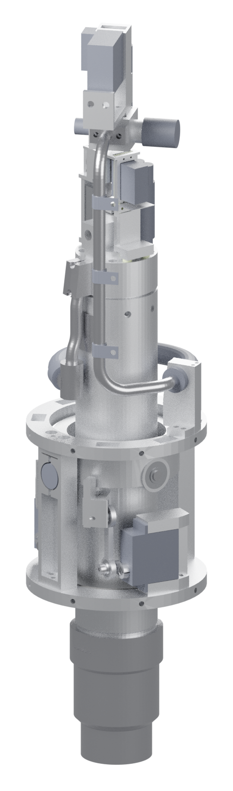
| Configuration | Version | sha256/16 |
|---|---|---|
| CAD | v3.4.1 | GLB 3879a25a4486ee0c |
| Combustion | v2.4 | 469727032124329f |
| Mechanical | v2 | 4f024ed4ccb4618c |
| Electronics | v2 | da067408c1594814 |
| Space/GNC | v3 | 3e97c378cfebee95 |
| Requirements | rev 2 | fbb9e1205707082f |
| Airframe ICD | draft 0.2 | 706455abf4098182 |
| Decision log | 176 lines | 0c2c6d5539240658 |
| Review register | 7 reviews | 9736f4974377a7bd |
| Decision overrides | ovr-3 | 3666334a809ccf6d |
| Item | Value |
|---|---|
| Document | ARGOS-H1-ENGINE-DATASHEET DESIGNT353 |
| Revision and status | rev0-draft — DRAFT, digital design data only DESIGNT354 |
| Generated | 2026-10-13T13:25:31Z DESIGNT355 |
| Engine (requirement ENG-01) | Max thrust 500 N at sea level, with N2O at |
| Throttle architecture | Servo-driven variable-area pintle (needle-in-seat) at the head end + separate NC main isolation valve upstream (tank side, off-gimbal) LEADT357 |
| Propellants and grain (ENG-12) | Propellants: self-pressurised N2O, tank 2.00 kg / 3.17 L conditioned to |
| Thrust vector control (ENG-07) | TVC by a two-axis gimbal of the whole engine, pivot at the engine-group mid-burn CG. Range ±7° on the vector norm, 8° conical mechanical stop. Slew ≥ 100°/s at 7° in the worst vector direction at the 7.4 V nominal servo plug (111.2°/s was the v1 load; at the v2 load 99.85°/s, 97.77°/s with the hose at its limit, so ENG-07 is OPEN and marginal until Mechanical's exact kinematics and B-TVC-1; amended 2026-10-13, REV-GNC-1 RG-12). The 6.6 V degraded case (95.3°/s) is accepted on the MC result P 0.982. Linkage ratio n … LEADT359 |
| Ignition | spark-ignited N2O/propane torch (baseline kept); arc-ABS kept as a research option for bench tests (would remove the propane system) DERIVEDT360 |
| CAD configuration | DESIGN MODEL - not released for fabrication; geometric checks are software checks, not physical validation DESIGNT361 |
| Combustion interface status | v2.4 REVISION (digital only, Por revisar). Design point unchanged. No number is MEASURED. The relight claim is gated by CF-4; FA-1 is accepted for design continuation only. DESIGNT362 |
| Electronics interface status | DESIGN + SIL + schematic. Firmware v2.9 runs only in SIL; the ECU v2.3 schematic passes ERC and a netlist cross-check; no board has been built and nothing here is hardware-validated. Values carry tags; open items are listed in open_issues, and the bench plan (06-electronics/docs/bench_plan_v2.md) is where each is closed. DESIGNT363 |
| Review register note | Independent review verdicts for the engine team's digital deliverables. A verdict is not physical approval: no hardware has been tested. DESIGNT364 |
| Decision overrides in force | ovr-3: 9 active, 0 redundant, 0 in error; 4 superseded values withheld (4 interface keys); see §13.1 and §13.2 DERIVEDT352 |
The programme keeps five kinds of evidence apart. This datasheet labels every value with one of them; none of them is a physical test.
| Evidence kind | Scope in this datasheet | Source statement |
|---|---|---|
| Conceptual geometry | Items defined in text or hand calculation only, not modelled as solids: N2O tank, isolation-valve module mass, head-end bleed path, relief and fill/vent hardware. | v1 concept, not yet in CAD DESIGNT365 |
| CAD solid model | CAD v3.4.1: STEP solids of record, assembly manifest and GLB display mesh. Software checks only. | n: 98; passed: 98 DERIVEDT366 |
| Mass budget | CAD volume × density for modelled parts, datasheet or assumed masses for COTS items, explicit exclusions (§4.4). | sum of unit masses x qty (CAD volume x density, or tagged COTS masses); includes the transport-lock items only if they are placed (they are not: group 'lock' is excluded from the instance list); PROVISION lines excluded DERIVEDT367 |
| Simulation | Quasi-1D combustion and CEA, plume CFD, 6-DOF Monte Carlo, firmware SIL. Predictions with stated inputs and tags. | M2 v3 (2026-10-12): 6-DOF Monte Carlo (sim6/run6 v2.6, 500 runs per case, same draws) re-baselined on mechanical.json v2 + combustion.json v2.3 (iface_v3c) with flight software v2.6 (tracker, governor with ratchet, pre-MECO throttle-down, relight start rule, NC-closed relight). Lead decisions … SIMT368 |
| Physical validation | None performed. Bench, cold-flow and static-fire tests are listed in §12 and executed by the founders. | Independent review verdicts for the engine team's digital deliverables. A verdict is not physical approval: no hardware has been tested. DESIGNT364 |
Each value is followed by its tag and a trace reference T###. The trace gives the source file, its version and sha256/16, and the exact key (JSON pointer, markdown row or CHANGELOG line and item). Where a source carries a longer tag text, Appendix A keeps it verbatim.
| Line | Date | Decision (start of text) |
|---|---|---|
| 161 | 2026-10-13 | On GNC rev1 (lines 157-158; text saved to 01-systems-gnc/staging_v3.1/rev1/REPORT-GNC-rev1.md, lead verified MANIFEST_rev1 2dbe49919289f0ac, rev1_items 799258458f0142a5, FSW record 08c85849a5da950d): (1) FC release predicate ADOPTED (DESIGN): while the drogue is attached, on each new TLM_FAST frame RELEASE iff (d1 & 0x0F) = RUN AND b4 AND [(d2-d3 != 0xFFFF AND >= 300 kPa abs) OR b7], latched; b7 filtered-only (line … LEADT369 |
| 164 | 2026-10-13 | On Combustion's RG-01 tables and Mechanical's bleed-path line 162: (1) RG-01 design basis = Combustion's minimal set (3): coil re-route + pre-scheduled 2-tap purge on the decided path (equal 0.707 mm restrictors, 0.71 mm drill, each flow-tested for Cd) with 2.5 s of FLOW ending at E0 - 0.05 s + theta <= 2 deg with balanced or axial vent. PTFE lining DROPPED (costs 0.3 s of margin, no P benefit). (2) PURGE command at … LEADT370 |
| 166 | 2026-10-13 | On REV-ELEC-1: (1) RE-02 light-rule baseline fallback: P0 > +check -> keep the measured P0 (never substitute ambient on the high side), log BASE_HIGH and flag the FC; on the pad and the stand this refuses the lift with PC_SENSOR (no commit); at the A1 relight the start proceeds on the measured P0. P0 < -check -> P0 := 0 (the -0.75 bar PC_SENSOR path unchanged). Tag LEAD (this line). S13 B extended per RE-02 (2): … LEADT371 |
| 168 | 2026-10-13 | On REV-GNC-2: (1) Drogue release predicate restated, interim term limited to the invalid case: RELEASE iff RUN AND b4 AND [(Pc valid AND >= 300 kPa abs) OR b7 OR (d2-d3 = 0xFFFF AND t >= t_E2 + 0.10 s)], latched, t_E2 from EVENT 0x120; a late invalidity releases on the first invalid frame. The sentence "the FC never holds the drogue with the engine in RUN beyond E2 + 0.10 s" in line 161 (2) is WITHDRAWN. b7 sets … LEADT372 |
| 170 | 2026-10-13 | On the Combustion v2.4 handback (line 169): installed 02-combustion/REPORT.md v2.4 (32e366bd78437dc0, from REPORT_v2p4.txt), 05-plume-cfd/REPORT.md v2.2b (140b3c59f8323bba), 02-combustion/REVISION-RESPONSE.md (ee951fb865c1459d); HANDBACK-SUMMARY lines 79-80 replaced with the RC-10 text (1d760e9e197429d8); v2.3 report, v2.3 summary and plume v2.2 archived under superseded/. (1) OI-28 ENG-01 at the cap: the 25 bar … LEADT373 |
| 172 | 2026-10-13 | On REV-COMB-2: (1) R2-02 ONE stand safing rule after a no-light, effective now: N2 purge >= 60 s at >= 10 g/s, then hold >= 15 min before anyone approaches, with Pc at ambient and head TCs falling, then safing; "wait >= 5 s" is withdrawn everywhere. (2) R2-03 FA-1 load restated as an ENVELOPE: Combustion publishes O/F 4-12 x tf 1-7 ms (1 ms steps) x t_res 0.02/0.06 x pool none/q 2 MW/m2 (head and aft peak, rise … LEADT374 |
| 173 | 2026-10-13 | On Combustion's FA-1 envelope (02-combustion/data/v2p4a/fa1_envelope_v2p4a.json 64b328150025fa1e; 896 cases, A1 relight, O/F 3-12, tf 1-7 ms; SIM on ASSUMED construct): head peak 83.0 bar abs baseline (vapour once, rounded entrance) / 84.8 sharp / 88.0 upper bracket; aft 0.95-1.00 of head; time above 45 bar <= 3.65 ms (4.45 bracket); above 67.5 bar <= 1.0 ms (1.3); never above 90 bar; impulse <= 726 bar.ms (757); … LEADT375 |
| 175 | 2026-10-13 | On GNC rev2 (line 174; staging_v3.1/rev2 MANIFEST cb5d2c48e8d8fa27 verified 280/280 by the lead; REPORT-GNC-rev2.md 2edf0360cbc975e5 extracted by the lead; SIM only): (1) A1 apogee target 285 m ADOPTED under line 168 (4) (0 exhausted runs at the 73 g purge; cost 15 m). (2) +0.60 kg bleed-valve mass: no trim below 275 m now; the trigger is the selected valve pair: if it adds > 0.30 kg, GNC re-flies and the lead … LEADT376 |
All performance values are model predictions (quasi-1D port model with CEA thermochemistry), with the regression law ASSUMED until the T1–T4 static fires. None is measured. Model basis: 20 C saturated tank (P_tank 50 bar row of the map for lift and dP/Pc), initial port 25 mm, nominal law. SIM grain_q1d.py v2 (quasi-1D port, S230, nominal ASSUMED law, Dyer pintle Cd 0.70, eta_c* 0.92, eta_cf 0.975) SIMT377
| Quantity | Rated, 100 % | Floor target, 20 % (5:1) | Floor requirement, 25 % (4:1) | Stretch floor, 12.5 % (8:1) |
|---|---|---|---|---|
| Thrust F (sea level) | 500.0 N SIMT034 | 100.0 N SIMT039 | 125.0 N SIMT378 | 62.5 N SIMT379 |
| Chamber pressure Pc | 2.50 MPa (25.0 bar) SIMT038 | 0.62 MPa (6.2 bar) SIMT380 | 0.73 MPa (7.3 bar) SIMT381 | 0.44 MPa (4.4 bar) SIMT382 |
| Mixture ratio O/F | 10.44 SIMT383 | 4.85 SIMT384 | 5.32 SIMT385 | 4.06 SIMT386 |
| Specific impulse Isp (sea level) | 193.1 s SIMT035 | 162.5 s SIMT387 | 171.4 s SIMT388 | 140.2 s SIMT389 |
| Specific impulse as exhaust velocity | 1894 N·s/kg DERIVEDT390 | 1594 N·s/kg DERIVEDT391 | 1681 N·s/kg DERIVEDT392 | 1375 N·s/kg DERIVEDT393 |
| Oxidiser mass flow | 0.2410 kg/s SIMT394 | 0.0520 kg/s SIMT395 | 0.0626 kg/s SIMT396 | 0.0365 kg/s SIMT397 |
| Fuel mass flow | 0.0231 kg/s SIMT398 | 0.0107 kg/s SIMT399 | 0.0118 kg/s SIMT400 | 0.0090 kg/s SIMT401 |
| Total mass flow | 0.2641 kg/s DERIVEDT402 | 0.0628 kg/s DERIVEDT403 | 0.0744 kg/s DERIVEDT404 | 0.0454 kg/s DERIVEDT405 |
| Pintle lift | 1.916 mm SIMT406 | 0.301 mm SIMT407 | 0.367 mm SIMT408 | 0.207 mm SIMT409 |
| Injector stiffness dP/Pc | 0.91 SIMT410 | 7.10 SIMT411 | 5.80 SIMT412 | 10.43 SIMT413 |
| Requirement or target thrust | 500.0 N SIMT414 | 100.0 N REQT415 | 125.0 N REQT416 | 62.5 N REQT417 |
| Model status at the point | ENG-01 at the 25 bar cap: see the note below LEADT036 | met (dP/Pc 7.1) SIMT418 | met (dP/Pc 5.8) SIMT419 | model meets it: dP/Pc 10.4, chug gain margin 38.6 at 10 ms delay, attached nozzle except incipient lip separation … SIMT420 |
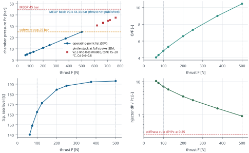
| Quantity | Value |
|---|---|
| Throat diameter Dt | 13.72 mm DESIGNT470 |
| Exit diameter De | 19.41 mm DESIGNT471 |
| Expansion ratio ε | 2.00 DERIVEDT472 |
| Throat area At | 147.93 mm² DERIVEDT473 |
| Exit-to-ambient pressure ratio at rated point | 3.199 SIMT474 |
| Characteristic velocity c* (delivered, ηc* 0.92) | 1401 m/s SIMT475 |
| Ratio of specific heats, chamber | 1.1467 SIMT476 |
| Molar mass, chamber | 28.72 kg/kmol SIMT477 |
| Gas-path length, injector face to exit | 338.6 mm DERIVEDT478 |
| Free chamber volume, initial | 284.6 cm³ DERIVEDT479 |
| Characteristic length L*, initial | 1.924 m DERIVEDT480 |
| Chamber gas-side diameter (pre/post chamber) | 53.9 mm DESIGNT481 |
| Case tube OD × wall | 63.50 mm DESIGNT482 × 3.175 mm DESIGNT483 |
| Chamber temperature, ideal (CEA) | 3257 K (2984 °C) SIMT484 |
| Stagnation temperature, delivered (ηc*²) | 2757 K (2484 °C) SIMT485 |
| Throat insert material | isomolded/extruded fine-grain graphite, bulk density >= 1.80-1.85 g/cm3, ash <= 0.1 %; grade TO-QUOTE (Sønderborg DK-6400) DERIVEDT486 |
| Item | Value |
|---|---|
| Starts per flight | >= 3; limited by propane (0.055 g/start) and N2O torch flow (0.30 g/start) DERIVEDT490 |
| Restart requirement (ENG-04) | Restartable: ≥ 3 starts per flight. Command to 90 % thrust ≤ 0.5 s (target 0.3 s), repeatability ±50 ms; flight software plans relight on 0.81 s (amended 2026-10-13; the 0.6 s rule is withdrawn). DEVIATION recorded 2026-10-13: the ≤ 0.5 s / ±50 ms targets are met only for a liquid-filled segment; vapour-state relights reach 0.81 s to Pc confirm, and the vapour-filled 44 cm³ segment is not yet evaluated (REV-GNC-1 RG-01, RG-12). The ignition lift is held until light is confirmed, and the pintle never opens past the ignition lift before that (amended 2026-10-13: light = Pc rise >= 0.8 bar above the pre-lift baseline [E1-20 ms, E1] on filtered and raw for 10 ms, sanity floor 1.8 bar abs; the 3 … DERIVEDT491 |
| Light window W from the lift command: flight first start / flight relight / stand | 0.40 s LEADT487 / 0.65 s LEADT488 / 0.35 s LEADT489 |
| Relight planning value (flight software) | 0.81 s REQT492 |
| Planning value on an UNPRIMED flag (option c) | 1.41 s REQT493 |
| A1 burn time, nominal 6-DOF (FSW v2.6 basis) | 7.37 s SIMT494 |
| N2O vented per relight purge, plan maximum | 76 g SIMT495 |
| Grain and throat insert life (ENG-06) | Accumulated burn per flight sized by the duty cycles in gnc.json v3. Grain replaced each flight; web ≥ 1 mm over the whole regression-law envelope (a ×0.6–1.5, n 0.35–0.68). Throat insert: plan on one insert per flight until T1/T4 bore data exist. Model spread is 0.5–4 A1 flights per insert at ΔAt/At 5 %; the literature-anchored case gives 0.46–0.71 (review RC-06). The Pc/thrust loop must tolerate 7–11 % throat-area growth within a flight. Thermal design envelope (amended 2026-10-13): the dispersed duty cycles of gnc.json v3 (index rev d, up to 24.09 s), governed per quantity: A1 p99 … ASSUMEDT496 |
| Limit | Value | Note |
|---|---|---|
| Normal chamber pressure cap (software) | 2.50 MPa (25.0 bar) LEADT466 | LEAD decision; ENG-01/ENG-09 |
| ECU over-pressure abort | 3.00 MPa (30.0 bar) LEADT498 | decided channel and persistence: §7.6 (OVR-01) |
| Hardware comparator trip (Pc transducer, nominal) | 3.248 MPa (32.48 bar) DERIVEDT499 | absolute; band in electronics.json |
| Late-light decomposition peak at the pad (key pad_15C): rounded / sharp port entrance | 4.060 MPa (40.6 bar) SIMT500 / 4.370 MPa (43.7 bar) SIMT501 | rounded entrance REQUIRED (CHANGELOG 160 (4)) |
| MEOP basis (v2.4) at the ignition interlock, and its margin to MEOP | 4.433 MPa (44.33 bar) SIMT469 at Ttank ≤ 24 °C REQT510; margin 0.67 bar SIMT502 | stuck pintle at full stroke, worst corner of the bands; replaces the v2.3 basis (§13.2) |
| Chamber MEOP | 4.50 MPa (45.0 bar) LEADT467 | kept with the ignition interlock (ENG-09 amendment) |
| Fuel-assisted relight pulse (FMEA FA-1, key burn_1ms) | 4.89–7.55 MPa (48.9–75.5 bar) SIMT503single point at ASSUMED O/F 8; superseded by the FA-1 envelope (head peak 83.0 to 88.0 bar abs) and the structural load 90 bar abs OVR-07 | MEOP NOT shown -> FMEA FA-1 (single-control hazard) SIMT504 |
| FA-1 envelope, head peak: baseline / sharp entrance / upper bracket (v2.4a) | 8.304 MPa (83.0 bar) SIMT529 / 8.476 MPa (84.8 bar) SIMT530 / 8.802 MPa (88.0 bar) SIMT531 | SIM on an ASSUMED construct (§2.5) |
| FA-1 structural load (lead decision): quasi-static at head and aft, all parts | 9.000 MPa (90 bar) LEADT516 | replaces the interim check (CHANGELOG 173) |
| FA-1 parts with a natural period in the decided band: design / sensitivity pressure | 9.200 MPa (92 bar) LEADT517 / 10.200 MPa (102 bar) LEADT518 | Mechanical margins reported, not reviewed (§2.5) |
| Blocked-nozzle bound (chamber at tank vapour pressure) | 6.31 MPa (63.1 bar) DERIVEDT505 | below yield (FEA PENDING) |
| Proof pressure (ENG-09) and its minimum margin above the MEOP basis | 6.75 MPa (67.5 bar) LEADT506; margin ≥ 21.9 bar SIMT507 | hydro proof, founders |
| Tank MEOP | 7.00 MPa (70.0 bar) LEADT508 | tank not yet in CAD |
| Tank pressure at ARM, saturated: lower end / ignition interlock | 4.500 MPa (45.0 bar) DERIVEDT514 / 5.528 MPa (55.28 bar) LEADT511 less the guard band TO-DEFINE TO-DEFINET512 | interlock per CHANGELOG 172 (4); the combustion.json range still spans the old ARM range (OVR-04) |
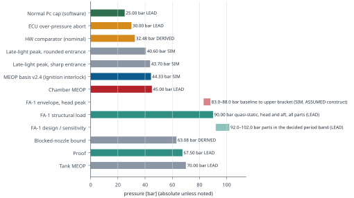
| Physical worst case | Value |
|---|---|
| Basis | MEOP 45 bar kept with the ignition interlock T_tank <= 24 C at ARM and at ignition; basis 44.33 bar at the interlock (meop_basis_v2p4), margin 0.67 bar OVR-06 combustion.json still reads: LEADT566 |
| Chamber pressure at the basis (pintle stuck at full stroke) | 4.433 MPa (44.33 bar) SIMT469 at Ttank ≤ 24 °C REQT510 |
| Thrust at the basis | MISSING MISSINGT563 |
| Full-stroke injector Cd accepted in CF-1/CF-3 (otherwise MEOP is restated) | 0.80 LEADT565 |
| Lateral thrust at the gimbal range: rated / worst case | 60.9 N DERIVEDT562 / MISSING MISSINGT564 |
| Relight thrust transient (FA-1): interim structural load, confirmed bounding by the envelope | 1.8 kN LEADT521 × 4 ms LEADT522 |
| Airframe ICD statement (ICD §3) | 876 N at Pc [withheld: superseded value, SUP-04] (pintle stuck at full stroke, |
| Pressure-part requirement (ENG-09) | Pressure parts: SF ≥ 1.5 on yield and ≥ 2.0 on ultimate, at MEOP and at temperature. Chamber MEOP 45 bar ( |
| ENG-09 amendment | ENG-09: MEOP 45 bar kept; ignition interlock T_tank <= 24 C at ARM and at ignition. REQT013 |
The fuel-assisted relight pulse (FMEA FA-1) is published as an envelope over the Combustion v2.4a case grid, computed on a vented three-node construct with ASSUMED inputs: an estimate, not acceptance evidence. The lead set the structural load on it (CHANGELOG 173). The single point in combustion.json v2.4 is not a load any more and is annotated wherever it is quoted (OVR-07).
| FA-1 envelope (Combustion v2.4a) | Value |
|---|---|
| Case grid (as published, with the number of cases) | OF_grid: [4.0, 5.0, 6.0, 8.0, 10.0, 12.0]; OF_extension: [3.0, 3.5]; tf_ms: [1.0, 2.0, 3.0, 4.0, 5.0, 6.0, 7.0]; t_res_s: [0.02, 0.06]; pools: none; q2.0; inits: vapour_once: 0.05; as_written: 1.0; entrances: rounded_Cd1.0: 1.0; sharp_Cd0.65: 0.65; n_cases: 896 SIMT552 |
| Head peak: baseline (vapour counted once, rounded entrance) / sharp entrance / upper bracket | 8.304 MPa (83.0 bar) SIMT529 / 8.476 MPa (84.8 bar) SIMT530 / 8.802 MPa (88.0 bar) SIMT531 |
| Aft peak relative to the head peak (range over the cases) | 0.951–0.999 SIMT532 |
| Time above 45 bar at the head (summed): baseline / upper bracket | 3.65 ms SIMT533 / 4.45 ms SIMT534 |
| Time above 67.5 bar at the head (summed): baseline / upper bracket | 1.00 ms SIMT535 / 1.30 ms SIMT536 |
| Time above 90 bar at the head (summed): baseline / upper bracket | 0.00 ms SIMT537 / 0.00 ms SIMT538 |
| Head pressure impulse above the cold-flow pressure: baseline / upper bracket | 726 bar·ms SIMT539 / 757 bar·ms SIMT540 integral of max(P - P0, 0) over 0-25 ms after the light, bar.ms; P0 = cold-flow pressure 1.071 bar SIMT541 |
| Thrust spike, peak (quasi-steady nozzle × ηcf): baseline / upper bracket | 1694 N ASSUMEDT542 / 1768 N ASSUMEDT543 |
| Thrust spike, single-degree-of-freedom equivalent (max over periods), upper bracket; interim rectangular pulse for comparison | 3053 N DERIVEDT545; interim pulse 3484–3599 N DERIVEDT547 |
| Head equivalent static pressure with the dynamic load factor (max over periods): baseline rounded / upper bracket | 8.898 MPa (89.0 bar) DERIVEDT549 / 10.200 MPa (102.0 bar) DERIVEDT551 |
| Lead summary of the envelope | On Combustion's FA-1 envelope (02-combustion/data/v2p4a/fa1_envelope_v2p4a.json 64b328150025fa1e; 896 cases, A1 relight, O/F 3-12, tf 1-7 ms; SIM on ASSUMED construct): head peak 83.0 bar abs baseline (vapour once, rounded entrance) / 84.8 sharp / 88.0 upper bracket; aft 0.95-1.00 of head; time above 45 bar <= 3.65 ms (4.45 bracket); above 67.5 bar <= 1.0 ms (1.3); never above 90 bar; impulse <= 726 bar.ms (757); LEADT523 O/F bounding within the construct (closed-volume max at O/F 3.5); fuel-basis sensitivity +2-3 %; thrust spike <= 1.77 kN, SDOF equivalent <= 3.05 kN (interim 1.8 kN x 4 ms gives 3.48-3.60 kN, so it bounds). LEADT524 Pressure DLF: <= 1.007 for periods <= 0.1 ms (shell: quasi-static valid); 1.07-1.20 for periods 0.25-1 ms (head equivalent static <= 89.0 baseline rounded, <= 102.0 bracket). LEADT525 |
| Model tag | SIM three-node vented network on ASSUMED inputs (fast part, t_res, tf, f_ret, q, O/F): an ESTIMATE, not acceptance evidence SIMT554 |
| Not modelled | acoustic/wave peaks along the 230 mm port (lumped nodes; transit ~0.3 ms hot, ~1 ms cold); equilibrium (variable cv, recombination) thermochemistry: kappa fitted at 40 kg/m3 (REV-COMB-2: +3.7 % at 6.6 kg/m3, conservative); frozen-gamma throat outflow (REV-COMB-2: vents ~4 % fast, slightly non-conservative); flame spread, heat loss, combustion roughness; the torch contribution before the light; the fuel-vapour inventory at light (MISSING; first-order bound only) SIMT555 |
| Fuel-vapour inventory at light | MISSING: the fuel-vapour (and aerosol/film) inventory in the warm 32.2 mm port at the moment of light after the 18.67 s A1 coast is not modelled and not measured. Below: first-order bounds only. TO-VERIFYT556 Missing datum (fuel inventory at light) remains TO-VERIFY; LEADT526 TO-VERIFY TO-VERIFYT560 |
| Data file | 02-combustion/data/v2p4a/fa1_envelope_v2p4a.json 64b328150025fa1e: matches the citation DERIVEDT528 |
| FA-1 load decision | Value |
|---|---|
| FA-1 structural load, quasi-static at head and aft, all parts | 9.000 MPa (90 bar) LEADT516 |
| Parts with a natural period in the decided band (closures, bolts, J1 lip): design / sensitivity pressure | 0.25–1 ms LEADT519 T520: 9.200 MPa (92 bar) LEADT517 / 10.200 MPa (102 bar) LEADT518 |
| Thrust spike, interim structural load (confirmed bounding) | 1.8 kN LEADT521 × 4 ms LEADT522 |
| Mechanical margins at these loads (decision-log result, not independently reviewed) | FA-1 final load rule (lead 172 (2) + 173) closed in S-AX/joints: 90 bar abs quasi-static head+aft every part, 92/102 bar for the 0.25-1 ms parts (modes 1-2: TC-09+nozzle stack 0.33-0.47 ms, TC-02 head on its screws 0.27-0.39 ms; shell/bonnet 0.04-0.08 ms quasi-static), SF 1.0: TC-01 MS_y +0.91/+0.87/+0.69 (ult +1.07/+1.03/+0.83); TC-02 +4.46/+4.34/+3.83; TC-09 316L YIELD -0.40/-0.41/-0.43 (ult +0.80/+0.78/+0.66) -> v3.5 TC-09 IN718 +2.81/+2.76/+2.51 (own thermal run); J-FWD 8xM5 A4-70 yield -0.011/-0.033/-0.128, ult +0.60/+0.56/+0.41 (shoulder-screw option +0.86/+0.82/+0.64); seal S13 -0.016 at 102 bar only; NZ-01..04, J-AFT, J-TC03, J-LIP positive. Spike 1.8 kN/4 ms: 608 bearings exceed C0 (MS -0.24 DLF 2.0, -0.21 trapezoid, -0.10 at Combustion SDOF 3.05 kN; C0 AS RECALLED) - brinelling possible, ultimate not demonstrated; TVC linkage 14.8 vs 35.3 N m, pintle link 428 vs 831.6 N, airframe screws MS +3.97 SIMT557 PENDING PENDINGT559 |
| Physical evidence | IGN-1 with the dynamic Pc channel is the physical evidence LEADT527 |
| Decision text | DECISION: FA-1 structural load = 90 bar abs quasi-static at head and aft for all parts (covers every baseline peak and the shell); for any closure, bolt, J1-lip or other part with a natural period of 0.25-1 ms Mechanical reports margins also at 92 bar abs (design: baseline rounded with DLF and the +3 % fuel-basis sensitivity) and at 102 bar abs (sensitivity: upper bracket, sharp, DLF); thrust spike 1.8 kN x 4 ms stays the interim load and is confirmed bounding. LEADT515 |
| Item | Value |
|---|---|
| Throttle requirement (ENG-02) | Throttle floor ≤ 20 % of max (5:1, 100–500 N) with stable combustion. Stretch: 12.5 % (8:1). Throttle by a servo-driven variable-area pintle, with a separate NC isolation valve for shutoff. DERIVEDT569 |
| Throttle floor flown by GNC (fraction of rated) | 20 % DERIVEDT570 |
| Injector | pintle (needle-in-seat), unchanged from v1 LEADT571 |
| Pintle seat diameter / stroke | 5.50 mm DESIGNT572 / 4.00 mm DESIGNT573 |
| Discharge coefficient Cd (two-phase N2O) | 0.70 ASSUMEDT574 |
| Cd acceptance criterion | Cd_eff (vs Dyer) >= 0.41 measured in N2O cold flow keeps the 15 C ceiling >= 500 N (HEM-like worst case, data/v2/injector_compare_v2.json) DERIVEDT575 |
| Pintle drive | MKS HV69 (MKS HV69, MKS no. S0022012 (Lindinger item 9788343)) DATASHEETT576 |
| Pintle servo mass | 21 g DATASHEETT577 |
| Pintle supply rail | PRAIL 7.49 V typ (TPS552882 + LTC4365, see pintle_rail) DESIGNT578 |
| Pintle position resolution | 10 µm DESIGNT579 |
| Throttle response requirement (ENG-03) | Throttle response: t10–90 ≤ max(0.15 s, 0.8·ΔF / 1000 N/s). Ramp (amended 2026-10-13, lead on GNC eng03_rate_v1.1): closing ≥ 2500 N/s in every state; opening ≥ the HV69 corner rate map (06-electronics/results/pintle_rate_map_v1.json, minimum 1188 N/s at 3.5 MPa / 400 N, 2500 N/s below ~40 % thrust); closed-loop t10-90 ≤ 100 ms under load including the drive. 6-DOF loss with the map: −0.07 % (p 0.875), within MC resolution. A flat 2 F_max/s would cost A1 0.992 → 0.978 (REV-GNC-1 RG-05). Pc loop closed and gain-scheduled; plant gain varies ×2.7 down to the floor. DERIVEDT580 |
| Start ramp | 2500 N/s LEADT581 |
| Opening rate, minimum over the map: nominal / corner | 1347 N/s SIMT582 / 1188 N/s SIMT583 |
| Closing rate, minimum over the map (corner) | 2635 N/s SIMT584 |
| Map states opening at ≥ 2500 N/s: nominal / corner | 57/95 SIMT585 / 29/95 SIMT586 |
| Chamber filling time constant | 3.4 ms DERIVEDT587 |
| Shutdown requirement (ENG-05) | Shutdown: command to < 10 % thrust ≤ 0.10 s. Met with a mandatory pre-MECO throttle-down to ≤ 75 % (a 100 % MECO at 3.5 MPa tank fails at 0.106–0.124 s). No flashback or decomposition in the feed. NC main valve closed during coasts until seat leak-tightness has been measured. DERIVEDT588 |
| Actuator speed finding (Combustion) | No combustion basis for 0.08 s. Start transient: Pc overshoot <= 0.34 % for full-stroke times 0.08-0.40 s and starts to 12.5-100 % (chamber fill ~4 ms: the start is quasi-static behind the pintle); max dPc/dt on a start to 100 % falls from 603 bar/s (0.08 s) to 232 bar/s (0.25 s). Hard start: N2O admitted to an unlit chamber before the 0.35 s ignition check 8.7 g at every speed (set by the ignition-lift dwell and … SIMT589 |
| Item | Value |
|---|---|
| Architecture | two-axis Cardan gimbal of the whole thrust chamber; split engine collar (GM-01/02) clamped on the case at the pivot plane carries the inner pins (+/-Y) in 608-2RS bearings in the ring GM-03; the ring carries the outer pins (+/-X) in 608-2RS bearings in two yoke posts GM-08 on the thrust rings GM-09/GM-10 (fixed module); 8 deg conical PU stop GM-11 DERIVEDT590 |
| Gimbal range (vector norm) / mechanical stop | 7.0 ° REQT561 / 8.0 ° DERIVEDT591 |
| Pivot location | at the mid-burn CG of the gimballed group (founder decision FINAL 2026-10-12); re-centred here for the v3.4/feed ESTIMATE items DERIVEDT592 |
| Pivot to injector face / to nozzle exit | 105.6 mm DERIVEDT593 / 233.0 mm DERIVEDT594 |
| Gimbal bearings | 4 x 608-2RS (8x22x7); pins 8 h6 17-4PH H1150 TO-VERIFYT595 |
| TVC actuators | Savox SB-2292SG DATASHEETT596 |
| Actuator mass (each) | 0.081 kg DATASHEETT597 |
| Actuator stall torque / no-load speed at 7.4 V | 3.04 N·m DATASHEETT598 / 857 °/s DATASHEETT599 |
| Actuator command rate | 333 Hz DATASHEETT600 |
| Linkage ratio n (servo angle / engine angle) | 4.8 LEADT601 |
| Engine-angle resolution / backlash | 0.0208 ° DERIVEDT602 / 0.0417 ° DERIVEDT603 |
| Required slew (ENG-07) | 100 °/s REQT604 |
| Required gimbal angular acceleration | 34.9 rad/s² REQT605 |
| Slew status, mechanical.json v2 | as built: worst-direction slew at 7 deg 111.2 deg/s at 7.4 V, 118.3 at 7.6 V (>= 100); 95.3 deg/s at the 6.6 V degraded plug voltage, the case GNC validated for n 4.8 (lead FINAL: P(landing) 0.982 at 6.6 V) DERIVEDT606 |
| Design engine moment: ENG-10 / Mechanical as built / GNC parts load | Structure (gimbal, mounts, fasteners): SF ≥ 1.5 on yield and ≥ 2.0 on ultimate under design limit loads. Gimbal design loads: engine moment 35.3 N·m (both … LEADT607 37.95 N·m DERIVEDT608 / 26.5 N·m REQT609 |
| Axis stiffness, structure + rods at centre (α / β) | 2442–1608 N·m/rad SIMT610 |
| Stiffness requirement (ENG-11) | Gimbal axis stiffness (structure plus rods) ≥ 3,100 N·m/rad per axis at every pose (hard minimum); goal 5,200 N·m/rad. Alpha/beta spread across poses ≤ ±20 %. Rocking mode as required by ENG-07d. DERIVEDT611 |
| Rocking mode, first (range over poses) | 16.0–27.8 Hz SIMT612 |
| Stiffness and rocking-mode status | first rocking mode 16.0-27.8 Hz (excl. J_int) vs the 25 Hz minimum: below it whenever the servo is at the low end of its ASSUMED stiffness; the servo caps the total (servo alone through a rigid structure 16.2-28.7 Hz incl. pose); lead route: ENG-07d closes by control + B-TVC-1 measurement; GNC to state the minimum K / f for a 6 dB flex gain margin, Mechanical stiffens to it (stiffened concept: structure-only … DERIVEDT613 |
| Hinge load case | Load | Slew at 6.6V [°/s] | Slew at 7.4V [°/s] | Slew at 8.4V [°/s] |
|---|---|---|---|---|
| L_v1_3.19 | 3.19 N·m DERIVEDT614 | 95.2 °/s DERIVEDT615 | 111.1 °/s DERIVEDT616 | 150.0 °/s DERIVEDT617 |
| L_v2_terms | 4.87 N·m DERIVEDT618 | 83.1 °/s DERIVEDT619 | 99.7 °/s DERIVEDT620 | 140.0 °/s DERIVEDT621 |
| L_v2_hose_at_20Nm_rad | 5.17 N·m DERIVEDT622 | 80.9 °/s DERIVEDT623 | 97.7 °/s DERIVEDT624 | 138.2 °/s DERIVEDT625 |
| L_v34_O3b_coil_EI0.5 | 3.68 N·m DERIVEDT626 | 91.7 °/s DERIVEDT627 | 107.8 °/s DERIVEDT628 | 147.1 °/s DERIVEDT629 |
| no_load | 0.00 N·m DERIVEDT630 | 118.3 °/s DERIVEDT631 | 132.7 °/s DERIVEDT632 | 168.9 °/s DERIVEDT633 |
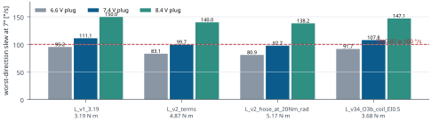
| Dimension | Value |
|---|---|
| Overall length along the engine axis (z) | 593.3 mm DERIVEDT041 |
| Overall width X / Y (axis-aligned bounding box) | 139.50 mm DERIVEDT044 / 139.50 mm DERIVEDT045 |
| Pivot to forward end / pivot to aft end | 355.2 mm DERIVEDT042 / 238.1 mm DERIVEDT043 |
| Gimballed engine group: z range / length | −238.1–250.7 mm DERIVEDT047 / 488.8 mm DERIVEDT046 |
| Fixed module (thrust frame, valve module, servos): z range / length | −99.8–355.2 mm DERIVEDT049 / 455.0 mm DERIVEDT048 |
| Mechanical build record, neutral assembly bounds | [-69.75, -69.75, -238.105, 69.75, 69.75, 355.2] DERIVEDT634 |
| Swept radial envelope, worst band (Mechanical checks) | z0_mm: 105.0; z1_mm: 110.0; r_engine_swept_mm: 60.08; by_engine: ENG-FD-03#0; r_ring_swept_mm: 0.0; r_fixed_mm: 71.8; by_fixed: ENG-FD-11#0; r_max_mm: 71.8; clearance_mm: -1.8 TO-VERIFYT635 |
| Airframe bay requirement (ICD §2) | ≥ 140 mm over the whole engine zone REQT636 |
| Engine zone (ICD §2) | z = −0.2377 to +0.252 m about the pivot (aft closure at the 8° stop to the top of the pintle stack) DERIVEDT637 |
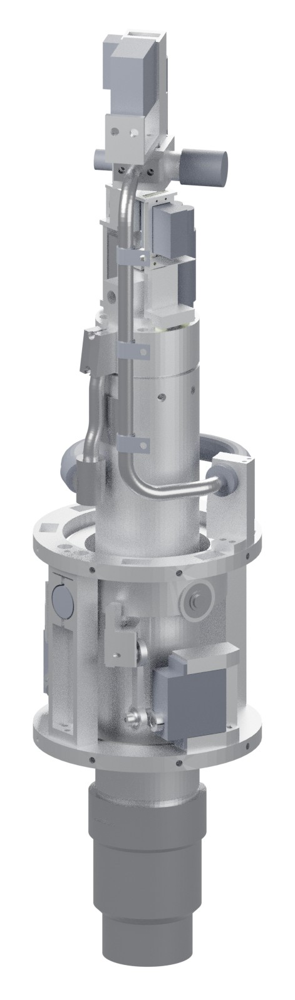
Each family is rendered at its assembly position (not exploded). Line counts and masses are sums over the BOM lines of the family (qty × unit mass, DERIVED by this generator; the transport lock is excluded).
| Group | Wet (full grain) | Mid-burn | Burn-out | No grain |
|---|---|---|---|---|
| gimballed engine | 2.7611 kg DERIVEDT638 | 2.6781 kg DERIVEDT639 | 2.5951 kg DERIVEDT640 | 2.3368 kg DERIVEDT641 |
| gimbal ring | 0.2280 kg DERIVEDT642 | 0.2280 kg DERIVEDT643 | 0.2280 kg DERIVEDT644 | 0.2280 kg DERIVEDT645 |
| TVC horns | 0.0182 kg DERIVEDT646 | 0.0182 kg DERIVEDT647 | 0.0182 kg DERIVEDT648 | 0.0182 kg DERIVEDT649 |
| TVC pushrods | 0.0184 kg DERIVEDT650 | 0.0184 kg DERIVEDT651 | 0.0184 kg DERIVEDT652 | 0.0184 kg DERIVEDT653 |
| fixed module (thrust frame, MV module, servos) | 1.3637 kg DERIVEDT654 | 1.3637 kg DERIVEDT655 | 1.3637 kg DERIVEDT656 | 1.3637 kg DERIVEDT657 |
| total | 4.3894 kg DERIVEDT658 | 4.3064 kg DERIVEDT659 | 4.2234 kg DERIVEDT660 | 3.9650 kg DERIVEDT661 |
| BOM family | Lines | Mass |
|---|---|---|
| EL · Sensors and encoders | 6 DERIVEDT254 | 0.0740 kg DERIVEDT255 |
| FD · Oxidiser feed | 11 DERIVEDT256 | 0.2680 kg DERIVEDT257 |
| FS · Main valve module (fixed) | 15 DERIVEDT258 | 0.3364 kg DERIVEDT259 |
| GM · Gimbal and thrust frame | 19 DERIVEDT260 | 1.1245 kg DERIVEDT261 |
| GR · Fuel grain | 2 DERIVEDT262 | 0.4244 kg DERIVEDT263 |
| HW · Bearings and hardware | 4 DERIVEDT264 | 0.0602 kg DERIVEDT265 |
| IG · Igniter | 2 DERIVEDT266 | 0.0740 kg DERIVEDT267 |
| NZ · Nozzle and joint | 4 DERIVEDT268 | 0.0634 kg DERIVEDT269 |
| PD · Pintle drive | 20 DERIVEDT270 | 0.1746 kg DERIVEDT271 |
| TC · Thrust chamber | 11 DERIVEDT272 | 1.7306 kg DERIVEDT273 |
| Sum of BOM lines (excl. transport lock) | 4.3301 kg DERIVEDT274 |
| Not in the CAD mass | Mass | Status / source |
|---|---|---|
| N2O tank: tube only (bulkheads, valves, fittings not designed) | 1.179 kg DERIVEDT337 | 6061-T6 tube 101.6 x 3.175 + 2 bolted bulkheads (radial M6, 2 FKM O-rings each) DERIVEDT338 |
| Head-end bleed provision, excluding valves (BOM ENG-BL lines) | 0.058–0.097 kg ASSUMEDT339 | A1 head-end bleed provision (lead 2026-10-13), NOT modelled in CAD v3.4.1; range = ESTIMATE of taps, tube+tee, crossing hose and bulkhead (excl. valves) ASSUMEDT340 |
| Bleed valves (MASS RISK, not baseline) | 0.60 kg TO-VERIFYT344 | F1 valve mass: 2 x 0.30 kg is held as a MASS RISK, not baseline; Electronics' 12 V NC valve search reports mass with a target <= 0.15 kg per valve; GNC flies +0.60 kg as a sensitivity. LEADT341 |
| Other items not modelled (mechanical.json v2 list) | MISSING MISSINGT346 | thrust-ring radial screws (16 x M5); isolation valve + actuator (mass UNKNOWN: Electronics/Combustion); tee, filter (<= 15 um, OI-7), relief, fill/vent; hose and lines fixed shares (~0.07 kg ASSUMED); tank MISSINGT345 |
| Engine ECU (on the fixed structure, not in CAD) | 0.16 kg ASSUMEDT347 (0.12–0.22 kgT348) | separate engine ECU (Teensy 4.1) on the fixed thrust structure, CAN link to flight computer DERIVEDT349 |
| N2O load (propellant) | 2.00 kg LEADT350 | LEAD decision 2026-10-12 (CHANGELOG): 2.00 kg / 3.17 L (85 % fill) LEADT351 |
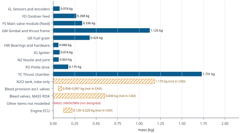
| Item | Value (ICD text) |
|---|---|
| ICD §2. Engine bay | |
| Engine bay inner diameter | ≥ 140 mm over the whole engine zone REQT636 |
| Engine zone, engine frame | z = −0.2377 to +0.252 m about the pivot (aft closure at the 8° stop to the top of the pintle stack) DERIVEDT637 |
| Nozzle exit below the pivot | 0.233 m; exit protrudes about 0.03 m below the aft datum DERIVEDT662 |
| Gimbal range | ±7° on the vector norm; 8° conical mechanical stop REQT663 |
| Airframe attachment | Thrust rings GM-09 (upper, thrust path) and GM-10 (lower: stop ring, TVC servo base) DERIVEDT664 |
| Ring fit | Ring outer radius 69.75 mm in the 140 mm bore; 0.25 mm radial gap DERIVEDT665 |
| Ring fasteners | 16 × M5 radial screws. Bolt pattern, edge distance and wall bearing check: (v2.1) DERIVEDT666 |
| Main-valve module (MV-P, balanced poppet) | Fixed module above the gimbal zone: occupies the bay from +0.252 m to about +0.355 m (engine frame; ESTIMATE). FS-01 axis at r 10 mm, az 219.5°, from z 259.5 mm up; FS-15 fixes it with 2 × M5 radial screws into the wall. Envelope and mass: (v2.1) LEADT667 |
| Feed across the gimbal | Option A/O3b: coil on the engine case; fixed 3/8 in wall line at az 219.5°, r 64.2 mm, from z 71 to 249.5 mm (engine frame), held by 3 P-clips on the airframe wall at z 110 / 170 / 230 mm. The coil fixed end is being re-routed (retained-vapour fix): it needs an airframe-wall clamp or GM-09 standoff near az 219.5°, z ≈ 71 mm. … REQT668 |
| ICD §3. Loads | |
| Rated thrust | 500 N (Pc 25 bar, software cap) REQT669 |
| Over-thrust abort | 650 N held for 3 frames on a 20 ms filter. Valid airborne, lit and with no drogue load LEADT670 |
| Physical worst-case thrust | 876 N at Pc [withheld: superseded value, SUP-04] (pintle stuck at full stroke, |
| Chamber MEOP / proof | 45 bar / 67.5 bar LEADT671 |
| Lateral thrust at 7° | 61 N at 500 N; 107 N at 876 N DERIVEDT672 |
| TVC design moment | 35.3 N·m engine moment. Rod forces 441 / 552 / 609 N react into the TVC brackets on GM-10 LEADT673 |
| Peak axial specific force in flight | 35.8 m/s² (B1 dispersed max), 33.7 m/s² (B1 p99), 27.7 m/s² (A1 p99) SIMT674 |
| Touchdown, leg contact | 50.3 m/s² (B1 p99), 40.3 m/s² (A1 p99). The 530–673 m/s² values in the "disp_max" files are failed-landing impacts, not design loads SIMT675 |
| Axis stiffness, structure plus rods | ≥ 3,100 N·m/rad at every pose, goal 5,200. The airframe side of the ring mounts is part of this path LEADT676 |
| ICD §4. Mass | |
| Liftoff mass | 16.07 kg for A1 (drogue + fins); 15.42 kg for B hops SIMT677 |
| Dry mass / N2O / grain | 13.67 kg / 2.00 kg / 0.404 kg DERIVEDT678 |
| Engine hardware mass and CG | (v2.1): CAD v3.4 re-issues the gimballed and fixed masses. The main-valve module and tank bulkheads are not yet in CAD MISSINGT679 |
| ICD item | Open item | Owner |
|---|---|---|
| ICD-1 | Thrust-ring bolt pattern, wall bearing and pull-out at 876 N plus lateral and moment loads TO-DEFINET680 | Mechanical (v2.1) / Lauty DESIGNT681 |
| ICD-2 | Main-valve module envelope and mass at the zone top TO-DEFINET682 | Mechanical (v2.1) DESIGNT683 |
| ICD-3 | Upper-bay vent area and station; baro-port placement TO-DEFINET684 | Lauty with Mechanical DESIGNT685 |
| ICD-4 | Relief and vent port routing (tank relief, 9.5 MPa disc line, fill/vent) TO-DEFINET686 | Mechanical / Lauty DESIGNT687 |
| ICD-5 | Tank station and mounting; heater and insulation interface TO-DEFINET688 | Mechanical / Lauty DESIGNT689 |
| ICD-6 | Launch-site bay temperature limit TO-DEFINET690 | Founders DESIGNT691 |
| ICD-7 | Pad slope specification and leg design TO-DEFINET692 | Lauty DESIGNT693 |
| ICD-8 | Drogue opening load, bay volume, ejection method, swivel and release fitting TO-DEFINET694 | Lauty DESIGNT695 |
| ICD-9 | Ground plume impingement on the feet TO-DEFINET696 | Combustion DESIGNT697 |
| ICD-10 | Airframe first bending mode ≥ 10 Hz on the real tube TO-DEFINET698 | Lauty, then GNC re-check DESIGNT699 |
| ICD-11 | Engine hardware mass and CG from CAD v3.4 TO-DEFINET700 | Mechanical (v2.1) DESIGNT701 |
| ICD-12 | Wall-line P-clips (3, at z 110 / 170 / 230 mm engine frame) and the coil fixed-end clamp near az 219.5°, z ≈ 71 mm: clamp type, wall fastening, loads (hose end reaction up to 32 N and 1.3 N·m at the 8° stop for EI 0.25) TO-DEFINET702 | Lauty with Mechanical DESIGNT703 |
| ICD-13 | Harness routing across the gimbal TO-DEFINET704 | Electronics / Mechanical, TO-DEFINE DESIGNT705 |
| ICD-14 | Head-end bleed overboard port (A1 provision): size, station, routing; balanced or axial vent TO-DEFINET706 | Mechanical (v2.1) / Lauty DESIGNT707 |
| ICD-15 | Drogue canopy type and oscillation data at the relight condition (≤ 2° design attitude) TO-DEFINET708 | Lauty DESIGNT709 |
| Pose | Interferences (not whitelisted) | Unexpected gaps < 3 mm | Smallest unexpected gap | Smallest wall gap |
|---|---|---|---|---|
| neutral | 0 DERIVEDT710 | 41 DERIVEDT711 | 0.500 mm DERIVEDT712 | 0.0 mm DERIVEDT713 by ENG-FD-11#0T714 |
| alpha+ | 0 DERIVEDT715 | 46 DERIVEDT716 | 0.500 mm DERIVEDT717 | 0.0 mm DERIVEDT718 by ENG-FD-11#0T719 |
| alpha- | 0 DERIVEDT720 | 45 DERIVEDT721 | 0.500 mm DERIVEDT722 | 0.0 mm DERIVEDT723 by ENG-FD-11#0T724 |
| beta+ | 0 DERIVEDT725 | 50 DERIVEDT726 | 0.399 mm DERIVEDT727 | 0.0 mm DERIVEDT728 by ENG-FD-11#0T729 |
| beta- | 0 DERIVEDT730 | 50 DERIVEDT731 | 0.345 mm DERIVEDT732 | 0.0 mm DERIVEDT733 by ENG-FD-11#0T734 |
| combined045 | 0 DERIVEDT735 | 53 DERIVEDT736 | 0.500 mm DERIVEDT737 | 0.0 mm DERIVEDT738 by ENG-FD-11#0T739 |
| combined135 | 0 DERIVEDT740 | 53 DERIVEDT741 | 0.487 mm DERIVEDT742 | 0.0 mm DERIVEDT743 by ENG-FD-11#0T744 |
| combined225 | 0 DERIVEDT745 | 53 DERIVEDT746 | 0.487 mm DERIVEDT747 | 0.0 mm DERIVEDT748 by ENG-FD-11#0T749 |
| combined315 | 0 DERIVEDT750 | 55 DERIVEDT751 | 0.500 mm DERIVEDT752 | 0.0 mm DERIVEDT753 by ENG-FD-11#0T754 |
| stop000 | 0 DERIVEDT755 | 50 DERIVEDT756 | 0.294 mm DERIVEDT757 | 0.0 mm DERIVEDT758 by ENG-FD-11#0T759 |
| stop045 | 0 DERIVEDT760 | 53 DERIVEDT761 | 0.421 mm DERIVEDT762 | 0.0 mm DERIVEDT763 by ENG-FD-11#0T764 |
| stop090 | 0 DERIVEDT765 | 47 DERIVEDT766 | 0.500 mm DERIVEDT767 | 0.0 mm DERIVEDT768 by ENG-FD-11#0T769 |
| stop135 | 0 DERIVEDT770 | 53 DERIVEDT771 | 0.378 mm DERIVEDT772 | 0.0 mm DERIVEDT773 by ENG-FD-11#0T774 |
| stop180 | 0 DERIVEDT775 | 50 DERIVEDT776 | 0.238 mm DERIVEDT777 | 0.0 mm DERIVEDT778 by ENG-FD-11#0T779 |
| stop225 | 0 DERIVEDT780 | 53 DERIVEDT781 | 0.378 mm DERIVEDT782 | 0.0 mm DERIVEDT783 by ENG-FD-11#0T784 |
| stop270 | 0 DERIVEDT785 | 49 DERIVEDT786 | 0.500 mm DERIVEDT787 | 0.0 mm DERIVEDT788 by ENG-FD-11#0T789 |
| stop315 | 0 DERIVEDT790 | 55 DERIVEDT791 | 0.421 mm DERIVEDT792 | 0.0 mm DERIVEDT793 by ENG-FD-11#0T794 |
| stopFD07B | 0 DERIVEDT795 | 56 DERIVEDT796 | 0.500 mm DERIVEDT797 | 0.0 mm DERIVEDT798 by ENG-FD-11#0T799 |
| Item | Value |
|---|---|
| Delivery address for quotations | Sonderborg, Denmark, DK-6400 REQT800 |
| Price status | prices not given: every line TO-QUOTE unless dated DESIGNT801 |
| BOM lines / placed instances | 95 DERIVEDT802 / 129 DERIVEDT803 |
| Total cost | TO-QUOTE (not summed) MISSINGT276 |
Columns: part number (with its BOM-row trace), name and supplier as written in the BOM, quantity, material, process, unit mass with its evidence class, and price status. COTS = commercial part. Wetted oxygen-clean parts are marked O2.
| PN | Part and supplier | Qty | Material | Process | Unit mass [kg] | Price |
|---|---|---|---|---|---|---|
| ENG-EL-03T050 | Gimbal encoder, inner axis (beta): AS5048A on a round PCB 20 x 2.8 (REQUEST to Electronics) ams AS5048A on custom 20 mm PCB (Electronics) | 1 | COTS assembly COTS | COTS/custom PCB | 0.0030 ASSUMEDT051 | TO-QUOTE |
| ENG-EL-04T052 | Gimbal encoder, outer axis (alpha): AS5048A on a round PCB 20 x 2.8 recessed in the -X post bore (REQUEST … ams AS5048A on custom 20 mm PCB (Electronics) | 1 | COTS assembly COTS | COTS/custom PCB | 0.0030 ASSUMEDT053 | TO-QUOTE |
| ENG-EL-05T054 | Pintle-position encoder AS5048A on a 14 mm round PCB (chip + PCB envelope 14 x 2.4) in the PD-03 cover ams AS5048A on a 14 mm round PCB (Electronics request 2026-10-12) | 1 | COTS assembly COTS | COTS/custom PCB | 0.0020 ASSUMEDT055 | TO-QUOTE |
| ENG-EL-06T056 | Diametral NdFeB magnet 6 x 2.5 (AS5048A), bonded on the pin end ams AS5048 evaluation magnet / Magnet-Shop DK | 2 | NdFeB magnet N35 COTS | COTS | 0.0005 DERIVEDT057 | TO-QUOTE |
| ENG-EL-11T058 | P_feed transducer J602 TE M3234-000005 class, 1/4-18 NPT male, vertical on the FS-01A boss (Electronics … O2 TO-QUOTE (delivery Sonderborg DK-6400) | 1 | COTS assembly COTS | COTS (Electronics) | 0.0500 ASSUMEDT059 | TO-QUOTE |
| ENG-EL-12T060 | MSS-2 Type T MI thermocouple 1/16 in in a 1/16 x 1/8-27 NPT male connector (Electronics part; tip 9 mm into … O2 TO-QUOTE (delivery Sonderborg DK-6400) | 1 | COTS assembly COTS | COTS (Electronics) | 0.0150 ASSUMEDT061 | TO-QUOTE |
| PN | Part and supplier | Qty | Material | Process | Unit mass [kg] | Price |
|---|---|---|---|---|---|---|
| ENG-FD-01T062 | Oxidiser inlet block E1-M (316L): riser socket, 8 mm passages, P_feed tap, face seal to the filter cartridge O2 in-house / workshop TO-QUOTE | 1 | Stainless steel 1.4404 / 316L | CNC mill (2 setups) + socket weld of the riser (TIG, back-purged) | 0.0354 DERIVEDT063 | TO-QUOTE |
| ENG-FD-02T064 | Filter cartridge 15 um absolute, pleated 316L Dutch-twill mesh, area >= 1450 mm2 (custom, in the TC-02 cap) O2 custom element: Purolator Advanced Filtration / GKN Sinter Metals / Mott (TO-QUO | 1 | COTS assembly COTS | COTS custom (filter maker) | 0.0040 ASSUMEDT065 | TO-QUOTE |
| ENG-FD-03T066 | Oxidiser riser 3/8 x 0.035 in 316L seamless, 71 mm developed, 2 S-bends (R >= 24 mm) O2 316L seamless 3/8 x 0.035 in (ASTM A269): Swagelok SS-T6-S-035-6ME / Sandvik (TO | 1 | Stainless steel 1.4404 / 316L | tube bender + socket weld into FD-01 (TIG, back-purged) + coil-end ada | 0.0137 DERIVEDT067 | TO-QUOTE |
| ENG-FD-04T068 | Riser radiation shield: 0.2 mm polished 316 foil + 2 band-clip stand-offs (case OD -> riser) in-house / workshop TO-QUOTE | 1 | Stainless steel 1.4404 / 316L | cut + roll + spot weld (or 3D-printed PEEK clips, TO-DECIDE by the RC- | 0.0056 DERIVEDT069 | TO-QUOTE |
| ENG-FD-05T070 | Riser-foot TEE (316L): riser socket (top), hose socket (side, 25.9 deg), MSS-1 1/8-27 NPT (bottom) O2 in-house / workshop TO-QUOTE | 1 | Stainless steel 1.4404 / 316L | CNC lathe + mill (2 setups); socket welds of FD-03 and FD-07A (TIG, ba | 0.0407 DERIVEDT071 | TO-QUOTE |
| ENG-FD-07T072 | Feed hose 3/8 in convoluted PTFE / 316 braid, rising coil 203 deg, flexible length 180 mm O2 convoluted PTFE 3/8 in, 1x 316 braid, O2-clean, pressure-test certificate: Indun | 1 | COTS assembly COTS | COTS hose assembly (both ends crimped; FD-07A/B are its end fittings) | 0.0379 TO-VERIFYT073 | TO-QUOTE |
| ENG-FD-08T074 | Fixed feed line 3/8 x 0.035 in 316L, 279 mm developed: 3D bend, vertical on the bay wall at az 219.5, R24 … O2 316L seamless 3/8 x 0.035 in (ASTM A269): Swagelok SS-T6-S-035-6ME / Sandvik (TO | 1 | Stainless steel 1.4404 / 316L | tube bender (R 24 die) + orbital/TIG butt weld to FD-07B + socket weld | 0.0538 DERIVEDT075 | TO-QUOTE |
| ENG-FD-08FT076 | Line flange (316L): socket for FD-08, AS568-012 FKM face seal to FS-01A, 2x M4 O2 in-house / workshop TO-QUOTE | 1 | Stainless steel 1.4404 / 316L | CNC mill | 0.0135 DERIVEDT077 | TO-QUOTE |
| ENG-FD-09T078 | Fixed hose-end clamp (6061-T6, base + cap, 2x M4 into GM-09 top face, bare aluminium on the sleeve), v3.4.1 … in-house / workshop TO-QUOTE | 1 | Aluminium alloy 6061-T6 | CNC mill | 0.0380 DERIVEDT079 | TO-QUOTE |
| ENG-FD-11T080 | P-clip 3/8 in, 316 band + silicone cushion, M4 to the airframe wall (insert/rivet nut in the airframe = ICD) Essentra / RS Components DK P-clip 3/8 in SS (TO-QUOTE) | 3 | COTS assembly COTS | COTS | 0.0040 ASSUMEDT081 | TO-QUOTE |
| ENG-FD-12FT082 | Tank-line flange (316L) on FS-01B: socket for the tank line (route TO-DEFINE with the tank, ICD-5), … O2 in-house / workshop TO-QUOTE | 1 | Stainless steel 1.4404 / 316L | CNC mill | 0.0135 DERIVEDT083 | TO-QUOTE |
| PN | Part and supplier | Qty | Material | Process | Unit mass [kg] | Price |
|---|---|---|---|---|---|---|
| ENG-FS-01AT084 | MV module lower body (6061-T6): outlet chamber 18 x 12.3 (segment side), line flange face, J602 / MSS-2 / … O2 in-house / workshop TO-QUOTE | 1 | Aluminium alloy 6061-T6 | CNC mill 3 setups | 0.0521 DERIVEDT085 | TO-QUOTE |
| ENG-FS-01BT086 | MV module upper body (6061-T6): seat web + PCTFE seat counterbore, inlet chamber 16, piston bore 11.9 H8, … O2 in-house / workshop TO-QUOTE | 1 | Aluminium alloy 6061-T6 | CNC lathe + mill | 0.0444 DERIVEDT087 | TO-QUOTE |
| ENG-FS-02T088 | MV-P poppet: disc 14 x 3 + stem 3 h7, hollow 1.2 (balance hole), M3 into FS-04 O2 in-house / workshop TO-QUOTE | 1 | 17-4PH | CNC lathe, stem ground | 0.0046 DERIVEDT089 | TO-QUOTE |
| ENG-FS-03T090 | MV-P soft seat insert PCTFE: land 11.5-12.5 x 0.3, OD 16 x 2.3 (retention lip TO-DESIGN) O2 in-house / workshop TO-QUOTE | 1 | PCTFE | lathe from rod | 0.0002 DERIVEDT091 | TO-QUOTE |
| ENG-FS-04T092 | MV-P balance piston 11.9 f7 + rod 4 h7 (one piece), seal groove, cross hole 1.2 into the balance chamber O2 in-house / workshop TO-QUOTE | 1 | 17-4PH | CNC lathe, rod ground | 0.0077 DERIVEDT093 | TO-QUOTE |
| ENG-FS-06T094 | MV actuator housing (dry side, 6061-T6): spring pocket, cam slot, 2x MR85 bearing bores (servo-side bore … in-house / workshop TO-QUOTE | 1 | Aluminium alloy 6061-T6 | CNC mill | 0.0292 DERIVEDT095 | TO-QUOTE |
| ENG-FS-07T096 | MV closing spring EN 10270-3 1.4310, d 1.8 / Dm 12 / n 6.6 active, L0 31.3, 85 N closed / 107.6 N open … TO-QUOTE (delivery Sonderborg DK-6400) | 1 | Stainless spring wire 1.4310 COTS | COTS custom spring (Gutekunst / Lee Spring, TO-QUOTE) | 0.0080 ASSUMEDT097 | TO-QUOTE |
| ENG-FS-08T098 | MV follower (17-4PH H900, flat hardened face) on the rod top, M3 in-house / workshop TO-QUOTE | 1 | 17-4PH | CNC lathe + H900 | 0.0045 DERIVEDT099 | TO-QUOTE |
| ENG-FS-09T100 | MV cam (r 6.0 -> 8.8 over 45 deg, 15 deg dwell, width 5; closed 25 deg before the rise) + shaft 5 in 2x … in-house / workshop TO-QUOTE | 1 | 17-4PH | wire EDM + lathe + broach | 0.0081 DERIVEDT101 | TO-QUOTE |
| ENG-FS-10T102 | MV opener servo Savox SB-2292SG (Electronics, commonality) on the housing +u face, spline coupled to the … TO-QUOTE (delivery Sonderborg DK-6400) | 1 | COTS assembly COTS | COTS | 0.0810 DATASHEETT103 | TO-QUOTE |
| ENG-FS-11T104 | MV latch + release + dashpot + OPEN/CLOSED microswitches: RESERVED ENVELOPE 16 x 12 x 30 (TO-DESIGN with … TO-QUOTE (delivery Sonderborg DK-6400) | 1 | COTS assembly COTS | TO-DESIGN | 0.0250 ASSUMEDT105 | TO-QUOTE |
| ENG-FS-12T106 | S1 back-relief check, insert cartridge 5.5 mm class, crack 0.3-0.7 bar (outlet -> inlet chamber), … O2 TO-QUOTE (delivery Sonderborg DK-6400) | 1 | COTS assembly COTS | COTS (TO-SELECT: The Lee Company Chek insert class) | 0.0020 ASSUMEDT107 | TO-QUOTE |
| ENG-FS-13T108 | Secondary rupture disc 9.5 MPa +/-5 %, reverse-acting, 1/4-18 NPT holder with 1/4 NPT outlet to the … O2 TO-QUOTE (delivery Sonderborg DK-6400) | 1 | COTS assembly COTS | COTS (TO-SELECT: Fike / BS&B / Oseco mini disc assemblies) | 0.0450 ASSUMEDT109 | TO-QUOTE |
| ENG-FS-14T110 | Drain port plug 1/8-27 NPT flush socket plug 316 (ground drain/purge; segment low point of the module) O2 TO-QUOTE (delivery Sonderborg DK-6400) | 1 | COTS assembly COTS | COTS | 0.0040 ASSUMEDT111 | TO-QUOTE |
| ENG-FS-15T112 | MV module mounting bracket (6061-T6): 2x M4 to FS-01A/B, 2x M5 radial into the airframe wall at az 219.5 … in-house / workshop TO-QUOTE | 1 | Aluminium alloy 6061-T6 | CNC mill | 0.0206 DERIVEDT113 | TO-QUOTE |
| PN | Part and supplier | Qty | Material | Process | Unit mass [kg] | Price |
|---|---|---|---|---|---|---|
| ENG-GM-01T114 | Engine collar half +Y (servo 1 lever, 135 deg) in-house / workshop TO-QUOTE | 1 | Aluminium alloy 6061-T6 | CNC mill (pair machined as one ring, then split) | 0.0608 DERIVEDT115 | TO-QUOTE |
| ENG-GM-02T116 | Engine collar half -Y (servo 2 lever, 225 deg), mirror of GM-01 in-house / workshop TO-QUOTE | 1 | Aluminium alloy 6061-T6 | CNC mill (pair machined as one ring, then split) | 0.0620 DERIVEDT117 | TO-QUOTE |
| ENG-GM-03T118 | Gimbal ring (Cardan) in-house / workshop TO-QUOTE | 1 | Aluminium alloy 6061-T6 | CNC mill + 4th-axis boring (from 100 mm bar or 16 mm plate) | 0.1843 DERIVEDT119 | TO-QUOTE |
| ENG-GM-04T120 | Inner pivot pin 8 h6 x 18 (17-4PH H1150) in-house / workshop TO-QUOTE | 2 | 17-4PH | CNC lathe, ground h6 | 0.0069 DERIVEDT121 | TO-QUOTE |
| ENG-GM-05T122 | Outer pivot pin 8 h6 x 18.5 (17-4PH H1150) in-house / workshop TO-QUOTE | 2 | 17-4PH | CNC lathe, ground h6 | 0.0071 DERIVEDT123 | TO-QUOTE |
| ENG-GM-06T124 | Inner-axis spacer sleeve 11/8.1 x 2.85 (304) in-house / workshop TO-QUOTE | 2 | Stainless steel 1.4301 / AISI 304 | lathe from tube | 0.0010 DERIVEDT125 | TO-QUOTE |
| ENG-GM-07T126 | Outer-axis spacer sleeve 11/8.1 x 1.9 (304) in-house / workshop TO-QUOTE | 2 | Stainless steel 1.4301 / AISI 304 | lathe from tube | 0.0006 DERIVEDT127 | TO-QUOTE |
| ENG-GM-08T128 | Yoke post (outer-axis bearing housing + frame post), x2 in-house / workshop TO-QUOTE | 2 | Aluminium alloy 6061-T6 | CNC mill from 20 x 30 bar (3 setups) | 0.0734 DERIVEDT129 | TO-QUOTE |
| ENG-GM-09T130 | Upper thrust ring (engine module to airframe, thrust path) in-house / workshop TO-QUOTE | 1 | Aluminium alloy 6061-T6 | CNC mill from 12 mm plate | 0.1520 DERIVEDT131 | TO-QUOTE |
| ENG-GM-10T132 | Lower ring (stop ring, TVC servo base, frame tie) in-house / workshop TO-QUOTE | 1 | Aluminium alloy 6061-T6 | CNC mill from 12 mm plate | 0.1927 DERIVEDT133 | TO-QUOTE |
| ENG-GM-11T134 | Conical stop bumper, PU 90A, 8 deg line contact PU 90A tube 100 x 80: Kubo / RS Components DK (TO-QUOTE) | 1 | Polyurethane bumper 90A | cast or turned from PU 90A tube | 0.0092 DERIVEDT135 | TO-QUOTE |
| ENG-GM-12T136 | Transport / neutral lock, 2 half rings (REMOVE BEFORE FLIGHT) transport lock, not placed, excluded from mass in-house / workshop TO-QUOTE | 1 | PETG | FDM print PETG | 0.0622 DERIVEDT137 | TO-QUOTE |
| ENG-GM-13T138 | TVC servo 1 bracket (C-frame: top/bottom ear blocks + back rail) in-house / workshop TO-QUOTE | 1 | Aluminium alloy 6061-T6 | CNC mill from 40 x 50 bar (3 setups) | 0.0489 DERIVEDT139 | TO-QUOTE |
| ENG-GM-14T140 | TVC servo 2 bracket (mirror of GM-13) in-house / workshop TO-QUOTE | 1 | Aluminium alloy 6061-T6 | CNC mill from 40 x 50 bar (3 setups) | 0.0489 DERIVEDT141 | TO-QUOTE |
| ENG-GM-15T142 | TVC servo Savox SB-2292SG (electronics.json) Lindinger (AT) item 9738546 per electronics.json v1 | 2 | COTS assembly COTS | COTS | 0.0810 DATASHEETT143 | 119.99 EUR incl. VAT (electronics.json v1, 2026-10-11; DK delivery TO-QUOTE) DK delivery TO-QUOTE |
| ENG-GM-16T144 | TVC horn r 11.1 mm, 25T clamp (7075-T6) in-house / workshop TO-QUOTE | 2 | Aluminium alloy 7075-T6 | CNC mill + wire-EDM 25T spline (or re-machined COTS 25T clamp horn) | 0.0022 DERIVEDT145 | TO-QUOTE |
| ENG-GM-17T146 | TVC pushrod dog-bone 42.3 mm between eyes (7075-T6), fixed length in-house / workshop TO-QUOTE | 2 | Aluminium alloy 7075-T6 | CNC mill | 0.0042 DERIVEDT147 | TO-QUOTE |
| ENG-GM-18T148 | Lever pivot stud: flange 7.5 x 1.5 (= washer), 5 h7 shoulder x 7.5, M4 x 4.5, 2.5 hex (17-4PH) in-house / workshop TO-QUOTE | 2 | 17-4PH | CNC lathe | 0.0020 DERIVEDT149 | TO-QUOTE |
| ENG-GM-19T150 | Joint spacer washer 5.1 x 7.5 x 1.5 (17-4PH H1150), ground faces in-house / workshop TO-QUOTE | 6 | 17-4PH | CNC lathe from bar, faces ground | 0.0003 DERIVEDT151 | TO-QUOTE |
| ENG-GM-20T152 | Horn-joint shoulder screw: head 8.5 x 4, 5 h7 x 10 shoulder, M4 x 3.5 (17-4PH) in-house / workshop TO-QUOTE | 2 | 17-4PH | CNC lathe | 0.0035 DERIVEDT153 | TO-QUOTE |
| PN | Part and supplier | Qty | Material | Process | Unit mass [kg] | Price |
|---|---|---|---|---|---|---|
| ENG-GR-01T154 | Fuel grain 1/2: ABS 53.5 OD x 115.0, straight centred port 25 mm (grain v2 S230) in-house / workshop TO-QUOTE | 1 | ABS, FDM-printed fuel grain | FDM print ABS 100 % infill, concentric perimeters | 0.2122 DERIVEDT155 | TO-QUOTE |
| ENG-GR-02T156 | Fuel grain 2/2: ABS 53.5 OD x 115.0, straight centred port 25 mm (grain v2 S230) in-house / workshop TO-QUOTE | 1 | ABS, FDM-printed fuel grain | FDM print ABS 100 % infill, concentric perimeters | 0.2122 DERIVEDT157 | TO-QUOTE |
| PN | Part and supplier | Qty | Material | Process | Unit mass [kg] | Price |
|---|---|---|---|---|---|---|
| ENG-HW-20T158 | Deep-groove ball bearing 608-2RS (8x22x7) SKF 608-2RSH: RS Components DK / Simply Bearings | 4 | Carbon/bearing steel COTS | COTS | 0.0120 DATASHEETT159 | TO-QUOTE |
| ENG-HW-21T160 | Retaining washer DIN 6799-6 (shaft 7-9 mm), spring steel Bossard DK / RS Components DK | 4 | Carbon/bearing steel COTS | COTS | 0.0003 ASSUMEDT161 | TO-QUOTE |
| ENG-HW-22T162 | Spherical plain bearing GE 5 E (steel/steel) - outer ring (pressed in the pushrod eye) SKF / INA / Hepco GE 5 E class: RS Components DK (TO-QUOTE) | 4 | Carbon/bearing steel COTS | COTS | 0.0025 DERIVEDT163 | TO-QUOTE |
| ENG-HW-25T164 | Horn axial screw ISO 10642 M3 x 6 (countersunk, 10.9), Loctite 243 Bossard DK / RS Components DK | 2 | Carbon/bearing steel COTS | COTS | 0.0005 ASSUMEDT165 | TO-QUOTE |
| PN | Part and supplier | Qty | Material | Process | Unit mass [kg] | Price |
|---|---|---|---|---|---|---|
| ENG-IG-01T166 | Torch igniter (N2O/propane, spark) - ENVELOPE 20 x 45 mm + M10x1 nose + 2 inlet fittings (Combustion … Combustion design: body CNC 316L, micro spark plug (model-engine class, TO-QUOTE | 1 | COTS assembly COTS | Combustion design (316L body, micro spark plug) | 0.0700 ASSUMEDT167 | TO-QUOTE |
| ENG-IG-02T168 | Torch inlet check valve, cartridge insert in the torch inlet bore (N2O and propane, x2) O2 Lee Company Chek cartridge (stainless, 5.5 mm class, cracking <= 0.3 bar, rated | 2 | COTS assembly COTS | COTS | 0.0020 ASSUMEDT169 | TO-QUOTE |
| PN | Part and supplier | Qty | Material | Process | Unit mass [kg] | Price |
|---|---|---|---|---|---|---|
| ENG-NZ-01T170 | Graphite throat insert (Dt 13.72, De 19.41, OD 44, aft spigot 30) isomolded graphite rod 50 mm (Toyo Tanso IG-110 / SGL R6510 class): Schunk Carbo | 1 | Isomolded fine-grain graphite | CNC lathe from isomolded graphite rod (dust extraction, sharp carbide) | 0.0473 DERIVEDT171 | TO-QUOTE |
| ENG-NZ-02T172 | Insert insulating sleeve (carbon-phenolic 50/44, 3 mm) in-house / workshop TO-QUOTE | 1 | Carbon-cloth phenolic laminate | lathe from carbon-fabric/phenolic tube (tape-wrapped or moulded; suppl | 0.0120 DERIVEDT173 | TO-QUOTE |
| ENG-NZ-03T174 | Nozzle-joint hot layer J1: carbon-phenolic washer 30.6/49.8 x 2.0 carbon-fabric / phenolic laminate plate >= 2.5 mm (aerospace ablative or industr | 1 | Carbon-cloth phenolic laminate | water-jet + face-grind from carbon-fabric/phenolic laminate plate (pli | 0.0035 DERIVEDT175 | TO-QUOTE |
| ENG-NZ-04T176 | Nozzle-joint lip-face seal J1: flexible graphite ring 30.6/49.8 x 0.5, oxidation-inhibited flexible graphite sheet 0.5 mm, oxidation-inhibited grade, >= 98 % C (SGL SIGRAF | 1 | Flexible graphite sheet | cut from sheet (steel-rule die / water-jet) | 0.0007 DERIVEDT177 | TO-QUOTE |
| PN | Part and supplier | Qty | Material | Process | Unit mass [kg] | Price |
|---|---|---|---|---|---|---|
| ENG-PD-01T178 | Pintle drive frame, 2 pieces: A (-Y foot + bridge + leg + servo plate + cap) and B (+Y foot + rail plate + … in-house / workshop TO-QUOTE | 1 | Aluminium alloy 6061-T6 | CNC mill from 6061-T6 block (3 setups per piece) or welded/bolted plat | 0.0389 DERIVEDT179 | TO-QUOTE |
| ENG-PD-02T180 | Pintle crank housing (bearing seats A 18 and B 19, crank cavity, spring cavity 22) in-house / workshop TO-QUOTE | 1 | Aluminium alloy 6061-T6 | CNC mill + lathe (bores in one setup) | 0.0198 DERIVEDT181 | TO-QUOTE |
| ENG-PD-03T182 | Crank-housing cover with encoder PCB pocket in-house / workshop TO-QUOTE | 1 | Aluminium alloy 6061-T6 | CNC mill | 0.0026 DERIVEDT183 | TO-QUOTE |
| ENG-PD-04T184 | Pintle crankshaft (throw r 3.0, pin 3, journals 12 / 10, dog end, spring hub, magnet pocket) in-house / workshop TO-QUOTE | 1 | 17-4PH | CNC lathe + mill (eccentric pin turned in a second setup) + grind jour | 0.0125 DERIVEDT185 | TO-QUOTE |
| ENG-PD-05T186 | Dog hub on the HV69 6 mm 25T spline (one-sided drive tooth 60 deg) in-house / workshop TO-QUOTE | 1 | Aluminium alloy 7075-T6 | CNC lathe + broach 25T (or re-machined COTS aluminium horn) | 0.0006 DERIVEDT187 | TO-QUOTE |
| ENG-PD-06T188 | Pintle connecting link 28 mm centres, eyes OD 8 x 3.8 with 4.5 bores, shank 4 x 3 in-house / workshop TO-QUOTE | 1 | 17-4PH | wire EDM from plate + ream | 0.0039 DERIVEDT189 | TO-QUOTE |
| ENG-PD-07T190 | Pintle carriage: needle clamp arm (M3 stem thread) + link clevis + plate on the MGN09H block in-house / workshop TO-QUOTE | 1 | Aluminium alloy 6061-T6 | CNC mill, hard anodise | 0.0100 DERIVEDT191 | TO-QUOTE |
| ENG-PD-08T192 | Miniature linear guide block HIWIN MGN09H (C0 4020 N, M0Y 18.6 N m) HIWIN MGN09H-ZF (preload ZF, end seals) via HIWIN GmbH / Misumi (TO-QUOTE, Sonde | 1 | Carbon/bearing steel COTS | COTS | 0.0300 TO-VERIFYT193 | TO-QUOTE |
| ENG-PD-09T194 | Spiral (clock) return spring, 0.25 N m at closed + 0.12 N m/rad (+/-10 %), envelope 21/8 x 4.5 custom flat spiral spring 1.4310 strip (Gutekunst / Lesjofors DK, TO-QUOTE Sonde | 1 | Stainless spring wire 1.4310 COTS | COTS custom (spring maker) | 0.0055 ASSUMEDT195 | TO-QUOTE |
| ENG-PD-10T196 | Radiation shield under the HV69: 0.5 mm polished aluminium L-sheet on 2 G11 stand-offs in-house / workshop TO-QUOTE | 1 | Aluminium alloy 6061-T6 | cut + bend from 0.5 mm 1050A-H14 sheet, polished both faces | 0.0007 DERIVEDT197 | TO-QUOTE |
| ENG-PD-11T198 | Isolator washer G11 7/3.4 x 2 (frame feet to head top) NEMA G11 sheet 2 mm: Rochling / Isola / RS Components DK (TO-QUOTE, delivery Son | 4 | Glass-epoxy laminate NEMA LI-1 G11 | punched / turned from G11 sheet | 0.0001 DERIVEDT199 | TO-QUOTE |
| ENG-PD-12T200 | G11 pad 1.5 mm under the HV69 ears (window for the case) NEMA G11 sheet 1.5 mm (TO-QUOTE) | 1 | Glass-epoxy laminate NEMA LI-1 G11 | CNC from G11 sheet | 0.0009 DERIVEDT201 | TO-QUOTE |
| ENG-PD-13T202 | Pintle servo MKS HV69 (29 x 13 x 28.7, 21 g, 6 mm 25T spline), case below the shaft MKS HV69 (MKS S0022012); Lindinger AT item 9788343 | 1 | COTS assembly COTS | COTS | 0.0210 DATASHEETT203 | TO-QUOTE ref. Lindinger AT catalogue 62.99 EUR incl. 20 % AT VAT, 2026-10-12, Electr (not a DK quote) |
| ENG-PD-14T204 | Thin-section ball bearing 12x18x4 (NSK/NMB 6701 class, 'NB701' in pintle_v2p3), C0r 655 N NSK / NMB / SKF 61701 class (TO-QUOTE, Sonderborg DK-6400) | 1 | Carbon/bearing steel COTS | COTS | 0.0031 ASSUMEDT205 | TO-QUOTE |
| ENG-PD-15T206 | Deep-groove ball bearing 6800-2Z 10x19x5, C0r 840 N SKF 61800-2Z / NSK 6800ZZ (TO-QUOTE, Sonderborg DK-6400) | 1 | Carbon/bearing steel COTS | COTS | 0.0055 ASSUMEDT207 | TO-QUOTE |
| ENG-PD-16T208 | Pin 3 g6 x 12 (17-4PH H900) with e-clip grooves (crank pin bush / carriage link pin) in-house / workshop TO-QUOTE | 1 | 17-4PH | turned + ground (or ISO 2338 3 m6 x 12 hardened) | 0.0007 DERIVEDT209 | TO-QUOTE |
| ENG-PD-17T210 | PTFE-lined steel-backed bush 3 x 4.5 x 3.8 (DU class) GGB DU / SKF PCM class 3 x 4.5 (maker part TO-SELECT, TO-QUOTE) | 2 | Carbon/bearing steel COTS | COTS | 0.0003 ASSUMEDT211 | TO-QUOTE |
| ENG-PD-18T212 | Encoder magnet NdFeB N35 diametral 6 x 1 diametral 6 x 1 mm N35 (Supermagnete / Magnetladen, TO-QUOTE) | 1 | NdFeB magnet N35 | COTS | 0.0002 DERIVEDT213 | TO-QUOTE |
| ENG-PD-19T214 | Miniature rail HIWIN MGNR09R, length 46.1 mm (cut to length) HIWIN MGNR09R cut to 46 mm (TO-QUOTE) | 1 | Carbon/bearing steel COTS | COTS | 0.0175 DATASHEETT215 | TO-QUOTE |
| ENG-PD-20T216 | G11 stand-off 5/2.2 x 2 (shield to servo plate) G11 rod 6 mm (TO-QUOTE) | 2 | Glass-epoxy laminate NEMA LI-1 G11 | turned from G11 rod | 0.0001 DERIVEDT217 | TO-QUOTE |
| PN | Part and supplier | Qty | Material | Process | Unit mass [kg] | Price |
|---|---|---|---|---|---|---|
| ENG-TC-01T218 | Combustion case tube 6061-T6 drawn tube 63.5 x 3.175 (2.5 x 0.125 in): Aluminium-Online.de / Wefa / M | 1 | Aluminium alloy 6061-T6 | cut-stock + CNC lathe (bore fwd seal land, turn aft land and thread) + | 0.4625 DERIVEDT219 | TO-QUOTE |
| ENG-TC-02T220 | Injector head / forward closure (pintle seat bore, manifold, Pc and torch ports, E1-M filter bore and inlet … O2 in-house / workshop TO-QUOTE | 1 | Aluminium alloy 6061-T6 | CNC lathe + 3-axis mill (2 setups) | 0.4415 DERIVEDT221 | TO-QUOTE |
| ENG-TC-03T222 | Pintle seat insert (5.5 mm sharp-edged seat, 37.5 deg diffuser) O2 in-house / workshop TO-QUOTE | 1 | Inconel 718 | CNC lathe | 0.0120 DERIVEDT223 | TO-QUOTE |
| ENG-TC-04T224 | Bonnet: stem seal + guide housing, E1-M inlet boss (8 mm transfer, cross-drilling at the bore top, … O2 in-house / workshop TO-QUOTE | 1 | Aluminium alloy 6061-T6 | CNC lathe + mill | 0.0535 DERIVEDT225 | TO-QUOTE |
| ENG-TC-05T226 | Pintle needle (15 deg metering cone, 6 mm body, 3 mm stem) O2 in-house / workshop TO-QUOTE | 1 | 17-4PH | CNC lathe, stem ground h7 Ra 0.2 | 0.0166 DERIVEDT227 | TO-QUOTE |
| ENG-TC-06T228 | Pre-combustion chamber insulator (phenolic, bore 49.9, wall 3.60 mm, 30 mm long) in-house / workshop TO-QUOTE | 1 | Cotton/paper phenolic laminate tube | lathe from phenolic tube | 0.0244 DERIVEDT229 | TO-QUOTE |
| ENG-TC-07T230 | Grain liner (phenolic tube 57.10/53.95) paper- or glass-phenolic tube 2.25 x 0.0625 in class: Aerocon / Kinetic / RS Com | 1 | Cotton/paper phenolic laminate tube | cut from stock tube, OD sanded to slip fit | 0.0853 DERIVEDT231 | TO-QUOTE |
| ENG-TC-08T232 | Post-chamber + convergent insulator (phenolic, 3.50 mm over the post-chamber, contour per combustion v2) in-house / workshop TO-QUOTE | 1 | Cotton/paper phenolic laminate tube | lathe from glass- or silica-phenolic rod/tube | 0.0515 DERIVEDT233 | TO-QUOTE |
| ENG-TC-09T234 | Aft section v3.2: post-chamber barrel + nozzle holder + retaining lip (SS316L, M63x1.5 socket on the case) in-house / workshop TO-QUOTE | 1 | Stainless steel 1.4404 / 316L | CNC lathe (bore from the forward end) + flats | 0.5786 DERIVEDT235 | TO-QUOTE |
| ENG-TC-10T236 | Injector-face insulator disc, phenolic 2 mm glass- or paper-phenolic sheet 2 mm: RS Components DK / Rochling | 1 | Cotton/paper phenolic laminate tube | water-jet or lathe from sheet | 0.0043 DERIVEDT237 | TO-QUOTE |
| ENG-TC-11T238 | Stem guide bushing 5/3 x 4 (PTFE + 25 % glass) O2 PTFE-glass rod 10 mm: RS Components DK / Polyfluor | 1 | PTFE | lathe from rod | 0.0001 DERIVEDT239 | TO-QUOTE |
| PN | Item | Qty | Status | Unit mass [kg] | Price |
|---|---|---|---|---|---|
| ENG-BL-01T240 | bleed tap T4 crown take-off fitting with restrictor TO-SELECT | 1 | provision (not modelled) | MISSING MISSINGT241 | TO-QUOTE |
| ENG-BL-02T242 | bleed tap FD-01 radial take-off (plug-tap fitting) TO-SELECT | 1 | provision (not modelled) | MISSING MISSINGT243 | TO-QUOTE |
| ENG-BL-03T244 | bleed line 1/8 in x 0.028 in 316L tube + tee TO-SELECT | 1 | provision (not modelled) | 0.0132 DERIVEDT245 | TO-QUOTE |
| ENG-BL-04T246 | bleed crossing hose -2 class PTFE / 316 braid, ~0.2 m TO-SELECT | 1 | provision (not modelled) | MISSING MISSINGT247 | TO-QUOTE |
| ENG-BL-05T248 | bleed valve 2/2 NC solenoid, x2 in series TO-SELECT | 2 | provision (not modelled) | MISSING MISSINGT249 | TO-QUOTE |
| ENG-BL-06T250 | bleed overboard vent: balanced opposed pair or axial outlet TO-SELECT | 1 | provision (not modelled) | MISSING MISSINGT251 | TO-QUOTE |
| ENG-NZ-05T252 | J1b contingency: insulating layer 0.5 mm phlogopite mica between the NZ-03 hot layer and the NZ-04 seal phlogopite mica sheet rated >= 1002 C (J1b FE mica-face peak 901.8 C + 100 K, j1 | 0 | contingency (not fitted) | TO-DEFINE TO-DEFINET253 | TO-QUOTE |
Source: mechanical.json DERIVEDT805
| Material (BOM material_name) | Lines | Mass | Oxygen-clean lines |
|---|---|---|---|
| Aluminium alloy 6061-T6 (EN AW-6061 T6), bar/tube | 21 DERIVEDT286 | 2.1103 kg DERIVEDT287 | 4 DERIVEDT288 |
| Stainless steel 1.4404 / 316L, annealed bar (EN 10088-3), oxidiser-wetted parts | 8 DERIVEDT283 | 0.7547 kg DERIVEDT284 | 6 DERIVEDT285 |
| COTS assembly (mixed materials), mass from datasheet or assumed | 17 DERIVEDT277 | 0.5409 kg DERIVEDT278 | 8 DERIVEDT279 |
| ABS, FDM-printed fuel grain (100 % infill) | 2 DERIVEDT310 | 0.4244 kg DERIVEDT311 | 0 DERIVEDT312 |
| Cotton/paper phenolic laminate tube (NEMA LI-1 grade CE/XX class) | 4 DERIVEDT331 | 0.1656 kg DERIVEDT332 | 0 DERIVEDT333 |
| Carbon/bearing steel (generic COTS) | 9 DERIVEDT313 | 0.1169 kg DERIVEDT314 | 0 DERIVEDT315 |
| 17-4PH (1.4542) condition H1150, pins | 9 DERIVEDT289 | 0.0738 kg DERIVEDT290 | 3 DERIVEDT291 |
| Isomolded fine-grain graphite (reference grade Toyo Tanso IG-110 or equivalent) | 1 DERIVEDT316 | 0.0473 kg DERIVEDT317 | 0 DERIVEDT318 |
| 17-4PH (1.4542) condition H900: pintle crankshaft, crank/link pins, MV-P poppet | 4 DERIVEDT298 | 0.0258 kg DERIVEDT299 | 0 DERIVEDT300 |
| Carbon-cloth phenolic laminate (MX-4926N / FM-5055 class), tube or plate: NZ-02 sleeve, J1 hot-layer washer NZ-03 | 2 DERIVEDT319 | 0.0155 kg DERIVEDT320 | 0 DERIVEDT321 |
| Stainless spring wire 1.4310 (302/301) EN 10270-3 or 17-7PH (springs: MV-P closing, pintle spiral spring) | 2 DERIVEDT295 | 0.0135 kg DERIVEDT296 | 0 DERIVEDT297 |
| Aluminium alloy 7075-T6 (EN AW-7075 T6), bar | 3 DERIVEDT307 | 0.0134 kg DERIVEDT308 | 0 DERIVEDT309 |
| Inconel 718 (UNS N07718, AMS 5662 solution + AMS 5663 aged bar): TC-03 seat-insert alternative | 1 DERIVEDT328 | 0.0120 kg DERIVEDT329 | 1 DERIVEDT330 |
| Polyurethane bumper 90A | 1 DERIVEDT304 | 0.0092 kg DERIVEDT305 | 0 DERIVEDT306 |
| Stainless steel 1.4301 / AISI 304, annealed bar (EN 10088-3) | 2 DERIVEDT301 | 0.0033 kg DERIVEDT302 | 0 DERIVEDT303 |
| Glass-epoxy laminate NEMA LI-1 G11 (EN 60893-3-2 EP GC 203 class), high-temperature epoxy | 3 DERIVEDT325 | 0.0014 kg DERIVEDT326 | 0 DERIVEDT327 |
| NdFeB magnet N35 (diametral, Ni-plated) | 2 DERIVEDT280 | 0.0012 kg DERIVEDT281 | 0 DERIVEDT282 |
| Flexible graphite sheet, oxidation-inhibited grade (GrafTech Grafoil GTJ / SGL Sigraflex inhibited class), 0.5 mm: J1 lip-face seal NZ-04 | 1 DERIVEDT322 | 0.0007 kg DERIVEDT323 | 0 DERIVEDT324 |
| PCTFE (Kel-F 81 / Neoflon M-300 class) soft seat, oxygen-compatible | 1 DERIVEDT292 | 0.0002 kg DERIVEDT293 | 1 DERIVEDT294 |
| PTFE | 1 DERIVEDT334 | 0.0001 kg DERIVEDT335 | 1 DERIVEDT336 |
| Item | Value |
|---|---|
| Grain-zone liner thickness | 1.6 mm DESIGNT812 |
| Pre-chamber liner and structural amendments | Structure/thermal: pre-chamber liner TC-06 3.6 mm (D_pre 49.9 mm); case over-temperature abort 448.15 K / 0.2 s while the MV is open (relight refused above 433.15 K); TC-03 seat insert Inconel 718; upper-bay vent >= 0.3 W/K (goal 1.0 W/K) required of the airframe. LEADT813 |
| Post-chamber insulator | phenolic, thickness set by thermal FEA; 1-D bound needs >= 5 mm and still exceeds the 192 C aft-land allowable (open issue OI-4) DERIVEDT814 |
| Peak convective heat flux at the throat (Bartz, 600 K wall) | 21.92 MW/m² SIMT806 |
| Peak gas-side heat-transfer coefficient | 10259 W/(m²·K) SIMT807 |
| Adiabatic wall temperature at the throat | 2737 K (2464 °C) SIMT808 |
| Incident flux on a cold wall at start (nominal–conservative) | 27.12–31.55 MW/m² SIMT809 |
| Throat insert replacement rule | replace the insert when dA_t/A_t reaches 5 % (measured pin gauge / bore scan after each firing) DERIVEDT815 |
| Insert life plan (ENG-06, newest) | Accumulated burn per flight sized by the duty cycles in gnc.json v3. Grain replaced each flight; web ≥ 1 mm over the whole regression-law envelope (a ×0.6–1.5, n 0.35–0.68). Throat insert: plan on one insert per flight until T1/T4 bore data exist. Model spread is 0.5–4 A1 flights per insert at … ASSUMEDT496 |
| Nozzle gasket NZ-03 finding | mica/vermiculite 900 C rating vs 1595 C FE: fails by 695 K DERIVEDT816 |
| Proposed joint J1 | 2.0 mm carbon-phenolic flange + 0.5 mm flexible-graphite seal at the lip face DERIVEDT817 |
| Joint leak control | N2 pressure-decay leak check at 67.5 bar before and after every firing (criterion TO-DEFINE) DERIVEDT818 |
| Case over-temperature abort (MV open) / nozzle-holder limit | 448.15 K (175 °C) LEADT810 / 523.15 K (250 °C) ASSUMEDT811 |
| Thermal FEA status | thermal FEA v1.1 (B1/A1/A2, TS-1 relight, TS-2 soak, servo mount, TC-06 sizing, Al vs 316L retainer) -> v2.1 PENDINGT819 |
| Item | Value |
|---|---|
| Fuel | ABS (FDM printed, 100 % infill); PETG backup REQT820 |
| Oxidiser load and tank volume | 2.00 kg LEADT350 in 3.17 L LEADT821 |
| Tank conditioning | Self-pressurised N2O conditioned |
| Model basis | 20 C saturated tank (P_tank 50 bar row of the map for lift and dP/Pc), initial port 25 mm, nominal law. SIM grain_q1d.py v2 (quasi-1D port, S230, nominal ASSUMED law, Dyer pintle Cd 0.70, eta_c* 0.92, eta_cf 0.975) SIMT377 |
| Combustion and nozzle efficiencies ηc* / ηcf | 0.920 ASSUMEDT823 / 0.975 ASSUMEDT824 |
| Oxidiser flux at the head, rated, initial port | 491 kg/(m²·s) SIMT825 |
| Regression law (form) | r = a * G_ox^n (oxidiser-flux law, local G_ox along the port) ASSUMEDT826 |
| Regression coefficient a / exponent n | 5.770e-05 m/s·(kg/m²s)^-n ASSUMEDT827 / 0.50 ASSUMEDT828 |
| Regression law note | No verified N2O/ABS law in accessible literature; every result is checked at x0.6 and x1.5 on a. Static fires T1-T2 measure it. ASSUMEDT829 |
| T1–T4 measurement specification | 02-combustion/T1-T4-REGRESSION-SPEC.md, v2.4 DESIGNT830 |
| Item | Value |
|---|---|
| Segments (BOM) | Fuel grain 1/2: ABS 53.5 OD x 115.0, straight centred port 25 mm (grain v2 S230) T154 Fuel grain 2/2: ABS 53.5 OD x 115.0, straight centred port 25 mm (grain v2 S230) T156 |
| Segment length from the CAD manifest (GR-01 / GR-02) | 116.8 mm DERIVEDT831 / 115.0 mm DERIVEDT832 |
| Grain outer diameter / total length | 53.5 mm DESIGNT834 / 230.0 mm DERIVEDT835 |
| Port | single centred straight round port LEADT836, initial Ø 25.0 mm DESIGNT837 |
| Initial web | 14.25 mm DERIVEDT838 |
| Port entrance (decided) | Rounded port entrance r >= 4 mm is now REQUIRED on every grain, flight and stand (decomposition peak 40.6 vs 43.7 bar abs, MEOP 45). The fuel-assisted fast part at relight stays controlled by the torch-first gate alone: FMEA hazard with a single control. LEADT839 |
| Port entrance in CAD / BOM | not stated in the BOM name or notes of ENG-GR-01/02: rounded entrance TO-VERIFY in CAD TO-VERIFYT833 |
| Density (printed ABS) | 1000 kg/m³ ASSUMEDT840 |
| Grain mass: Combustion / CAD | 0.404 kg DERIVEDT841 / 0.4244 kg DERIVEDT842 |
| Residual web rule | web >= 1 mm at the x1.5 regression bound for every flight duty cycle DERIVEDT843 |
| Retention | forward face on the pre-chamber insulator shoulder, aft face on the post-chamber insulator; anti-rotation key (Mechanical) DESIGNT844 |
| Item | Value |
|---|---|
| Feed architecture | tank -> NC main isolation valve (off-gimbal) -> -6 PTFE-lined braided hose across the gimbal -> <= 15 um filter -> pintle injector (on gimbal) DESIGNT845 |
| Injector flow model | Dyer et al. AIAA 2007-5702 (SPI/HEM blend); HEM and SPI bound it (G ratio 0.55-0.68 and 1.34-1.45 at 15 C) LITERATURET846 |
| Filter | sintered <= 15 um, Cv >= 2.2 DERIVEDT847 |
| Isolation valve: minimum Cv / MEOP / closing time | 3.0 DERIVEDT848 / 7.00 MPa (70.0 bar) LEADT849 / 0.15 s DERIVEDT850 |
| Relief: trapped liquid, back-relief and tank | tank relief 6.9 MPa, MAWP >= 8.42 MPa, proof >= 10.5 MPa, back-relief check MV segment to tank (Cv >= 0.1), secondary disc 9.5 MPa +/- 5 %; the trapped-liquid relief <= 7.5 MPa text is superseded OVR-05 combustion.json still reads: DESIGNT851 |
| Coast seat-leak ceiling (v2.4) | Coast leak ceiling: 0.0055 g/s (§3.5). DERIVEDT852 |
| Hose across the gimbal | -6 accepted: 6.3 m/s at 0.241 kg/s nominal, 6.5-7.1 m/s at 0.26 kg/s (15-25 C); hose friction 8-17 kPa; slow-closure surge (40-150 ms, 0.4-0.8 m line) 14-106 kPa DERIVEDT853 |
| Priming rule (first start) | first start of a flight/test (P_feed < 0.5 P_tank): pintle to a bleed lift (0.10 mm) BEFORE the isolation valve moves, so the line is vented through the injector (flow-through, no dead end); isolation valve opening ramp >= 0.3 s DERIVEDT854 |
| Pc tap and sense line | head top (Mechanical 2026-10-12) via sense line to the fixed side DESIGNT855 1/8 in OD (1.6 mm ID) SS, length <= 0.3 m, transducer dead volume <= 0.3 cm3 DERIVEDT856 |
| Pintle seat and seal review | adopted: rolling-guide carriage, spring 0.25 N m at closed + 0.12 N m/rad (+/-10 %); C2 checked under L1 and L2, C1 under L0; seat 17-4PH, needle+stem H900 / seat H1150, lapped land with blued contact >= 0.24 mm all round, PFPE film on the land; spring-energised PTFE-class rod seal; combustion_check_of_adopted: flight_C2_margin_L1_L2: [1.62, 1.62]; C1_MEOP_assist_L0_Nm: 0.108; crack_open_margin_MEOP_by_mu_seat: … LEADT857 |
| Item | Value |
|---|---|
| Type | spark-ignited N2O/propane torch, radial into the pre-chamber DESIGNT859 |
| Torch chamber pressure / O/F / throat diameter | 3.0 bar DERIVEDT860 / 5.5 DERIVEDT861 / 2.0 mm DERIVEDT862 |
| Torch flows N2O / propane | 0.503 g/s DERIVEDT863 / 0.091 g/s DERIVEDT864 |
| Orifice diameters N2O / propane | 0.131 mm DERIVEDT865 / 0.254 mm DERIVEDT866 |
| Spark: supply / energy / rate | 12 V DERIVEDT867 / 0.05 J DERIVEDT868 / 50 Hz DERIVEDT869 |
| Envelope | radial boss on the head section at x_face 0.015 m, axis inclined 30 deg inward/aft so the plug end stays inside the 120 mm head sweep (answers Mechanical REQUEST 2026-10-12) DERIVEDT870 |
| Igniter system mass: Combustion / BOM ENG-IG-01 | 0.20–0.30 kg ASSUMEDT858 / 0.070 kg ASSUMEDT167 |
| Starts per flight | >= 3; limited by propane (0.055 g/start) and N2O torch flow (0.30 g/start) DERIVEDT490 |
| Epoch | t [s] | Action |
|---|---|---|
| PURGE (A1 relight only) | −2.900 s LEADT872 | MV latch and opener ramp (0.35 s) with the pintle seated; V1 and V2 open; both taps flow 2.5 s; close command leads by the measured valve closing time so the flow stops by E0 - 0.05 s; |
| E0 | 0.000 s LEADT875 | START or RELIGHT at T_fire: MV opens with the pintle seated (already open after PURGE); SOL1 (N2O) and SOL2 (propane) open; spark 50 Hz, 50 mJ from E0 + 0.02 s LEADT876 |
| torch gate | 0.160 s LEADT878 | no E1 by E0 + 0.16 s -> TORCH_FAULT (A1); no main N2O admitted LEADT879 |
| E1 | 0.090 s LEADT881 | torch flame confirmed on P_torch AND photodiode (2oo2, FA-1 (a)), 10 ms persistence; pintle commanded to the ignition lift 0.2039 mm (t_lift 29.6 ms; CF-3 lift table keeps <= 37.1 g/s at 20 C, <= 37.4 g/s at the A1 state). From E1 to E2 the torch is supervised on both sensors: loss on BOTH for >= 5 ms closes the pintle and the MV (FA-1 (b), A16) E1 = torch confirmed (2oo2) AND (closure confirmed OR deadline <= torch gate); in flight the lift proceeds with BLEED_FAULT (FC LOG-ONLY); stand: abort OVR-02 LEADT882 |
| W | 0.810 s LEADT884 | abort deadline W from the lift command: 0.40 s flight first start, 0.65 s flight relight, 0.35 s stand (A2) LEADT885 |
| E2 | 0.442 s LEADT887 | light: Pc >= 0.8 bar above the pre-lift baseline on filtered AND raw Pc for 10 ms, above 1.8 bar abs; SOL1 off first, SOL2 within 20 ms (torch ends propane-only), spark off, ramp released. LIGHT_SPIKE event logged (replaces A5) LEADT888 |
| E3 | — | thrust >= 90 % of the command (ENG-04 latency, §7.7) LEADT891 |
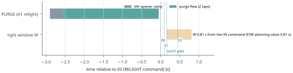
| Phase | Rule |
|---|---|
| ARM preconditions | |
| pintle seated, encoder healthy; MV-P closed; bleed valves V1 and V2 closed, drivers inhibited LEADT897 | |
| P_torch auto-zero; ARM refused if P_torch > 1.05 bar abs LEADT898 | |
| Pc and P_torch transducers 0-70 bar class (ENG-09 >= 70 bar); P_feed, P_tank healthy; Pc reads ambient LEADT899 | |
| igniter continuity (spark coil, SOL1, SOL2); photodiode healthy (needed for the 2oo2 E1) LEADT900 | |
| relight only: chamber vented; RELIGHT refused if a case thermocouple reads > 433.15 K LEADT901 | |
| Relight | MV closed during coasts (LEAD); the v2.3 text "the isolation valve may stay open between burns" is withdrawn LEADT902 |
| A1 relight: PURGE at E0 - 2.90 s (2.5 s of flow, theta <= 2 deg, balanced or axial vent), then the start sequence from E0 LEADT903 | |
| settling: liquid at the tank outlet from E0 - 2.90 s - t_settle (§2.4 note); RELIGHT refused if a case thermocouple > 433.15 K LEADT904 | |
| light window W 0.65 s; E0 -> E2 max 0.626 s on the worst purged line state (rg01_line_states_v2p4); 0.81 s plan holds LEADT905 | |
| Shutdown | pre-MECO throttle-down to <= 75 % (ENG-05) LEADT906 |
| pintle closes at full drive speed LEADT907 | |
| MV de-energised on seat confirmation (encoder at seat and Pc < 2 bar abs) or 0.30 s after the command LEADT908 | |
| trapped liquid relieves to the tank through S1 (§2.7); ground: 30 s hold then safing LEADT909 | |
| Abort if no ignition | pintle closed; torch solenoids closed (SOL1 not after SOL2); MV closed (abort is MV-first) LEADT910 |
| no retry into a pooled chamber; | |
| flight: no retry; vehicle-level response per GNC LEADT912 | |
| A5 (Pc > 8 bar for 5 ms) is DELETED (LEAD line 160): it tripped on 98 % of the late-light grid; LIGHT_SPIKE records the event instead LEADT913 |
The decided abort set is the newest lead decision for each item (CHANGELOG lines 160, 164, 166, 168, 172 and 175). The Combustion matrix (combustion.json v2.4) and the firmware v2.9 implementation (electronics.json v2) are shown beside it; where they differ, the decision governs and the difference is listed in §13.
| ID | Decided (CHANGELOG) | Combustion v2.4 matrix | Firmware v2.9 (SIL only) |
|---|---|---|---|
| A2 No light within the window W | no item of its own; governed by the matrix tag: LEAD lines 160, 164; REPORT v2.4 §7.4 LEADT916 | no E2 within W of the lift command (0.40 / 0.65 / 0.35 s) LEADT917 | NO_IGNITION v2.9: no light by the relative rule (rise >= kIgnRise_Pa over P0, floor, kIgnConfirmRelN ticks) within W from the lift command (v2.6-v2.8.3 text: Pc (filtered and raw, kIgnitionConfirmN ticks) not … DESIGNT918 |
| A4 Chamber over-pressure abort | L160(2) 30 bar abort L166(4) RE-20: the 30 bar firmware abort runs on the FILTERED channel with 5 ms persistence (probe F: comparator stays first; Combustion: filtered light-spike peak <= 21.4 bar); amends the word "raw" in l.160 (2). LEADT001 | Pc > 30 bar | PC_OVERPRESSURE firmware Pc above the over-pressure limit outside IGNITION DESIGNT926 |
| A5 Late-light monitor | L160(1) A5 DELETED as an abort, flight and stand; replaced by a LIGHT_SPIKE log event (raw and filtered peak, time above 8 and 30 bar abs, time from light) so IGN-1/T1 measure whether real lights spike. Supersedes item (2) of the Electronics-handback decision (A5 re-spec). OI-A5-LATE closes when Electronics implements this and SIL S6 … LEADT929 | DELETED -> LIGHT_SPIKE log LEADT930 | 8.0 bar abs for 5 ms from E1 to the ramp start (unchanged); with the 10 ms light confirmation a fast late light can trip A5 first LEADT931 |
| A7 Pc plausibility bands, START high side | L160(3) A7 START high side in flight must neither switch the Pc loop to open loop nor set telemetered Pc invalid (0xFFFF, which would also block the drogue Pc branch); if the firmware ties them, blank the START high side from E2 to E2 + 0.45 s in flight; on the stand it stays a nuisance abort. Electronics replays Combustion's pool … LEADT932 L166(7) RE-12 pre-decided: if the SIL pool replay gives a stand A7 trip rate > 1 %, blank the stand START high side from E2 to E2 + 0.45 s as in flight. LEADT933 | Pc loss or implausibility, bands and the flight START high-side rule (Electronics sets values) LEADT934 | HOLD band from E1 (lo P0 - 0.3 bar), START band E2->E3 (lo = A3 threshold on the map, hi 1.3 x max(map, 5.3 bar)), RUN_MAP after E3 (0.7..1.3 x map); 50 ms; IGNITION / stand -> PC_SENSOR abort, flight RUN -> flag; A7 kept ARMED E1->E3 with … LEADT935 |
| A14 Bleed valve fault / closure not confirmed | L168(3) Bleed closure confirmed from P_mid is a pad go/no-go (launch-commit item) on every flight with the bleed fitted, whatever CF-4 says. LEADT936 | bleed valve fault or | BLEED_FAULT v2.9 head-end bleed: pad BIT step failed, V1 closure not confirmed by E0 + kHbleedCloseConfirm_s, or (stand) path / leak fault DESIGNT938 |
| A15 Anomaly during PURGE | no item of its own; governed by the matrix tag: LEAD lines 160, 164; REPORT v2.4 §7.4 LEADT916 | pintle or chamber anomaly during PURGE: inhibit torch, close MV LEADT942 | no matching cause in firmware v2.9 MISSINGT943 |
| A16 Torch loss between E1 and E2 (both sensors) | L164(8) FA-1: (a) E1 declared only on P_torch AND photodiode (2oo2) and (b) torch supervision E1->E2, where loss on BOTH sensors for >= 5 ms closes the pintle and the MV, are REQUIRED of Electronics (in flight this is an accepted mission loss in exchange for avoiding a > proof pulse). Mechanical adds a <= 3 ms, 75.5 barOVR-07 abs head-pulse check of the case and closures (dynamic load factor) to the FEA scope after the current step. FA-1 is accepted as a single-control hazard for DESIGN continuation only; flight acceptance needs IGN-1 (>= 30 lights incl. photodiode false-positive tests) and the Mechanical pulse check.OVR-07: single point at ASSUMED O/F 8; superseded by the FA-1 envelope (head peak 83.0 to 88.0 bar abs) and the structural load 90 bar abs LEADT944 | torch loss on BOTH sensors >= 5 ms between E1 and E2: close pintle and MV LEADT945 | no matching cause in firmware v2.9 MISSINGT943 |
| E1 Torch confirmation 2oo2 and closure gate | L166(3) RE-05: E1 = torch confirmed (2oo2, FA-1 (a)) AND [closure confirmed OR closure deadline reached]; the deadline is <= the torch gate; at the deadline in flight the lift proceeds, BLEED_FAULT goes to the FC and V2 is commanded closed; on the stand it stays an abort. Bleed drivers get a HARDWARE purge-window enable (FC PURGE_EN … LEADT946 | — | TORCH_FAULT no torch flame (P_torch) by the gate: abort before the pintle step DESIGNT947 |
| LR Light-rule baseline fallback | L166(1) RE-02 light-rule baseline fallback: P0 > +check -> keep the measured P0 (never substitute ambient on the high side), log BASE_HIGH and flag the FC; on the pad and the stand this refuses the lift with PC_SENSOR (no commit); at the A1 relight the start proceeds on the measured P0. P0 < -check -> P0 := 0 (the -0.75 bar PC_SENSOR … LEADT951 | — | P0 = mean of filtered/raw gauge Pc over [E1 - 20 ms, E1]; |P0| > residual + 0.1 bar -> ambient (BASE_AMB); light (E2) = filtered AND raw rise over P0 >= 0.8 bar with filtered AND raw Pc >= floor, for 10 consecutive 1 kHz ticks; legacy 3.0 … LEADT952 |
| TC Invalid case thermocouple | L166(6) RE-08: an invalid case TC is treated as hot, like bay and tank: both case TCs valid required at ARM; one lost -> continue on the other; both lost -> stand abort, in flight refuse the relight (FC keeps the drogue). LEADT953 | — | OVER_TEMP case TC (az 90/270, armed only while the MV is latched or OPEN) or nozzle holder above limit, in a burn or PREPRESS; servo-bracket NTC only flags DESIGNT954 |
| RST ECU reset in flight | L166(8) RE-28: no in-flight recovery path after an ECU reset; reset -> SAFE, MV and bleed closed, the drogue is not released (RUN never reported); HIL proves this; RE-09 power sequencing must remove the E0 brown-out. LEADT959 | — | WATCHDOG hardware watchdog reset: reboot lands in SAFE; a lit-session marker becomes a relight lockout DESIGNT960 |
| DRG Drogue release predicate (FC) | L168(1) Drogue release predicate restated, interim term limited to the invalid case: RELEASE iff RUN AND b4 AND [(Pc valid AND >= 300 kPa abs) OR b7 L175(5) Amendment c: the time-only 0xFFFF release term (line 168 (1)) is REPLACED in design by R2: with Pc invalid, release iff ECU RUN AND accelerometer thrust >= 37.16 N for 3 frames at 100 Hz; otherwise hold the drogue and command ECU ABORT at t_E2 + pcf_tmax, pcf_tmax 0.8 s (PROPOSAL to be flown; margins 33.0 vs 37.16 N and plateau … LEADT031 | — | FC (LEAD decision 2026-10-13 CHANGELOG): release at E2 AND [measured Pc >= 3.0 bar abs OR the 0.8 bar rise held continuously to E2 + 0.10 s] DESIGNT963 |
| SAFE Stand safing after a no-light | L172(1) R2-02 ONE stand safing rule after a no-light, effective now: N2 purge >= 60 s at >= 10 g/s, then hold >= 15 min before anyone approaches, with Pc at ambient and head TCs falling, then safing; "wait >= 5 s" is withdrawn everywhere. LEADT008 | — | ground procedure, not a firmware cause T964 |
| Throttle | dP/Pc | Chug gain margin, 5 ms | Chug gain margin, 10 ms | 1L acoustic | Helmholtz | Thermal lag |
|---|---|---|---|---|---|---|
| 100.0 % | 0.93 SIMT966 | 6.5 SIMT967 | 4.7 SIMT968 | 1460 Hz SIMT969 | 1125 Hz SIMT970 | 2.17 Hz SIMT971 |
| 75.0 % | 1.58 SIMT972 | 10.2 SIMT973 | 7.5 SIMT974 | 1477 Hz SIMT975 | 1138 Hz SIMT976 | 1.61 Hz SIMT977 |
| 50.0 % | 2.78 SIMT978 | 17.0 SIMT979 | 12.5 SIMT980 | 1499 Hz SIMT981 | 1155 Hz SIMT982 | 1.07 Hz SIMT983 |
| 25.0 % | 5.86 SIMT984 | 32.1 SIMT985 | 23.7 SIMT986 | 1532 Hz SIMT987 | 1180 Hz SIMT988 | 0.56 Hz SIMT989 |
| 20.0 % | 7.18 SIMT990 | 36.8 SIMT991 | 27.2 SIMT992 | 1539 Hz SIMT993 | 1186 Hz SIMT994 | 0.47 Hz SIMT995 |
| 12.5 % | 10.54 SIMT996 | 52.2 SIMT997 | 38.6 SIMT998 | 1544 Hz SIMT999 | 1190 Hz SIMT1000 | 0.33 Hz SIMT1001 |
reviews/REVIEW-COMBUSTION.md, ACCEPT WITH COMMENTS); no case was re-run. SIMT1005| Quantity | Value |
|---|---|
| Operating point of every grid level | v1 (combustion.json v1): Pc 24.99 bar, O/F 7.76, T0 = eta_c*^2 Tc = 2844.9 K. All grid levels, sensitivities and OpenFOAM runs use it. SIMT1020 |
| Exit Mach number / pe/pa / fully expanded Mach number (1-D) | 2.012 DERIVEDT1021 / 3.236 DERIVEDT1022 / 2.623 DERIVEDT1023 |
| Mach disk position, fine grid (in mm) and Lewis–Carlson correlation | 2.676 De SIMT1006 (51.9 mm DERIVEDT1024) — correlation 2.663 De DERIVEDT1007 |
| Mach disk resolvability | grid differences within 2 sigma of the temporal scatter: GCI not meaningful; report the band SIMT1025 |
| Shock-cell spacing, first / mean of three (in mm) | 3.96 De SIMT1008 (76.8 mm DERIVEDT1026) / 4.10 De SIMT1009 (79.6 mm DERIVEDT1027) |
| Shock-cell spacing, Prandtl–Pack–Tam correlation | 4.82 De DERIVEDT1010 |
| Shock-cell spacing grid sensitivity | 6.54 % SIMT1028 — oscillatory: 3 x max-deviation bound SIMT1029 |
| Peak Mach number before the disk | 3.69 SIMT1030 |
| Potential core length, axis Z ≥ 0.95 (in mm) | 14.9 De SIMT1011 (289 mm DERIVEDT1031) |
| Axis temperature at 10 De / 20 De (frozen, no afterburning) | 2222 K (1949 °C) SIMT1012 / 2058 K (1785 °C) SIMT1013 |
| Thrust, exit integral (fine) vs 1-D with divergence factor; deviation | 500.8 N SIMT1014 vs 505.8 N DERIVEDT1015; −0.98 % SIMT1016 |
| Thrust grid sensitivity | 0.15 % SIMT1032 — monotone without observed convergence (p < 0.5): 3 x max-deviation bound SIMT1033 |
| Mass flow, CFD vs 1-D; deviation | 0.2542 kg/s SIMT1017 vs 0.2558 kg/s DERIVEDT1018; −0.65 % SIMT1019 |
| Starting-jet front at the end of the run | 44.9 De SIMT1034 |
| v2 design point (coarse grid): Mach disk CFD / correlation; thrust deviation | 2.709 De SIMT1035 / 2.666 De DERIVEDT1036; −1.09 % SIMT1037 |
| v2 point remark | same coarse grid and models as own_c_2s_rans (v1 point O/F 7.76); v2 - v1 differences in v2op_vs_v1 carry no grid error but do carry the temporal band of the coarse level SIMT1038 |
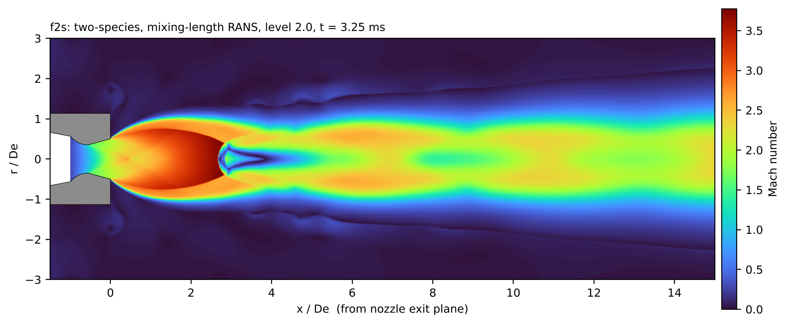
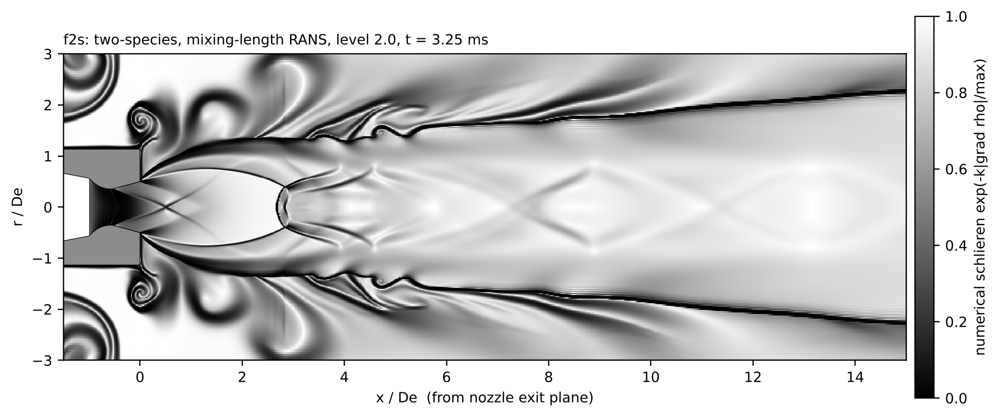
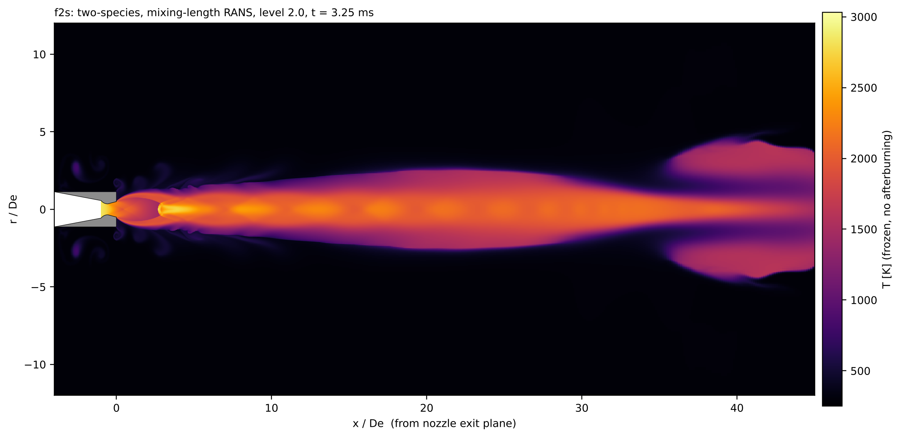
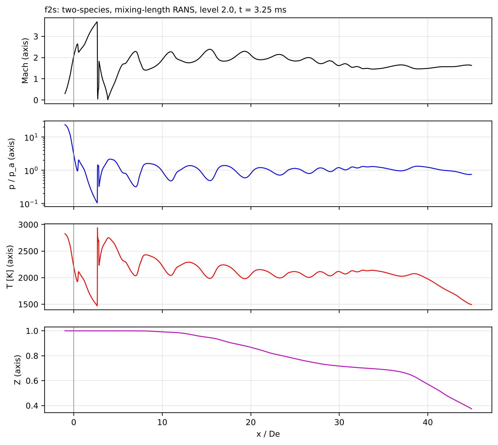
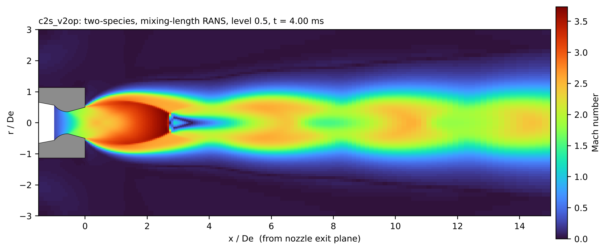
| Item | Report statement |
|---|---|
| Afterburning at the v1 point | adds 172-182 K at O/F 7.76 (temporal band 172-178 K; time-matched fine maximum 179.2 K; Richardson extrapolation of the three levels 181.8 K); SIMT1039 |
| Afterburning at the v2 point | adds nothing at the v2 point for an equilibrium exhaust (O/F 10.4, oxidiser-rich; 0.44 K). The stream-B upper bound, which releases the c* deficit by fast chemistry, raises the plume maximum from 2705 K to 3011 K at that point (difference of maxima, +306 K; ownruns/c_2s_100_v2op/fig/c2s_v2op_afterburn_stats.json); SIMT1040 |
| Afterburning at the stretch floor | adds up to 1476 K at the fuel-rich 12.5 % floor. SIMT1041 |
| Limit: Soot and radiation | Soot and radiation. There is no soot model and no radiative transfer. The synthetic photo uses an ASSUMED soot proxy. SIMT1042 |
| Limit: Finite-rate chemistry | Finite-rate chemistry and turbulence-chemistry interaction. Afterburning is a fast-chemistry, mean-Z equilibrium bound. Real afterburning is lower, and possibly zero if the mixture quenches. SIMT1043 |
| Limit: Exhaust gas model | Exhaust gas model. The exhaust is a calorically perfect gas with frozen calibrated gamma, which gives core temperature errors up to about -500/+30 K in the strongly expanded region (§4). SIMT1044 |
| Limit: Geometry and setting | Geometry and setting. The model is axisymmetric only (no gimbal angle, no 3-D structure) and has no ground plane, so no landing impingement or recirculation is modelled. SIMT1045 |
| Limit: Duration | Duration. Simulated time is 3-4 ms. The far field (> 15 De) is not statistically stationary, and the fine level covers only 0.25 ms. SIMT1046 |
| Limit: No acoustics | No acoustics or plume loads on the vehicle. SIMT1047 |
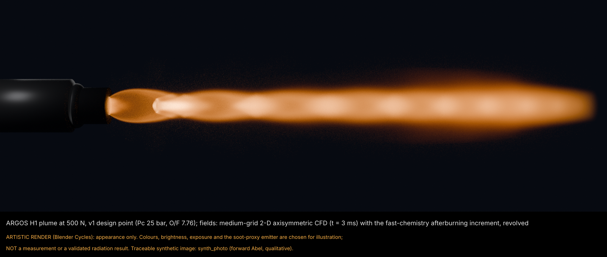
| Review | Verdict | Comments (or criteria) | Reviewed file hashes vs current files |
|---|---|---|---|
| REV-PLUME-1 T1049 | ACCEPT WITH COMMENTS DERIVEDT1050 | RC-10 thrust GCI R=1.09 diverges: reword; RC-11 correlation claim wording; RC-19 presentation DERIVEDT1051 | 0 unchanged, 1 changed since review (05-plume-cfd/REPORT.md), 0 not found DERIVEDT1048 |
| REV-PLUME-2 T1053 | ACCEPT DERIVEDT1054 | R2-12 summary wording (lead file) corrected: HANDBACK-SUMMARY d12c8862bf5524a4 DERIVEDT1055 | 1 unchanged, 0 changed since review (none), 0 not found DERIVEDT1052 |
| Item | Value |
|---|---|
| Report text revision answering the comments | Version v2.1a for validation and v2.2 for the time-matched afterburn, 2026-10-12. Owner: Combustion and Propulsion. Status: digital simulation only, *Por revisar*. A simulation is a prediction, not a measurement. Text revision v2.2b, 2026-10-13: wording changes for review findings RC-10, RC-11 and RC-19 (reviews/REVIEW-COMBUSTION.md, ACCEPT WITH COMMENTS); no case was re-run. SIMT1005 |
04-fea/**/*margin_table*.csv under the hub and for /structural_margins in mechanical.json ≥ v2.1 (current: v2 DESIGNT1056). The pressure parts and the gimbal structure therefore carry no verified margin in this draft PENDINGT1057. Stiffness and modal results from mechanical.json v2 are in §3.2.| Case | Title | Chamber pressure | Thrust | SF yield / ultimate |
|---|---|---|---|---|
| LC1T1058 | Steady max thrust, gimbal neutral DESIGNT1059 | 2.50 MPa (25.0 bar) DESIGNT1060 | 500.0 N DESIGNT1061 | 1.5 REQT1062 / 2.0 REQT1063 |
| LC2T1064 | Chamber MEOP + thermal state at the critical time DESIGNT1065 | 4.50 MPa (45.0 bar) DESIGNT1066 | not applicable | 1.5 REQT1067 / 2.0 REQT1068 |
| LC2FT1069 | Pintle full-stroke failure thrust (structure) DESIGNT1070 | 4.50 MPa (45.0 bar) DESIGNT1071 | 907.7 N DESIGNT1072 | 1.0 REQT1073 / 1.5 REQT1074 |
| LC3T1075 | Max thrust + max gimbal (both axes) + lateral and angular acceleration limit loads DESIGNT1076 | 2.50 MPa (25.0 bar) DESIGNT1077 | 500.0 N DESIGNT1078 | 1.5 REQT1079 / 2.0 REQT1080 |
| LC4T1081 | Hydrostatic proof 1.5 x MEOP, room temperature (chamber and tank) DESIGNT1082 | 6.75 MPa (67.5 bar) DESIGNT1083 | not applicable | 1.0 REQT1084 / — |
| BNT1085 | Blocked-nozzle bound: chamber at tank pressure (30 C), hot DESIGNT1086 | 6.31 MPa (63.1 bar) DESIGNT1087 | 0.0 N DESIGNT1088 | 1.0 REQT1089 / — |
| LC5T1090 | Transient thermal over the flight duty cycle, structural at the critical instants DESIGNT1091 | not applicable | not applicable | 1.5 REQT1092 / 2.0 REQT1093 |
| LC6T1094 | Landing shock and handling/transport DESIGNT1095 | not applicable | not applicable | 1.5 REQT1096 / 2.0 REQT1097 |
| MODALT1098 | Gimballed engine on its actuators: first modes vs ENG-11 DESIGNT1099 | not applicable | not applicable | — / — |
| Load case required by a lead decision | Decision text |
|---|---|
| LC-TB70 (throat block, assembled FEA) | LC-TB70 (53.4 bar abs, 34 ms) to Mechanical for the assembled FEA. LEADT1100 |
| Throat-block event in the firmware SIL | id: OI-TB-MEOP; severity: ACCEPTED; issue: S6 throat block Pc 53.4 bar abs > MEOP for 72 ms; owner: Mechanical FEA; closure: LC-TB70 / LC-TB-S in the assembled FEA SIMT1101 |
| FA-1 fuel-assisted relight pulse check | Mechanical adds a <= 3 ms, 75.5 barOVR-07 abs head-pulse check of the case and closures (dynamic load factor) to the FEA scope after the current step.OVR-07: single point at ASSUMED O/F 8; superseded by the FA-1 envelope (head peak 83.0 to 88.0 bar abs) and the structural load 90 bar abs LEADT1102 |
| FA-1 flight acceptance condition | FA-1 stays accepted for design continuation only; flight acceptance needs IGN-1 and Mechanical's 75.5 barOVR-07 <= 3 ms pulse check.OVR-07: single point at ASSUMED O/F 8; superseded by the FA-1 envelope (head peak 83.0 to 88.0 bar abs) and the structural load 90 bar abs LEADT915 |
| FA-1 load envelope and interim check (supersedes the single-point check above) | R2-03 FA-1 load restated as an ENVELOPE: Combustion publishes O/F 4-12 x tf 1-7 ms (1 ms steps) x t_res 0.02/0.06 x pool none/q 2 MW/m2 (head and aft peak, rise time, time above 45 and 67.5 bar, impulse). Until it lands Mechanical checks with an INTERIM load: quasi-static 90 bar abs (ENG-09 ultimate design point) at head AND aft, covering shell, closures, bolts and the J1 lip, reporting yield and ultimate margins; parts with periods of 1-5 ms (gimbal, thrust mount, pintle linkage) with a thrust spike of 1.8 kN for 4 ms by DLF/impulse. FMEA consequence: "yield possible; ultimate not … LEADT024 |
| FA-1 structural load decided on the v2.4a envelope (supersedes the interim check; §2.5) | DECISION: FA-1 structural load = 90 bar abs quasi-static at head and aft for all parts (covers every baseline peak and the shell); for any closure, bolt, J1-lip or other part with a natural period of 0.25-1 ms Mechanical reports margins also at 92 bar abs (design: baseline rounded with DLF and the +3 % fuel-basis sensitivity) and at 102 bar abs (sensitivity: upper bracket, sharp, DLF); thrust spike 1.8 kN x 4 ms stays the interim load and is confirmed bounding. LEADT515 |
| Load case | Governing margins |
|---|---|
| LC1T1058 | PENDING PENDINGT1103 |
| LC2T1064 | PENDING PENDINGT1104 |
| LC2FT1069 | PENDING PENDINGT1105 |
| LC3T1075 | PENDING PENDINGT1106 |
| LC4T1081 | PENDING PENDINGT1107 |
| BNT1085 | PENDING PENDINGT1108 |
| LC5T1090 | PENDING PENDINGT1109 |
| LC6T1094 | PENDING PENDINGT1110 |
| MODALT1098 | PENDING PENDINGT1111 |
Schema the generator reads (one row per load case, part and state; the governing row per part is the minimum MS):
| Field | Meaning |
|---|---|
case | load case ID (loadcases file) |
part | BOM part number |
material | material code |
state | critical state or instant |
MS | margin of safety on yield (combined, at temperature) |
MS_ult | margin of safety on ultimate |
T_part_max_C | peak part temperature |
T_limit_C | usable temperature limit |
SF_y | yield factor applied |
SF_u | ultimate factor applied |
criterion | criterion text |
status | result statement |
| Item | Value |
|---|---|
| Architecture | separate engine ECU (Teensy 4.1) on the fixed thrust structure, CAN link to flight computer DERIVEDT349 |
| Microcontroller | PJRC Teensy 4.1 (i.MX RT1062 600 MHz, native SDIO microSD, 3 CAN incl. 1 CAN-FD) DESIGNT1115 |
| PCB outline / enclosure reservation | 120.0, 60.0, 1.6 mm DESIGNT1116 / 128, 68, 32 mm DESIGNT1117 |
| ECU mass (range) | 0.16 kg ASSUMEDT347 (0.12–0.22 kg ASSUMEDT348) |
| Schematic | v2.4 (KiCad 7.0.11, generated from hardware/kicad_gen/ecu_design.py; v2.4 = head-end bleed provision drawn) DESIGNT1118 |
| Schematic checks | 0 errors, 0 warnings, 9 sheets DERIVEDT1119 components 449, nets 277, pins 1256 of 1244 intended, errors 0, warnings 0 DERIVEDT1120 |
| Placeholders (not for fabrication) | TI_RPM0026A_PLACEHOLDER (NOT FOR FABRICATION); Pololu_U3V70_WireAttach (wire pads only); Teensy41_Socket (verify vs PJRC drawing) TO-VERIFYT1121 |
| Firmware version / target | v2.9 DESIGNT1122 — PJRC Teensy 4.1 (i.MX RT1062); HAL for the hardware NOT written (core runs in SIL and test_core) TO-VERIFYT1123 |
| Firmware unit tests (v2.9) | 287 passed, 0 failed SIMT1124 |
| Interface status | DESIGN + SIL + schematic. Firmware v2.9 runs only in SIL; the ECU v2.3 schematic passes ERC and a netlist cross-check; no board has been built and nothing here is hardware-validated. Values carry tags; open items are listed in open_issues, and the bench plan (06-electronics/docs/bench_plan_v2.md) is where each is closed. DESIGNT363 |
| Constants generated from | src/core/engine_params.h: [["combustion.json", "v2.3", "d9ec54fbf450e243", "current"], ["gnc.json", "v3", "3e97c378cfebee95", "current"], ["pintle_mini_servo_v1.json", null, "62b326482617125a", "current"]]; src/core/mech_params.h: [["mechanical.json", "v2", "4f024ed4ccb4618c", "current"]]; src/core/mv_ladder_table.h: ; src/core/n2o_sat_table.h: [["Table", null, "b11b49519ba2fe30", "not checked … DESIGNT1125 |
| CAN link | ISO 11898-2 CAN, classic 2.0B 1 Mbit/s, 11-bit IDs; CAN-FD-capable transceivers so FD is a firmware upgrade DESIGNT1126 |
| Item | Value |
|---|---|
| Pressure transducers (selection) | PC: M3234-000005-070BG; P_TORCH: M3234-000005-070BG; P_FEED: M3234-000005-170BG; P_TANK: M3234-000005-170BG DESIGNT1127 |
| Connectors | Pc J601, P_feed J602 (FS-01 MV-outlet block, Mechanical), P_tank J603, P_torch J901 (pc_transducer_v2 text says J610: wrong, J610 is ENC_A) DESIGNT1128 |
| Hardware over-pressure comparator | 31.47 bar g = 32.48 bar abs nominal on the 070BG; band 30.90-34.06 bar abs; firmware abort 30 bar abs DERIVEDT1129 |
| Transducer fault window | 0.25 V DESIGNT1130 – 4.75 V DESIGNT1131 |
| Thermocouples | TC1 type K case az 90 (MAX31856 U604); TC2 type K case az 270 (U605); TC3 type K nozzle holder (U606); TC4 type K bore top (U904; CF-3/T1 evidence, flight TO-DEFINE); TC5 type T MSS-1 riser-foot TEE (U905); TC6 type T MSS-2 NC-valve outlet FS-01 (U906) DESIGNT1132 |
| Case over-temperature abort / relight refusal | 448.15 K (175 °C) LEADT1133 / 433.15 K (160 °C) LEADT1134 |
| Other temperatures | DS18B20 x2 tank wall + #3 bay (TVC bracket) on 1-Wire (J608/J614); NTC 10k pintle-servo bracket (J609, flag 60 C) DESIGNT1135 |
| Encoders | AS5048A x3 (gimbal A/B J610/J611, pintle crank J612), SPI1 1 MHz over cable DESIGNT1136 |
| Load cell (stand) | 1 kN S-type or compression load cell, 2 mV/V (TO-QUOTE) TO-VERIFYT1137 |
| IMU | FC side (ADIS16470 per the GNC/FC record): filter delay UNKNOWN (over_thrust) TO-VERIFYT1138 |
| Item | Value |
|---|---|
| Pc control loop | 1000 Hz DESIGNT1139 |
| Pc ADC sampling | 4000 Hz DESIGNT1140 |
| TVC command shaping | 1000 Hz DESIGNT1141 |
| Servo PWM | 333 Hz DATASHEETT1142 |
| FC command rate | 500 Hz DESIGNT1143 |
| Telemetry, fast | 500 Hz DESIGNT1144 |
| Telemetry, slow | 50 Hz DESIGNT1145 |
| SD log | 1000 Hz DESIGNT1146 |
| Safety monitor | 1000 Hz DESIGNT1147 |
| Relight-state telemetry | 50 Hz DESIGNT1148 |
| FC thrust estimate | 100 Hz LEADT1149 |
| Hardware watchdog | 0.050 s DESIGNT1150 |
| Link degraded / lost after | 0.020 s DESIGNT1151 / 0.100 s DESIGNT1152 |
| Latency terms | fc_cmd_to_ecu_tick_max: 0.0012; ecu_to_servo_pwm_max: 0.005; servo_internal_assumed: 0.0015; fc_cmd_to_servo_motion_typ: 0.0045; fc_cmd_to_servo_motion_max: 0.0077; pc_sensor_to_controller: 0.0023; ecu_tlm_to_fc_max: 0.0022 DERIVEDT1153 |
| Item | Value |
|---|---|
| Light rule | P0 = mean of filtered/raw gauge Pc over [E1 - 20 ms, E1]; |P0| > residual + 0.1 bar -> ambient (BASE_AMB); light (E2) = filtered AND raw rise over P0 >= 0.8 bar with filtered AND raw Pc >= floor, for 10 consecutive 1 kHz ticks; legacy 3.0 bar abs rule WITHDRAWN LEADT952 |
| Rise over the baseline P0 / confirmation ticks / baseline samples | 80000 Pa LEADT1154 / 10 LEADT1155 / 20 LEADT1156 |
| Floor and baseline check | 1.8e5 Pa abs until B-PC-1 shows residual <= 0.3 bar, then 2.0e5 (kBpc1Shown) LEADT1157 residual + 0.1 bar (0.7 bar now, 0.4 bar after B-PC-1) LEADT1158 |
| Decided baseline fallback (RE-02) | RE-02 light-rule baseline fallback: P0 > +check -> keep the measured P0 (never substitute ambient on the high side), log BASE_HIGH and flag the FC; on the pad and the stand this refuses the lift with PC_SENSOR (no commit); at the A1 relight the start proceeds on the measured P0. P0 < -check -> P0 := 0 (the -0.75 bar PC_SENSOR path unchanged). Tag LEAD (this line). S13 B extended per RE-02 (2): both builds, pad and A1, lit and unlit, -0.8..+1.2 bar in 0.05 bar steps; pass = no false E2, every … LEADT951 |
| SIL, A1 relight MC: lit runs / light-rule aborts / false lights on unlit runs | 300 SIMT1159 / 0 SIMT1160 / 0 SIMT1161 |
| SIL, E2 after the light: median / maximum | 17 ms SIMT1162 / 18 ms SIMT1163 |
| SIL basis | SIL (ASSUMED/SIM plant); target E2 <= ~15 ms after light NOT met: 16-18 ms = plant rise + 50 Hz filter + 10 ms SIMT1164 |
| A3 start monitor | (Pc - P0)/(Pc_map_lo - P0) < 0.40 for 20 ms in RUN; Pc_map_lo = min(40 ms-lagged map, instantaneous map) at the encoder lift; denominator >= 0.5 bar (the lagged map alone false-tripped on fast throttle-downs: SIL finding) LEADT1165 |
| A7 plausibility bands | HOLD band from E1 (lo P0 - 0.3 bar), START band E2->E3 (lo = A3 threshold on the map, hi 1.3 x max(map, 5.3 bar)), RUN_MAP after E3 (0.7..1.3 x map); 50 ms; IGNITION / stand -> PC_SENSOR abort, flight RUN -> flag; A7 kept ARMED E1->E3 with the lit-start band; the rate criterion is not implemented (written reason: no Combustion rate bound yet) LEADT935 |
| E3 (end of start) | first RUN tick with the ramp done and Pc >= P0 + 0.9 (setpoint - P0), or E2 + 0.6 s DESIGNT1166 |
| Code | Cause | Trigger | Thresholds |
|---|---|---|---|
| 17T1167 | PC_OVERPRESSURET1168 | firmware Pc above the over-pressure limit outside IGNITION DESIGNT926 | |
| 18T1169 | HW_OVERPRESSURET1170 | hardware comparator latch (31.47 bar g on the 070BG): ARM bus already off in hardware DESIGNT1171 | |
| 19T1173 | TVC_SUPPLYT1174 | pad only: predicted both-stall TVC plug voltage below the minimum DESIGNT1175 | |
| 20T1178 | OVERCURRENTT1179 | firmware e-fuse before the first start DESIGNT1180 | |
| 21T1183 | MAINT_JAMT1184 | ARM refused: a pintle jam recorded in NV memory and not cleared (bearing A rule) DESIGNT1185 | no threshold |
| 22T1186 | TORCH_FAULTT1187 | no torch flame (P_torch) by the gate: abort before the pintle step DESIGNT947 | |
| 23T1188 | RELIGHT_LOCKOUTT1189 | ARM/IGNITE/RELIGHT refused after an abort following a lit burn or on a relight, until CLEAR_LOCKOUT (ground) DESIGNT1190 | no threshold |
| 24T1191 | OVER_THRUSTT1192 | flight RUN: FC_THRUST above the threshold on consecutive fresh valid frames (with or without a valid Pc; never on the stand) DESIGNT1193 | |
| 25T1198 | MODE_MISMATCHT1199 | ARM refused: strap invalid, or strap and load-cell reading disagree DESIGNT1200 | no threshold |
| 26T1201 | BAY_HOTT1202 | ARM refused: bay temperature above the limit or no valid reading DESIGNT1203 | |
| 27T1205 | TANK_HOTT1206 | ARM refused: tank temperature (max of wall DS18B20 and Tsat(P_tank)) above the limit or none valid DESIGNT1207 | |
| 28T1209 | BLEED_FAULTT1210 | v2.9 head-end bleed: pad BIT step failed, V1 closure not confirmed by E0 + kHbleedCloseConfirm_s, or (stand) path / leak fault DESIGNT938 | |
| 1T1211 | CMDT1212 | FC ABORT frame 0x010 or CMD_STATE ABORT DESIGNT1213 | no threshold |
| 2T1214 | HARD_STARTT1215 | Pc above the over-pressure limit during IGNITION DESIGNT1216 | |
| 3T1219 | NO_IGNITIONT1220 | v2.9: no light by the relative rule (rise >= kIgnRise_Pa over P0, floor, kIgnConfirmRelN ticks) within W from the lift command (v2.6-v2.8.3 text: Pc (filtered and raw, kIgnitionConfirmN ticks) not above the light … DESIGNT918 | |
| 4T1221 | FLAMEOUTT1222 | RUN: gauge Pc below the floor or below a fraction of the expected Pc DESIGNT1223 | |
| 5T1227 | PC_BANDT1228 | RUN after settling: |Pc - Pc_ref| above both band limits DESIGNT1229 | |
| 6T1234 | OVER_TEMPT1235 | case TC (az 90/270, armed only while the MV is latched or OPEN) or nozzle holder above limit, in a burn or PREPRESS; servo-bracket NTC only flags DESIGNT954 | |
| 7T1236 | TANK_OVERPRESSURET1237 | P_tank above limit in ARMED/PREPRESS (never aborts a burn) DESIGNT1238 | |
| 8T1241 | GIMBAL_FAULTT1242 | command-model vs encoder mismatch while burning (allowance grows with the model rate) DESIGNT1243 | |
| 9T1247 | PINTLE_FAULTT1248 | pintle rail lost (LTC4365 trip / regulator failure), jam, encoder invalid at ARM DESIGNT1249 | |
| 10T1254 | LINK_LOSTT1255 | no valid CMD_FAST: SAFE/ARMED/PREPRESS -> SAFE; RUN -> SHUTDOWN by default DESIGNT1256 | |
| 11T1259 | PREPRESS_FAILT1260 | feed not primed (P_feed > fraction of P_tank) in time, bleed lift not confirmed, MV not open DESIGNT1261 | |
| 12T1264 | PC_SENSORT1265 | Pc transducer output outside the window: IGNITION and stand abort; flight RUN continues open loop DESIGNT1266 | |
| 13T1270 | BATT_LOWT1271 | VBAT low in pad states before the first start (flag in flight); ARM refused below the rest-voltage rule DESIGNT1272 | |
| 14T1276 | MV_FAULTT1277 | MV CLOSED switch missing at ARM; direct relight OPEN switch missing by the deadline: stand abort, flight flag DESIGNT1278 | |
| 15T1281 | ARM_LOSTT1282 | arming plug removed or ARM bus not on 50 ms after the request DESIGNT1283 | no threshold |
| 16T1284 | WATCHDOGT1285 | hardware watchdog reset: reboot lands in SAFE; a lit-session marker becomes a relight lockout DESIGNT960 |
| Item | Value |
|---|---|
| Battery | LiPo 2S 2.2 Ah (16.3 Wh), usable 13 Wh DESIGNT1286 |
| Logic power, typical / peak | typ: 1.25; peak: 2.6 DERIVEDT1287 |
| Energy per flight day | 1.73 Wh DERIVEDT1288 |
| Energy per static-fire session | 2.79 Wh DERIVEDT1289 |
| Peak current (three servos stalled) | 35.7 A DERIVEDT1290 |
| Minimum voltage at the ECU | 6.11 V DERIVEDT1291 |
| Fusing | F101: 25 A ATM main; F102: 2 A 1206 logic; F301: 15 A ATM ARM bus; F501: 3 A 1206 12 V boost DESIGNT1292 |
| ARM bus peak vs fuse | TO-CHECK: MV opener stall 9.2 A at 7.4 V (DATASHEET) / 10.4 A at 8.4 V (ASSUMED) + pintle rail input <= 4.33 A + 12 V boost loads vs F301 15 A (Littelfuse 0297015 curve) MISSINGT1293 |
| Item | Value |
|---|---|
| Architecture | 2 NC valves in series (V1 at the engine-side tee of the T4 crown + FD-01 radial taps via one -2 line across the gimbal; V1 and V2 on the fixed side), restriction downstream of V2, P_mid transducer between them; ECU drives V1 on pin 15 (U304) and V2 on pin 24 (U307), low-side on +12V_ARM (J509/J510); P_mid comparator on the pin 23 ladder DESIGNT1294 |
| Pad built-in test | PREPRESS steps S0-S4 (valve pattern vs P_mid); any failure -> BLEED_FAULT DESIGNT1295 |
| Purge | PURGE state: MV open, pintle seated, V1+V2 open, t_purge 2.5 s; pre-scheduled (Cmd PURGE) or sequence-integrated (RELIGHT); PINTLE_FAULT / encoder / MV OPEN / P_feed fill checks active; V1-first closure confirmed by P_mid, else BLEED_FAULT at E0 + 0.15 s LEADT1296 |
| Stuck-open bleed during a burn | invisible on P_feed (0.016 bar) and Pc (SIL -0.02..-0.05 bar); seen only by the P_mid leak monitor at +0.21 s: flight flag + EVENT, stand BLEED_FAULT; V2-only stuck open is latent until the next pad BIT; the next purge relight then ends BLEED_FAULT (V1 unconfirmable) SIMT1297 |
| Valve coil | valve: Burkert 6027 HP (stainless, G1/4, PEEK/FKM seat, NC, orifice 1.0 mm: 0-250 bar DC air/water) - DATASHEET via WebFetch summary; coil_42K_DC_W_cold_warm: [16.0, 21.0]; coil_note: column mapping of the coil table ambiguous in the summary: TO-VERIFY on the PDF; coil_voltages_listed: 24 V DC, 230 … TO-VERIFYT1298 |
| Fail-safe: ECU power loss | MV latch drops -> MV-P spring + pressure bias close it (dashpot ~30 ms ESTIMATE); the pintle spring closes the unpowered HV69 (B-PNT-1 back-drive check); igniter dead DESIGNT1299 |
| Fail-safe: MCU hang | hardware watchdog (50 ms) resets MCU and drops ARM bus -> same as above; reboot lands in SAFE, never resumes RUN DESIGNT1300 |
| Fail-safe: link loss | see link_loss DESIGNT1301 |
| Fail-safe: Pc sensor fault | RUN: open-loop feed-forward map on P_feed + fault flag; IGNITION: abort DESIGNT1302 |
| Fail-safe: gimbal encoder fault | flag; RUN: continue on servo commands (default) unless mismatch abort criterion met DESIGNT1303 |
| Fail-safe: arming plug removed | ARM bus dead: igniter, pintle and main valve power removed regardless of firmware DESIGNT1304 |
| Fail-safe: pintle rail fail-high | LTC4365 OV disconnect 8.06-8.34 V: servo unpowered, spring closes; PRAIL_OK low drops the MV latch in hardware (U306); firmware PINTLE_FAULT abort DESIGNT1305 |
| Fail-safe: Pc over-pressure | hardware comparator latch 31.47 bar g removes the ARM bus independent of firmware; firmware abort at 30 bar abs DESIGNT1306 |
| ID | Severity | Issue | Owner |
|---|---|---|---|
| OI-IGN-DET | HIGH (cross-discipline) DESIGNT1308 | light-detection margin at the v2.8 ignition lift: S5 dispersed pad-start MC 31/300 NO_IGNITION on a LIT plant since v2.8.1 (v2.7 at 20 % lift: 0). The lit plant Pc at 0.2039 mm sits at the 3.0 bar abs threshold (nominal replay 3.02 bar abs; … TO-VERIFYT1309 | Combustion (threshold and lift) + Electronics (detection logic) DESIGNT1310 |
| OI-RELIGHT-A1 | HIGH DESIGNT1312 | A1 relight not frozen (RG-01): re-routed segment volume and the GNC re-fly pending; drained-segment fault path to re-run on the published re-route TO-VERIFYT1313 | Mechanical / Electronics / GNC DESIGNT1314 |
| OI-GIMBAL-JAM | MEDIUM DESIGNT1316 | S6 gimbal_jam_moving_cmd FAIL (small-amplitude jam undetected) TO-VERIFYT1317 | Electronics + GNC DESIGNT1318 |
| OI-TB-MEOP | ACCEPTED DESIGNT1320 | S6 throat block Pc 53.4 bar abs > MEOP for 72 ms TO-VERIFYT1321 | Mechanical FEA DESIGNT1322 |
| OI-HAL | HIGH DESIGNT1324 | hardware HAL not written; TLM_SLOW 0x110 undefined; 53 ARM double-promotion warnings TO-VERIFYT1325 | Electronics DESIGNT1326 |
| OI-FC | HIGH DESIGNT1328 | GNC tracker / FSW not yet in the flight computer; IMU filter delay unknown; RG-16 mass budget TO-VERIFYT1329 | FC owner + GNC DESIGNT1330 |
| OI-TIMEBASE | MEDIUM DESIGNT1332 | no common time base yet for DAQ, CAN analyser and ECU TO-VERIFYT1333 | Electronics DESIGNT1334 |
| OI-PFEED-SPOF | MEDIUM DESIGNT1336 | P_feed is a single point for the relight path choice (invalid -> UNKNOWN -> prep path) and S1 TO-VERIFYT1337 | Electronics DESIGNT1338 |
| OI-LATE-FLIP | MEDIUM DESIGNT1340 | a coast encoder loss after the last TLM_RELIGHT frame flips the path late (S10 evidence case) TO-VERIFYT1341 | GNC planning DESIGNT1342 |
| OI-B1-WIND | MEDIUM DESIGNT1344 | B1 launch commit mean wind < 6 m/s until B-PNT-1 shows the drive lag inside the MC tau TO-VERIFYT1345 | Electronics bench DESIGNT1346 |
| OI-RAIL | MEDIUM DESIGNT1348 | LTC4365 UV ASSUMED; Q803 enhancement; RPM0026A footprint placeholder; ARM-bus peak vs F301 TO-VERIFYT1349 | Electronics DESIGNT1350 |
| OI-MV-CAM | LOW DESIGNT1352 | MV-P opener cam-limited 61 ms opening (bench B-MV-1) TO-VERIFYT1353 | Mechanical + Electronics DESIGNT1354 |
| OI-TRIM | LOW DESIGNT1356 | map-trim plateau (Pc loop trim authority +/-40 %) not yet characterised on hardware TO-VERIFYT1357 | Electronics + Combustion DESIGNT1358 |
| OI-DOC | LOW DESIGNT1360 | pc_transducer_v2 labels P_torch J610 (is J901); protocol.h FC_THRUST valid-window comment wording TO-VERIFYT1361 | Electronics DESIGNT1362 |
| OI-A5-LATE | HIGH DESIGNT1364 | v2.9 light rule (10 ms) + unchanged A5 (8.0 bar abs, 5 ms): S6 late lights 0.20/0.25 s inside W now abort HARD_START (v2.8.3 continued; plant Pc max 26.9/28.6 bar abs) TO-VERIFYT1365 | LEAD / Combustion DESIGNT1366 |
| OI-TEB-FALSE-LIGHT | MEDIUM DESIGNT1368 | S9 +1.034 bar post-zero bias: unlit filtered 1.87 bar abs > floor 1.8 -> false E2 -> RUN -> A3 FLAMEOUT +0.14 s; closed by B-PC-1 <= 0.3 bar (floor 2.0) TO-VERIFYT1369 | LEAD / Electronics (B-PC-1) DESIGNT1370 |
| OI-E2-LATENCY | LOW DESIGNT1372 | E2 - light 16-18 ms in SIL (target ~15 ms): plant rise + 50 Hz filter + 10 ms persistence; IGN-1 measures TO-VERIFYT1373 | Combustion / Electronics DESIGNT1374 |
| OI-A3-MARGIN | MEDIUM DESIGNT1376 | A3 ratio minimum 0.454 at the A1 relight MC (threshold 0.40) during the start ramp; after E3 0.719 TO-VERIFYT1377 | Combustion DESIGNT1378 |
| OI-BLEED-COIL | HIGH DESIGNT1380 | Burkert 6027 HP: 24 V DC listed, ECU valve rail +12V_ARM (U3V70F12); 2 x 16 W -> +2.7 A for ~2.6 s per purge at 12 V; 12 V coil or a 24 V boost, rail budget and valve mass TO-VERIFY; HP seat PEEK/FKM medium -10..80 C and N2O compatibility TO-VERIFY TO-VERIFYT1381 | Electronics / Mechanical DESIGNT1382 |
| OI-BLEED-VOL | MEDIUM DESIGNT1384 | unreached vapour with taps (2 deg 4.84 cm3, 10 deg 15.91 cm3) from an UNPUBLISHED Mechanical workdir file TO-VERIFYT1385 | Mechanical DESIGNT1386 |
| OI-GNC-V3 | MEDIUM DESIGNT1388 | gnc.json v3 requirements.ignition no longer carries option_c_unprimed_s / stale_or_missing_flag: FC relight planning source to be re-confirmed TO-VERIFYT1389 | GNC DESIGNT1390 |
| Item | Value |
|---|---|
| Reference vehicle | RV-1c (GNC reference vehicle on mechanical.json v2, ledger v3d, parametric; real airframe owner: Lauty): CAD v3.3 engine module + fixed TVC module, uniform 146 mm body ASSUMEDT1391 |
| Length / body diameter | 2.03 m ASSUMEDT1392 / 0.146 m DERIVEDT1393 |
| Dry mass | 13.671 kg DERIVEDT1394 |
| Fuel grain / N2O load / tank volume | 0.404 kg DESIGNT1395 / 2.00 kg REQT1396 / 3.167 L REQT1397 |
| Lift-off mass / landing mass (nominal A1) | 16.075 kg SIMT1398 / 14.767 kg SIMT1399 |
| Lift-off thrust-to-weight | 3.156 DERIVEDT1400 |
| Landing legs | n: 4; foot_radius_m: 0.4; stroke_m: 0.1; k_per_leg_N_m: 2500.0; c_per_leg_N_s_m: 120.0; deploy: at relight command (A) / fixed (B) ASSUMEDT1401 |
| Fins | 4 aft fins, span 0.12 m, root/tip chord 0.20/0.10 m, 3 mm GF/PETG, 0.30 kg DERIVEDT1402 |
| Tail-first aerodynamics | Tail-first aero (CNa, CP, base/plume interaction) is UNKNOWN to better than ~x2: only CFD (05-plume-cfd), a wind tunnel or flight data close it. The MC draws the whole band. TO-VERIFYT1403 |
| Item | Value |
|---|---|
| A1 role and profile | BASELINE flight REQT1409: A-D: TVC ascent, pre-MECO throttle-down, nose-first coast with aft fins, nose drogue at apogee, NC-closed relight, throttled TVC landing REQT1410 |
| A1 apogee target (newest lead decision) | 285 m LEADT1406 A1 apogee target 285 m ADOPTED under line 168 (4) (0 exhausted runs at the 73 g purge; cost 15 m). LEADT1405 |
| A1 apogee target in gnc.json v3 (planning value, superseded; §13.3 C-08) | |
| A1 apogee trim rule | A1 tail draws: the re-fly flies the purge at the ECU cap (<= 73.0 g) plus the +0.60 kg valve-mass sensitivity and sizes the A1 apogee trim that removes new exhaustions; a trim to >= 275 m is ADOPTED without further decision (300 m was a lead default), a larger trim comes back to the lead. LEADT1407 |
| Launch-commit condition added (newest lead decision) | Pc VALID is now a launch-commit condition. LEADT1408 |
| A1 nominal: apogee / relight height / burn time / N2O burned / reserve | 303.5 m SIMT1411 / 64.7 m SIMT1412 / 7.40 s SIMT1413 / 1.177 kg SIMT1414 / 0.398 SIMT1415 |
| B1 role | development hop (continuous burn, 20 % floor) REQT1416 |
| B1 hop cap | 62 m REQT1417 — 62 m PROVISIONAL (lead 2026-10-13: the GNC 62.9 m rounded down) until the T1-T4 regression data; 85 m (v3 planning value) kept for sizing (b1_regression_band.lead_cap) LEADT1418 |
| B1 sizing height | 85 m REQT1419 |
| B1 cap rule | Cap rule ADOPTED as the method to set the B1 cap after T1-T4; 62 m stays provisional and holds only if the corner k >= 1.00 (k 0.97 -> 60.0 m). LEADT1420 |
| B2 | development hop (unchanged) REQT1421, 50 m REQT1422 |
| Order of first flights | 30-100 m (charter): B2 then B1, before A1 REQT1423 |
| Launch commit (wind) | Launch commit PROVISIONAL for A1 and B1: W10 < 6 m/s AND sigma_u(3 m) <= 1.0 m/s, 10-min statistics before ARM, anemometer at 3 m; supersedes the interim 'B1 mean wind < 6 m/s'; ACEMA site data and B-PNT-1 TO-DEFINE. LEADT1424 |
| Mission statement (REQUIREMENTS) | Mission B1: hop cap 62 m PROVISIONAL (was 85 m) until T1-T4 regression data; B1 flies only after the T1-T4 regression law, with a burn limit at t(web = 1 mm) using 1.1 x measured a. 85 m dispersed cycles remain the thermal and erosion sizing cases. LEADT1425 |
| Basis | Liquid line | Vapour, upper | Vapour, full | Fault path (plan value) | Fault path, option (c) |
|---|---|---|---|---|---|
| A1, no throat growth | 0.992 SIMT1428 [0.980–0.997T1429] | 0.992 SIMT1430 [0.980–0.997T1431] | 0.994 SIMT1432 [0.983–0.998T1433] | 0.270 SIMT1434 [0.233–0.311T1435] | 0.992 SIMT1436 [0.980–0.997T1437] |
| A1, throat growth | 0.988 SIMT1438 [0.974–0.995T1439] | 0.994 SIMT1440 [0.983–0.998T1441] | 0.992 SIMT1442 [0.980–0.997T1443] | 0.360 SIMT1444 [0.319–0.403T1445] | 0.992 SIMT1446 [0.980–0.997T1447] |
| A1 ENG-07d basis, no growth | 0.988 SIMT1448 [0.974–0.995T1449] | 0.992 SIMT1450 [0.980–0.997T1451] | 0.990 SIMT1452 [0.977–0.996T1453] | 0.272 SIMT1454 [0.235–0.313T1455] | 0.992 SIMT1456 [0.980–0.997T1457] |
| A1 ENG-07d basis, growth | 0.980 SIMT1458 [0.964–0.989T1459] | 0.988 SIMT1460 [0.974–0.995T1461] | 0.990 SIMT1462 [0.977–0.996T1463] | 0.356 SIMT1464 [0.315–0.399T1465] | 0.994 SIMT1466 [0.983–0.998T1467] |
| Case | Value |
|---|---|
| B1 at the provisional hop cap: P with regression band and throat growth [interval as published] | 0.996 SIMT1469 [0.986T1470, 0.999T1471] |
| B1 finding | B1 at the lead's 62 m cap: the nominal flight closes the +25 % rule at the worst band corner (a0.6|n0.68) with g 0.11 (reserve 25.8 %) and at every other corner (corner caps 62.9 m to >= 85 m, the search bound); 500 runs with band + growth: P 0.996 [0.986, 0.999] vs growth only 0.996 (2 lost / 2 gained vs growth only at 62 m, McNemar p = 1), 0 runs exhaust the liquid, usable liquid p01 0.188 kg (growth only 0.261 … SIMT1472 |
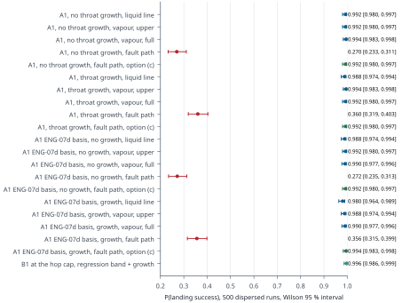
| Item | Value |
|---|---|
| Monte Carlo basis | SIM m2_relight_v28 v1.2 (sim6/run6 v2.7.1-dev start-delay quantile option, iface_v3c, 500 runs, seed 101 + start-delay seed 20261018, FSW v2.7 k_est_asc 2) on SIM Combustion RC-03 E0->E2 + SIL/DESIGN Electronics v2.8 sequence + REQ lead decisions 2026-10-13 SIMT1426 |
| Planning status | planning value 0.81 s ADOPTED by the lead (2026-10-13, the GNC rule; the 0.6 s + sequence rule withdrawn); option (c) (1.41 s on an ECU UNPRIMED flag) ADOPTED PROVISIONALLY and verified paired here; the stale / missing-flag plan is the GNC decision the lead asked for (option_c_fault_aware_plan.stale_or_missing_flag) LEADT1473 |
| Not physical acceptance | simulation and analysis only; no item here is a bench or flight validation SIMT1474 |
| RG-01 (relight evidence) | CONDICIONADO DERIVEDT1475: RG-01 relight on the current design basis not re-flown DERIVEDT1476 |
| RG-01 re-fly | GNC RG-01 re-fly started on these tables LEADT1477 |
| Review | Deliverable | Verdict | What it is not; file state |
|---|---|---|---|
| REV-COMB-1T1478 2026-10-12/13 | 02-combustion (REPORT.md v2.3, combustion.json v2.3, HANDBACK-SUMMARY.md) DERIVEDT1481 | REVISE DERIVEDT1480 | Not physical approval; not a review of any file changed after the listed hashes; the reviewed files have since changed, so the verdict covers an earlier state; not acceptance of the open findings. 0 of 3 reviewed files unchanged; changed since review: 02-combustion/REPORT.md, interfaces/combustion.json, 02-combustion/HANDBACK-SUMMARY.mdT1483 |
| REV-PLUME-1T1049 2026-10-12/13 | 05-plume-cfd (REPORT.md) DERIVEDT1485 | ACCEPT WITH COMMENTS DERIVEDT1050 | Not physical approval; not a review of any file changed after the listed hashes; the reviewed files have since changed, so the verdict covers an earlier state. 0 of 1 reviewed files unchanged; changed since review: 05-plume-cfd/REPORT.mdT1486 |
| REV-GNC-1T1487 2026-10-13 | 01-systems-gnc v3 (REPORT-v3.md, gnc.json v3) with addendum on v3.1 staging (FC_THRUST) DERIVEDT1490 | REVISE DERIVEDT1489 | Not physical approval; not a review of any file changed after the listed hashes; not acceptance of the open findings. 5 of 5 reviewed files unchangedT1492 |
| REV-ELEC-1T1493 2026-10-13 | 06-electronics v2.9 (firmware v2.9, SIL sil_v2p9, KiCad ECU v2.4, BOM v2.1, bench_plan_v2.md, REPORT-v2.9-HANDBACK.md, interfaces/electronics.json v2) DERIVEDT1495 | REVISE DERIVEDT1112 Blocking: RE-01 A5 still an abort; spike source not in SIL; RE-02 BASE_AMB fallback gives false E2 on positive offset; RE-03 b7 not filtered-only; RE-04 S5 up-step overshoot reaches the 30 bar abort; RE-05 bleed logic and hardware vs l.160-161 DERIVEDT1113 | Not physical approval; not a review of any file changed after the listed hashes; not acceptance of the open findings. 10 of 10 reviewed files unchangedT1496 |
| REV-GNC-2T1498 2026-10-13 | 01-systems-gnc/staging_v3.1/rev1 (REPORT-GNC-rev1.md, rev1_items.json, FSW record v1.4, sim6 v2.8-dev MWFPRS) responding to REV-GNC-1 DERIVEDT1500 | CONDICIONADO DERIVEDT1475 | Not physical approval; not a review of any file changed after the listed hashes; not acceptance of the open findings. 6 of 6 reviewed files unchangedT1501 |
| REV-COMB-2T1503 2026-10-13 | 02-combustion v2.4 (REPORT.md, REVISION-RESPONSE.md, CF-4-SPEC.md, T1-T4-REGRESSION-SPEC.md, combustion.json v2.4) DERIVEDT1506 | REVISE (targeted) DERIVEDT1505 | Not physical approval; not a review of any file changed after the listed hashes. 5 of 5 reviewed files unchangedT1507 |
| REV-PLUME-2T1053 2026-10-13 | 05-plume-cfd v2.2b (REPORT.md) DERIVEDT1510 | ACCEPT DERIVEDT1054 | Not physical approval; not a review of any file changed after the listed hashes. 1 of 1 reviewed files unchangedT1511 |
| Item | Status | Evidence (quoted) |
|---|---|---|
| RG-01 A1 relight evidence on the current design basis (rev2 re-fly staged, SIM; independent review REV-GNC-3 pending) | BLOCKING | REV-GNC-1 reviewer resumed for the rev1 response; RG-01 stays BLOCKING until the re-fly on Combustion's re-routed-coil tables and CF-4 LEADT1514 GNC rev2 (response to REV-GNC-2 and lead lines 164-172) STAGED in 01-systems-gnc/staging_v3.1/rev2 (280 files; rev1 and interfaces/gnc.json untouched). RG-01 re-fly on ONE flight FSW (FSW-R2) with the decided purge sequence (sim6 v2.9-dev amendment G: PURGE … SIMT1515 Independent review REV-GNC-3 of rev2 and amendments G, K, V launched (max). gnc.json v3.1 is published only after that review LEADT1516 |
| FA-1 Fuel-assisted relight pulse above proof at its upper bound (single control) | DESIGN CONTINUATION ONLY; margins reported, not reviewed | fuel-assisted fast part at an A1 relight, 48.9-75.5 barOVR-07 at 1 msOVR-07: single point at ASSUMED O/F 8; superseded by the FA-1 envelope (head peak 83.0 to 88.0 bar abs) and the structural load 90 bar abs DERIVEDT1517 FA-1 stays accepted for design continuation only; flight acceptance needs IGN-1 and Mechanical's 75.5 barOVR-07 <= 3 ms pulse check.OVR-07: single point at ASSUMED O/F 8; superseded by the FA-1 envelope (head peak 83.0 to 88.0 bar abs) and the structural load 90 bar abs LEADT915 R2-03 FA-1 load restated as an ENVELOPE: Combustion publishes O/F 4-12 x tf 1-7 ms (1 ms steps) x t_res 0.02/0.06 x pool none/q 2 MW/m2 (head and aft peak, rise time, time above 45 and 67.5 bar, impulse). Until it lands Mechanical checks with an INTERIM load: … LEADT024 DECISION: FA-1 structural load = 90 bar abs quasi-static at head and aft for all parts (covers every baseline peak and the shell); for any closure, bolt, J1-lip or other part with a natural period of 0.25-1 ms Mechanical reports margins also at 92 bar abs … LEADT515 FA-1 final load rule (lead 172 (2) + 173) closed in S-AX/joints: 90 bar abs quasi-static head+aft every part, 92/102 bar for the 0.25-1 ms parts (modes 1-2: TC-09+nozzle stack 0.33-0.47 ms, TC-02 head on its screws 0.27-0.39 ms; shell/bonnet 0.04-0.08 ms … SIMT557 |
| CF-4 Relight-purge cold flow (gate for the A1 relight claim) | NOT RUN (founders) | CF-4 spec ACCEPTED as the gate for the relight claim (founders execute); Combustion publishes it as a hub document at handback. LEADT1519 |
| IGN-1 Torch reliability, photodiode false positives, light spike on hardware | NOT RUN (founders) | Record at 1 kHz: raw Pc and filtered Pc; P0 (the log v10 ign_ref_hPa); the rise (ign_rise_hPa); the det flags; tlm_flags; the plant light time from a photodiode or the torch TC. Evidence wanted: Lit starts: rise above P0 against time. SIL: E2 … DESIGNT1520A5 DELETED as an abort, flight and stand; replaced by a LIGHT_SPIKE log event (raw and filtered peak, time above 8 and 30 bar abs, time from light) so IGN-1/T1 measure whether real lights spike. LEADT1521 |
| B-PC-1 Pc chain residual and drift; sets the light-rule floor | NOT RUN (founders) | post-zero residual: sets kBpc1Shown (floor 1.8 -> 2.0 bar abs, baseline check 0.7 -> 0.4 bar) DESIGNT1522B-PC-1 measures zero TC and 20 s drift (Mechanical supplies the transducer temperature MECO->RELIGHT); LEADT1523 |
| BLEED-MASS Head-end bleed valve mass (MASS RISK, not baseline) | TO-VERIFY | F1 valve mass: 2 x 0.30 kg is held as a MASS RISK, not baseline; Electronics' 12 V NC valve search reports mass with a target <= 0.15 kg per valve; GNC flies +0.60 kg as a sensitivity. LEADT341 Burkert 6027 HP: 24 V DC listed, ECU valve rail +12V_ARM (U3V70F12); 2 x 16 W -> +2.7 A for ~2.6 s per purge at 12 V; 12 V coil or a 24 V boost, rail budget and valve mass TO-VERIFY; HP seat PEEK/FKM medium -10..80 C and N2O compatibility TO-VERIFY TO-VERIFYT1381 +0.60 kg bleed-valve mass: no trim below 275 m now; the trigger is the selected valve pair: if it adds > 0.30 kg, GNC re-flies and the lead chooses between a trim below 275 m and a propellant/landing-reserve change. LEADT1525 |
| ENG-11 Gimbal axis stiffness and rocking mode | NOT MET (structure only) | first rocking mode 16.0-27.8 Hz (excl. J_int) vs the 25 Hz minimum: below it whenever the servo is at the low end of its ASSUMED stiffness; the servo caps the total (servo alone through a rigid structure 16.2-28.7 Hz incl. pose); lead route: ENG-07d closes by … DERIVEDT613 |
| ENG-07 Gimbal slew at the v2 hinge load | MARGINAL | as built: worst-direction slew at 7 deg 111.2 deg/s at 7.4 V, 118.3 at 7.6 V (>= 100); 95.3 deg/s at the 6.6 V degraded plug voltage, the case GNC validated for n 4.8 (lead FINAL: P(landing) 0.982 at 6.6 V) DERIVEDT606 |
| FEA Structural margins of the pressure parts and gimbal | PENDING | |
| ENVELOPE Swept radial envelope at the airframe wall | TO-VERIFY | z0_mm: 105.0; z1_mm: 110.0; r_engine_swept_mm: 60.08; by_engine: ENG-FD-03#0; r_ring_swept_mm: 0.0; r_fixed_mm: 71.8; by_fixed: ENG-FD-11#0; r_max_mm: 71.8; clearance_mm: -1.8 TO-VERIFYT635 |
| GRAIN-R4 Rounded port entrance r ≥ 4 mm shown in CAD/BOM | TO-VERIFY | not stated in the BOM name or notes of ENG-GR-01/02: rounded entrance TO-VERIFY in CAD TO-VERIFYT833 |
| REV-COMB-2 Independent re-review of combustion v2.4 | REVISE (targeted) | R2-01 line 166 (3)/(4) not implemented; R2-02 two stand safing rules; R2-03 FA-1 pulse single point at ASSUMED O/F; R2-04 T1-T4 law test cannot resolve; default gate less safe DERIVEDT1513 R2-01, R2-05, R2-06 (incl. CF-4 P4 per tap and phase), R2-08, R2-09 go into a Combustion v2.4a text/interface patch (relief_v2p4 block added); the ENG-09 "trapped-liquid relief <= 7.5 MPa" text is superseded by the tank relief 6.9 MPa / MAWP 8.42 MPa / … LEADT017 |
| COMB-v2.4a Combustion interface patch for the stale values (override table §13.1) | IN PROGRESS | R2-01, R2-05, R2-06 (incl. CF-4 P4 per tap and phase), R2-08, R2-09 go into a Combustion v2.4a text/interface patch (relief_v2p4 block added); the ENG-09 "trapped-liquid relief <= 7.5 MPa" text is superseded by the tank relief 6.9 MPa / MAWP 8.42 MPa / … LEADT017 ovr-3: 9 active, 0 redundant, 0 in error; 4 superseded values withheld (4 interface keys); see §13.1 and §13.2 DERIVEDT352 |
| INTERLOCK-GB Guard band of the tank interlock (channel uncertainty) | TO-DEFINE | R2-07 interlock guard band: T_tank and P_tank thresholds sit below 24 C / 55.28 bar abs by the total channel uncertainty (Electronics states it); CF-1/CF-3 acceptance includes full-stroke Cd <= 0.80 and line loss >= model at the failure flow, otherwise MEOP … LEADT014 |
| ELEC-v2.10 Electronics v2.10 answering REV-ELEC-1 | IN PROGRESS | RE-01 A5 still an abort; spike source not in SIL; RE-02 BASE_AMB fallback gives false E2 on positive offset; RE-03 b7 not filtered-only; RE-04 S5 up-step overshoot reaches the 30 bar abort; RE-05 bleed logic and hardware vs l.160-161 DERIVEDT1113 |
| ID | Requirement (rev 2 text, start) | Amendments after rev 2 (sentences naming the ID) | Verification method |
|---|---|---|---|
| ENG-01 | Max thrust 500 N at sea level, with N2O at | ENG-01 at the cap (CHANGELOG 170): the 25 bar software Pc cap stays; if T1 measures the low end of the eta_cf band (0.95), rated thrust is ~487 N at 25 bar (DERIVED) and the measured thrust coefficient k feeds the GNC cap rule. REQT1543 | Analysis, then static fire REQT1542 |
| ENG-02 | Throttle floor ≤ 20 % of max (5:1, 100–500 N) with stable combustion. Stretch: 12.5 % (8:1). Throttle by a servo-driven variable-area pintle, with a separate NC isolation valve for shutoff. DERIVEDT569 | none | Analysis, cold flow, static fire T3 with 1 kHz Pc REQT1544 |
| ENG-03 | Throttle response: t10–90 ≤ max(0.15 s, 0.8·ΔF / 1000 N/s). Ramp (amended 2026-10-13, lead on GNC eng03_rate_v1.1): closing ≥ 2500 N/s in every state; opening ≥ the HV69 corner rate map … DERIVEDT580 | none | SIL, B-PNT-1, static fire REQT1545 |
| ENG-04 | Restartable: ≥ 3 starts per flight. Command to 90 % thrust ≤ 0.5 s (target 0.3 s), repeatability ±50 ms; flight software plans relight on 0.81 s (amended 2026-10-13; the 0.6 s rule is withdrawn). DEVIATION recorded 2026-10-13: … DERIVEDT491 | Analysis, static fire REQT1546 | |
| ENG-05 | Shutdown: command to < 10 % thrust ≤ 0.10 s. Met with a mandatory pre-MECO throttle-down to ≤ 75 % (a 100 % MECO at 3.5 MPa tank fails at 0.106–0.124 s). No flashback or decomposition in the feed. NC main valve closed during … DERIVEDT588 | ENG-05 / hard start (stand): unignited-inventory allowable set by the two-volume relief analysis; stand rule R1-R4; stand relief per the 2026-10-13 decision, fallback (b) ADOPTED: R1 = R2 = 0.35 s windows, R3 deleted, rounded grain port entrance r >= 4 mm, … REQT1549 | Analysis, B-PNT-1 closing time at 25 bar, static fire REQT1548 |
| ENG-06 | Accumulated burn per flight sized by the duty cycles in gnc.json v3. Grain replaced each flight; web ≥ 1 mm over the whole regression-law envelope (a ×0.6–1.5, n 0.35–0.68). Throat insert: plan on one insert per flight until … ASSUMEDT496 | none | Analysis, static fire bore measurement REQT1550 |
| ENG-07 | TVC by a two-axis gimbal of the whole engine, pivot at the engine-group mid-burn CG. Range ±7° on the vector norm, 8° conical mechanical stop. Slew ≥ 100°/s at 7° in the worst vector direction at the 7.4 V nominal servo plug … LEADT359 | none | SIL, B-TVC-1 REQT1551 |
| ENG-07b | No actuator saturation episode longer than 0.1 s during the landing burn. Logged in flight as SAT_LONG. DERIVEDT1552 | none | MC, flight logs REQT1553 |
| ENG-07c | Reflected servo rotor inertia J_int ≤ 1e-3 kg m² at the output (provisional), unless a saturation-aware controller meets ENG-07b up to 2.7e-3. Estimated value for the SB-2292SG: 1.6e-3 (0.76–2.7e-3). DERIVEDT1554 | none | B-TVC-1 REQT1555 |
| ENG-07d | Flex gain margin ≥ 6 dB at the gimbal rocking mode. ECU notch required, with separate alpha and beta centre frequencies set from B-TVC-1. DERIVEDT1556 | none | CSI analysis, B-TVC-1 REQT1557 |
| ENG-08 | Gimbal sweep fits the airframe ICD: bay ID ≥ 140 mm, zone [−0.238, +0.252] m. Feed across the gimbal (amended 2026-10-13; Option A/O3b supersedes the 0.40 m radial line): coil on the case, fixed 3/8 wall line at az 219.5° clamped … REQT1558 | none | CAD, B-FD-1 REQT1559 |
| ENG-09 | Pressure parts: SF ≥ 1.5 on yield and ≥ 2.0 on ultimate, at MEOP and at temperature. Chamber MEOP 45 bar ( | ENG-09 trapped-liquid relief text superseded: tank relief 6.9 MPa, MAWP >= 8.42 MPa, proof >= 10.5 MPa, back-relief check Cv >= 0.1, secondary disc 9.5 MPa +/- 5 %. REQT1562 | FEA, hydro proof REQT1560 |
| ENG-10 | Structure (gimbal, mounts, fasteners): SF ≥ 1.5 on yield and ≥ 2.0 on ultimate under design limit loads. Gimbal design loads: engine moment 35.3 N·m (both servos at 8.4 V stall); rod force 441 N at centre, 552 N at 7°, 609 N for … LEADT607 | none | FEA, hand calculations REQT1563 |
| ENG-11 | Gimbal axis stiffness (structure plus rods) ≥ 3,100 N·m/rad per axis at every pose (hard minimum); goal 5,200 N·m/rad. Alpha/beta spread across poses ≤ ±20 %. Rocking mode as required by ENG-07d. DERIVEDT611 | none | Modal and stiffness FEA, B-TVC-1 REQT1564 |
| ENG-12 | Propellants: self-pressurised N2O, tank 2.00 kg / 3.17 L conditioned to | Trade studies, static fire REQT1565 | |
| ENG-13 | Engine controller (ECU) works with a Teensy-class flight computer. It provides closed-loop thrust and gimbal control, telemetry, arming interlocks and logging. ARM requires predicted both-servo-stall plug voltage ≥ 6.6 V and … DERIVEDT1567 | none | Bench, SIL, HIL REQT1568 |
| ENG-14 | Cost: cheapest viable. Every BOM line has a source and price, or is marked TO-QUOTE with a named vendor (delivery: Sønderborg, DK-6400). No zero or "from" prices. REQT1569 | none | BOM review REQT1570 |
| ENG-15 | Manufacturability: printed parts on a hobby FDM printer; metal parts from stock tube and bar by online CNC or a simple lathe; a PETG fit-check version of every part. REQT1571 | none | CAD review REQT1572 |
| ENG-16 | Safety: N2O-compatible, oxygen-clean wetted paths (PFPE lubricant only); passive relief plus remote vent; arming plug; remote firing; written hazard list. Cold flows only into a back-pressured catch volume or with N2 at ≤ 3.5 … REQT1573 | none | Review, bench REQT1574 |
| Kind | Test | Gate or measurement | Needs / source |
|---|---|---|---|
| Bench step 1 | B-PWR-1, B-PWR-2 DESIGNT1575 | rails, e-fuse, ARM interlock DESIGNT1576 | bare ECU, bench supply DESIGNT1577 |
| Bench step 2 | B-ECU-1 DESIGNT1578 | I/O, CAN, watchdog, log v10 DESIGNT1579 | step 1 DESIGNT1580 |
| Bench step 3 | B-PC-1 DESIGNT1581 | post-zero residual: sets kBpc1Shown (floor 1.8 -> 2.0 bar abs, baseline check 0.7 -> 0.4 bar) DESIGNT1522 | step 2, N2 0-70 bar g, reference gauge DESIGNT1582 |
| Bench step 4 | B-MV-1, B-PNT-1, B-TVC-1 DESIGNT1583 | actuator timing, ENG-03, MV switch ladder DESIGNT1584 | step 2 DESIGNT1585 |
| Bench step 5 | B-BLEED-1 (new) DESIGNT1586 | head-end bleed: pad BIT, P_mid comparator, V1 closure confirmation time DESIGNT1587 | steps 2-4, valves + tee DESIGNT1588 |
| Bench step 6 | B-IGN-1, B-FC-1 (+ drogue telemetry) DESIGNT1589 | spark EMI on Pc, FC link, TLM_FAST d1 bits DESIGNT1590 | step 2, FC DESIGNT1591 |
| Bench step 7 | HIL-OT-1, HIL-TR-1 DESIGNT1592 | over-thrust and transient replay DESIGNT1593 | steps 2, 6 DESIGNT1594 |
| Bench step 8 | LEAK-1, CF-3, CF-4 DESIGNT1595 | feed leak, ignition-lift table, segment void DESIGNT1596 | Mechanical / Combustion rigs DESIGNT1597 |
| Bench step 9 | IGN-1, T1-T4 DESIGNT1598 | relative light rule on hardware, start latency, F_acc DESIGNT1599 | hot-fire stand DESIGNT1600 |
| Early purchase (REQ §4) | B-PNT-1 | Commanded travel ≥ 103°; unpowered spring closing at the MEOP-equivalent load; guide μ ≤ 0.20; break-out after a dwell; closing time at 25 bar; HV69 torque-speed under load (0.42-0.55 N·m at 7.335 and 7.49 V) against … REQT1602 | 1× MKS HV69 (EUR 62.99 at Lindinger, catalogue price incl. AT VAT; TO-QUOTE to DK-6400) REQT1603 |
| Early purchase (REQ §4) | B-TVC-1 | Measure servo output stiffness K_s at 6.6 and 7.4 V, damping, J_int and the rotor/structure split; stall-hold heating. If K_s < ~100 N·m/rad, switch to the actuator contingency (maxon ECX 22 M class). Reduced landing … REQT1605 | 2× SB-2292SG (TO-QUOTE) with the n 4.8 linkage on a 0.0545 kg·m² inertia dummy REQT1606 |
| Early purchase (REQ §4) | B-PWR-1/2 | Source and branch resistance against the 15 / 20 mΩ assumptions. REQT1608 | Flight battery pack and harness REQT1609 |
| Early purchase (REQ §4) | B-FD-1 | Hinge stiffness while pressurised ≤ 20 N·m/rad per axis. REQT1611 | Gimbal hose REQT1612 |
| CF-4 pass criterion | CF-4 | P1 liquid at the pintle inlet <= 0.293 s after reaching the lift LEADT1613 | 02-combustion/CF-4-SPEC.md 1.0 |
| CF-4 pass criterion | CF-4 | P2 >= 0.35 s continuous liquid or inside the void budget LEADT1614 | 02-combustion/CF-4-SPEC.md 1.0 |
| CF-4 pass criterion | CF-4 | P3 cap clears FD-01 crown <= 2.3 s after flow start LEADT1615 | 02-combustion/CF-4-SPEC.md 1.0 |
| CF-4 pass criterion | CF-4 | P4 each tap >= 80 % of model flow LEADT1616 | 02-combustion/CF-4-SPEC.md 1.0 |
| CF-4 pass criterion | CF-4 | P5 <= 76 g vented (IS-1, IS-2) LEADT1617 | 02-combustion/CF-4-SPEC.md 1.0 |
| CF-4 pass criterion | CF-4 | P6 | 02-combustion/CF-4-SPEC.md 1.0 |
| CF-4 pass criterion | CF-4 | P7 no unfiltered path to the seat LEADT1619 | 02-combustion/CF-4-SPEC.md 1.0 |
| T1–T4 measurement | T1–T4 | Grain mass before and after each firing (balance resolution <= 0.1 g), dried to constant mass. DESIGNT1620 | 02-combustion/T1-T4-REGRESSION-SPEC.md v2.4 |
| T1–T4 measurement | T1–T4 | Port diameter at six stations, x/L = 0.10, 0.30, 0.50, 0.70, 0.90 and 0.97 from the head end, on two orthogonal diameters (bore gauge, resolution <= 0.02 mm), or a 3-D scan of the bore with the same stations extracted. x/L 0.97 is where the total-flux law … DESIGNT1621 | 02-combustion/T1-T4-REGRESSION-SPEC.md v2.4 |
| T1–T4 measurement | T1–T4 | Time histories: Pc at 1 kHz, oxidiser mass flow from the tank load cell and P_feed, thrust, burn time from the Pc rise and fall (E2 to the tail-off at 10 % of the run Pc). DESIGNT1622 | 02-combustion/T1-T4-REGRESSION-SPEC.md v2.4 |
| T1–T4 measurement | T1–T4 | At least two oxidiser fluxes: T1 at 100 % and the T2 throttle steps, so that n is fitted rather than assumed. DESIGNT1623 | 02-combustion/T1-T4-REGRESSION-SPEC.md v2.4 |
Table gen/decision_overrides.json (ovr-3, sha256/16 3666334a809ccf6d). Each decision is quoted from its source; the generator checks that the cited text contains the key phrases and every number of the decision, and applies a target only while the stale wording is still in it. An entry with no active target is reported REDUNDANT and can be dropped.
| Override | Decision shown | Cited sources (quoted) | Targets: key, mode, state, displays |
|---|---|---|---|
| OVR-01 30 bar over-pressure abort: channel and persistence basis: REV-COMB-2 R2-01 | 30 bar firmware abort on the FILTERED channel with 5 ms persistence (amends 'raw' in CHANGELOG 160 (2)) LEADT004 ACTIVE T1640 | CHANGELOG.md L166(4) RE-20: the 30 bar firmware abort runs on the FILTERED channel with 5 ms persistence (probe F: comparator stays first; Combustion: filtered light-spike peak <= 21.4 bar); amends the word "raw" in l.160 (2). LEADT001 REQUIREMENTS.md §Amendments after rev 2 bullet "Electronics review decisions (CHANGELOG 166)"[sentence containing "filtered channel, 5 ms"] Electronics review decisions (CHANGELOG 166): light-rule baseline never substituted by ambient on the high side (pad/stand refuse with PC_SENSOR, A1 relight proceeds on measured P0); nominal-profile plant Pc <= 28 bar abs at p99.9 with zero PC_OVERPRESSURE in S5 (30 bar abort unchanged, filtered channel, 5 ms); REQT003 | combustion.json /abort_matrix_v2p4/v/A4: annotate, ACTIVE, shown 1× T1639CHANGELOG.md L160(2): annotate, ACTIVE, shown 1× |
| OVR-02 E1 gate and bleed closure deadline basis: REV-COMB-2 R2-01 | E1 = torch confirmed (2oo2) AND (closure confirmed OR closure deadline reached), deadline <= the torch gate; at the deadline in flight the lift proceeds with BLEED_FAULT to the FC (FC action LOG-ONLY); on the stand it stays an abort LEADT007 ACTIVE T1642 | CHANGELOG.md L166(3)[sentence containing "E1 = torch confirmed"] RE-05: E1 = torch confirmed (2oo2, FA-1 (a)) AND [closure confirmed OR closure deadline reached]; the deadline is <= the torch gate; at the deadline in flight the lift proceeds, BLEED_FAULT goes to the FC and V2 is commanded closed; on the stand it stays an abort. LEADT005 CHANGELOG.md L168(2) FC action on BLEED_FAULT is LOG-ONLY until a leak response is flown and reviewed. LEADT006 | combustion.json /igniter/sequence/v/start/0/action: annotate, ACTIVE, shown 1× T1641combustion.json /igniter/sequence/v/start/3/action: append, ACTIVE, shown 1× combustion.json /abort_matrix_v2p4/v/A14: annotate, ACTIVE, shown 1× combustion.json /cf4_gate/v/pass_criteria/5: annotate, ACTIVE, shown 1× |
| OVR-03 Stand safing after a no-light basis: REV-COMB-2 R2-02 | N2 purge >= 60 s at >= 10 g/s, then hold >= 15 min before anyone approaches (Pc at ambient, head TCs falling), then safing; 'wait >= 5 s' is withdrawn LEADT011 ACTIVE T1644 | CHANGELOG.md L172(1) R2-02 ONE stand safing rule after a no-light, effective now: N2 purge >= 60 s at >= 10 g/s, then hold >= 15 min before anyone approaches, with Pc at ambient and head TCs falling, then safing; "wait >= 5 s" is withdrawn everywhere. LEADT008 REQUIREMENTS.md §Amendments after rev 2 bullet "Combustion re-review decisions (CHANGELOG 172)"[sentence containing "stand safing"] Combustion re-review decisions (CHANGELOG 172): stand safing after a no-light = N2 purge >= 60 s at >= 10 g/s, hold >= 15 min before approach (Pc ambient, head TCs falling), then safing; "wait >= 5 s" withdrawn. REQT010 | combustion.json /igniter/sequence/v/abort_if_no_ignition/1: annotate, ACTIVE, shown 1× T1643 |
| OVR-04 Tank temperature range at ARM and ignition interlock basis: REV-COMB-2 R2-05, R2-07 | tank temperature range at ARM 15-24 C (was 15-25 C); T_tank <= 24 C at ARM and at ignition; thresholds sit below 24 C / 55.28 bar abs by the channel uncertainty LEADT015 ACTIVE T1646 | REQUIREMENTS.md §Amendments after rev 2 bullet "ENG-12:" ENG-12: tank temperature range at ARM 15-24 C (was 15-25 C); heater hard-disabled at ARM. REQT012 REQUIREMENTS.md §Amendments after rev 2 bullet "ENG-09:" ENG-09: MEOP 45 bar kept; ignition interlock T_tank <= 24 C at ARM and at ignition. REQT013 CHANGELOG.md L172(4) R2-07 interlock guard band: T_tank and P_tank thresholds sit below 24 C / 55.28 bar abs by the total channel uncertainty (Electronics states it); CF-1/CF-3 acceptance includes full-stroke Cd <= 0.80 and line loss >= model at the failure flow, otherwise MEOP is restated. LEADT014 | combustion.json /decisions/tank_pressurisation: annotate, ACTIVE, shown 1× T1645combustion.json /igniter/sequence/v/arm_preconditions/0: annotate, ACTIVE, shown 1× REQUIREMENTS.md §2. Top-level row "ENG-12" col 1: annotate, ACTIVE, shown 2× REQUIREMENTS.md §2. Top-level row "ENG-01" col 1: annotate, ACTIVE, shown 2× |
| OVR-05 Relief set points (feed and tank) basis: REV-COMB-2 R2-05; CHANGELOG 172 (6) | tank relief 6.9 MPa, MAWP >= 8.42 MPa, proof >= 10.5 MPa, back-relief check MV segment to tank (Cv >= 0.1), secondary disc 9.5 MPa +/- 5 %; the trapped-liquid relief <= 7.5 MPa text is superseded LEADT019 ACTIVE T1648 | REQUIREMENTS.md §Amendments after rev 2 bullet "Combustion re-review decisions (CHANGELOG 172)"[sentence containing "trapped-liquid relief"] ENG-09 trapped-liquid relief text superseded: tank relief 6.9 MPa, MAWP >= 8.42 MPa, proof >= 10.5 MPa, back-relief check Cv >= 0.1, secondary disc 9.5 MPa +/- 5 %. REQT016 CHANGELOG.md L172(6) R2-01, R2-05, R2-06 (incl. CF-4 P4 per tap and phase), R2-08, R2-09 go into a Combustion v2.4a text/interface patch (relief_v2p4 block added); the ENG-09 "trapped-liquid relief <= 7.5 MPa" text is superseded by the tank relief 6.9 MPa / MAWP 8.42 MPa / back-relief check / 9.5 MPa disc. LEADT017 REQUIREMENTS.md §Amendments after rev 2 bullet "Relief:" Relief: back-relief check MV segment -> tank (Cv >= 0.1); secondary rupture disc 9.5 MPa +/- 5 % on FS-01, discharge overboard. REQT018 | combustion.json /valves_and_actuators/isolation_valve/trapped_liquid_relief: replace, ACTIVE, shown 1× T1647combustion.json /valves_and_actuators/priming_rule/v/2: annotate, ACTIVE, shown 0× REQUIREMENTS.md §2. Top-level row "ENG-09" col 1: annotate, ACTIVE, shown 2× |
| OVR-06 MEOP basis: ignition interlock instead of the v2.3 tank temperature basis: REV-COMB-2 R2-05 (RC-08 closed); CHANGELOG 172 (4) | MEOP 45 bar kept with the ignition interlock T_tank <= 24 C at ARM and at ignition; basis 44.33 bar at the interlock (meop_basis_v2p4), margin 0.67 bar LEADT021 ACTIVE T1650 | REQUIREMENTS.md §Amendments after rev 2 bullet "ENG-09:" ENG-09: MEOP 45 bar kept; ignition interlock T_tank <= 24 C at ARM and at ignition. REQT013 combustion.json /meop_basis_v2p4/v {"basis_bar": 44.33, "margin_to_MEOP_bar": 0.67, "proof_margin_min_bar": 21.9, "supersedes": "v2.3 basis [withheld: superseded value, SUP-01] bar (RC-08)"} SIMT020 | combustion.json /decisions/chamber_MEOP_Pa/tag: replace, ACTIVE, shown 1× T1649REQUIREMENTS.md §2. Top-level row "ENG-09" col 1: annotate, ACTIVE, shown 2× ICD-AIRFRAME.md §3. Loads row "Physical worst-case thrust" col 1: annotate, ACTIVE, shown 2× |
| OVR-07 FA-1 relight pulse load basis: REV-COMB-2 R2-03; lead decision on the Combustion v2.4a envelope | 75.5 bar is a single point at ASSUMED O/F 8. The FA-1 load is the published envelope (head peak 83.0 bar abs baseline, 88.0 upper bracket) and the FA-1 structural load = 90 bar abs quasi-static at head and aft for all parts LEADT026 ACTIVE T1652 | RV2 line 441 What was specified. Line 164 (8) asks Mechanical for a "≤ 3 ms, 75.5 barOVR-07 abs head-pulse check". These are the grid maxima at O/F 8 with tf ∈ {1, 5, 10} ms. At O/F 8 they reproduce within my bracket (71.2–78.6 bar, 2.5–3.5 ms).OVR-07: single point at ASSUMED O/F 8; superseded by the FA-1 envelope (head peak 83.0 to 88.0 bar abs) and the structural load 90 bar abs DERIVEDT023 CHANGELOG.md L172(2) R2-03 FA-1 load restated as an ENVELOPE: Combustion publishes O/F 4-12 x tf 1-7 ms (1 ms steps) x t_res 0.02/0.06 x pool none/q 2 MW/m2 (head and aft peak, rise time, time above 45 and 67.5 bar, impulse). Until it lands Mechanical checks with an INTERIM load: quasi-static 90 bar abs (ENG-09 ultimate design point) at … LEADT024 CHANGELOG.md L173 On Combustion's FA-1 envelope (02-combustion/data/v2p4a/fa1_envelope_v2p4a.json 64b328150025fa1e; 896 cases, A1 relight, O/F 3-12, tf 1-7 ms; SIM on ASSUMED construct): head peak 83.0 bar abs baseline (vapour once, rounded entrance) / 84.8 sharp / 88.0 upper bracket; aft 0.95-1.00 of head; time above 45 bar <= 3.65 ms … LEADT025 | annotation of every displayed text quoting the single-point value: ACTIVE, shown 9× T1651 |
| OVR-08 Relight purge commit: the flight computer no longer delays the fire time for the purge basis: GNC rev2, H-G3 refuted | Line 164 "the FC delays T_fire instead" is WITHDRAWN. PROVISIONAL rule: PURGE commits no later than plain trigger - 1.7 s; with no commit by then the purge is NOT run and the relight proceeds unpurged LEADT030 ACTIVE T1654 | CHANGELOG.md L175(3) Line 164 "the FC delays T_fire instead" is WITHDRAWN (commit at the plain trigger gives P 0; H-G3 refuted). PROVISIONAL rule: PURGE commits no later than plain trigger - 1.7 s (T_fire delay <= 0.6 s costs no measurable P); with no commit by then the purge is NOT run and the relight proceeds unpurged (PURGE NOT RUN LO, … LEADT027 REQUIREMENTS.md §Amendments after rev 2 bullet "GNC rev2 decisions (CHANGELOG 175)"[sentence containing "PURGE commits"] PURGE commits no later than the plain relight trigger - 1.7 s; otherwise no purge (T_fire is not delayed for the purge beyond 0.6 s). REQT029 | combustion.json /igniter/sequence/v/start/0/action: annotate, ACTIVE, shown 1× T1653 |
| OVR-09 Drogue release with Pc invalid: accelerometer-confirmed thrust instead of the time-only term basis: GNC rev2 amendment c | The time-only 0xFFFF release term (line 168 (1)) is REPLACED in design by R2: with Pc invalid, release iff ECU RUN AND accelerometer thrust >= 37.16 N for 3 frames at 100 Hz; otherwise hold the drogue and command ECU ABORT at t_E2 + pcf_tmax, pcf_tmax 0.8 s (PROPOSAL to be flown) LEADT033 ACTIVE T1656 | CHANGELOG.md L175(5) Amendment c: the time-only 0xFFFF release term (line 168 (1)) is REPLACED in design by R2: with Pc invalid, release iff ECU RUN AND accelerometer thrust >= 37.16 N for 3 frames at 100 Hz; otherwise hold the drogue and command ECU ABORT at t_E2 + pcf_tmax, pcf_tmax 0.8 s (PROPOSAL to be flown; margins 33.0 vs 37.16 N … LEADT031 REQUIREMENTS.md §Amendments after rev 2 bullet "GNC rev2 decisions (CHANGELOG 175)"[sentence containing "accelerometer-confirmed thrust"] With Pc invalid after E2 the drogue is released only on accelerometer-confirmed thrust (>= 37.16 N, 3 frames at 100 Hz) with the ECU in RUN; otherwise the drogue is held and the ECU aborted at E2 + 0.8 s (proposal, to be flown). REQT032 | CHANGELOG.md L168(1): annotate, ACTIVE, shown 1× T1655 |
| ID | Shown instead | Keys withheld | Text masks | In the author's withdrawal list |
|---|---|---|---|---|
| SUP-01 v2.3 MEOP basis (stuck pintle, tank above the ignition interlock) | v2.4 basis /meop_basis_v2p4 (OVR-06) basis: REV-COMB-2 R2-05; combustion.json /superseded_v2p4 | combustion.json /operating_points/pressure_limits/full_stroke_failure_S230_max_bar: WITHHELD; combustion.json /operating_points/pressure_limits/full_stroke_failure_S230/v/11/Pc_bar: WITHHELD T1657 | 1 displayed field masked T1658 | yes T1659 |
| SUP-02 v2.3 throat-insert life in A1 flights | one insert per flight (ENG-06 as amended) basis: REV-COMB-2 R2-05; combustion.json /superseded_v2p4 | combustion.json /thermal_and_loads/flights_per_insert_A1: WITHHELD T1660 | 0 displayed fields masked T1661 | yes T1662 |
| SUP-03 v2.3 coast seat-leak ceiling | coast leak ceiling from the Combustion report v2.4 (§7.3 of this datasheet) basis: REV-COMB-2 R2-05; combustion.json /superseded_v2p4 | combustion.json /valves_and_actuators/pintle_actuator/seat_and_seal_review_v2p3/v/b_seat/leak_tightness: WITHHELD T1663 | 0 displayed fields masked T1664 | yes T1665 |
| SUP-04 ICD-AIRFRAME quotes the v2.3 MEOP-basis pressure rounded | v2.4 basis (OVR-06); worst-case thrust at that basis not published basis: same physical case as SUP-01 (ICD tag: SIM, Combustion v2.3) | no key listed T1666 | 3 displayed fields masked T1667 | yes T1668 |
Each entry cites every side. The column "shown in this datasheet" names the value used elsewhere in the document (the newest decided one). Entries are generated only when the current sources actually disagree.
| ID | Sides (quoted) | Shown in this datasheet; next step |
|---|---|---|
| C-02 Fuel grain mass: Combustion vs CAD density | BOM GR-01 notes: port per combustion grain v2 S230 (lead relay; combustion.json v1 was a helical port); replaced every flight (ENG-06); weigh each grain (density ASSUMED 1000 kg/m3); total mass 0.404 kg per Combustion DESIGNT1624 ENG-12: Propellants: self-pressurised N2O, tank 2.00 kg / 3.17 L conditioned to | Combustion value (ENG-12). CAD material density differs from the Combustion and BOM-note density; weigh every grain (ENG-12). T1669 |
| C-03 30 bar over-pressure abort: persistence and channel | CHANGELOG 160 (2): 30 bar abort CHANGELOG 166 (4): RE-20: the 30 bar firmware abort runs on the FILTERED channel with 5 ms persistence (probe F: comparator stays first; Combustion: filtered light-spike peak <= 21.4 bar); amends the word "raw" in l.160 (2). LEADT001 | CHANGELOG 166 (4): filtered channel, 5 ms. Electronics v2.10 to implement (REV-ELEC-1). T1670 |
| C-04 A5 late-light monitor: deleted by decision, still an abort in firmware v2.9 | CHANGELOG 160 (1): A5 DELETED as an abort, flight and stand; replaced by a LIGHT_SPIKE log event (raw and filtered peak, time above 8 and 30 bar abs, time from light) so IGN-1/T1 measure whether real lights spike. Supersedes item (2) of the Electronics-handback decision (A5 … LEADT929 firmware v2.9: 8.0 bar abs for 5 ms from E1 to the ramp start (unchanged); with the 10 ms light confirmation a fast late light can trip A5 first LEADT931 | deleted (LIGHT_SPIKE log event). REV-ELEC-1 RE-01 blocking; Electronics v2.10. T1671 |
| C-05 Relight option (c) planning value: present in gnc.json v3 or not | electronics.json v2: NOT in gnc.json v3 requirements.ignition (key removed; FC rule source to be re-confirmed by GNC) DESIGNT1627 CHANGELOG 161 (9): OI-GNC-V3: lead verified gnc.json v3 (3e97c378cfebee95) carries requirements.ignition.relight_planning_value_s.{option_c_unprimed_s 1.41, stale_or_missing_flag}; the Electronics generator looks one level too high; Electronics fixes the lookup and closes … LEADT1628 | present (lead verified, CHANGELOG 161 (9)). Electronics fixes the lookup (OI-GNC-V3). T1672 |
| C-06 Head-end bleed: "fallback, no design" vs decided purge path | electronics.json /relight_interface: FALLBACK only (lead line 126); no design (coordinator) DESIGNT1629 electronics.json /head_end_bleed_provision: 2 NC valves in series (V1 at the engine-side tee of the T4 crown + FD-01 radial taps via one -2 line across the gimbal; V1 and V2 on the fixed side), restriction downstream of V2, P_mid transducer between them; ECU drives V1 on pin 15 (U304) and V2 on pin 24 … DESIGNT1294 CHANGELOG 164 (1): RG-01 design basis = Combustion's minimal set (3): coil re-route + pre-scheduled 2-tap purge on the decided path (equal 0.707 mm restrictors, 0.71 mm drill, each flow-tested for Cd) with 2.5 s of FLOW ending at E0 - 0.05 s + theta <= 2 deg with balanced or … LEADT1630 | CHANGELOG 164 (1): decided purge path. stale text in electronics.json v2; Electronics v2.10. T1673 |
| C-07 Structural thrust case: LC2F and ICD bases vs the decided ignition interlock | LC2F source: Combustion data/v2/full_stroke_failure_case_v2.json max F_N 907.7 N (v1 helix, 30 C, Cd 0.8) DESIGNT1631 ICD §3: 876 N at Pc [withheld: superseded value, SUP-04] (pintle stuck at full stroke, ENG-09 amendment: ENG-09: MEOP 45 bar kept; ignition interlock T_tank <= 24 C at ARM and at ignition. REQT013 | v2.4 MEOP basis (pressure); the thrust at that basis is MISSING. Combustion to publish the thrust at the MEOP basis; Mechanical to restate LC2F and the ICD row. Until then no thrust value is shown as bounding. T1674 |
| C-08 A1 apogee: planning target vs the target adopted after the purge sizing | CHANGELOG 168 (4) trim rule: A1 tail draws: the re-fly flies the purge at the ECU cap (<= 73.0 g) plus the +0.60 kg valve-mass sensitivity and sizes the A1 apogee trim that removes new exhaustions; a trim to >= 275 m is ADOPTED without further decision (300 m was a lead default), a … LEADT1407 CHANGELOG 175 (1): A1 apogee target 285 m ADOPTED under line 168 (4) (0 exhausted runs at the 73 g purge; cost 15 m). LEADT1405 | CHANGELOG 175 (1). gnc.json v3.1 (published after REV-GNC-3) and the REQUIREMENTS mission text to restate the target. T1675 |
| C-09 Igniter mass: Combustion system estimate vs BOM line | BOM ENG-IG-01 row: ENG-IG-01: Torch igniter (N2O/propane, spark) - ENVELOPE 20 x 45 mm + M DESIGNT166 | both shown (scopes differ). BOM line covers body and plug; solenoids and propane supply to be placed in the BOM or the exclusions. T1676 |
| C-10 Mechanical interface basis vs CAD of this datasheet | mechanical.json v2: M2. Mass properties from the CAD v3.3 solids (engine + gimbal, CG pivot iterated in CAD) with the v3.4 pintle stack (HV69 in-line) and the feed/line engine shares added as tagged ESTIMATE items and the pivot re-centred on the mid-burn CG; gimbal axis … DESIGNT1633 Mechanical open item: CAD v3.4: HV69 in-line pintle stack with rolling guide, feed parts (hose/elbow/lines), stiffened levers/ring -> mass properties and K re-issued (v2.1); v3.4 sweep must clear r 67 mm at z 215-260 PENDINGT1635 | CAD v3.4.1 for geometry, BOM and mass; mechanical.json v2 for stiffness and loads until v2.1. mechanical.json v2.1 pending. T1677 |
| C-11 Firmware constants generated from an earlier combustion interface | electronics.json generated headers: src/core/engine_params.h: [["combustion.json", "v2.3", "d9ec54fbf450e243", "current"], ["gnc.json", "v3", "3e97c378cfebee95", "current"], ["pintle_mini_servo_v1.json", null, "62b326482617125a", "current"]]; src/core/mech_params.h: [["mechanical.json", "v2", … DESIGNT1125 | combustion.json v2.4. regenerate engine_params.h in Electronics v2.10. T1678 |
| C-12 combustion.json v2.4 wording behind the lead decisions | REV-COMB-2 majors: R2-01 line 166 (3)/(4) not implemented; R2-02 two stand safing rules; R2-03 FA-1 pulse single point at ASSUMED O/F; R2-04 T1-T4 law test cannot resolve; default gate less safe DERIVEDT1513 CHANGELOG 172 (6): R2-01, R2-05, R2-06 (incl. CF-4 P4 per tap and phase), R2-08, R2-09 go into a Combustion v2.4a text/interface patch (relief_v2p4 block added); the ENG-09 "trapped-liquid relief <= 7.5 MPa" text is superseded by the tank relief 6.9 MPa / MAWP 8.42 MPa / … LEADT017 | the decisions, via overrides OVR-01, OVR-02, OVR-03, OVR-04, OVR-05, OVR-06, OVR-07, OVR-08, OVR-09 (§13.1). Combustion v2.4a patch; drop each override when the generator reports it REDUNDANT. T1679 |
| C-13 CAD mass: BOM mass_sum_kg vs the sum of its lines | BOM mass_sum_note: sum of unit masses x qty (CAD volume x density, or tagged COTS masses); includes the transport-lock items only if they are placed (they are not: group 'lock' is excluded from the instance list); PROVISION lines excluded DERIVEDT367 | generator sum with the transport lock excluded, as the BOM note states. the difference equals the transport-lock lines: mass_sum_kg includes them although the note excludes them. Mechanical to restate mass_sum_kg or the note. T1680 |
| C-14 FA-1 load vs the parts of CAD v3.4.1: margins reported by Mechanical | FA-1 load decision: DECISION: FA-1 structural load = 90 bar abs quasi-static at head and aft for all parts (covers every baseline peak and the shell); for any closure, bolt, J1-lip or other part with a natural period of 0.25-1 ms Mechanical reports margins also at 92 bar abs (design: baseline rounded with DLF and the +3 % fuel-basis sensitivity) and at 102 bar abs (sensitivity: upper bracket, sharp, DLF); thrust … LEADT515 Mechanical result, CHANGELOG 176 (sentences on yield, joints and bearings, quoted in full): TC-09 316L YIELD -0.40/-0.41/-0.43 (ult +0.80/+0.78/+0.66) -> v3.5 TC-09 IN718 +2.81/+2.76/+2.51 (own thermal run); J-FWD 8xM5 A4-70 yield -0.011/-0.033/-0.128, ult +0.60/+0.56/+0.41 (shoulder-screw option +0.86/+0.82/+0.64); seal S13 -0.016 at 102 bar only; Spike 1.8 kN/4 ms: 608 bearings exceed C0 (MS -0.24 DLF 2.0, -0.21 trapezoid, -0.10 at Combustion SDOF 3.05 kN; C0 AS RECALLED) - brinelling possible, ultimate not demonstrated; SIMT558 BOM ENG-TC-09 material (CAD v3.4.1): Stainless steel 1.4404 / 316L, annealed bar (EN 10088-3), oxidiser-wetted parts DESIGNT1637 | CAD v3.4.1 as built (no lead decision on the result yet). lead decision on the Mechanical result; CAD v3.5 with the proposed part changes and its independent review; the datasheet is regenerated on that CAD. T1681 |
Every value the sources mark MISSING, TO-DEFINE, PENDING or TO-VERIFY, plus every key the generator looked for and did not find. They are listed so that none is mistaken for a design value.
MISSING 19 · PENDING 18 · TO-DEFINE 18 · TO-VERIFY 40
| Trace | Class | Source key | Value or text |
|---|---|---|---|
| T346 | MISSING | —: mass of the items listed as not modelled in mechanical.json v2 (CAD v3.3 basis) | MISSING |
| T563 | MISSING | —: Physical worst-case thrust at the v2.4 MEOP basis: combustion.json v2.4 publishes the basis pressure only | MISSING |
| T564 | MISSING | —: Lateral thrust at the gimbal range for the physical worst case (needs the worst-case thrust) | MISSING |
| T241 | MISSING | BOM: /provision_lines/0/unit_mass_kg | MISSING |
| T243 | MISSING | BOM: /provision_lines/1/unit_mass_kg | MISSING |
| T247 | MISSING | BOM: /provision_lines/3/unit_mass_kg | MISSING |
| T249 | MISSING | BOM: /provision_lines/4/unit_mass_kg | MISSING |
| T251 | MISSING | BOM: /provision_lines/5/unit_mass_kg | MISSING |
| T276 | MISSING | BOM: /currency | TO-QUOTE (not summed) |
| T943 | MISSING | ELE: /abort_matrix/causes (generator search) | no matching cause in firmware v2.9 |
| T1293 | MISSING | ELE: /power_budget/arm_bus_peak_vs_F301 | TO-CHECK: MV opener stall 9.2 A at 7.4 V (DATASHEET) / 10.4 A at 8.4 V (ASSUMED) + pintle rail input <= 4.33 A + 12 V boost loads vs F301 15 A (Littelfuse 0297015 curve) |
| T679 | MISSING | ICD: §4. Mass row "Engine hardware mass and CG" col 1 | (v2.1): CAD v3.4 re-issues the gimballed and fixed masses. The main-valve module and tank bulkheads are not yet in CAD |
| T345 | MISSING | MEC: /fixed_module/not_modelled | ['thrust-ring radial screws (16 x M5)', 'isolation valve + actuator (mass UNKNOWN: Electronics/Combustion)', 'tee, filter (<= 15 um, OI-7), relief, fill/vent', 'hose and lines fixed shares (~0.07 kg ASSUMED)', 'tank'] |
| T1527 | MISSING | generator: open-item status RG-01 | BLOCKING |
| T1528 | MISSING | generator: open-item status FA-1 | DESIGN CONTINUATION ONLY; margins reported, not reviewed |
| T1529 | MISSING | generator: open-item status CF-4 | NOT RUN (founders) |
| T1530 | MISSING | generator: open-item status IGN-1 | NOT RUN (founders) |
| T1531 | MISSING | generator: open-item status B-PC-1 | NOT RUN (founders) |
| T1533 | MISSING | generator: open-item status ENG-11 | NOT MET (structure only) |
| T559 | PENDING | —: Independent review and lead decision on the Mechanical FA-1 margins (CHANGELOG 176) and on the CAD changes they propose | PENDING |
| T1057 | PENDING | —: no published margin table found by the generator | PENDING |
| T1103 | PENDING | —: FEA margins for load case LC1 | PENDING |
| T1104 | PENDING | —: FEA margins for load case LC2 | PENDING |
| T1105 | PENDING | —: FEA margins for load case LC2F | PENDING |
| T1106 | PENDING | —: FEA margins for load case LC3 | PENDING |
| T1107 | PENDING | —: FEA margins for load case LC4 | PENDING |
| T1108 | PENDING | —: FEA margins for load case BN | PENDING |
| T1109 | PENDING | —: FEA margins for load case LC5 | PENDING |
| T1110 | PENDING | —: FEA margins for load case LC6 | PENDING |
| T1111 | PENDING | —: FEA margins for load case MODAL | PENDING |
| T1526 | PENDING | —: Structural FEA margins (see §9) | PENDING |
| T819 | PENDING | MEC: /open_items/3 | thermal FEA v1.1 (B1/A1/A2, TS-1 relight, TS-2 soak, servo mount, TC-06 sizing, Al vs 316L retainer) -> v2.1 |
| T1635 | PENDING | MEC: /open_items/0 | CAD v3.4: HV69 in-line pintle stack with rolling guide, feed parts (hose/elbow/lines), stiffened levers/ring -> mass properties and K re-issued (v2.1); v3.4 sweep must clear r 67 mm at z 215-260 |
| T1535 | PENDING | generator: open-item status FEA | PENDING |
| T1538 | PENDING | generator: open-item status REV-COMB-2 | REVISE (targeted) |
| T1539 | PENDING | generator: open-item status COMB-v2.4a | IN PROGRESS |
| T1541 | PENDING | generator: open-item status ELEC-v2.10 | IN PROGRESS |
| T512 | TO-DEFINE | —: Tank interlock guard band = total channel uncertainty (Electronics states it; CHANGELOG 172 (4)) | TO-DEFINE |
| T253 | TO-DEFINE | BOM: /contingency_lines/0/unit_mass_kg | TO-DEFINE |
| T680 | TO-DEFINE | ICD: §12 row "ICD-1" col 1 | Thrust-ring bolt pattern, wall bearing and pull-out at 876 N plus lateral and moment loads |
| T682 | TO-DEFINE | ICD: §12 row "ICD-2" col 1 | Main-valve module envelope and mass at the zone top |
| T684 | TO-DEFINE | ICD: §12 row "ICD-3" col 1 | Upper-bay vent area and station; baro-port placement |
| T686 | TO-DEFINE | ICD: §12 row "ICD-4" col 1 | Relief and vent port routing (tank relief, 9.5 MPa disc line, fill/vent) |
| T688 | TO-DEFINE | ICD: §12 row "ICD-5" col 1 | Tank station and mounting; heater and insulation interface |
| T690 | TO-DEFINE | ICD: §12 row "ICD-6" col 1 | Launch-site bay temperature limit |
| T692 | TO-DEFINE | ICD: §12 row "ICD-7" col 1 | Pad slope specification and leg design |
| T694 | TO-DEFINE | ICD: §12 row "ICD-8" col 1 | Drogue opening load, bay volume, ejection method, swivel and release fitting |
| T696 | TO-DEFINE | ICD: §12 row "ICD-9" col 1 | Ground plume impingement on the feet |
| T698 | TO-DEFINE | ICD: §12 row "ICD-10" col 1 | Airframe first bending mode ≥ 10 Hz on the real tube |
| T700 | TO-DEFINE | ICD: §12 row "ICD-11" col 1 | Engine hardware mass and CG from CAD v3.4 |
| T702 | TO-DEFINE | ICD: §12 row "ICD-12" col 1 | Wall-line P-clips (3, at z 110 / 170 / 230 mm engine frame) and the coil fixed-end clamp near az 219.5°, z ≈ 71 mm: clamp type, wall fastening, loads (hose end reaction up to 32 N and 1.3 N·m at the 8° stop for EI 0.25) |
| T704 | TO-DEFINE | ICD: §12 row "ICD-13" col 1 | Harness routing across the gimbal |
| T706 | TO-DEFINE | ICD: §12 row "ICD-14" col 1 | Head-end bleed overboard port (A1 provision): size, station, routing; balanced or axial vent |
| T708 | TO-DEFINE | ICD: §12 row "ICD-15" col 1 | Drogue canopy type and oscillation data at the relight condition (≤ 2° design attitude) |
| T1540 | TO-DEFINE | generator: open-item status INTERLOCK-GB | TO-DEFINE |
| T560 | TO-VERIFY | —: FA-1 fuel-vapour inventory at light (data file: first-order bound only; lead decision: remains TO-VERIFY) | TO-VERIFY |
| T073 | TO-VERIFY | BOM: /lines/11/unit_mass_kg | 0.0379 |
| T193 | TO-VERIFY | BOM: /lines/71/unit_mass_kg | 0.03 |
| T833 | TO-VERIFY | BOM: /lines/*[ENG-GR-01, ENG-GR-02]/name+notes (generator text search) | not stated in the BOM name or notes of ENG-GR-01/02: rounded entrance TO-VERIFY in CAD |
| T635 | TO-VERIFY | CHK: /swept_worst_band | {'z0_mm': 105.0, 'z1_mm': 110.0, 'r_engine_swept_mm': 60.08, 'by_engine': 'ENG-FD-03#0', 'r_ring_swept_mm': 0.0, 'r_fixed_mm': 71.8, 'by_fixed': 'ENG-FD-11#0', 'r_max_mm': 71.8, 'clearance_mm': -1.8} |
| T1003 | TO-VERIFY | CMB: /stability/hybrid_LF_note | classical hybrid low-frequency (thermal-lag/boundary-layer) instability 0.3-2 Hz band is identified but its amplitude is NOT predicted; static fire T2/T3 with 1 kHz Pc logging |
| T1121 | TO-VERIFY | ELE: /ecu/schematic/placeholders | ['TI_RPM0026A_PLACEHOLDER (NOT FOR FABRICATION)', 'Pololu_U3V70_WireAttach (wire pads only)', 'Teensy41_Socket (verify vs PJRC drawing)'] |
| T1123 | TO-VERIFY | ELE: /firmware/target | PJRC Teensy 4.1 (i.MX RT1062); HAL for the hardware NOT written (core runs in SIL and test_core) |
| T1137 | TO-VERIFY | ELE: /sensors/load_cell/model | 1 kN S-type or compression load cell, 2 mV/V (TO-QUOTE) |
| T1138 | TO-VERIFY | ELE: /sensors/imu | FC side (ADIS16470 per the GNC/FC record): filter delay UNKNOWN (over_thrust) |
| T1298 | TO-VERIFY | ELE: /head_end_bleed_provision/coil | {'valve': 'Burkert 6027 HP (stainless, G1/4, PEEK/FKM seat, NC, orifice 1.0 mm: 0-250 bar DC air/water) - DATASHEET via WebFetch summary', 'coil_42K_DC_W_cold_warm': [16.0, 21.0], 'coil_note': 'column mapping of the coil table ambiguous in the summary: TO-VERI… |
| T1309 | TO-VERIFY | ELE: /open_issues/0/issue | light-detection margin at the v2.8 ignition lift: S5 dispersed pad-start MC 31/300 NO_IGNITION on a LIT plant since v2.8.1 (v2.7 at 20 % lift: 0). The lit plant Pc at 0.2039 mm sits at the 3.0 bar abs threshold (nominal replay 3.02 bar abs; low-Cd/low-efficien… |
| T1313 | TO-VERIFY | ELE: /open_issues/1/issue | A1 relight not frozen (RG-01): re-routed segment volume and the GNC re-fly pending; drained-segment fault path to re-run on the published re-route |
| T1317 | TO-VERIFY | ELE: /open_issues/2/issue | S6 gimbal_jam_moving_cmd FAIL (small-amplitude jam undetected) |
| T1321 | TO-VERIFY | ELE: /open_issues/3/issue | S6 throat block Pc 53.4 bar abs > MEOP for 72 ms |
| T1325 | TO-VERIFY | ELE: /open_issues/4/issue | hardware HAL not written; TLM_SLOW 0x110 undefined; 53 ARM double-promotion warnings |
| T1329 | TO-VERIFY | ELE: /open_issues/5/issue | GNC tracker / FSW not yet in the flight computer; IMU filter delay unknown; RG-16 mass budget |
| T1333 | TO-VERIFY | ELE: /open_issues/6/issue | no common time base yet for DAQ, CAN analyser and ECU |
| T1337 | TO-VERIFY | ELE: /open_issues/7/issue | P_feed is a single point for the relight path choice (invalid -> UNKNOWN -> prep path) and S1 |
| T1341 | TO-VERIFY | ELE: /open_issues/8/issue | a coast encoder loss after the last TLM_RELIGHT frame flips the path late (S10 evidence case) |
| T1345 | TO-VERIFY | ELE: /open_issues/9/issue | B1 launch commit mean wind < 6 m/s until B-PNT-1 shows the drive lag inside the MC tau |
| T1349 | TO-VERIFY | ELE: /open_issues/10/issue | LTC4365 UV ASSUMED; Q803 enhancement; RPM0026A footprint placeholder; ARM-bus peak vs F301 |
| T1353 | TO-VERIFY | ELE: /open_issues/11/issue | MV-P opener cam-limited 61 ms opening (bench B-MV-1) |
| T1357 | TO-VERIFY | ELE: /open_issues/12/issue | map-trim plateau (Pc loop trim authority +/-40 %) not yet characterised on hardware |
| T1361 | TO-VERIFY | ELE: /open_issues/13/issue | pc_transducer_v2 labels P_torch J610 (is J901); protocol.h FC_THRUST valid-window comment wording |
| T1365 | TO-VERIFY | ELE: /open_issues/14/issue | v2.9 light rule (10 ms) + unchanged A5 (8.0 bar abs, 5 ms): S6 late lights 0.20/0.25 s inside W now abort HARD_START (v2.8.3 continued; plant Pc max 26.9/28.6 bar abs) |
| T1369 | TO-VERIFY | ELE: /open_issues/15/issue | S9 +1.034 bar post-zero bias: unlit filtered 1.87 bar abs > floor 1.8 -> false E2 -> RUN -> A3 FLAMEOUT +0.14 s; closed by B-PC-1 <= 0.3 bar (floor 2.0) |
| T1373 | TO-VERIFY | ELE: /open_issues/16/issue | E2 - light 16-18 ms in SIL (target ~15 ms): plant rise + 50 Hz filter + 10 ms persistence; IGN-1 measures |
| T1377 | TO-VERIFY | ELE: /open_issues/17/issue | A3 ratio minimum 0.454 at the A1 relight MC (threshold 0.40) during the start ramp; after E3 0.719 |
| T1381 | TO-VERIFY | ELE: /open_issues/18/issue | Burkert 6027 HP: 24 V DC listed, ECU valve rail +12V_ARM (U3V70F12); 2 x 16 W -> +2.7 A for ~2.6 s per purge at 12 V; 12 V coil or a 24 V boost, rail budget and valve mass TO-VERIFY; HP seat PEEK/FKM medium -10..80 C and N2O compatibility TO-VERIFY |
| T1385 | TO-VERIFY | ELE: /open_issues/19/issue | unreached vapour with taps (2 deg 4.84 cm3, 10 deg 15.91 cm3) from an UNPUBLISHED Mechanical workdir file |
| T1389 | TO-VERIFY | ELE: /open_issues/20/issue | gnc.json v3 requirements.ignition no longer carries option_c_unprimed_s / stale_or_missing_flag: FC relight planning source to be re-confirmed |
| T556 | TO-VERIFY | FA1: /fuel_vapour_inventory/status | MISSING: the fuel-vapour (and aerosol/film) inventory in the warm 32.2 mm port at the moment of light after the 18.67 s A1 coast is not modelled and not measured. Below: first-order bounds only. |
| T1403 | TO-VERIFY | GNC: /reference_vehicle/aero/unknowns | Tail-first aero (CNa, CP, base/plume interaction) is UNKNOWN to better than ~x2: only CFD (05-plume-cfd), a wind tunnel or flight data close it. The MC draws the whole band. |
| T595 | TO-VERIFY | MEC: /gimbal/bearings | 4 x 608-2RS (8x22x7); pins 8 h6 17-4PH H1150 |
| T344 | TO-VERIFY | generator: | 0.6 |
| T1532 | TO-VERIFY | generator: open-item status BLEED-MASS | TO-VERIFY |
| T1534 | TO-VERIFY | generator: open-item status ENG-07 | MARGINAL |
| T1536 | TO-VERIFY | generator: open-item status ENVELOPE | TO-VERIFY |
| T1537 | TO-VERIFY | generator: open-item status GRAIN-R4 | TO-VERIFY |
| Revision | Generated (UTC) | CAD | Generator | Note |
|---|---|---|---|---|
| rev0-draft | 2026-10-13T13:25:31Z | v3.4.1 | build_datasheet.py 0.2.0 | first draft generated from the hub state; FEA, RG-01 re-fly, Electronics v2.10 and the Combustion v2.4a interface patch pending (FA-1 envelope data folded in) |
| ID | Role | Path | Version | sha256/16 | Modified (UTC) | Reads |
|---|---|---|---|---|---|---|
| CMB | Combustion interface (design point, grain, injector, igniter, sequences) | hub: interfaces/combustion.json | v2.4 | 469727032124329f | 2026-10-13T11:22:00Z | 582 |
| MEC | Mechanical interface (gimbal, TVC, envelope, materials) | hub: interfaces/mechanical.json | v2 | 4f024ed4ccb4618c | 2026-10-12T23:04:37Z | 30 |
| ELE | Electronics interface (ECU, sensors, firmware, abort causes) | hub: interfaces/electronics.json | v2 | da067408c1594814 | 2026-10-13T09:35:16Z | 381 |
| GNC | Space/GNC interface (reference vehicle, mission, Monte Carlo) | hub: interfaces/gnc.json | v3 | 3e97c378cfebee95 | 2026-10-13T03:24:09Z | 90 |
| BASE | Engine baseline v0 (seed values, superseded) | hub: interfaces/ENGINE-BASELINE-v0.json | v0 | 508faa652ccbd539 | 2026-10-12T17:22:30Z | 0 |
| CL | Decision log (line-numbered) | hub: interfaces/CHANGELOG.md | 176 lines | 0c2c6d5539240658 | 2026-10-13T13:16:07Z | 0 |
| REQ | Engine requirements | hub: 00-requirements/REQUIREMENTS.md | rev 2 | fbb9e1205707082f | 2026-10-13T13:09:55Z | 0 |
| ICD | Engine-airframe ICD | hub: 00-requirements/ICD-AIRFRAME.md | draft 0.2 | 706455abf4098182 | 2026-10-13T11:13:06Z | 0 |
| SUP | Independent review register | hub: reviews/SUPERVISION.json | 7 reviews | 9736f4974377a7bd | 2026-10-13T12:24:24Z | 63 |
| RV2 | Independent Combustion re-review REV-COMB-2 (text) | hub: reviews/REVIEW-COMBUSTION-R2.md | — | e6bf189fb271e652 | 2026-10-13T12:23:43Z | 0 |
| OVR | Decision override table (datasheet generator input; drop entries when combustion.json v2.4a lands) | hub: 07-datasheet/gen/decision_overrides.json | ovr-3 | 3666334a809ccf6d | 2026-10-13T13:17:59Z | 0 |
| FA1 | Combustion v2.4a FA-1 relight-pulse load envelope (SIM on an ASSUMED construct) | hub: 02-combustion/data/v2p4a/fa1_envelope_v2p4a.json | v2.4a | 64b328150025fa1e | 2026-10-13T12:49:52Z | 46 |
| RCMB | Combustion report | hub: 02-combustion/REPORT.md | 2.4 | 32e366bd78437dc0 | 2026-10-13T11:24:48Z | 0 |
| CF4 | CF-4 relight-purge cold-flow specification | hub: 02-combustion/CF-4-SPEC.md | 1.0 | c9e1efbb18177155 | 2026-10-13T11:11:28Z | 0 |
| T14 | T1-T4 regression measurement specification | hub: 02-combustion/T1-T4-REGRESSION-SPEC.md | v2.4 | 25a207af8fe61f21 | 2026-10-13T11:22:15Z | 0 |
| RPL | Plume CFD report | hub: 05-plume-cfd/REPORT.md | v2.2b | 140b3c59f8323bba | 2026-10-13T11:24:48Z | 0 |
| PVAL | Plume CFD validation results | hub: 05-plume-cfd/validation/results/validation_v2.json | v2.1a | cbfbce89c41689f3 | 2026-10-12T21:31:13Z | 28 |
| FEALC | FEA load cases (inputs) | hub: 04-fea/loadcases_v1.json | v1 | cbafa22eb69ef039 | 2026-10-12T18:38:02Z | 55 |
| SLEW | TVC slew calculation v2 (Mechanical, hub copy) | hub: 03-cad/calcs/actuator_slew_v2.json | v2 | 7f69321838404705 | 2026-10-13T05:09:00Z | 42 |
| BENCH | Electronics bench and test plan | hub: 06-electronics/docs/bench_plan_v2.md | v2 | ece8ad4a1465886d | 2026-10-13T09:34:09Z | 0 |
| RELE | Electronics v2.9 handback report | hub: 06-electronics/REPORT-v2.9-HANDBACK.md | v2.9 | a7f047b1858f1293 | 2026-10-13T09:37:36Z | 0 |
| RGNC | Space/GNC report v3 | hub: 01-systems-gnc/REPORT-v3.md | v3 | 2d79920b8cc1537d | 2026-10-13T03:27:36Z | 0 |
| BOM | Bill of materials (CAD v3.4.1) | CAD: BOM_v3.4.1.json | v3.4.1 | d028143d22b09f60 | 2026-10-13T09:59:04Z | 13 |
| MP | Mass properties (CAD v3.4.1) | CAD: massprops_v3.4.1.json | v3.4.1 | 4fbb9d192af6e38e | 2026-10-13T09:59:04Z | 27 |
| MAN | Assembly manifest, instance bounds (CAD v3.4.1) | CAD: assembly/assembly_manifest_v3.4.1.json | v3.4.1 | 4fd02f57b93a8aae | 2026-10-13T09:58:51Z | 5 |
| GLB | Assembly GLB, visualisation geometry (CAD v3.4.1) | CAD: assembly/ENGINE_v3.4.1_neutral.glb | v3.4.1 | 3879a25a4486ee0c | 2026-10-13T09:59:03Z | 0 |
| PROP | CAD build properties and results | CAD: properties.json | v3.4.1 | 8e30376fc16dafa4 | 2026-10-13T11:20:38Z | 4 |
| CHK | CAD software geometric checks (CAD v3.4.1) | CAD: checks/checks_summary_v3.4.1.json | v3.4.1 | 2dc1c50043abcf1d | 2026-10-13T11:20:38Z | 93 |
| RMAN | Render manifest (this generator) | hub: 07-datasheet/build/renders/v3.4.1/render_manifest.json | v3.4.1 | 0933a1acf0ccf049 | 2026-10-13T12:06:32Z | 0 |
| PF-MACH | Plume figure | hub: 05-plume-cfd/ownruns/f_2s_100/fig/f2s_mach_near.png | figure | 39cfd050d53b9f68 | 2026-10-12T21:31:30Z | 0 |
| PF-SCHL | Plume figure | hub: 05-plume-cfd/ownruns/f_2s_100/fig/f2s_schlieren_near.png | figure | 5a559717ba7c3a76 | 2026-10-12T21:31:35Z | 0 |
| PF-TEMP | Plume figure | hub: 05-plume-cfd/ownruns/f_2s_100/fig/f2s_T_full.png | figure | b7fe094ff216873c | 2026-10-12T21:31:32Z | 0 |
| PF-AXIS | Plume figure | hub: 05-plume-cfd/ownruns/f_2s_100/fig/f2s_centreline.png | figure | de88abf544299723 | 2026-10-12T21:31:36Z | 0 |
| PF-V2MACH | Plume figure | hub: 05-plume-cfd/ownruns/c_2s_100_v2op/fig/c2s_v2op_mach_near.png | figure | 034d7f18ff3075f3 | 2026-10-12T21:29:26Z | 0 |
| PF-ART | Plume figure | hub: 05-plume-cfd/blender/final/argos_plume_artistic_side.png | figure | 7c722b7f001b2ae4 | 2026-10-12T20:43:12Z | 0 |
| R-ISO | Render metadata: iso (camera, anchors) | hub: 07-datasheet/build/renders/v3.4.1/iso_meta.json | — | 2121fc233088f3e3 | 2026-10-13T11:55:44Z | 0 |
| R-FRONT | Render metadata: front (camera, anchors) | hub: 07-datasheet/build/renders/v3.4.1/front_meta.json | — | 7fc0263918c59104 | 2026-10-13T11:58:05Z | 0 |
| R-SIDE | Render metadata: side (camera, anchors) | hub: 07-datasheet/build/renders/v3.4.1/side_meta.json | — | 4cbd647ca19e6719 | 2026-10-13T11:59:44Z | 0 |
| R-SECTION | Render metadata: section (camera, anchors) | hub: 07-datasheet/build/renders/v3.4.1/section_meta.json | — | 3498e82e92acfae3 | 2026-10-13T12:01:15Z | 0 |
| R-LAYOUT | Render metadata: layout (camera, anchors) | hub: 07-datasheet/build/renders/v3.4.1/layout_meta.json | — | 7b8e8e58356b21aa | 2026-10-13T12:02:36Z | 0 |
| R-FAM-EL | Render metadata: family_EL (camera, anchors) | hub: 07-datasheet/build/renders/v3.4.1/family_EL_meta.json | — | d6ff80bf2412728b | 2026-10-13T12:02:41Z | 0 |
| R-FAM-FD | Render metadata: family_FD (camera, anchors) | hub: 07-datasheet/build/renders/v3.4.1/family_FD_meta.json | — | 512c4823bf89f0b7 | 2026-10-13T12:02:55Z | 0 |
| R-FAM-FS | Render metadata: family_FS (camera, anchors) | hub: 07-datasheet/build/renders/v3.4.1/family_FS_meta.json | — | 268f64b4d50bdc1a | 2026-10-13T12:03:48Z | 0 |
| R-FAM-GM | Render metadata: family_GM (camera, anchors) | hub: 07-datasheet/build/renders/v3.4.1/family_GM_meta.json | — | 2007d3d795d007c4 | 2026-10-13T12:04:56Z | 0 |
| R-FAM-GR | Render metadata: family_GR (camera, anchors) | hub: 07-datasheet/build/renders/v3.4.1/family_GR_meta.json | — | 940506e5736ec69a | 2026-10-13T12:05:15Z | 0 |
| R-FAM-HW | Render metadata: family_HW (camera, anchors) | hub: 07-datasheet/build/renders/v3.4.1/family_HW_meta.json | — | dd0b06dc474067ee | 2026-10-13T12:05:31Z | 0 |
| R-FAM-IG | Render metadata: family_IG (camera, anchors) | hub: 07-datasheet/build/renders/v3.4.1/family_IG_meta.json | — | 19b2c9fc816aa7d8 | 2026-10-13T12:05:43Z | 0 |
| R-FAM-NZ | Render metadata: family_NZ (camera, anchors) | hub: 07-datasheet/build/renders/v3.4.1/family_NZ_meta.json | — | 12c92ce3e5094a4c | 2026-10-13T12:06:00Z | 0 |
| R-FAM-PD | Render metadata: family_PD (camera, anchors) | hub: 07-datasheet/build/renders/v3.4.1/family_PD_meta.json | — | a41ca9d350d97609 | 2026-10-13T12:06:24Z | 0 |
| R-FAM-TC | Render metadata: family_TC (camera, anchors) | hub: 07-datasheet/build/renders/v3.4.1/family_TC_meta.json | — | 46238777d2a21e12 | 2026-10-13T12:06:31Z | 0 |
Hub root: /home/claude/work/shared-fallback/engine. CAD root: /home/claude/work/mechanical/engine/03-cad. The same table, with absolute paths, is written to out/sources.json.
Every traced value used in this document: trace id, value as displayed, evidence class, source and version, key (JSON pointer, markdown row, CHANGELOG line and item, or generator formula) and the source tag text. Identical source keys share one id.
| ID | Value | Class | Source | Key | Source tag / formula |
|---|---|---|---|---|---|
| T001 | RE-20: the 30 bar firmware abort runs on the FILTERED channel with 5 ms persistence (pro… | LEAD | CL 176 lines | L166(4) | lead (decision) 2026-10-13 (line sha 3fde4047cba94dbc) |
| T002 | Electronics review decisions (CHANGELOG 166): light-rule baseline never substituted by a… | REQ | REQ rev 2 | §Amendments after rev 2 bullet "Electronics review decisions (CHANGELOG 166)" | REQ bullet |
| T003 | Electronics review decisions (CHANGELOG 166): light-rule baseline never substituted by a… | REQ | REQ rev 2 | §Amendments after rev 2 bullet "Electronics review decisions (CHANGELOG 166)"[sentence containing "filtered channel, 5 ms"] | REQ bullet |
| T004 | 30 bar firmware abort on the FILTERED channel with 5 ms persistence (amends 'raw' in CHA… | LEAD | OVR ovr-3 | /overrides/0/value | override OVR-01 (ovr-3); numbers and key phrases checked against the cited sources |
| T005 | RE-05: E1 = torch confirmed (2oo2, FA-1 (a)) AND [closure confirmed OR closure deadline … | LEAD | CL 176 lines | L166(3)[sentence containing "E1 = torch confirmed"] | lead (decision) 2026-10-13 (line sha 3fde4047cba94dbc) |
| T006 | FC action on BLEED_FAULT is LOG-ONLY until a leak response is flown and reviewed. | LEAD | CL 176 lines | L168(2) | lead (decision) 2026-10-13 (line sha 3ad186c5fa9490ff) |
| T007 | E1 = torch confirmed (2oo2) AND (closure confirmed OR closure deadline reached), deadlin… | LEAD | OVR ovr-3 | /overrides/1/value | override OVR-02 (ovr-3); numbers and key phrases checked against the cited sources |
| T008 | R2-02 ONE stand safing rule after a no-light, effective now: N2 purge >= 60 s at >= 10 g… | LEAD | CL 176 lines | L172(1) | lead (decision) 2026-10-13 (line sha 6d0e30766faf3c84) |
| T009 | Combustion re-review decisions (CHANGELOG 172): stand safing after a no-light = N2 purge… | REQ | REQ rev 2 | §Amendments after rev 2 bullet "Combustion re-review decisions (CHANGELOG 172)" | REQ bullet |
| T010 | Combustion re-review decisions (CHANGELOG 172): stand safing after a no-light = N2 purge… | REQ | REQ rev 2 | §Amendments after rev 2 bullet "Combustion re-review decisions (CHANGELOG 172)"[sentence containing "stand safing"] | REQ bullet |
| T011 | N2 purge >= 60 s at >= 10 g/s, then hold >= 15 min before anyone approaches (Pc at ambie… | LEAD | OVR ovr-3 | /overrides/2/value | override OVR-03 (ovr-3); numbers and key phrases checked against the cited sources |
| T012 | ENG-12: tank temperature range at ARM 15-24 C (was 15-25 C); heater hard-disabled at ARM. | REQ | REQ rev 2 | §Amendments after rev 2 bullet "ENG-12:" | REQ bullet |
| T013 | ENG-09: MEOP 45 bar kept; ignition interlock T_tank <= 24 C at ARM and at ignition. | REQ | REQ rev 2 | §Amendments after rev 2 bullet "ENG-09:" | REQ bullet |
| T014 | R2-07 interlock guard band: T_tank and P_tank thresholds sit below 24 C / 55.28 bar abs … | LEAD | CL 176 lines | L172(4) | lead (decision) 2026-10-13 (line sha 6d0e30766faf3c84) |
| T015 | tank temperature range at ARM 15-24 C (was 15-25 C); T_tank <= 24 C at ARM and at igniti… | LEAD | OVR ovr-3 | /overrides/3/value | override OVR-04 (ovr-3); numbers and key phrases checked against the cited sources |
| T016 | ENG-09 trapped-liquid relief text superseded: tank relief 6.9 MPa, MAWP >= 8.42 MPa, pro… | REQ | REQ rev 2 | §Amendments after rev 2 bullet "Combustion re-review decisions (CHANGELOG 172)"[sentence containing "trapped-liquid relief"] | REQ bullet |
| T017 | R2-01, R2-05, R2-06 (incl. CF-4 P4 per tap and phase), R2-08, R2-09 go into a Combustion… | LEAD | CL 176 lines | L172(6) | lead (decision) 2026-10-13 (line sha 6d0e30766faf3c84) |
| T018 | Relief: back-relief check MV segment -> tank (Cv >= 0.1); secondary rupture disc 9.5 MPa… | REQ | REQ rev 2 | §Amendments after rev 2 bullet "Relief:" | REQ bullet |
| T019 | tank relief 6.9 MPa, MAWP >= 8.42 MPa, proof >= 10.5 MPa, back-relief check MV segment t… | LEAD | OVR ovr-3 | /overrides/4/value | override OVR-05 (ovr-3); numbers and key phrases checked against the cited sources |
| T020 | {"basis_bar": 44.33, "margin_to_MEOP_bar": 0.67, "proof_margin_min_bar": 21.9, "supersed… | SIM | CMB v2.4 | /meop_basis_v2p4/v | SIM meop_basis_v2p4.json |
| T021 | MEOP 45 bar kept with the ignition interlock T_tank <= 24 C at ARM and at ignition; basi… | LEAD | OVR ovr-3 | /overrides/5/value | override OVR-06 (ovr-3); numbers and key phrases checked against the cited sources |
| T022 | R2-03 FA-1 pulse single point at ASSUMED O/F | DERIVED | SUP 7 reviews | /reviews/5/major/2 | (class set by generator: DERIVED) |
| T023 | **What was specified.** Line 164 (8) asks Mechanical for a "≤ 3 ms, 75.5 bar abs head-pu… [OVR-07: single point at ASSUMED O/F 8; superseded by the FA-1 envelope (head peak 83.0 to 88.0 bar abs) and the structural load 90 bar abs] | DERIVED | RV2 | line 441 | RV2 line 441 (independent review text) |
| T024 | R2-03 FA-1 load restated as an ENVELOPE: Combustion publishes O/F 4-12 x tf 1-7 ms (1 ms… | LEAD | CL 176 lines | L172(2) | lead (decision) 2026-10-13 (line sha 6d0e30766faf3c84) |
| T025 | On Combustion's FA-1 envelope (02-combustion/data/v2p4a/fa1_envelope_v2p4a.json 64b32815… | LEAD | CL 176 lines | L173 | lead (decision) 2026-10-13 (line sha 828198ce9fb339e9) |
| T026 | 75.5 bar is a single point at ASSUMED O/F 8. The FA-1 load is the published envelope (he… [OVR-07: single point at ASSUMED O/F 8; superseded by the FA-1 envelope (head peak 83.0 to 88.0 bar abs) and the structural load 90 bar abs] | LEAD | OVR ovr-3 | /overrides/6/value | override OVR-07 (ovr-3); numbers and key phrases checked against the cited sources |
| T027 | Line 164 "the FC delays T_fire instead" is WITHDRAWN (commit at the plain trigger gives … | LEAD | CL 176 lines | L175(3) | lead (decision) 2026-10-13 (line sha 779493c2be25e6d0) |
| T028 | GNC rev2 decisions (CHANGELOG 175): A1 apogee target 285 m. PURGE commits no later than … | REQ | REQ rev 2 | §Amendments after rev 2 bullet "GNC rev2 decisions (CHANGELOG 175)" | REQ bullet |
| T029 | PURGE commits no later than the plain relight trigger - 1.7 s; otherwise no purge (T_fir… | REQ | REQ rev 2 | §Amendments after rev 2 bullet "GNC rev2 decisions (CHANGELOG 175)"[sentence containing "PURGE commits"] | REQ bullet |
| T030 | Line 164 "the FC delays T_fire instead" is WITHDRAWN. PROVISIONAL rule: PURGE commits no… | LEAD | OVR ovr-3 | /overrides/7/value | override OVR-08 (ovr-3); numbers and key phrases checked against the cited sources |
| T031 | Amendment c: the time-only 0xFFFF release term (line 168 (1)) is REPLACED in design by R… | LEAD | CL 176 lines | L175(5) | lead (decision) 2026-10-13 (line sha 779493c2be25e6d0) |
| T032 | With Pc invalid after E2 the drogue is released only on accelerometer-confirmed thrust (… | REQ | REQ rev 2 | §Amendments after rev 2 bullet "GNC rev2 decisions (CHANGELOG 175)"[sentence containing "accelerometer-confirmed thrust"] | REQ bullet |
| T033 | The time-only 0xFFFF release term (line 168 (1)) is REPLACED in design by R2: with Pc in… | LEAD | OVR ovr-3 | /overrides/8/value | override OVR-09 (ovr-3); numbers and key phrases checked against the cited sources |
| T034 | 500 N | SIM | CMB v2.4 | /operating_points/throttle_points_20C_initial_port/0/F_N | 20 C saturated tank (P_tank 50 bar row of the map for lift and dP/Pc), initial port 25 mm, nominal law. SIM grain_q1d.py v2 (quasi-1D port, S230, nominal ASSUMED law, Dyer pintle Cd 0.70, eta_c* 0.92, |
| T035 | 193.1 s | SIM | CMB v2.4 | /operating_points/throttle_points_20C_initial_port/0/Isp_SL_s | 20 C saturated tank (P_tank 50 bar row of the map for lift and dP/Pc), initial port 25 mm, nominal law. SIM grain_q1d.py v2 (quasi-1D port, S230, nominal ASSUMED law, Dyer pintle Cd 0.70, eta_c* 0.92, |
| T036 | OI-28 ENG-01 at the cap: the 25 bar software Pc cap STAYS (the binding margin is the 30 … | LEAD | CL 176 lines | L170(1) | lead (decision) 2026-10-13 (line sha 0e5d7d63a5e8dd26) |
| T037 | 487 N | DERIVED | CL 176 lines | L170(1) [regex ~(\d+) N at] | lead (decision) 2026-10-13 (line sha 0e5d7d63a5e8dd26) [rated thrust if T1 measures eta_cf at the low end of its band (CHANGELOG 170 (1))] |
| T038 | 2501007 Pa | SIM | CMB v2.4 | /operating_points/throttle_points_20C_initial_port/0/Pc_Pa | 20 C saturated tank (P_tank 50 bar row of the map for lift and dP/Pc), initial port 25 mm, nominal law. SIM grain_q1d.py v2 (quasi-1D port, S230, nominal ASSUMED law, Dyer pintle Cd 0.70, eta_c* 0.92, |
| T039 | 100 N | SIM | CMB v2.4 | /operating_points/throttle_points_20C_initial_port/5/F_N | 20 C saturated tank (P_tank 50 bar row of the map for lift and dP/Pc), initial port 25 mm, nominal law. SIM grain_q1d.py v2 (quasi-1D port, S230, nominal ASSUMED law, Dyer pintle Cd 0.70, eta_c* 0.92, |
| T040 | 4.389 kg | DERIVED | MP v3.4.1 | /states/wet/all/m_kg | (class set by generator: DERIVED) [CAD model total, wet (full grain)] |
| T041 | 593.3 mm | DERIVED | MAN v3.4.1 | /instances/*/bounds_mm | DERIVED by build_datasheet.py: overall z extent over assembly-manifest instance bounds |
| T042 | 355.2 mm | DERIVED | MAN v3.4.1 | /instances/*/bounds_mm | DERIVED by build_datasheet.py: z of the forward end (pivot at z 0) over assembly-manifest instance bounds |
| T043 | 238.1 mm | DERIVED | MAN v3.4.1 | /instances/*/bounds_mm | DERIVED by build_datasheet.py: distance pivot to aft end over assembly-manifest instance bounds |
| T044 | 139.5 mm | DERIVED | MAN v3.4.1 | /instances/*/bounds_mm | DERIVED by build_datasheet.py: x extent over assembly-manifest instance bounds |
| T045 | 139.5 mm | DERIVED | MAN v3.4.1 | /instances/*/bounds_mm | DERIVED by build_datasheet.py: y extent over assembly-manifest instance bounds |
| T046 | 488.8 mm | DERIVED | MAN v3.4.1 | /instances/*/bounds_mm | DERIVED by build_datasheet.py: z extent over assembly-manifest instance bounds (group = engine) |
| T047 | −238.1–250.7 mm | DERIVED | MAN v3.4.1 | /instances/*/bounds_mm | DERIVED by build_datasheet.py: z range over assembly-manifest instance bounds (group = engine) |
| T048 | 455 mm | DERIVED | MAN v3.4.1 | /instances/*/bounds_mm | DERIVED by build_datasheet.py: z extent over assembly-manifest instance bounds (group = fixed) |
| T049 | −99.8–355.2 mm | DERIVED | MAN v3.4.1 | /instances/*/bounds_mm | DERIVED by build_datasheet.py: z range over assembly-manifest instance bounds (group = fixed) |
| T050 | ENG-EL-03: Gimbal encoder, inner axis (beta): AS5048A on a round PCB 20 | DESIGN | BOM v3.4.1 | /lines/0 | BOM row (CAD parts/ENG-EL-03.step) [row trace: name, qty, groups, material_name, process, unit_mass_kg, mass_source, unit_price, supplier] |
| T051 | 0.003 kg | ASSUMED | BOM v3.4.1 | /lines/0/unit_mass_kg | COTS mass (ASSUMED 2-5 g incl. holder); CG and inertia of a uniform bounding box |
| T052 | ENG-EL-04: Gimbal encoder, outer axis (alpha): AS5048A on a round PCB 2 | DESIGN | BOM v3.4.1 | /lines/1 | BOM row (CAD parts/ENG-EL-04.step) [row trace: name, qty, groups, material_name, process, unit_mass_kg, mass_source, unit_price, supplier] |
| T053 | 0.003 kg | ASSUMED | BOM v3.4.1 | /lines/1/unit_mass_kg | COTS mass (ASSUMED 2-5 g); CG and inertia of a uniform bounding box |
| T054 | ENG-EL-05: Pintle-position encoder AS5048A on a 14 mm round PCB (chip + | DESIGN | BOM v3.4.1 | /lines/2 | BOM row (CAD parts/ENG-EL-05.step) [row trace: name, qty, groups, material_name, process, unit_mass_kg, mass_source, unit_price, supplier] |
| T055 | 0.002 kg | ASSUMED | BOM v3.4.1 | /lines/2/unit_mass_kg | COTS mass (ASSUMED 1-3 g); CG and inertia of a uniform bounding box |
| T056 | ENG-EL-06: Diametral NdFeB magnet 6 x 2.5 (AS5048A), bonded on the pin | DESIGN | BOM v3.4.1 | /lines/3 | BOM row (CAD parts/ENG-EL-06.step) [row trace: name, qty, groups, material_name, process, unit_mass_kg, mass_source, unit_price, supplier] |
| T057 | 0.0005 kg | DERIVED | BOM v3.4.1 | /lines/3/unit_mass_kg | COTS mass (DERIVED 6 x 2.5 mm x 7.5 g/cm3); CG and inertia of a uniform bounding box |
| T058 | ENG-EL-11: P_feed transducer J602 TE M3234-000005 class, 1/4-18 NPT mal | DESIGN | BOM v3.4.1 | /lines/4 | BOM row (CAD parts/ENG-EL-11.step) [row trace: name, qty, groups, material_name, process, unit_mass_kg, mass_source, unit_price, supplier] |
| T059 | 0.05 kg | ASSUMED | BOM v3.4.1 | /lines/4/unit_mass_kg | COTS mass (ASSUMED 50 g (electronics.json)); CG and inertia of a uniform bounding box |
| T060 | ENG-EL-12: MSS-2 Type T MI thermocouple 1/16 in in a 1/16 x 1/8-27 NPT | DESIGN | BOM v3.4.1 | /lines/5 | BOM row (CAD parts/ENG-EL-12.step) [row trace: name, qty, groups, material_name, process, unit_mass_kg, mass_source, unit_price, supplier] |
| T061 | 0.015 kg | ASSUMED | BOM v3.4.1 | /lines/5/unit_mass_kg | COTS mass (ESTIMATE 15 g incl. connector); CG and inertia of a uniform bounding box |
| T062 | ENG-FD-01: Oxidiser inlet block E1-M (316L): riser socket, 8 mm passage | DESIGN | BOM v3.4.1 | /lines/6 | BOM row (CAD parts/ENG-FD-01.step) [row trace: name, qty, groups, material_name, process, unit_mass_kg, mass_source, unit_price, supplier] |
| T063 | 0.03544 kg | DERIVED | BOM v3.4.1 | /lines/6/unit_mass_kg | CAD volume x rho(SS316L) |
| T064 | ENG-FD-02: Filter cartridge 15 um absolute, pleated 316L Dutch-twill me | DESIGN | BOM v3.4.1 | /lines/7 | BOM row (CAD parts/ENG-FD-02.step) [row trace: name, qty, groups, material_name, process, unit_mass_kg, mass_source, unit_price, supplier] |
| T065 | 0.004 kg | ASSUMED | BOM v3.4.1 | /lines/7/unit_mass_kg | COTS mass (ESTIMATE 3-6 g (envelope 13.9 x 19, 316L)); CG and inertia of a uniform bounding box |
| T066 | ENG-FD-03: Oxidiser riser 3/8 x 0.035 in 316L seamless, 71 mm developed | DESIGN | BOM v3.4.1 | /lines/8 | BOM row (CAD parts/ENG-FD-03.step) [row trace: name, qty, groups, material_name, process, unit_mass_kg, mass_source, unit_price, supplier] |
| T067 | 0.0137 kg | DERIVED | BOM v3.4.1 | /lines/8/unit_mass_kg | CAD volume x rho(SS316L) |
| T068 | ENG-FD-04: Riser radiation shield: 0.2 mm polished 316 foil + 2 band-cl | DESIGN | BOM v3.4.1 | /lines/9 | BOM row (CAD parts/ENG-FD-04.step) [row trace: name, qty, groups, material_name, process, unit_mass_kg, mass_source, unit_price, supplier] |
| T069 | 0.00555 kg | DERIVED | BOM v3.4.1 | /lines/9/unit_mass_kg | CAD volume x rho(SS316L) |
| T070 | ENG-FD-05: Riser-foot TEE (316L): riser socket (top), hose socket (side | DESIGN | BOM v3.4.1 | /lines/10 | BOM row (CAD parts/ENG-FD-05.step) [row trace: name, qty, groups, material_name, process, unit_mass_kg, mass_source, unit_price, supplier] |
| T071 | 0.04066 kg | DERIVED | BOM v3.4.1 | /lines/10/unit_mass_kg | CAD volume x rho(SS316L) |
| T072 | ENG-FD-07: Feed hose 3/8 in convoluted PTFE / 316 braid, rising coil 20 | DESIGN | BOM v3.4.1 | /lines/11 | BOM row (CAD parts/ENG-FD-07.step) [row trace: name, qty, groups, material_name, process, unit_mass_kg, mass_source, unit_price, supplier] |
| T073 | 0.0379 kg | TO-VERIFY | BOM v3.4.1 | /lines/11/unit_mass_kg | COTS mass (ESTIMATE 0.21 kg/m x 0.180 m (datasheet TO-VERIFY)); CG and inertia of a uniform bounding box |
| T074 | ENG-FD-08: Fixed feed line 3/8 x 0.035 in 316L, 279 mm developed: 3D be | DESIGN | BOM v3.4.1 | /lines/12 | BOM row (CAD parts/ENG-FD-08.step) [row trace: name, qty, groups, material_name, process, unit_mass_kg, mass_source, unit_price, supplier] |
| T075 | 0.05379 kg | DERIVED | BOM v3.4.1 | /lines/12/unit_mass_kg | CAD volume x rho(SS316L) |
| T076 | ENG-FD-08F: Line flange (316L): socket for FD-08, AS568-012 FKM face sea | DESIGN | BOM v3.4.1 | /lines/13 | BOM row (CAD parts/ENG-FD-08F.step) [row trace: name, qty, groups, material_name, process, unit_mass_kg, mass_source, unit_price, supplier] |
| T077 | 0.01346 kg | DERIVED | BOM v3.4.1 | /lines/13/unit_mass_kg | CAD volume x rho(SS316L) |
| T078 | ENG-FD-09: Fixed hose-end clamp (6061-T6, base + cap, 2x M4 into GM-09 | DESIGN | BOM v3.4.1 | /lines/14 | BOM row (CAD parts/ENG-FD-09.step) [row trace: name, qty, groups, material_name, process, unit_mass_kg, mass_source, unit_price, supplier] |
| T079 | 0.03803 kg | DERIVED | BOM v3.4.1 | /lines/14/unit_mass_kg | CAD volume x rho(AL6061-T6) |
| T080 | ENG-FD-11: P-clip 3/8 in, 316 band + silicone cushion, M4 to the airfra | DESIGN | BOM v3.4.1 | /lines/15 | BOM row (CAD parts/ENG-FD-11.step) [row trace: name, qty, groups, material_name, process, unit_mass_kg, mass_source, unit_price, supplier] |
| T081 | 0.004 kg | ASSUMED | BOM v3.4.1 | /lines/15/unit_mass_kg | COTS mass (ESTIMATE 3-5 g); CG and inertia of a uniform bounding box |
| T082 | ENG-FD-12F: Tank-line flange (316L) on FS-01B: socket for the tank line | DESIGN | BOM v3.4.1 | /lines/16 | BOM row (CAD parts/ENG-FD-12F.step) [row trace: name, qty, groups, material_name, process, unit_mass_kg, mass_source, unit_price, supplier] |
| T083 | 0.0135 kg | DERIVED | BOM v3.4.1 | /lines/16/unit_mass_kg | CAD volume x rho(SS316L) |
| T084 | ENG-FS-01A: MV module lower body (6061-T6): outlet chamber 18 x 12.3 (se | DESIGN | BOM v3.4.1 | /lines/17 | BOM row (CAD parts/ENG-FS-01A.step) [row trace: name, qty, groups, material_name, process, unit_mass_kg, mass_source, unit_price, supplier] |
| T085 | 0.0521 kg | DERIVED | BOM v3.4.1 | /lines/17/unit_mass_kg | CAD volume x rho(AL6061-T6) |
| T086 | ENG-FS-01B: MV module upper body (6061-T6): seat web + PCTFE seat counte | DESIGN | BOM v3.4.1 | /lines/18 | BOM row (CAD parts/ENG-FS-01B.step) [row trace: name, qty, groups, material_name, process, unit_mass_kg, mass_source, unit_price, supplier] |
| T087 | 0.04435 kg | DERIVED | BOM v3.4.1 | /lines/18/unit_mass_kg | CAD volume x rho(AL6061-T6) |
| T088 | ENG-FS-02: MV-P poppet: disc 14 x 3 + stem 3 h7, hollow 1.2 (balance ho | DESIGN | BOM v3.4.1 | /lines/19 | BOM row (CAD parts/ENG-FS-02.step) [row trace: name, qty, groups, material_name, process, unit_mass_kg, mass_source, unit_price, supplier] |
| T089 | 0.00464 kg | DERIVED | BOM v3.4.1 | /lines/19/unit_mass_kg | CAD volume x rho(SS17-4PH-H1150) |
| T090 | ENG-FS-03: MV-P soft seat insert PCTFE: land 11.5-12.5 x 0.3, OD 16 x 2 | DESIGN | BOM v3.4.1 | /lines/20 | BOM row (CAD parts/ENG-FS-03.step) [row trace: name, qty, groups, material_name, process, unit_mass_kg, mass_source, unit_price, supplier] |
| T091 | 0.00023 kg | DERIVED | BOM v3.4.1 | /lines/20/unit_mass_kg | CAD volume x rho(PCTFE) |
| T092 | ENG-FS-04: MV-P balance piston 11.9 f7 + rod 4 h7 (one piece), seal gro | DESIGN | BOM v3.4.1 | /lines/21 | BOM row (CAD parts/ENG-FS-04.step) [row trace: name, qty, groups, material_name, process, unit_mass_kg, mass_source, unit_price, supplier] |
| T093 | 0.00772 kg | DERIVED | BOM v3.4.1 | /lines/21/unit_mass_kg | CAD volume x rho(SS17-4PH-H1150) |
| T094 | ENG-FS-06: MV actuator housing (dry side, 6061-T6): spring pocket, cam | DESIGN | BOM v3.4.1 | /lines/22 | BOM row (CAD parts/ENG-FS-06.step) [row trace: name, qty, groups, material_name, process, unit_mass_kg, mass_source, unit_price, supplier] |
| T095 | 0.02918 kg | DERIVED | BOM v3.4.1 | /lines/22/unit_mass_kg | CAD volume x rho(AL6061-T6) |
| T096 | ENG-FS-07: MV closing spring EN 10270-3 1.4310, d 1.8 / Dm 12 / n 6.6 a | DESIGN | BOM v3.4.1 | /lines/23 | BOM row (CAD parts/ENG-FS-07.step) [row trace: name, qty, groups, material_name, process, unit_mass_kg, mass_source, unit_price, supplier] |
| T097 | 0.008 kg | ASSUMED | BOM v3.4.1 | /lines/23/unit_mass_kg | COTS mass (ESTIMATE wire volume 8 g); CG and inertia of a uniform bounding box |
| T098 | ENG-FS-08: MV follower (17-4PH H900, flat hardened face) on the rod top | DESIGN | BOM v3.4.1 | /lines/24 | BOM row (CAD parts/ENG-FS-08.step) [row trace: name, qty, groups, material_name, process, unit_mass_kg, mass_source, unit_price, supplier] |
| T099 | 0.00448 kg | DERIVED | BOM v3.4.1 | /lines/24/unit_mass_kg | CAD volume x rho(SS17-4PH-H900) |
| T100 | ENG-FS-09: MV cam (r 6.0 -> 8.8 over 45 deg, 15 deg dwell, width 5; clo | DESIGN | BOM v3.4.1 | /lines/25 | BOM row (CAD parts/ENG-FS-09.step) [row trace: name, qty, groups, material_name, process, unit_mass_kg, mass_source, unit_price, supplier] |
| T101 | 0.00813 kg | DERIVED | BOM v3.4.1 | /lines/25/unit_mass_kg | CAD volume x rho(SS17-4PH-H900) |
| T102 | ENG-FS-10: MV opener servo Savox SB-2292SG (Electronics, commonality) o | DESIGN | BOM v3.4.1 | /lines/26 | BOM row (CAD parts/ENG-FS-10.step) [row trace: name, qty, groups, material_name, process, unit_mass_kg, mass_source, unit_price, supplier] |
| T103 | 0.081 kg | DATASHEET | BOM v3.4.1 | /lines/26/unit_mass_kg | COTS mass (DATASHEET 81 g (electronics.json)); CG and inertia of a uniform bounding box |
| T104 | ENG-FS-11: MV latch + release + dashpot + OPEN/CLOSED microswitches: RE | DESIGN | BOM v3.4.1 | /lines/27 | BOM row (CAD parts/ENG-FS-11.step) [row trace: name, qty, groups, material_name, process, unit_mass_kg, mass_source, unit_price, supplier] |
| T105 | 0.025 kg | ASSUMED | BOM v3.4.1 | /lines/27/unit_mass_kg | COTS mass (ESTIMATE reserve 25 g (no design yet)); CG and inertia of a uniform bounding box |
| T106 | ENG-FS-12: S1 back-relief check, insert cartridge 5.5 mm class, crack 0 | DESIGN | BOM v3.4.1 | /lines/28 | BOM row (CAD parts/ENG-FS-12.step) [row trace: name, qty, groups, material_name, process, unit_mass_kg, mass_source, unit_price, supplier] |
| T107 | 0.002 kg | ASSUMED | BOM v3.4.1 | /lines/28/unit_mass_kg | COTS mass (ESTIMATE 1-3 g); CG and inertia of a uniform bounding box |
| T108 | ENG-FS-13: Secondary rupture disc 9.5 MPa +/-5 %, reverse-acting, 1/4-1 | DESIGN | BOM v3.4.1 | /lines/29 | BOM row (CAD parts/ENG-FS-13.step) [row trace: name, qty, groups, material_name, process, unit_mass_kg, mass_source, unit_price, supplier] |
| T109 | 0.045 kg | ASSUMED | BOM v3.4.1 | /lines/29/unit_mass_kg | COTS mass (ESTIMATE 35-60 g holder + disc); CG and inertia of a uniform bounding box |
| T110 | ENG-FS-14: Drain port plug 1/8-27 NPT flush socket plug 316 (ground dra | DESIGN | BOM v3.4.1 | /lines/30 | BOM row (CAD parts/ENG-FS-14.step) [row trace: name, qty, groups, material_name, process, unit_mass_kg, mass_source, unit_price, supplier] |
| T111 | 0.004 kg | ASSUMED | BOM v3.4.1 | /lines/30/unit_mass_kg | COTS mass (ESTIMATE 4 g); CG and inertia of a uniform bounding box |
| T112 | ENG-FS-15: MV module mounting bracket (6061-T6): 2x M4 to FS-01A/B, 2x | DESIGN | BOM v3.4.1 | /lines/31 | BOM row (CAD parts/ENG-FS-15.step) [row trace: name, qty, groups, material_name, process, unit_mass_kg, mass_source, unit_price, supplier] |
| T113 | 0.0206 kg | DERIVED | BOM v3.4.1 | /lines/31/unit_mass_kg | CAD volume x rho(AL6061-T6) |
| T114 | ENG-GM-01: Engine collar half +Y (servo 1 lever, 135 deg) | DESIGN | BOM v3.4.1 | /lines/32 | BOM row (CAD parts/ENG-GM-01.step) [row trace: name, qty, groups, material_name, process, unit_mass_kg, mass_source, unit_price, supplier] |
| T115 | 0.06076 kg | DERIVED | BOM v3.4.1 | /lines/32/unit_mass_kg | CAD volume x rho(AL6061-T6) |
| T116 | ENG-GM-02: Engine collar half -Y (servo 2 lever, 225 deg), mirror of GM | DESIGN | BOM v3.4.1 | /lines/33 | BOM row (CAD parts/ENG-GM-02.step) [row trace: name, qty, groups, material_name, process, unit_mass_kg, mass_source, unit_price, supplier] |
| T117 | 0.06199 kg | DERIVED | BOM v3.4.1 | /lines/33/unit_mass_kg | CAD volume x rho(AL6061-T6) |
| T118 | ENG-GM-03: Gimbal ring (Cardan) | DESIGN | BOM v3.4.1 | /lines/34 | BOM row (CAD parts/ENG-GM-03.step) [row trace: name, qty, groups, material_name, process, unit_mass_kg, mass_source, unit_price, supplier] |
| T119 | 0.1843 kg | DERIVED | BOM v3.4.1 | /lines/34/unit_mass_kg | CAD volume x rho(AL6061-T6) |
| T120 | ENG-GM-04: Inner pivot pin 8 h6 x 18 (17-4PH H1150) | DESIGN | BOM v3.4.1 | /lines/35 | BOM row (CAD parts/ENG-GM-04.step) [row trace: name, qty, groups, material_name, process, unit_mass_kg, mass_source, unit_price, supplier] |
| T121 | 0.00693 kg | DERIVED | BOM v3.4.1 | /lines/35/unit_mass_kg | CAD volume x rho(SS17-4PH-H1150) |
| T122 | ENG-GM-05: Outer pivot pin 8 h6 x 18.5 (17-4PH H1150) | DESIGN | BOM v3.4.1 | /lines/36 | BOM row (CAD parts/ENG-GM-05.step) [row trace: name, qty, groups, material_name, process, unit_mass_kg, mass_source, unit_price, supplier] |
| T123 | 0.00713 kg | DERIVED | BOM v3.4.1 | /lines/36/unit_mass_kg | CAD volume x rho(SS17-4PH-H1150) |
| T124 | ENG-GM-06: Inner-axis spacer sleeve 11/8.1 x 2.85 (304) | DESIGN | BOM v3.4.1 | /lines/37 | BOM row (CAD parts/ENG-GM-06.step) [row trace: name, qty, groups, material_name, process, unit_mass_kg, mass_source, unit_price, supplier] |
| T125 | 0.001 kg | DERIVED | BOM v3.4.1 | /lines/37/unit_mass_kg | CAD volume x rho(SS304) |
| T126 | ENG-GM-07: Outer-axis spacer sleeve 11/8.1 x 1.9 (304) | DESIGN | BOM v3.4.1 | /lines/38 | BOM row (CAD parts/ENG-GM-07.step) [row trace: name, qty, groups, material_name, process, unit_mass_kg, mass_source, unit_price, supplier] |
| T127 | 0.00065 kg | DERIVED | BOM v3.4.1 | /lines/38/unit_mass_kg | CAD volume x rho(SS304) |
| T128 | ENG-GM-08: Yoke post (outer-axis bearing housing + frame post), x2 | DESIGN | BOM v3.4.1 | /lines/39 | BOM row (CAD parts/ENG-GM-08.step) [row trace: name, qty, groups, material_name, process, unit_mass_kg, mass_source, unit_price, supplier] |
| T129 | 0.07338 kg | DERIVED | BOM v3.4.1 | /lines/39/unit_mass_kg | CAD volume x rho(AL6061-T6) |
| T130 | ENG-GM-09: Upper thrust ring (engine module to airframe, thrust path) | DESIGN | BOM v3.4.1 | /lines/40 | BOM row (CAD parts/ENG-GM-09.step) [row trace: name, qty, groups, material_name, process, unit_mass_kg, mass_source, unit_price, supplier] |
| T131 | 0.152 kg | DERIVED | BOM v3.4.1 | /lines/40/unit_mass_kg | CAD volume x rho(AL6061-T6) |
| T132 | ENG-GM-10: Lower ring (stop ring, TVC servo base, frame tie) | DESIGN | BOM v3.4.1 | /lines/41 | BOM row (CAD parts/ENG-GM-10.step) [row trace: name, qty, groups, material_name, process, unit_mass_kg, mass_source, unit_price, supplier] |
| T133 | 0.1927 kg | DERIVED | BOM v3.4.1 | /lines/41/unit_mass_kg | CAD volume x rho(AL6061-T6) |
| T134 | ENG-GM-11: Conical stop bumper, PU 90A, 8 deg line contact | DESIGN | BOM v3.4.1 | /lines/42 | BOM row (CAD parts/ENG-GM-11.step) [row trace: name, qty, groups, material_name, process, unit_mass_kg, mass_source, unit_price, supplier] |
| T135 | 0.0092 kg | DERIVED | BOM v3.4.1 | /lines/42/unit_mass_kg | CAD volume x rho(ELASTOMER-PU) |
| T136 | ENG-GM-12: Transport / neutral lock, 2 half rings (REMOVE BEFORE FLIGHT | DESIGN | BOM v3.4.1 | /lines/43 | BOM row (CAD parts/ENG-GM-12.step) [row trace: name, qty, groups, material_name, process, unit_mass_kg, mass_source, unit_price, supplier] |
| T137 | 0.06225 kg | DERIVED | BOM v3.4.1 | /lines/43/unit_mass_kg | CAD volume x rho(PETG) |
| T138 | ENG-GM-13: TVC servo 1 bracket (C-frame: top/bottom ear blocks + back r | DESIGN | BOM v3.4.1 | /lines/44 | BOM row (CAD parts/ENG-GM-13.step) [row trace: name, qty, groups, material_name, process, unit_mass_kg, mass_source, unit_price, supplier] |
| T139 | 0.04893 kg | DERIVED | BOM v3.4.1 | /lines/44/unit_mass_kg | CAD volume x rho(AL6061-T6) |
| T140 | ENG-GM-14: TVC servo 2 bracket (mirror of GM-13) | DESIGN | BOM v3.4.1 | /lines/45 | BOM row (CAD parts/ENG-GM-14.step) [row trace: name, qty, groups, material_name, process, unit_mass_kg, mass_source, unit_price, supplier] |
| T141 | 0.04893 kg | DERIVED | BOM v3.4.1 | /lines/45/unit_mass_kg | CAD volume x rho(AL6061-T6) |
| T142 | ENG-GM-15: TVC servo Savox SB-2292SG (electronics.json) | DESIGN | BOM v3.4.1 | /lines/46 | BOM row (CAD parts/ENG-GM-15.step) [row trace: name, qty, groups, material_name, process, unit_mass_kg, mass_source, unit_price, supplier] |
| T143 | 0.081 kg | DATASHEET | BOM v3.4.1 | /lines/46/unit_mass_kg | COTS mass (INTERFACE electronics.json v2 (actuators.tvc_A.mass_kg)); CG and inertia of a uniform bounding box |
| T144 | ENG-GM-16: TVC horn r 11.1 mm, 25T clamp (7075-T6) | DESIGN | BOM v3.4.1 | /lines/47 | BOM row (CAD parts/ENG-GM-16.step) [row trace: name, qty, groups, material_name, process, unit_mass_kg, mass_source, unit_price, supplier] |
| T145 | 0.00218 kg | DERIVED | BOM v3.4.1 | /lines/47/unit_mass_kg | CAD volume x rho(AL7075-T6) |
| T146 | ENG-GM-17: TVC pushrod dog-bone 42.3 mm between eyes (7075-T6), fixed l | DESIGN | BOM v3.4.1 | /lines/48 | BOM row (CAD parts/ENG-GM-17.step) [row trace: name, qty, groups, material_name, process, unit_mass_kg, mass_source, unit_price, supplier] |
| T147 | 0.00421 kg | DERIVED | BOM v3.4.1 | /lines/48/unit_mass_kg | CAD volume x rho(AL7075-T6) |
| T148 | ENG-GM-18: Lever pivot stud: flange 7.5 x 1.5 (= washer), 5 h7 shoulder | DESIGN | BOM v3.4.1 | /lines/49 | BOM row (CAD parts/ENG-GM-18.step) [row trace: name, qty, groups, material_name, process, unit_mass_kg, mass_source, unit_price, supplier] |
| T149 | 0.002 kg | DERIVED | BOM v3.4.1 | /lines/49/unit_mass_kg | CAD volume x rho(SS17-4PH-H1150) |
| T150 | ENG-GM-19: Joint spacer washer 5.1 x 7.5 x 1.5 (17-4PH H1150), ground f | DESIGN | BOM v3.4.1 | /lines/50 | BOM row (CAD parts/ENG-GM-19.step) [row trace: name, qty, groups, material_name, process, unit_mass_kg, mass_source, unit_price, supplier] |
| T151 | 0.00028 kg | DERIVED | BOM v3.4.1 | /lines/50/unit_mass_kg | CAD volume x rho(SS17-4PH-H1150) |
| T152 | ENG-GM-20: Horn-joint shoulder screw: head 8.5 x 4, 5 h7 x 10 shoulder, | DESIGN | BOM v3.4.1 | /lines/51 | BOM row (CAD parts/ENG-GM-20.step) [row trace: name, qty, groups, material_name, process, unit_mass_kg, mass_source, unit_price, supplier] |
| T153 | 0.00352 kg | DERIVED | BOM v3.4.1 | /lines/51/unit_mass_kg | CAD volume x rho(SS17-4PH-H1150) |
| T154 | ENG-GR-01: Fuel grain 1/2: ABS 53.5 OD x 115.0, straight centred port 2 | DESIGN | BOM v3.4.1 | /lines/52 | BOM row (CAD parts/ENG-GR-01.step) [row trace: name, qty, groups, material_name, process, unit_mass_kg, mass_source, unit_price, supplier] |
| T155 | 0.2122 kg | DERIVED | BOM v3.4.1 | /lines/52/unit_mass_kg | CAD volume x rho(ABS) |
| T156 | ENG-GR-02: Fuel grain 2/2: ABS 53.5 OD x 115.0, straight centred port 2 | DESIGN | BOM v3.4.1 | /lines/53 | BOM row (CAD parts/ENG-GR-02.step) [row trace: name, qty, groups, material_name, process, unit_mass_kg, mass_source, unit_price, supplier] |
| T157 | 0.2122 kg | DERIVED | BOM v3.4.1 | /lines/53/unit_mass_kg | CAD volume x rho(ABS) |
| T158 | ENG-HW-20: Deep-groove ball bearing 608-2RS (8x22x7) | DESIGN | BOM v3.4.1 | /lines/54 | BOM row (CAD parts/ENG-HW-20.step) [row trace: name, qty, groups, material_name, process, unit_mass_kg, mass_source, unit_price, supplier] |
| T159 | 0.012 kg | DATASHEET | BOM v3.4.1 | /lines/54/unit_mass_kg | COTS mass (DATASHEET SKF 608-2RSH 0.012 kg (verify)); CG and inertia of a uniform bounding box |
| T160 | ENG-HW-21: Retaining washer DIN 6799-6 (shaft 7-9 mm), spring steel | DESIGN | BOM v3.4.1 | /lines/55 | BOM row (CAD parts/ENG-HW-21.step) [row trace: name, qty, groups, material_name, process, unit_mass_kg, mass_source, unit_price, supplier] |
| T161 | 0.0003 kg | ASSUMED | BOM v3.4.1 | /lines/55/unit_mass_kg | COTS mass (ASSUMED 0.2-0.4 g); CG and inertia of a uniform bounding box |
| T162 | ENG-HW-22: Spherical plain bearing GE 5 E (steel/steel) - outer ring (p | DESIGN | BOM v3.4.1 | /lines/56 | BOM row (CAD parts/ENG-HW-22.step) [row trace: name, qty, groups, material_name, process, unit_mass_kg, mass_source, unit_price, supplier] |
| T163 | 0.0025 kg | DERIVED | BOM v3.4.1 | /lines/56/unit_mass_kg | CAD volume x rho(STEEL) |
| T164 | ENG-HW-25: Horn axial screw ISO 10642 M3 x 6 (countersunk, 10.9), Locti | DESIGN | BOM v3.4.1 | /lines/57 | BOM row (CAD parts/ENG-HW-25.step) [row trace: name, qty, groups, material_name, process, unit_mass_kg, mass_source, unit_price, supplier] |
| T165 | 0.0005 kg | ASSUMED | BOM v3.4.1 | /lines/57/unit_mass_kg | COTS mass (ASSUMED 0.4-0.6 g); CG and inertia of a uniform bounding box |
| T166 | ENG-IG-01: Torch igniter (N2O/propane, spark) - ENVELOPE 20 x 45 mm + M | DESIGN | BOM v3.4.1 | /lines/58 | BOM row (CAD parts/ENG-IG-01.step) [row trace: name, qty, groups, material_name, process, unit_mass_kg, mass_source, unit_price, supplier] |
| T167 | 0.07 kg | ASSUMED | BOM v3.4.1 | /lines/58/unit_mass_kg | COTS mass (ASSUMED body 50 g + plug 10 g (ignition_v2.json) + 2 fittings 10 g); CG and inertia of a uniform bounding box |
| T168 | ENG-IG-02: Torch inlet check valve, cartridge insert in the torch inlet | DESIGN | BOM v3.4.1 | /lines/59 | BOM row (CAD parts/ENG-IG-02.step) [row trace: name, qty, groups, material_name, process, unit_mass_kg, mass_source, unit_price, supplier] |
| T169 | 0.002 kg | ASSUMED | BOM v3.4.1 | /lines/59/unit_mass_kg | COTS mass (ASSUMED 1-3 g cartridge); CG and inertia of a uniform bounding box |
| T170 | ENG-NZ-01: Graphite throat insert (Dt 13.72, De 19.41, OD 44, aft spigo | DESIGN | BOM v3.4.1 | /lines/60 | BOM row (CAD parts/ENG-NZ-01.step) [row trace: name, qty, groups, material_name, process, unit_mass_kg, mass_source, unit_price, supplier] |
| T171 | 0.04726 kg | DERIVED | BOM v3.4.1 | /lines/60/unit_mass_kg | CAD volume x rho(GRAPHITE-ISO) |
| T172 | ENG-NZ-02: Insert insulating sleeve (carbon-phenolic 50/44, 3 mm) | DESIGN | BOM v3.4.1 | /lines/61 | BOM row (CAD parts/ENG-NZ-02.step) [row trace: name, qty, groups, material_name, process, unit_mass_kg, mass_source, unit_price, supplier] |
| T173 | 0.01196 kg | DERIVED | BOM v3.4.1 | /lines/61/unit_mass_kg | CAD volume x rho(CARBON-PHENOLIC) |
| T174 | ENG-NZ-03: Nozzle-joint hot layer J1: carbon-phenolic washer 30.6/49.8 | DESIGN | BOM v3.4.1 | /lines/62 | BOM row (CAD parts/ENG-NZ-03.step) [row trace: name, qty, groups, material_name, process, unit_mass_kg, mass_source, unit_price, supplier] |
| T175 | 0.00352 kg | DERIVED | BOM v3.4.1 | /lines/62/unit_mass_kg | CAD volume x rho(CARBON-PHENOLIC) |
| T176 | ENG-NZ-04: Nozzle-joint lip-face seal J1: flexible graphite ring 30.6/4 | DESIGN | BOM v3.4.1 | /lines/63 | BOM row (CAD parts/ENG-NZ-04.step) [row trace: name, qty, groups, material_name, process, unit_mass_kg, mass_source, unit_price, supplier] |
| T177 | 0.00068 kg | DERIVED | BOM v3.4.1 | /lines/63/unit_mass_kg | CAD volume x rho(FLEX-GRAPHITE-OI) |
| T178 | ENG-PD-01: Pintle drive frame, 2 pieces: A (-Y foot + bridge + leg + se | DESIGN | BOM v3.4.1 | /lines/64 | BOM row (CAD parts/ENG-PD-01.step) [row trace: name, qty, groups, material_name, process, unit_mass_kg, mass_source, unit_price, supplier] |
| T179 | 0.03886 kg | DERIVED | BOM v3.4.1 | /lines/64/unit_mass_kg | CAD volume x rho(AL6061-T6) |
| T180 | ENG-PD-02: Pintle crank housing (bearing seats A 18 and B 19, crank cav | DESIGN | BOM v3.4.1 | /lines/65 | BOM row (CAD parts/ENG-PD-02.step) [row trace: name, qty, groups, material_name, process, unit_mass_kg, mass_source, unit_price, supplier] |
| T181 | 0.01983 kg | DERIVED | BOM v3.4.1 | /lines/65/unit_mass_kg | CAD volume x rho(AL6061-T6) |
| T182 | ENG-PD-03: Crank-housing cover with encoder PCB pocket | DESIGN | BOM v3.4.1 | /lines/66 | BOM row (CAD parts/ENG-PD-03.step) [row trace: name, qty, groups, material_name, process, unit_mass_kg, mass_source, unit_price, supplier] |
| T183 | 0.00261 kg | DERIVED | BOM v3.4.1 | /lines/66/unit_mass_kg | CAD volume x rho(AL6061-T6) |
| T184 | ENG-PD-04: Pintle crankshaft (throw r 3.0, pin 3, journals 12 / 10, dog | DESIGN | BOM v3.4.1 | /lines/67 | BOM row (CAD parts/ENG-PD-04.step) [row trace: name, qty, groups, material_name, process, unit_mass_kg, mass_source, unit_price, supplier] |
| T185 | 0.01249 kg | DERIVED | BOM v3.4.1 | /lines/67/unit_mass_kg | CAD volume x rho(SS17-4PH-H900) |
| T186 | ENG-PD-05: Dog hub on the HV69 6 mm 25T spline (one-sided drive tooth 6 | DESIGN | BOM v3.4.1 | /lines/68 | BOM row (CAD parts/ENG-PD-05.step) [row trace: name, qty, groups, material_name, process, unit_mass_kg, mass_source, unit_price, supplier] |
| T187 | 0.00061 kg | DERIVED | BOM v3.4.1 | /lines/68/unit_mass_kg | CAD volume x rho(AL7075-T6) |
| T188 | ENG-PD-06: Pintle connecting link 28 mm centres, eyes OD 8 x 3.8 with 4 | DESIGN | BOM v3.4.1 | /lines/69 | BOM row (CAD parts/ENG-PD-06.step) [row trace: name, qty, groups, material_name, process, unit_mass_kg, mass_source, unit_price, supplier] |
| T189 | 0.00394 kg | DERIVED | BOM v3.4.1 | /lines/69/unit_mass_kg | CAD volume x rho(SS17-4PH-H1150) |
| T190 | ENG-PD-07: Pintle carriage: needle clamp arm (M3 stem thread) + link cl | DESIGN | BOM v3.4.1 | /lines/70 | BOM row (CAD parts/ENG-PD-07.step) [row trace: name, qty, groups, material_name, process, unit_mass_kg, mass_source, unit_price, supplier] |
| T191 | 0.01003 kg | DERIVED | BOM v3.4.1 | /lines/70/unit_mass_kg | CAD volume x rho(AL6061-T6) |
| T192 | ENG-PD-08: Miniature linear guide block HIWIN MGN09H (C0 4020 N, M0Y 18 | DESIGN | BOM v3.4.1 | /lines/71 | BOM row (CAD parts/ENG-PD-08.step) [row trace: name, qty, groups, material_name, process, unit_mass_kg, mass_source, unit_price, supplier] |
| T193 | 0.03 kg | TO-VERIFY | BOM v3.4.1 | /lines/71/unit_mass_kg | COTS mass (DATASHEET HIWIN MG catalogue 2023 (copy) 0.03 kg incl. rail share? - block only TO-VERIFY); CG and inertia of a uniform bounding box |
| T194 | ENG-PD-09: Spiral (clock) return spring, 0.25 N m at closed + 0.12 N m/ | DESIGN | BOM v3.4.1 | /lines/72 | BOM row (CAD parts/ENG-PD-09.step) [row trace: name, qty, groups, material_name, process, unit_mass_kg, mass_source, unit_price, supplier] |
| T195 | 0.0055 kg | ASSUMED | BOM v3.4.1 | /lines/72/unit_mass_kg | COTS mass (ESTIMATE 5-6 g (strip 4.5 x ~0.71, ~206 mm active, 1.4310 +C1900 class: calcs/pd09_spring_fit_v1.json; v3.4 erratum: the earlier 4.5 x 0.25 strip note gave 9.7 GPa at 0.455 N m)); CG and in |
| T196 | ENG-PD-10: Radiation shield under the HV69: 0.5 mm polished aluminium L | DESIGN | BOM v3.4.1 | /lines/73 | BOM row (CAD parts/ENG-PD-10.step) [row trace: name, qty, groups, material_name, process, unit_mass_kg, mass_source, unit_price, supplier] |
| T197 | 0.0007 kg | DERIVED | BOM v3.4.1 | /lines/73/unit_mass_kg | CAD volume x rho(AL6061-T6) |
| T198 | ENG-PD-11: Isolator washer G11 7/3.4 x 2 (frame feet to head top) | DESIGN | BOM v3.4.1 | /lines/74 | BOM row (CAD parts/ENG-PD-11.step) [row trace: name, qty, groups, material_name, process, unit_mass_kg, mass_source, unit_price, supplier] |
| T199 | 0.00011 kg | DERIVED | BOM v3.4.1 | /lines/74/unit_mass_kg | CAD volume x rho(G11) |
| T200 | ENG-PD-12: G11 pad 1.5 mm under the HV69 ears (window for the case) | DESIGN | BOM v3.4.1 | /lines/75 | BOM row (CAD parts/ENG-PD-12.step) [row trace: name, qty, groups, material_name, process, unit_mass_kg, mass_source, unit_price, supplier] |
| T201 | 0.00086 kg | DERIVED | BOM v3.4.1 | /lines/75/unit_mass_kg | CAD volume x rho(G11) |
| T202 | ENG-PD-13: Pintle servo MKS HV69 (29 x 13 x 28.7, 21 g, 6 mm 25T spline | DESIGN | BOM v3.4.1 | /lines/76 | BOM row (CAD parts/ENG-PD-13.step) [row trace: name, qty, groups, material_name, process, unit_mass_kg, mass_source, unit_price, supplier] |
| T203 | 0.021 kg | DATASHEET | BOM v3.4.1 | /lines/76/unit_mass_kg | COTS mass (DATASHEET 21 g (Electronics pintle_mini_servo_v1, retailer copies of MKS data)); CG and inertia of a uniform bounding box |
| T204 | ENG-PD-14: Thin-section ball bearing 12x18x4 (NSK/NMB 6701 class, 'NB70 | DESIGN | BOM v3.4.1 | /lines/77 | BOM row (CAD parts/ENG-PD-14.step) [row trace: name, qty, groups, material_name, process, unit_mass_kg, mass_source, unit_price, supplier] |
| T205 | 0.0031 kg | ASSUMED | BOM v3.4.1 | /lines/77/unit_mass_kg | COTS mass (ASSUMED catalogue class 3 g (6701)); CG and inertia of a uniform bounding box |
| T206 | ENG-PD-15: Deep-groove ball bearing 6800-2Z 10x19x5, C0r 840 N | DESIGN | BOM v3.4.1 | /lines/78 | BOM row (CAD parts/ENG-PD-15.step) [row trace: name, qty, groups, material_name, process, unit_mass_kg, mass_source, unit_price, supplier] |
| T207 | 0.0055 kg | ASSUMED | BOM v3.4.1 | /lines/78/unit_mass_kg | COTS mass (ASSUMED catalogue class 5.5 g (61800)); CG and inertia of a uniform bounding box |
| T208 | ENG-PD-16: Pin 3 g6 x 12 (17-4PH H900) with e-clip grooves (crank pin b | DESIGN | BOM v3.4.1 | /lines/79 | BOM row (CAD parts/ENG-PD-16.step) [row trace: name, qty, groups, material_name, process, unit_mass_kg, mass_source, unit_price, supplier] |
| T209 | 0.00066 kg | DERIVED | BOM v3.4.1 | /lines/79/unit_mass_kg | CAD volume x rho(SS17-4PH-H900) |
| T210 | ENG-PD-17: PTFE-lined steel-backed bush 3 x 4.5 x 3.8 (DU class) | DESIGN | BOM v3.4.1 | /lines/80 | BOM row (CAD parts/ENG-PD-17.step) [row trace: name, qty, groups, material_name, process, unit_mass_kg, mass_source, unit_price, supplier] |
| T211 | 0.0003 kg | ASSUMED | BOM v3.4.1 | /lines/80/unit_mass_kg | COTS mass (ESTIMATE 0.3 g); CG and inertia of a uniform bounding box |
| T212 | ENG-PD-18: Encoder magnet NdFeB N35 diametral 6 x 1 | DESIGN | BOM v3.4.1 | /lines/81 | BOM row (CAD parts/ENG-PD-18.step) [row trace: name, qty, groups, material_name, process, unit_mass_kg, mass_source, unit_price, supplier] |
| T213 | 0.00021 kg | DERIVED | BOM v3.4.1 | /lines/81/unit_mass_kg | CAD volume x rho(NDFEB) |
| T214 | ENG-PD-19: Miniature rail HIWIN MGNR09R, length 46.1 mm (cut to length) | DESIGN | BOM v3.4.1 | /lines/82 | BOM row (CAD parts/ENG-PD-19.step) [row trace: name, qty, groups, material_name, process, unit_mass_kg, mass_source, unit_price, supplier] |
| T215 | 0.0175 kg | DATASHEET | BOM v3.4.1 | /lines/82/unit_mass_kg | COTS mass (DATASHEET 0.38 kg/m (HIWIN MG catalogue copy)); CG and inertia of a uniform bounding box |
| T216 | ENG-PD-20: G11 stand-off 5/2.2 x 2 (shield to servo plate) | DESIGN | BOM v3.4.1 | /lines/83 | BOM row (CAD parts/ENG-PD-20.step) [row trace: name, qty, groups, material_name, process, unit_mass_kg, mass_source, unit_price, supplier] |
| T217 | 6e-05 kg | DERIVED | BOM v3.4.1 | /lines/83/unit_mass_kg | CAD volume x rho(G11) |
| T218 | ENG-TC-01: Combustion case tube | DESIGN | BOM v3.4.1 | /lines/84 | BOM row (CAD parts/ENG-TC-01.step) [row trace: name, qty, groups, material_name, process, unit_mass_kg, mass_source, unit_price, supplier] |
| T219 | 0.4625 kg | DERIVED | BOM v3.4.1 | /lines/84/unit_mass_kg | CAD volume x rho(AL6061-T6) |
| T220 | ENG-TC-02: Injector head / forward closure (pintle seat bore, manifold, | DESIGN | BOM v3.4.1 | /lines/85 | BOM row (CAD parts/ENG-TC-02.step) [row trace: name, qty, groups, material_name, process, unit_mass_kg, mass_source, unit_price, supplier] |
| T221 | 0.4415 kg | DERIVED | BOM v3.4.1 | /lines/85/unit_mass_kg | CAD volume x rho(AL6061-T6) |
| T222 | ENG-TC-03: Pintle seat insert (5.5 mm sharp-edged seat, 37.5 deg diffus | DESIGN | BOM v3.4.1 | /lines/86 | BOM row (CAD parts/ENG-TC-03.step) [row trace: name, qty, groups, material_name, process, unit_mass_kg, mass_source, unit_price, supplier] |
| T223 | 0.01205 kg | DERIVED | BOM v3.4.1 | /lines/86/unit_mass_kg | CAD volume x rho(IN718) |
| T224 | ENG-TC-04: Bonnet: stem seal + guide housing, E1-M inlet boss (8 mm tra | DESIGN | BOM v3.4.1 | /lines/87 | BOM row (CAD parts/ENG-TC-04.step) [row trace: name, qty, groups, material_name, process, unit_mass_kg, mass_source, unit_price, supplier] |
| T225 | 0.05354 kg | DERIVED | BOM v3.4.1 | /lines/87/unit_mass_kg | CAD volume x rho(AL6061-T6) |
| T226 | ENG-TC-05: Pintle needle (15 deg metering cone, 6 mm body, 3 mm stem) | DESIGN | BOM v3.4.1 | /lines/88 | BOM row (CAD parts/ENG-TC-05.step) [row trace: name, qty, groups, material_name, process, unit_mass_kg, mass_source, unit_price, supplier] |
| T227 | 0.01663 kg | DERIVED | BOM v3.4.1 | /lines/88/unit_mass_kg | CAD volume x rho(SS17-4PH-H1150) |
| T228 | ENG-TC-06: Pre-combustion chamber insulator (phenolic, bore 49.9, wall | DESIGN | BOM v3.4.1 | /lines/89 | BOM row (CAD parts/ENG-TC-06.step) [row trace: name, qty, groups, material_name, process, unit_mass_kg, mass_source, unit_price, supplier] |
| T229 | 0.02445 kg | DERIVED | BOM v3.4.1 | /lines/89/unit_mass_kg | CAD volume x rho(PHENOLIC) |
| T230 | ENG-TC-07: Grain liner (phenolic tube 57.10/53.95) | DESIGN | BOM v3.4.1 | /lines/90 | BOM row (CAD parts/ENG-TC-07.step) [row trace: name, qty, groups, material_name, process, unit_mass_kg, mass_source, unit_price, supplier] |
| T231 | 0.08531 kg | DERIVED | BOM v3.4.1 | /lines/90/unit_mass_kg | CAD volume x rho(PHENOLIC) |
| T232 | ENG-TC-08: Post-chamber + convergent insulator (phenolic, 3.50 mm over | DESIGN | BOM v3.4.1 | /lines/91 | BOM row (CAD parts/ENG-TC-08.step) [row trace: name, qty, groups, material_name, process, unit_mass_kg, mass_source, unit_price, supplier] |
| T233 | 0.0515 kg | DERIVED | BOM v3.4.1 | /lines/91/unit_mass_kg | CAD volume x rho(PHENOLIC) |
| T234 | ENG-TC-09: Aft section v3.2: post-chamber barrel + nozzle holder + reta | DESIGN | BOM v3.4.1 | /lines/92 | BOM row (CAD parts/ENG-TC-09.step) [row trace: name, qty, groups, material_name, process, unit_mass_kg, mass_source, unit_price, supplier] |
| T235 | 0.5786 kg | DERIVED | BOM v3.4.1 | /lines/92/unit_mass_kg | CAD volume x rho(SS316L) |
| T236 | ENG-TC-10: Injector-face insulator disc, phenolic 2 mm | DESIGN | BOM v3.4.1 | /lines/93 | BOM row (CAD parts/ENG-TC-10.step) [row trace: name, qty, groups, material_name, process, unit_mass_kg, mass_source, unit_price, supplier] |
| T237 | 0.00429 kg | DERIVED | BOM v3.4.1 | /lines/93/unit_mass_kg | CAD volume x rho(PHENOLIC) |
| T238 | ENG-TC-11: Stem guide bushing 5/3 x 4 (PTFE + 25 % glass) | DESIGN | BOM v3.4.1 | /lines/94 | BOM row (CAD parts/ENG-TC-11.step) [row trace: name, qty, groups, material_name, process, unit_mass_kg, mass_source, unit_price, supplier] |
| T239 | 0.00011 kg | DERIVED | BOM v3.4.1 | /lines/94/unit_mass_kg | CAD volume x rho(PTFE) |
| T240 | ENG-BL-01: bleed tap T4 crown take-off fitting with restrictor | DESIGN | BOM v3.4.1 | /provision_lines/0 | BOM row (CAD ) [row trace: name, qty, groups, material_name, process, unit_mass_kg, mass_source, unit_price, supplier] |
| T241 | MISSING | MISSING | BOM v3.4.1 | /provision_lines/0/unit_mass_kg | ESTIMATE 10-15 g (no datasheet) |
| T242 | ENG-BL-02: bleed tap FD-01 radial take-off (plug-tap fitting) | DESIGN | BOM v3.4.1 | /provision_lines/1 | BOM row (CAD ) [row trace: name, qty, groups, material_name, process, unit_mass_kg, mass_source, unit_price, supplier] |
| T243 | MISSING | MISSING | BOM v3.4.1 | /provision_lines/1/unit_mass_kg | ESTIMATE 10-15 g (no datasheet) |
| T244 | ENG-BL-03: bleed line 1/8 in x 0.028 in 316L tube + tee | DESIGN | BOM v3.4.1 | /provision_lines/2 | BOM row (CAD ) [row trace: name, qty, groups, material_name, process, unit_mass_kg, mass_source, unit_price, supplier] |
| T245 | 0.0132 kg | DERIVED | BOM v3.4.1 | /provision_lines/2/unit_mass_kg | CALC tube only: 5.504 mm2 x 8000 kg/m3 x 0.3 m (route length ESTIMATE); tee ESTIMATE +8 g |
| T246 | ENG-BL-04: bleed crossing hose -2 class PTFE / 316 braid, ~0.2 m | DESIGN | BOM v3.4.1 | /provision_lines/3 | BOM row (CAD ) [row trace: name, qty, groups, material_name, process, unit_mass_kg, mass_source, unit_price, supplier] |
| T247 | MISSING | MISSING | BOM v3.4.1 | /provision_lines/3/unit_mass_kg | ESTIMATE 15-25 g (no datasheet) |
| T248 | ENG-BL-05: bleed valve 2/2 NC solenoid, x2 in series | DESIGN | BOM v3.4.1 | /provision_lines/4 | BOM row (CAD ) [row trace: name, qty, groups, material_name, process, unit_mass_kg, mass_source, unit_price, supplier] |
| T249 | MISSING | MISSING | BOM v3.4.1 | /provision_lines/4/unit_mass_kg | TO-VERIFY (datasheet) |
| T250 | ENG-BL-06: bleed overboard vent: balanced opposed pair or axial outlet | DESIGN | BOM v3.4.1 | /provision_lines/5 | BOM row (CAD ) [row trace: name, qty, groups, material_name, process, unit_mass_kg, mass_source, unit_price, supplier] |
| T251 | MISSING | MISSING | BOM v3.4.1 | /provision_lines/5/unit_mass_kg | ESTIMATE 10-20 g (no datasheet) |
| T252 | ENG-NZ-05: J1b contingency: insulating layer 0.5 mm phlogopite mica bet | DESIGN | BOM v3.4.1 | /contingency_lines/0 | BOM row (CAD ) [row trace: name, qty, groups, material_name, process, unit_mass_kg, mass_source, unit_price, supplier] |
| T253 | TO-DEFINE | TO-DEFINE | BOM v3.4.1 | /contingency_lines/0/unit_mass_kg | not fitted |
| T254 | 6 | DERIVED | generator | formula: count of BOM lines with part-number family EL | DERIVED by build_datasheet.py: count of BOM lines with part-number family EL ← T050, T052, T054, T056, T058, T060 |
| T255 | 0.074 kg | DERIVED | generator | formula: Σ qty × unit mass over the EL lines | DERIVED by build_datasheet.py: Σ qty × unit mass over the EL lines ← T051, T053, T055, T057, T059, T061 |
| T256 | 11 | DERIVED | generator | formula: count of BOM lines with part-number family FD | DERIVED by build_datasheet.py: count of BOM lines with part-number family FD ← T062, T064, T066, T068, T070, T072, T074, T076 … |
| T257 | 0.268 kg | DERIVED | generator | formula: Σ qty × unit mass over the FD lines | DERIVED by build_datasheet.py: Σ qty × unit mass over the FD lines ← T063, T065, T067, T069, T071, T073, T075, T077 … |
| T258 | 15 | DERIVED | generator | formula: count of BOM lines with part-number family FS | DERIVED by build_datasheet.py: count of BOM lines with part-number family FS ← T084, T086, T088, T090, T092, T094, T096, T098 … |
| T259 | 0.3364 kg | DERIVED | generator | formula: Σ qty × unit mass over the FS lines | DERIVED by build_datasheet.py: Σ qty × unit mass over the FS lines ← T085, T087, T089, T091, T093, T095, T097, T099 … |
| T260 | 19 | DERIVED | generator | formula: count of BOM lines with part-number family GM | DERIVED by build_datasheet.py: count of BOM lines with part-number family GM ← T114, T116, T118, T120, T122, T124, T126, T128 … |
| T261 | 1.125 kg | DERIVED | generator | formula: Σ qty × unit mass over the GM lines | DERIVED by build_datasheet.py: Σ qty × unit mass over the GM lines ← T115, T117, T119, T121, T123, T125, T127, T129 … |
| T262 | 2 | DERIVED | generator | formula: count of BOM lines with part-number family GR | DERIVED by build_datasheet.py: count of BOM lines with part-number family GR ← T154, T156 |
| T263 | 0.4244 kg | DERIVED | generator | formula: Σ qty × unit mass over the GR lines | DERIVED by build_datasheet.py: Σ qty × unit mass over the GR lines ← T155, T157 |
| T264 | 4 | DERIVED | generator | formula: count of BOM lines with part-number family HW | DERIVED by build_datasheet.py: count of BOM lines with part-number family HW ← T158, T160, T162, T164 |
| T265 | 0.0602 kg | DERIVED | generator | formula: Σ qty × unit mass over the HW lines | DERIVED by build_datasheet.py: Σ qty × unit mass over the HW lines ← T159, T161, T163, T165 |
| T266 | 2 | DERIVED | generator | formula: count of BOM lines with part-number family IG | DERIVED by build_datasheet.py: count of BOM lines with part-number family IG ← T166, T168 |
| T267 | 0.074 kg | DERIVED | generator | formula: Σ qty × unit mass over the IG lines | DERIVED by build_datasheet.py: Σ qty × unit mass over the IG lines ← T167, T169 |
| T268 | 4 | DERIVED | generator | formula: count of BOM lines with part-number family NZ | DERIVED by build_datasheet.py: count of BOM lines with part-number family NZ ← T170, T172, T174, T176 |
| T269 | 0.06342 kg | DERIVED | generator | formula: Σ qty × unit mass over the NZ lines | DERIVED by build_datasheet.py: Σ qty × unit mass over the NZ lines ← T171, T173, T175, T177 |
| T270 | 20 | DERIVED | generator | formula: count of BOM lines with part-number family PD | DERIVED by build_datasheet.py: count of BOM lines with part-number family PD ← T178, T180, T182, T184, T186, T188, T190, T192 … |
| T271 | 0.1746 kg | DERIVED | generator | formula: Σ qty × unit mass over the PD lines | DERIVED by build_datasheet.py: Σ qty × unit mass over the PD lines ← T179, T181, T183, T185, T187, T189, T191, T193 … |
| T272 | 11 | DERIVED | generator | formula: count of BOM lines with part-number family TC | DERIVED by build_datasheet.py: count of BOM lines with part-number family TC ← T218, T220, T222, T224, T226, T228, T230, T232 … |
| T273 | 1.731 kg | DERIVED | generator | formula: Σ qty × unit mass over the TC lines | DERIVED by build_datasheet.py: Σ qty × unit mass over the TC lines ← T219, T221, T223, T225, T227, T229, T231, T233 … |
| T274 | 4.33 kg | DERIVED | generator | formula: Σ qty × unit mass over all BOM lines (transport lock excluded) | DERIVED by build_datasheet.py: Σ qty × unit mass over all BOM lines (transport lock excluded) ← T255, T257, T259, T261, T263, T265, T267, T269 … |
| T275 | 0.06225 kg | DERIVED | generator | formula: Σ qty × unit mass over the transport-lock lines (group lock) | DERIVED by build_datasheet.py: Σ qty × unit mass over the transport-lock lines (group lock) ← T137 |
| T276 | TO-QUOTE (not summed) | MISSING | BOM v3.4.1 | /currency | BOM /currency: prices not given, every line TO-QUOTE unless dated [total not summed: no line carries a DK-6400 quotation] |
| T277 | 17 | DERIVED | generator | formula: count of BOM lines with material_name "COTS assembly (mixed materials), mass from datasheet or assumed" | DERIVED by build_datasheet.py: count of BOM lines with material_name "COTS assembly (mixed materials), mass from datasheet or assumed" ← T050, T052, T054, T058, T060, T064, T072, T080 … |
| T278 | 0.5409 kg | DERIVED | generator | formula: Σ qty × unit mass, material "COTS assembly (mixed materials), mass from datasheet or assumed" | DERIVED by build_datasheet.py: Σ qty × unit mass, material "COTS assembly (mixed materials), mass from datasheet or assumed" ← T051, T053, T055, T059, T061, T065, T073, T081 … |
| T279 | 8 | DERIVED | generator | formula: count of oxygen-clean lines, material "COTS assembly (mixed materials), mass from datasheet or assumed" | DERIVED by build_datasheet.py: count of oxygen-clean lines, material "COTS assembly (mixed materials), mass from datasheet or assumed" ← T050, T052, T054, T058, T060, T064, T072, T080 … |
| T280 | 2 | DERIVED | generator | formula: count of BOM lines with material_name "NdFeB magnet N35 (diametral, Ni-plated)" | DERIVED by build_datasheet.py: count of BOM lines with material_name "NdFeB magnet N35 (diametral, Ni-plated)" ← T056, T212 |
| T281 | 0.00121 kg | DERIVED | generator | formula: Σ qty × unit mass, material "NdFeB magnet N35 (diametral, Ni-plated)" | DERIVED by build_datasheet.py: Σ qty × unit mass, material "NdFeB magnet N35 (diametral, Ni-plated)" ← T057, T213 |
| T282 | 0 | DERIVED | generator | formula: count of oxygen-clean lines, material "NdFeB magnet N35 (diametral, Ni-plated)" | DERIVED by build_datasheet.py: count of oxygen-clean lines, material "NdFeB magnet N35 (diametral, Ni-plated)" ← T056, T212 |
| T283 | 8 | DERIVED | generator | formula: count of BOM lines with material_name "Stainless steel 1.4404 / 316L, annealed bar (EN 10088-3), oxidiser-wetted parts" | DERIVED by build_datasheet.py: count of BOM lines with material_name "Stainless steel 1.4404 / 316L, annealed bar (EN 10088-3), oxidiser-wetted parts" ← T062, T066, T068, T070, T074, T076, T082, T234 |
| T284 | 0.7547 kg | DERIVED | generator | formula: Σ qty × unit mass, material "Stainless steel 1.4404 / 316L, annealed bar (EN 10088-3), oxidiser-wetted parts" | DERIVED by build_datasheet.py: Σ qty × unit mass, material "Stainless steel 1.4404 / 316L, annealed bar (EN 10088-3), oxidiser-wetted parts" ← T063, T067, T069, T071, T075, T077, T083, T235 |
| T285 | 6 | DERIVED | generator | formula: count of oxygen-clean lines, material "Stainless steel 1.4404 / 316L, annealed bar (EN 10088-3), oxidiser-wetted parts" | DERIVED by build_datasheet.py: count of oxygen-clean lines, material "Stainless steel 1.4404 / 316L, annealed bar (EN 10088-3), oxidiser-wetted parts" ← T062, T066, T068, T070, T074, T076, T082, T234 |
| T286 | 21 | DERIVED | generator | formula: count of BOM lines with material_name "Aluminium alloy 6061-T6 (EN AW-6061 T6), bar/tube" | DERIVED by build_datasheet.py: count of BOM lines with material_name "Aluminium alloy 6061-T6 (EN AW-6061 T6), bar/tube" ← T078, T084, T086, T094, T112, T114, T116, T118 … |
| T287 | 2.11 kg | DERIVED | generator | formula: Σ qty × unit mass, material "Aluminium alloy 6061-T6 (EN AW-6061 T6), bar/tube" | DERIVED by build_datasheet.py: Σ qty × unit mass, material "Aluminium alloy 6061-T6 (EN AW-6061 T6), bar/tube" ← T079, T085, T087, T095, T113, T115, T117, T119 … |
| T288 | 4 | DERIVED | generator | formula: count of oxygen-clean lines, material "Aluminium alloy 6061-T6 (EN AW-6061 T6), bar/tube" | DERIVED by build_datasheet.py: count of oxygen-clean lines, material "Aluminium alloy 6061-T6 (EN AW-6061 T6), bar/tube" ← T078, T084, T086, T094, T112, T114, T116, T118 … |
| T289 | 9 | DERIVED | generator | formula: count of BOM lines with material_name "17-4PH (1.4542) condition H1150, pins" | DERIVED by build_datasheet.py: count of BOM lines with material_name "17-4PH (1.4542) condition H1150, pins" ← T088, T092, T120, T122, T148, T150, T152, T188 … |
| T290 | 0.07377 kg | DERIVED | generator | formula: Σ qty × unit mass, material "17-4PH (1.4542) condition H1150, pins" | DERIVED by build_datasheet.py: Σ qty × unit mass, material "17-4PH (1.4542) condition H1150, pins" ← T089, T093, T121, T123, T149, T151, T153, T189 … |
| T291 | 3 | DERIVED | generator | formula: count of oxygen-clean lines, material "17-4PH (1.4542) condition H1150, pins" | DERIVED by build_datasheet.py: count of oxygen-clean lines, material "17-4PH (1.4542) condition H1150, pins" ← T088, T092, T120, T122, T148, T150, T152, T188 … |
| T292 | 1 | DERIVED | generator | formula: count of BOM lines with material_name "PCTFE (Kel-F 81 / Neoflon M-300 class) soft seat, oxygen-compatible" | DERIVED by build_datasheet.py: count of BOM lines with material_name "PCTFE (Kel-F 81 / Neoflon M-300 class) soft seat, oxygen-compatible" ← T090 |
| T293 | 0.00023 kg | DERIVED | generator | formula: Σ qty × unit mass, material "PCTFE (Kel-F 81 / Neoflon M-300 class) soft seat, oxygen-compatible" | DERIVED by build_datasheet.py: Σ qty × unit mass, material "PCTFE (Kel-F 81 / Neoflon M-300 class) soft seat, oxygen-compatible" ← T091 |
| T294 | 1 | DERIVED | generator | formula: count of oxygen-clean lines, material "PCTFE (Kel-F 81 / Neoflon M-300 class) soft seat, oxygen-compatible" | DERIVED by build_datasheet.py: count of oxygen-clean lines, material "PCTFE (Kel-F 81 / Neoflon M-300 class) soft seat, oxygen-compatible" ← T090 |
| T295 | 2 | DERIVED | generator | formula: count of BOM lines with material_name "Stainless spring wire 1.4310 (302/301) EN 10270-3 or 17-7PH (springs: MV-P closing, pintle spiral spring)" | DERIVED by build_datasheet.py: count of BOM lines with material_name "Stainless spring wire 1.4310 (302/301) EN 10270-3 or 17-7PH (springs: MV-P closing, pintle spiral spring)" ← T096, T194 |
| T296 | 0.0135 kg | DERIVED | generator | formula: Σ qty × unit mass, material "Stainless spring wire 1.4310 (302/301) EN 10270-3 or 17-7PH (springs: MV-P closing, pintle spiral spring)" | DERIVED by build_datasheet.py: Σ qty × unit mass, material "Stainless spring wire 1.4310 (302/301) EN 10270-3 or 17-7PH (springs: MV-P closing, pintle spiral spring)" ← T097, T195 |
| T297 | 0 | DERIVED | generator | formula: count of oxygen-clean lines, material "Stainless spring wire 1.4310 (302/301) EN 10270-3 or 17-7PH (springs: MV-P closing, pintle spiral spring)" | DERIVED by build_datasheet.py: count of oxygen-clean lines, material "Stainless spring wire 1.4310 (302/301) EN 10270-3 or 17-7PH (springs: MV-P closing, pintle spiral spring)" ← T096, T194 |
| T298 | 4 | DERIVED | generator | formula: count of BOM lines with material_name "17-4PH (1.4542) condition H900: pintle crankshaft, crank/link pins, MV-P poppet" | DERIVED by build_datasheet.py: count of BOM lines with material_name "17-4PH (1.4542) condition H900: pintle crankshaft, crank/link pins, MV-P poppet" ← T098, T100, T184, T208 |
| T299 | 0.02576 kg | DERIVED | generator | formula: Σ qty × unit mass, material "17-4PH (1.4542) condition H900: pintle crankshaft, crank/link pins, MV-P poppet" | DERIVED by build_datasheet.py: Σ qty × unit mass, material "17-4PH (1.4542) condition H900: pintle crankshaft, crank/link pins, MV-P poppet" ← T099, T101, T185, T209 |
| T300 | 0 | DERIVED | generator | formula: count of oxygen-clean lines, material "17-4PH (1.4542) condition H900: pintle crankshaft, crank/link pins, MV-P poppet" | DERIVED by build_datasheet.py: count of oxygen-clean lines, material "17-4PH (1.4542) condition H900: pintle crankshaft, crank/link pins, MV-P poppet" ← T098, T100, T184, T208 |
| T301 | 2 | DERIVED | generator | formula: count of BOM lines with material_name "Stainless steel 1.4301 / AISI 304, annealed bar (EN 10088-3)" | DERIVED by build_datasheet.py: count of BOM lines with material_name "Stainless steel 1.4301 / AISI 304, annealed bar (EN 10088-3)" ← T124, T126 |
| T302 | 0.0033 kg | DERIVED | generator | formula: Σ qty × unit mass, material "Stainless steel 1.4301 / AISI 304, annealed bar (EN 10088-3)" | DERIVED by build_datasheet.py: Σ qty × unit mass, material "Stainless steel 1.4301 / AISI 304, annealed bar (EN 10088-3)" ← T125, T127 |
| T303 | 0 | DERIVED | generator | formula: count of oxygen-clean lines, material "Stainless steel 1.4301 / AISI 304, annealed bar (EN 10088-3)" | DERIVED by build_datasheet.py: count of oxygen-clean lines, material "Stainless steel 1.4301 / AISI 304, annealed bar (EN 10088-3)" ← T124, T126 |
| T304 | 1 | DERIVED | generator | formula: count of BOM lines with material_name "Polyurethane bumper 90A" | DERIVED by build_datasheet.py: count of BOM lines with material_name "Polyurethane bumper 90A" ← T134 |
| T305 | 0.0092 kg | DERIVED | generator | formula: Σ qty × unit mass, material "Polyurethane bumper 90A" | DERIVED by build_datasheet.py: Σ qty × unit mass, material "Polyurethane bumper 90A" ← T135 |
| T306 | 0 | DERIVED | generator | formula: count of oxygen-clean lines, material "Polyurethane bumper 90A" | DERIVED by build_datasheet.py: count of oxygen-clean lines, material "Polyurethane bumper 90A" ← T134 |
| T307 | 3 | DERIVED | generator | formula: count of BOM lines with material_name "Aluminium alloy 7075-T6 (EN AW-7075 T6), bar" | DERIVED by build_datasheet.py: count of BOM lines with material_name "Aluminium alloy 7075-T6 (EN AW-7075 T6), bar" ← T144, T146, T186 |
| T308 | 0.01339 kg | DERIVED | generator | formula: Σ qty × unit mass, material "Aluminium alloy 7075-T6 (EN AW-7075 T6), bar" | DERIVED by build_datasheet.py: Σ qty × unit mass, material "Aluminium alloy 7075-T6 (EN AW-7075 T6), bar" ← T145, T147, T187 |
| T309 | 0 | DERIVED | generator | formula: count of oxygen-clean lines, material "Aluminium alloy 7075-T6 (EN AW-7075 T6), bar" | DERIVED by build_datasheet.py: count of oxygen-clean lines, material "Aluminium alloy 7075-T6 (EN AW-7075 T6), bar" ← T144, T146, T186 |
| T310 | 2 | DERIVED | generator | formula: count of BOM lines with material_name "ABS, FDM-printed fuel grain (100 % infill)" | DERIVED by build_datasheet.py: count of BOM lines with material_name "ABS, FDM-printed fuel grain (100 % infill)" ← T154, T156 |
| T311 | 0.4244 kg | DERIVED | generator | formula: Σ qty × unit mass, material "ABS, FDM-printed fuel grain (100 % infill)" | DERIVED by build_datasheet.py: Σ qty × unit mass, material "ABS, FDM-printed fuel grain (100 % infill)" ← T155, T157 |
| T312 | 0 | DERIVED | generator | formula: count of oxygen-clean lines, material "ABS, FDM-printed fuel grain (100 % infill)" | DERIVED by build_datasheet.py: count of oxygen-clean lines, material "ABS, FDM-printed fuel grain (100 % infill)" ← T154, T156 |
| T313 | 9 | DERIVED | generator | formula: count of BOM lines with material_name "Carbon/bearing steel (generic COTS)" | DERIVED by build_datasheet.py: count of BOM lines with material_name "Carbon/bearing steel (generic COTS)" ← T158, T160, T162, T164, T192, T204, T206, T210 … |
| T314 | 0.1169 kg | DERIVED | generator | formula: Σ qty × unit mass, material "Carbon/bearing steel (generic COTS)" | DERIVED by build_datasheet.py: Σ qty × unit mass, material "Carbon/bearing steel (generic COTS)" ← T159, T161, T163, T165, T193, T205, T207, T211 … |
| T315 | 0 | DERIVED | generator | formula: count of oxygen-clean lines, material "Carbon/bearing steel (generic COTS)" | DERIVED by build_datasheet.py: count of oxygen-clean lines, material "Carbon/bearing steel (generic COTS)" ← T158, T160, T162, T164, T192, T204, T206, T210 … |
| T316 | 1 | DERIVED | generator | formula: count of BOM lines with material_name "Isomolded fine-grain graphite (reference grade Toyo Tanso IG-110 or equivalent)" | DERIVED by build_datasheet.py: count of BOM lines with material_name "Isomolded fine-grain graphite (reference grade Toyo Tanso IG-110 or equivalent)" ← T170 |
| T317 | 0.04726 kg | DERIVED | generator | formula: Σ qty × unit mass, material "Isomolded fine-grain graphite (reference grade Toyo Tanso IG-110 or equivalent)" | DERIVED by build_datasheet.py: Σ qty × unit mass, material "Isomolded fine-grain graphite (reference grade Toyo Tanso IG-110 or equivalent)" ← T171 |
| T318 | 0 | DERIVED | generator | formula: count of oxygen-clean lines, material "Isomolded fine-grain graphite (reference grade Toyo Tanso IG-110 or equivalent)" | DERIVED by build_datasheet.py: count of oxygen-clean lines, material "Isomolded fine-grain graphite (reference grade Toyo Tanso IG-110 or equivalent)" ← T170 |
| T319 | 2 | DERIVED | generator | formula: count of BOM lines with material_name "Carbon-cloth phenolic laminate (MX-4926N / FM-5055 class), tube or plate: NZ-02 sleeve, J1 hot-layer washer NZ-0 | DERIVED by build_datasheet.py: count of BOM lines with material_name "Carbon-cloth phenolic laminate (MX-4926N / FM-5055 class), tube or plate: NZ-02 sleeve, J1 hot-layer washer NZ-03" ← T172, T174 |
| T320 | 0.01548 kg | DERIVED | generator | formula: Σ qty × unit mass, material "Carbon-cloth phenolic laminate (MX-4926N / FM-5055 class), tube or plate: NZ-02 sleeve, J1 hot-layer washer NZ-03" | DERIVED by build_datasheet.py: Σ qty × unit mass, material "Carbon-cloth phenolic laminate (MX-4926N / FM-5055 class), tube or plate: NZ-02 sleeve, J1 hot-layer washer NZ-03" ← T173, T175 |
| T321 | 0 | DERIVED | generator | formula: count of oxygen-clean lines, material "Carbon-cloth phenolic laminate (MX-4926N / FM-5055 class), tube or plate: NZ-02 sleeve, J1 hot-layer washer NZ-0 | DERIVED by build_datasheet.py: count of oxygen-clean lines, material "Carbon-cloth phenolic laminate (MX-4926N / FM-5055 class), tube or plate: NZ-02 sleeve, J1 hot-layer washer NZ-03" ← T172, T174 |
| T322 | 1 | DERIVED | generator | formula: count of BOM lines with material_name "Flexible graphite sheet, oxidation-inhibited grade (GrafTech Grafoil GTJ / SGL Sigraflex inhibited class), 0.5 m | DERIVED by build_datasheet.py: count of BOM lines with material_name "Flexible graphite sheet, oxidation-inhibited grade (GrafTech Grafoil GTJ / SGL Sigraflex inhibited class), 0.5 mm: J1 lip-face sea |
| T323 | 0.00068 kg | DERIVED | generator | formula: Σ qty × unit mass, material "Flexible graphite sheet, oxidation-inhibited grade (GrafTech Grafoil GTJ / SGL Sigraflex inhibited class), 0.5 mm: J1 lip- | DERIVED by build_datasheet.py: Σ qty × unit mass, material "Flexible graphite sheet, oxidation-inhibited grade (GrafTech Grafoil GTJ / SGL Sigraflex inhibited class), 0.5 mm: J1 lip-face seal NZ-04" ← |
| T324 | 0 | DERIVED | generator | formula: count of oxygen-clean lines, material "Flexible graphite sheet, oxidation-inhibited grade (GrafTech Grafoil GTJ / SGL Sigraflex inhibited class), 0.5 m | DERIVED by build_datasheet.py: count of oxygen-clean lines, material "Flexible graphite sheet, oxidation-inhibited grade (GrafTech Grafoil GTJ / SGL Sigraflex inhibited class), 0.5 mm: J1 lip-face sea |
| T325 | 3 | DERIVED | generator | formula: count of BOM lines with material_name "Glass-epoxy laminate NEMA LI-1 G11 (EN 60893-3-2 EP GC 203 class), high-temperature epoxy" | DERIVED by build_datasheet.py: count of BOM lines with material_name "Glass-epoxy laminate NEMA LI-1 G11 (EN 60893-3-2 EP GC 203 class), high-temperature epoxy" ← T198, T200, T216 |
| T326 | 0.00142 kg | DERIVED | generator | formula: Σ qty × unit mass, material "Glass-epoxy laminate NEMA LI-1 G11 (EN 60893-3-2 EP GC 203 class), high-temperature epoxy" | DERIVED by build_datasheet.py: Σ qty × unit mass, material "Glass-epoxy laminate NEMA LI-1 G11 (EN 60893-3-2 EP GC 203 class), high-temperature epoxy" ← T199, T201, T217 |
| T327 | 0 | DERIVED | generator | formula: count of oxygen-clean lines, material "Glass-epoxy laminate NEMA LI-1 G11 (EN 60893-3-2 EP GC 203 class), high-temperature epoxy" | DERIVED by build_datasheet.py: count of oxygen-clean lines, material "Glass-epoxy laminate NEMA LI-1 G11 (EN 60893-3-2 EP GC 203 class), high-temperature epoxy" ← T198, T200, T216 |
| T328 | 1 | DERIVED | generator | formula: count of BOM lines with material_name "Inconel 718 (UNS N07718, AMS 5662 solution + AMS 5663 aged bar): TC-03 seat-insert alternative" | DERIVED by build_datasheet.py: count of BOM lines with material_name "Inconel 718 (UNS N07718, AMS 5662 solution + AMS 5663 aged bar): TC-03 seat-insert alternative" ← T222 |
| T329 | 0.01205 kg | DERIVED | generator | formula: Σ qty × unit mass, material "Inconel 718 (UNS N07718, AMS 5662 solution + AMS 5663 aged bar): TC-03 seat-insert alternative" | DERIVED by build_datasheet.py: Σ qty × unit mass, material "Inconel 718 (UNS N07718, AMS 5662 solution + AMS 5663 aged bar): TC-03 seat-insert alternative" ← T223 |
| T330 | 1 | DERIVED | generator | formula: count of oxygen-clean lines, material "Inconel 718 (UNS N07718, AMS 5662 solution + AMS 5663 aged bar): TC-03 seat-insert alternative" | DERIVED by build_datasheet.py: count of oxygen-clean lines, material "Inconel 718 (UNS N07718, AMS 5662 solution + AMS 5663 aged bar): TC-03 seat-insert alternative" ← T222 |
| T331 | 4 | DERIVED | generator | formula: count of BOM lines with material_name "Cotton/paper phenolic laminate tube (NEMA LI-1 grade CE/XX class)" | DERIVED by build_datasheet.py: count of BOM lines with material_name "Cotton/paper phenolic laminate tube (NEMA LI-1 grade CE/XX class)" ← T228, T230, T232, T236 |
| T332 | 0.1656 kg | DERIVED | generator | formula: Σ qty × unit mass, material "Cotton/paper phenolic laminate tube (NEMA LI-1 grade CE/XX class)" | DERIVED by build_datasheet.py: Σ qty × unit mass, material "Cotton/paper phenolic laminate tube (NEMA LI-1 grade CE/XX class)" ← T229, T231, T233, T237 |
| T333 | 0 | DERIVED | generator | formula: count of oxygen-clean lines, material "Cotton/paper phenolic laminate tube (NEMA LI-1 grade CE/XX class)" | DERIVED by build_datasheet.py: count of oxygen-clean lines, material "Cotton/paper phenolic laminate tube (NEMA LI-1 grade CE/XX class)" ← T228, T230, T232, T236 |
| T334 | 1 | DERIVED | generator | formula: count of BOM lines with material_name "PTFE" | DERIVED by build_datasheet.py: count of BOM lines with material_name "PTFE" ← T238 |
| T335 | 0.00011 kg | DERIVED | generator | formula: Σ qty × unit mass, material "PTFE" | DERIVED by build_datasheet.py: Σ qty × unit mass, material "PTFE" ← T239 |
| T336 | 1 | DERIVED | generator | formula: count of oxygen-clean lines, material "PTFE" | DERIVED by build_datasheet.py: count of oxygen-clean lines, material "PTFE" ← T238 |
| T337 | 1.179 kg | DERIVED | MEC v2 | /fixed_module/tank/tube_mass_kg | DERIVED |
| T338 | 6061-T6 tube 101.6 x 3.175 + 2 bolted bulkheads (radial M6, 2 FKM O-rings each) | DERIVED | MEC v2 | /fixed_module/tank/concept | DERIVED |
| T339 | 0.058–0.097 kg | ASSUMED | BOM v3.4.1 | /provision_mass_estimate_kg/estimate_range_kg | (class set by generator: ASSUMED) |
| T340 | A1 head-end bleed provision (lead 2026-10-13), NOT modelled in CAD v3.4.1; range = ESTIM… | ASSUMED | BOM v3.4.1 | /provision_mass_estimate_kg/note | (class set by generator: ASSUMED) |
| T341 | F1 valve mass: 2 x 0.30 kg is held as a MASS RISK, not baseline; Electronics' 12 V NC va… | LEAD | CL 176 lines | L164(7) | lead (decision) 2026-10-13 (line sha 7d6ed784b634742d) |
| T342 | 2 | LEAD | CL 176 lines | L164(7) [regex (\d+) x ([\d.]+) kg] | lead (decision) 2026-10-13 (line sha 7d6ed784b634742d) |
| T343 | 0.3 kg | LEAD | CL 176 lines | L164(7) [regex (\d+) x ([\d.]+) kg] | lead (decision) 2026-10-13 (line sha 7d6ed784b634742d) |
| T344 | 0.6 kg | TO-VERIFY | generator | formula: n valves × mass per valve (MASS RISK, not baseline) | DERIVED by build_datasheet.py: n valves × mass per valve (MASS RISK, not baseline) ← T342, T343 |
| T345 | thrust-ring radial screws (16 x M5); isolation valve + actuator (mass UNKNOWN: Electroni… | MISSING | MEC v2 | /fixed_module/not_modelled | OPEN |
| T346 | MISSING | MISSING | — | [mass of the items listed as not modelled in mechanical.json v2 (CAD v3.3 basis)] | |
| T347 | 0.16 kg | ASSUMED | ELE v2 | /ecu/mass_kg | ASSUMED (PCB+Teensy+connectors 0.11, enclosure 0.05) |
| T348 | 0.12–0.22 kg | ASSUMED | ELE v2 | /ecu/mass_kg/range | (class set by generator: ASSUMED) |
| T349 | separate engine ECU (Teensy 4.1) on the fixed thrust structure, CAN link to flight compu… | DERIVED | ELE v2 | /ecu/architecture | DERIVED trade (REPORT Architecture) |
| T350 | 2.002 kg | LEAD | CMB v2.4 | /decisions/N2O_load_and_tank/v/m_N2O_kg | LEAD decision 2026-10-12 (CHANGELOG): 2.00 kg / 3.17 L (85 % fill) |
| T351 | LEAD decision 2026-10-12 (CHANGELOG): 2.00 kg / 3.17 L (85 % fill) | LEAD | CMB v2.4 | /decisions/N2O_load_and_tank/tag | (class set by generator: LEAD) |
| T352 | ovr-3: 9 active, 0 redundant, 0 in error; 4 superseded values withheld (4 interface keys… | DERIVED | generator | formula: count of override entries by status on this build | DERIVED by build_datasheet.py: count of override entries by status on this build ← T004, T007, T011, T015, T019, T021, T026, T030 … |
| T353 | ARGOS-H1-ENGINE-DATASHEET | DESIGN | generator | DOC_ID | generator configuration (command line / run time) |
| T354 | rev0-draft — DRAFT, digital design data only | DESIGN | generator | --rev | generator configuration (command line / run time) |
| T355 | 2026-10-13T13:25:31Z | DESIGN | generator | run time (UTC) | generator configuration (command line / run time) |
| T356 | Max thrust 500 N at sea level, with N2O at 15–25 °C. Normal Pc is capped at 25 bar in so… | REQ | REQ rev 2 | §2. Top-level row "ENG-01" col 1 | REQ |
| T357 | Servo-driven variable-area pintle (needle-in-seat) at the head end + separate NC main is… | LEAD | CMB v2.4 | /decisions/throttle_architecture | LEAD decision 2026-10-11; v2 trade (data/v2/throttle_trade_v2.json) finds no showstopper |
| T358 | Propellants: self-pressurised N2O, tank 2.00 kg / 3.17 L conditioned to 15–25 °C, with h… | REQ | REQ rev 2 | §2. Top-level row "ENG-12" col 1 | REQ / LEAD |
| T359 | TVC by a two-axis gimbal of the whole engine, pivot at the engine-group mid-burn CG. Ran… | LEAD | REQ rev 2 | §2. Top-level row "ENG-07" col 1 | LEAD (GNC MC: 80°/s worse, p 0.022) |
| T360 | spark-ignited N2O/propane torch (baseline kept); arc-ABS kept as a research option for b… | DERIVED | CMB v2.4 | /decisions/igniter | DERIVED weighted trade data/v2/ignition_v2.json (torch 0.80, arc-ABS 0.675, pyro 0.64, catalytic 0.525) |
| T361 | DESIGN MODEL - not released for fabrication; geometric checks are software checks, not p… | DESIGN | PROP v3.4.1 | /status | (class set by generator: DESIGN) |
| T362 | v2.4 REVISION (digital only, Por revisar). Design point unchanged. No number is MEASURED… | DESIGN | CMB v2.4 | /status | (class set by generator: DESIGN) |
| T363 | DESIGN + SIL + schematic. Firmware v2.9 runs only in SIL; the ECU v2.3 schematic passes … | DESIGN | ELE v2 | /status | (class set by generator: DESIGN) |
| T364 | Independent review verdicts for the engine team's digital deliverables. A verdict is not… | DESIGN | SUP 7 reviews | /note | (class set by generator: DESIGN) |
| T365 | v1 concept, not yet in CAD | DESIGN | MEC v2 | /fixed_module/tank/concept/src | (class set by generator: DESIGN) |
| T366 | n: 98; passed: 98 | DERIVED | PROP v3.4.1 | /results/parts_summary | (class set by generator: DERIVED) |
| T367 | sum of unit masses x qty (CAD volume x density, or tagged COTS masses); includes the tra… | DERIVED | BOM v3.4.1 | /mass_sum_note | (class set by generator: DERIVED) |
| T368 | M2 v3 (2026-10-12): 6-DOF Monte Carlo (sim6/run6 v2.6, 500 runs per case, same draws) re… | SIM | GNC v3 | /status | (class set by generator: SIM) |
| T369 | On GNC rev1 (lines 157-158; text saved to 01-systems-gnc/staging_v3.1/rev1/REPORT-GNC-re… | LEAD | CL 176 lines | L161 | lead (decision) 2026-10-13 (line sha 175f8cd442f74c80) |
| T370 | On Combustion's RG-01 tables and Mechanical's bleed-path line 162: (1) RG-01 design basi… | LEAD | CL 176 lines | L164 | lead (decision) 2026-10-13 (line sha 7d6ed784b634742d) |
| T371 | On REV-ELEC-1: (1) RE-02 light-rule baseline fallback: P0 > +check -> keep the measured … | LEAD | CL 176 lines | L166 | lead (decision) 2026-10-13 (line sha 3fde4047cba94dbc) |
| T372 | On REV-GNC-2: (1) Drogue release predicate restated, interim term limited to the invalid… | LEAD | CL 176 lines | L168 | lead (decision) 2026-10-13 (line sha 3ad186c5fa9490ff) |
| T373 | On the Combustion v2.4 handback (line 169): installed 02-combustion/REPORT.md v2.4 (32e3… | LEAD | CL 176 lines | L170 | lead (decision) 2026-10-13 (line sha 0e5d7d63a5e8dd26) |
| T374 | On REV-COMB-2: (1) R2-02 ONE stand safing rule after a no-light, effective now: N2 purge… | LEAD | CL 176 lines | L172 | lead (decision) 2026-10-13 (line sha 6d0e30766faf3c84) |
| T375 | On Combustion's FA-1 envelope (02-combustion/data/v2p4a/fa1_envelope_v2p4a.json 64b32815… | LEAD | CL 176 lines | L173 | lead (decision) 2026-10-13 (line sha 828198ce9fb339e9) |
| T376 | On GNC rev2 (line 174; staging_v3.1/rev2 MANIFEST cb5d2c48e8d8fa27 verified 280/280 by t… | LEAD | CL 176 lines | L175 | lead (decision) 2026-10-13 (line sha 779493c2be25e6d0) |
| T377 | 20 C saturated tank (P_tank 50 bar row of the map for lift and dP/Pc), initial port 25 m… | SIM | CMB v2.4 | /operating_points/basis | (class set by generator: SIM) |
| T378 | 125 N | SIM | CMB v2.4 | /operating_points/throttle_points_20C_initial_port/4/F_N | 20 C saturated tank (P_tank 50 bar row of the map for lift and dP/Pc), initial port 25 mm, nominal law. SIM grain_q1d.py v2 (quasi-1D port, S230, nominal ASSUMED law, Dyer pintle Cd 0.70, eta_c* 0.92, |
| T379 | 62.5 N | SIM | CMB v2.4 | /operating_points/throttle_points_20C_initial_port/7/F_N | 20 C saturated tank (P_tank 50 bar row of the map for lift and dP/Pc), initial port 25 mm, nominal law. SIM grain_q1d.py v2 (quasi-1D port, S230, nominal ASSUMED law, Dyer pintle Cd 0.70, eta_c* 0.92, |
| T380 | 616171 Pa | SIM | CMB v2.4 | /operating_points/throttle_points_20C_initial_port/5/Pc_Pa | 20 C saturated tank (P_tank 50 bar row of the map for lift and dP/Pc), initial port 25 mm, nominal law. SIM grain_q1d.py v2 (quasi-1D port, S230, nominal ASSUMED law, Dyer pintle Cd 0.70, eta_c* 0.92, |
| T381 | 733390 Pa | SIM | CMB v2.4 | /operating_points/throttle_points_20C_initial_port/4/Pc_Pa | 20 C saturated tank (P_tank 50 bar row of the map for lift and dP/Pc), initial port 25 mm, nominal law. SIM grain_q1d.py v2 (quasi-1D port, S230, nominal ASSUMED law, Dyer pintle Cd 0.70, eta_c* 0.92, |
| T382 | 436985 Pa | SIM | CMB v2.4 | /operating_points/throttle_points_20C_initial_port/7/Pc_Pa | 20 C saturated tank (P_tank 50 bar row of the map for lift and dP/Pc), initial port 25 mm, nominal law. SIM grain_q1d.py v2 (quasi-1D port, S230, nominal ASSUMED law, Dyer pintle Cd 0.70, eta_c* 0.92, |
| T383 | 10.44 | SIM | CMB v2.4 | /operating_points/throttle_points_20C_initial_port/0/OF | 20 C saturated tank (P_tank 50 bar row of the map for lift and dP/Pc), initial port 25 mm, nominal law. SIM grain_q1d.py v2 (quasi-1D port, S230, nominal ASSUMED law, Dyer pintle Cd 0.70, eta_c* 0.92, |
| T384 | 4.848 | SIM | CMB v2.4 | /operating_points/throttle_points_20C_initial_port/5/OF | 20 C saturated tank (P_tank 50 bar row of the map for lift and dP/Pc), initial port 25 mm, nominal law. SIM grain_q1d.py v2 (quasi-1D port, S230, nominal ASSUMED law, Dyer pintle Cd 0.70, eta_c* 0.92, |
| T385 | 5.319 | SIM | CMB v2.4 | /operating_points/throttle_points_20C_initial_port/4/OF | 20 C saturated tank (P_tank 50 bar row of the map for lift and dP/Pc), initial port 25 mm, nominal law. SIM grain_q1d.py v2 (quasi-1D port, S230, nominal ASSUMED law, Dyer pintle Cd 0.70, eta_c* 0.92, |
| T386 | 4.059 | SIM | CMB v2.4 | /operating_points/throttle_points_20C_initial_port/7/OF | 20 C saturated tank (P_tank 50 bar row of the map for lift and dP/Pc), initial port 25 mm, nominal law. SIM grain_q1d.py v2 (quasi-1D port, S230, nominal ASSUMED law, Dyer pintle Cd 0.70, eta_c* 0.92, |
| T387 | 162.5 s | SIM | CMB v2.4 | /operating_points/throttle_points_20C_initial_port/5/Isp_SL_s | 20 C saturated tank (P_tank 50 bar row of the map for lift and dP/Pc), initial port 25 mm, nominal law. SIM grain_q1d.py v2 (quasi-1D port, S230, nominal ASSUMED law, Dyer pintle Cd 0.70, eta_c* 0.92, |
| T388 | 171.4 s | SIM | CMB v2.4 | /operating_points/throttle_points_20C_initial_port/4/Isp_SL_s | 20 C saturated tank (P_tank 50 bar row of the map for lift and dP/Pc), initial port 25 mm, nominal law. SIM grain_q1d.py v2 (quasi-1D port, S230, nominal ASSUMED law, Dyer pintle Cd 0.70, eta_c* 0.92, |
| T389 | 140.2 s | SIM | CMB v2.4 | /operating_points/throttle_points_20C_initial_port/7/Isp_SL_s | 20 C saturated tank (P_tank 50 bar row of the map for lift and dP/Pc), initial port 25 mm, nominal law. SIM grain_q1d.py v2 (quasi-1D port, S230, nominal ASSUMED law, Dyer pintle Cd 0.70, eta_c* 0.92, |
| T390 | 1894 N·s/kg | DERIVED | generator | formula: Isp × g0, g0 = 9.80665 m/s² (defined constant) | DERIVED by build_datasheet.py: Isp × g0, g0 = 9.80665 m/s² (defined constant) ← T035 |
| T391 | 1594 N·s/kg | DERIVED | generator | formula: Isp × g0, g0 = 9.80665 m/s² (defined constant) | DERIVED by build_datasheet.py: Isp × g0, g0 = 9.80665 m/s² (defined constant) ← T387 |
| T392 | 1681 N·s/kg | DERIVED | generator | formula: Isp × g0, g0 = 9.80665 m/s² (defined constant) | DERIVED by build_datasheet.py: Isp × g0, g0 = 9.80665 m/s² (defined constant) ← T388 |
| T393 | 1375 N·s/kg | DERIVED | generator | formula: Isp × g0, g0 = 9.80665 m/s² (defined constant) | DERIVED by build_datasheet.py: Isp × g0, g0 = 9.80665 m/s² (defined constant) ← T389 |
| T394 | 0.241 kg/s | SIM | CMB v2.4 | /operating_points/throttle_points_20C_initial_port/0/mdot_ox_kg_s | 20 C saturated tank (P_tank 50 bar row of the map for lift and dP/Pc), initial port 25 mm, nominal law. SIM grain_q1d.py v2 (quasi-1D port, S230, nominal ASSUMED law, Dyer pintle Cd 0.70, eta_c* 0.92, |
| T395 | 0.05202 kg/s | SIM | CMB v2.4 | /operating_points/throttle_points_20C_initial_port/5/mdot_ox_kg_s | 20 C saturated tank (P_tank 50 bar row of the map for lift and dP/Pc), initial port 25 mm, nominal law. SIM grain_q1d.py v2 (quasi-1D port, S230, nominal ASSUMED law, Dyer pintle Cd 0.70, eta_c* 0.92, |
| T396 | 0.06261 kg/s | SIM | CMB v2.4 | /operating_points/throttle_points_20C_initial_port/4/mdot_ox_kg_s | 20 C saturated tank (P_tank 50 bar row of the map for lift and dP/Pc), initial port 25 mm, nominal law. SIM grain_q1d.py v2 (quasi-1D port, S230, nominal ASSUMED law, Dyer pintle Cd 0.70, eta_c* 0.92, |
| T397 | 0.03646 kg/s | SIM | CMB v2.4 | /operating_points/throttle_points_20C_initial_port/7/mdot_ox_kg_s | 20 C saturated tank (P_tank 50 bar row of the map for lift and dP/Pc), initial port 25 mm, nominal law. SIM grain_q1d.py v2 (quasi-1D port, S230, nominal ASSUMED law, Dyer pintle Cd 0.70, eta_c* 0.92, |
| T398 | 0.02309 kg/s | SIM | CMB v2.4 | /operating_points/throttle_points_20C_initial_port/0/mdot_fuel_kg_s | 20 C saturated tank (P_tank 50 bar row of the map for lift and dP/Pc), initial port 25 mm, nominal law. SIM grain_q1d.py v2 (quasi-1D port, S230, nominal ASSUMED law, Dyer pintle Cd 0.70, eta_c* 0.92, |
| T399 | 0.01073 kg/s | SIM | CMB v2.4 | /operating_points/throttle_points_20C_initial_port/5/mdot_fuel_kg_s | 20 C saturated tank (P_tank 50 bar row of the map for lift and dP/Pc), initial port 25 mm, nominal law. SIM grain_q1d.py v2 (quasi-1D port, S230, nominal ASSUMED law, Dyer pintle Cd 0.70, eta_c* 0.92, |
| T400 | 0.01177 kg/s | SIM | CMB v2.4 | /operating_points/throttle_points_20C_initial_port/4/mdot_fuel_kg_s | 20 C saturated tank (P_tank 50 bar row of the map for lift and dP/Pc), initial port 25 mm, nominal law. SIM grain_q1d.py v2 (quasi-1D port, S230, nominal ASSUMED law, Dyer pintle Cd 0.70, eta_c* 0.92, |
| T401 | 0.00898 kg/s | SIM | CMB v2.4 | /operating_points/throttle_points_20C_initial_port/7/mdot_fuel_kg_s | 20 C saturated tank (P_tank 50 bar row of the map for lift and dP/Pc), initial port 25 mm, nominal law. SIM grain_q1d.py v2 (quasi-1D port, S230, nominal ASSUMED law, Dyer pintle Cd 0.70, eta_c* 0.92, |
| T402 | 0.2641 kg/s | DERIVED | generator | formula: ṁ_ox + ṁ_fuel | DERIVED by build_datasheet.py: ṁ_ox + ṁ_fuel ← T394, T398 |
| T403 | 0.06275 kg/s | DERIVED | generator | formula: ṁ_ox + ṁ_fuel | DERIVED by build_datasheet.py: ṁ_ox + ṁ_fuel ← T395, T399 |
| T404 | 0.07438 kg/s | DERIVED | generator | formula: ṁ_ox + ṁ_fuel | DERIVED by build_datasheet.py: ṁ_ox + ṁ_fuel ← T396, T400 |
| T405 | 0.04544 kg/s | DERIVED | generator | formula: ṁ_ox + ṁ_fuel | DERIVED by build_datasheet.py: ṁ_ox + ṁ_fuel ← T397, T401 |
| T406 | 1.916 mm | SIM | CMB v2.4 | /operating_points/throttle_points_20C_initial_port/0/pintle_lift_m | 20 C saturated tank (P_tank 50 bar row of the map for lift and dP/Pc), initial port 25 mm, nominal law. SIM grain_q1d.py v2 (quasi-1D port, S230, nominal ASSUMED law, Dyer pintle Cd 0.70, eta_c* 0.92, |
| T407 | 0.301 mm | SIM | CMB v2.4 | /operating_points/throttle_points_20C_initial_port/5/pintle_lift_m | 20 C saturated tank (P_tank 50 bar row of the map for lift and dP/Pc), initial port 25 mm, nominal law. SIM grain_q1d.py v2 (quasi-1D port, S230, nominal ASSUMED law, Dyer pintle Cd 0.70, eta_c* 0.92, |
| T408 | 0.367 mm | SIM | CMB v2.4 | /operating_points/throttle_points_20C_initial_port/4/pintle_lift_m | 20 C saturated tank (P_tank 50 bar row of the map for lift and dP/Pc), initial port 25 mm, nominal law. SIM grain_q1d.py v2 (quasi-1D port, S230, nominal ASSUMED law, Dyer pintle Cd 0.70, eta_c* 0.92, |
| T409 | 0.207 mm | SIM | CMB v2.4 | /operating_points/throttle_points_20C_initial_port/7/pintle_lift_m | 20 C saturated tank (P_tank 50 bar row of the map for lift and dP/Pc), initial port 25 mm, nominal law. SIM grain_q1d.py v2 (quasi-1D port, S230, nominal ASSUMED law, Dyer pintle Cd 0.70, eta_c* 0.92, |
| T410 | 0.907 | SIM | CMB v2.4 | /operating_points/throttle_points_20C_initial_port/0/dP_inj_over_Pc | 20 C saturated tank (P_tank 50 bar row of the map for lift and dP/Pc), initial port 25 mm, nominal law. SIM grain_q1d.py v2 (quasi-1D port, S230, nominal ASSUMED law, Dyer pintle Cd 0.70, eta_c* 0.92, |
| T411 | 7.097 | SIM | CMB v2.4 | /operating_points/throttle_points_20C_initial_port/5/dP_inj_over_Pc | 20 C saturated tank (P_tank 50 bar row of the map for lift and dP/Pc), initial port 25 mm, nominal law. SIM grain_q1d.py v2 (quasi-1D port, S230, nominal ASSUMED law, Dyer pintle Cd 0.70, eta_c* 0.92, |
| T412 | 5.796 | SIM | CMB v2.4 | /operating_points/throttle_points_20C_initial_port/4/dP_inj_over_Pc | 20 C saturated tank (P_tank 50 bar row of the map for lift and dP/Pc), initial port 25 mm, nominal law. SIM grain_q1d.py v2 (quasi-1D port, S230, nominal ASSUMED law, Dyer pintle Cd 0.70, eta_c* 0.92, |
| T413 | 10.43 | SIM | CMB v2.4 | /operating_points/throttle_points_20C_initial_port/7/dP_inj_over_Pc | 20 C saturated tank (P_tank 50 bar row of the map for lift and dP/Pc), initial port 25 mm, nominal law. SIM grain_q1d.py v2 (quasi-1D port, S230, nominal ASSUMED law, Dyer pintle Cd 0.70, eta_c* 0.92, |
| T414 | 500 N | SIM | CMB v2.4 | /operating_points/max_thrust/F_N | SIM grain_q1d.py v2 (quasi-1D port, S230, nominal ASSUMED law, Dyer pintle Cd 0.70, eta_c* 0.92, eta_cf 0.975) |
| T415 | 100 N | REQ | CMB v2.4 | /operating_points/floor_target_20pct/F_N | REQ |
| T416 | 125 N | REQ | CMB v2.4 | /operating_points/floor_requirement_25pct/F_N | REQ |
| T417 | 62.5 N | REQ | CMB v2.4 | /operating_points/floor_stretch_12p5pct/F_N | REQ stretch |
| T418 | met (dP/Pc 7.1) | SIM | CMB v2.4 | /operating_points/floor_target_20pct/status | (class set by generator: SIM) |
| T419 | met (dP/Pc 5.8) | SIM | CMB v2.4 | /operating_points/floor_requirement_25pct/status | (class set by generator: SIM) |
| T420 | model meets it: dP/Pc 10.4, chug gain margin 38.6 at 10 ms delay, attached nozzle except… | SIM | CMB v2.4 | /operating_points/floor_stretch_12p5pct/status | (class set by generator: SIM) |
| T421 | 24 °C | REQ | REQ rev 2 | §Amendments after rev 2 bullet "ENG-12:" [regex at ARM 15-(\d+) C] | REQ bullet |
| T422 | 619.3 N | SIM | CMB v2.4 | /operating_points/pressure_limits/full_stroke_failure_S230/v/0/F_N | SIM grain_q1d v2 steady, initial port (full_stroke_failure_case_v2.json) |
| T423 | 30.66 bar | SIM | CMB v2.4 | /operating_points/pressure_limits/full_stroke_failure_S230/v/0/Pc_bar | SIM grain_q1d v2 steady, initial port (full_stroke_failure_case_v2.json) |
| T424 | 15 °C | SIM | CMB v2.4 | /operating_points/pressure_limits/full_stroke_failure_S230/v/0/T_tank_C | SIM grain_q1d v2 steady, initial port (full_stroke_failure_case_v2.json) |
| T425 | 0.6 | SIM | CMB v2.4 | /operating_points/pressure_limits/full_stroke_failure_S230/v/0/Cd | SIM grain_q1d v2 steady, initial port (full_stroke_failure_case_v2.json) |
| T426 | 665.8 N | SIM | CMB v2.4 | /operating_points/pressure_limits/full_stroke_failure_S230/v/1/F_N | SIM grain_q1d v2 steady, initial port (full_stroke_failure_case_v2.json) |
| T427 | 32.87 bar | SIM | CMB v2.4 | /operating_points/pressure_limits/full_stroke_failure_S230/v/1/Pc_bar | SIM grain_q1d v2 steady, initial port (full_stroke_failure_case_v2.json) |
| T428 | 15 °C | SIM | CMB v2.4 | /operating_points/pressure_limits/full_stroke_failure_S230/v/1/T_tank_C | SIM grain_q1d v2 steady, initial port (full_stroke_failure_case_v2.json) |
| T429 | 0.7 | SIM | CMB v2.4 | /operating_points/pressure_limits/full_stroke_failure_S230/v/1/Cd | SIM grain_q1d v2 steady, initial port (full_stroke_failure_case_v2.json) |
| T430 | 704.3 N | SIM | CMB v2.4 | /operating_points/pressure_limits/full_stroke_failure_S230/v/2/F_N | SIM grain_q1d v2 steady, initial port (full_stroke_failure_case_v2.json) |
| T431 | 34.7 bar | SIM | CMB v2.4 | /operating_points/pressure_limits/full_stroke_failure_S230/v/2/Pc_bar | SIM grain_q1d v2 steady, initial port (full_stroke_failure_case_v2.json) |
| T432 | 15 °C | SIM | CMB v2.4 | /operating_points/pressure_limits/full_stroke_failure_S230/v/2/T_tank_C | SIM grain_q1d v2 steady, initial port (full_stroke_failure_case_v2.json) |
| T433 | 0.8 | SIM | CMB v2.4 | /operating_points/pressure_limits/full_stroke_failure_S230/v/2/Cd | SIM grain_q1d v2 steady, initial port (full_stroke_failure_case_v2.json) |
| T434 | 666.4 N | SIM | CMB v2.4 | /operating_points/pressure_limits/full_stroke_failure_S230/v/3/F_N | SIM grain_q1d v2 steady, initial port (full_stroke_failure_case_v2.json) |
| T435 | 32.9 bar | SIM | CMB v2.4 | /operating_points/pressure_limits/full_stroke_failure_S230/v/3/Pc_bar | SIM grain_q1d v2 steady, initial port (full_stroke_failure_case_v2.json) |
| T436 | 20 °C | SIM | CMB v2.4 | /operating_points/pressure_limits/full_stroke_failure_S230/v/3/T_tank_C | SIM grain_q1d v2 steady, initial port (full_stroke_failure_case_v2.json) |
| T437 | 0.6 | SIM | CMB v2.4 | /operating_points/pressure_limits/full_stroke_failure_S230/v/3/Cd | SIM grain_q1d v2 steady, initial port (full_stroke_failure_case_v2.json) |
| T438 | 719.2 N | SIM | CMB v2.4 | /operating_points/pressure_limits/full_stroke_failure_S230/v/4/F_N | SIM grain_q1d v2 steady, initial port (full_stroke_failure_case_v2.json) |
| T439 | 35.41 bar | SIM | CMB v2.4 | /operating_points/pressure_limits/full_stroke_failure_S230/v/4/Pc_bar | SIM grain_q1d v2 steady, initial port (full_stroke_failure_case_v2.json) |
| T440 | 20 °C | SIM | CMB v2.4 | /operating_points/pressure_limits/full_stroke_failure_S230/v/4/T_tank_C | SIM grain_q1d v2 steady, initial port (full_stroke_failure_case_v2.json) |
| T441 | 0.7 | SIM | CMB v2.4 | /operating_points/pressure_limits/full_stroke_failure_S230/v/4/Cd | SIM grain_q1d v2 steady, initial port (full_stroke_failure_case_v2.json) |
| T442 | 763.8 N | SIM | CMB v2.4 | /operating_points/pressure_limits/full_stroke_failure_S230/v/5/F_N | SIM grain_q1d v2 steady, initial port (full_stroke_failure_case_v2.json) |
| T443 | 37.52 bar | SIM | CMB v2.4 | /operating_points/pressure_limits/full_stroke_failure_S230/v/5/Pc_bar | SIM grain_q1d v2 steady, initial port (full_stroke_failure_case_v2.json) |
| T444 | 20 °C | SIM | CMB v2.4 | /operating_points/pressure_limits/full_stroke_failure_S230/v/5/T_tank_C | SIM grain_q1d v2 steady, initial port (full_stroke_failure_case_v2.json) |
| T445 | 0.8 | SIM | CMB v2.4 | /operating_points/pressure_limits/full_stroke_failure_S230/v/5/Cd | SIM grain_q1d v2 steady, initial port (full_stroke_failure_case_v2.json) |
| T446 | 375 N | SIM | CMB v2.4 | /operating_points/throttle_points_20C_initial_port/1/F_N | 20 C saturated tank (P_tank 50 bar row of the map for lift and dP/Pc), initial port 25 mm, nominal law. SIM grain_q1d.py v2 (quasi-1D port, S230, nominal ASSUMED law, Dyer pintle Cd 0.70, eta_c* 0.92, |
| T447 | 1909896 Pa | SIM | CMB v2.4 | /operating_points/throttle_points_20C_initial_port/1/Pc_Pa | 20 C saturated tank (P_tank 50 bar row of the map for lift and dP/Pc), initial port 25 mm, nominal law. SIM grain_q1d.py v2 (quasi-1D port, S230, nominal ASSUMED law, Dyer pintle Cd 0.70, eta_c* 0.92, |
| T448 | 8.994 | SIM | CMB v2.4 | /operating_points/throttle_points_20C_initial_port/1/OF | 20 C saturated tank (P_tank 50 bar row of the map for lift and dP/Pc), initial port 25 mm, nominal law. SIM grain_q1d.py v2 (quasi-1D port, S230, nominal ASSUMED law, Dyer pintle Cd 0.70, eta_c* 0.92, |
| T449 | 192.2 s | SIM | CMB v2.4 | /operating_points/throttle_points_20C_initial_port/1/Isp_SL_s | 20 C saturated tank (P_tank 50 bar row of the map for lift and dP/Pc), initial port 25 mm, nominal law. SIM grain_q1d.py v2 (quasi-1D port, S230, nominal ASSUMED law, Dyer pintle Cd 0.70, eta_c* 0.92, |
| T450 | 1.551 | SIM | CMB v2.4 | /operating_points/throttle_points_20C_initial_port/1/dP_inj_over_Pc | 20 C saturated tank (P_tank 50 bar row of the map for lift and dP/Pc), initial port 25 mm, nominal law. SIM grain_q1d.py v2 (quasi-1D port, S230, nominal ASSUMED law, Dyer pintle Cd 0.70, eta_c* 0.92, |
| T451 | 250 N | SIM | CMB v2.4 | /operating_points/throttle_points_20C_initial_port/2/F_N | 20 C saturated tank (P_tank 50 bar row of the map for lift and dP/Pc), initial port 25 mm, nominal law. SIM grain_q1d.py v2 (quasi-1D port, S230, nominal ASSUMED law, Dyer pintle Cd 0.70, eta_c* 0.92, |
| T452 | 1320214 Pa | SIM | CMB v2.4 | /operating_points/throttle_points_20C_initial_port/2/Pc_Pa | 20 C saturated tank (P_tank 50 bar row of the map for lift and dP/Pc), initial port 25 mm, nominal law. SIM grain_q1d.py v2 (quasi-1D port, S230, nominal ASSUMED law, Dyer pintle Cd 0.70, eta_c* 0.92, |
| T453 | 7.336 | SIM | CMB v2.4 | /operating_points/throttle_points_20C_initial_port/2/OF | 20 C saturated tank (P_tank 50 bar row of the map for lift and dP/Pc), initial port 25 mm, nominal law. SIM grain_q1d.py v2 (quasi-1D port, S230, nominal ASSUMED law, Dyer pintle Cd 0.70, eta_c* 0.92, |
| T454 | 188.4 s | SIM | CMB v2.4 | /operating_points/throttle_points_20C_initial_port/2/Isp_SL_s | 20 C saturated tank (P_tank 50 bar row of the map for lift and dP/Pc), initial port 25 mm, nominal law. SIM grain_q1d.py v2 (quasi-1D port, S230, nominal ASSUMED law, Dyer pintle Cd 0.70, eta_c* 0.92, |
| T455 | 2.744 | SIM | CMB v2.4 | /operating_points/throttle_points_20C_initial_port/2/dP_inj_over_Pc | 20 C saturated tank (P_tank 50 bar row of the map for lift and dP/Pc), initial port 25 mm, nominal law. SIM grain_q1d.py v2 (quasi-1D port, S230, nominal ASSUMED law, Dyer pintle Cd 0.70, eta_c* 0.92, |
| T456 | 200 N | SIM | CMB v2.4 | /operating_points/throttle_points_20C_initial_port/3/F_N | 20 C saturated tank (P_tank 50 bar row of the map for lift and dP/Pc), initial port 25 mm, nominal law. SIM grain_q1d.py v2 (quasi-1D port, S230, nominal ASSUMED law, Dyer pintle Cd 0.70, eta_c* 0.92, |
| T457 | 1084840 Pa | SIM | CMB v2.4 | /operating_points/throttle_points_20C_initial_port/3/Pc_Pa | 20 C saturated tank (P_tank 50 bar row of the map for lift and dP/Pc), initial port 25 mm, nominal law. SIM grain_q1d.py v2 (quasi-1D port, S230, nominal ASSUMED law, Dyer pintle Cd 0.70, eta_c* 0.92, |
| T458 | 6.583 | SIM | CMB v2.4 | /operating_points/throttle_points_20C_initial_port/3/OF | 20 C saturated tank (P_tank 50 bar row of the map for lift and dP/Pc), initial port 25 mm, nominal law. SIM grain_q1d.py v2 (quasi-1D port, S230, nominal ASSUMED law, Dyer pintle Cd 0.70, eta_c* 0.92, |
| T459 | 184.6 s | SIM | CMB v2.4 | /operating_points/throttle_points_20C_initial_port/3/Isp_SL_s | 20 C saturated tank (P_tank 50 bar row of the map for lift and dP/Pc), initial port 25 mm, nominal law. SIM grain_q1d.py v2 (quasi-1D port, S230, nominal ASSUMED law, Dyer pintle Cd 0.70, eta_c* 0.92, |
| T460 | 3.575 | SIM | CMB v2.4 | /operating_points/throttle_points_20C_initial_port/3/dP_inj_over_Pc | 20 C saturated tank (P_tank 50 bar row of the map for lift and dP/Pc), initial port 25 mm, nominal law. SIM grain_q1d.py v2 (quasi-1D port, S230, nominal ASSUMED law, Dyer pintle Cd 0.70, eta_c* 0.92, |
| T461 | 75 N | SIM | CMB v2.4 | /operating_points/throttle_points_20C_initial_port/6/F_N | 20 C saturated tank (P_tank 50 bar row of the map for lift and dP/Pc), initial port 25 mm, nominal law. SIM grain_q1d.py v2 (quasi-1D port, S230, nominal ASSUMED law, Dyer pintle Cd 0.70, eta_c* 0.92, |
| T462 | 498407 Pa | SIM | CMB v2.4 | /operating_points/throttle_points_20C_initial_port/6/Pc_Pa | 20 C saturated tank (P_tank 50 bar row of the map for lift and dP/Pc), initial port 25 mm, nominal law. SIM grain_q1d.py v2 (quasi-1D port, S230, nominal ASSUMED law, Dyer pintle Cd 0.70, eta_c* 0.92, |
| T463 | 4.342 | SIM | CMB v2.4 | /operating_points/throttle_points_20C_initial_port/6/OF | 20 C saturated tank (P_tank 50 bar row of the map for lift and dP/Pc), initial port 25 mm, nominal law. SIM grain_q1d.py v2 (quasi-1D port, S230, nominal ASSUMED law, Dyer pintle Cd 0.70, eta_c* 0.92, |
| T464 | 149 s | SIM | CMB v2.4 | /operating_points/throttle_points_20C_initial_port/6/Isp_SL_s | 20 C saturated tank (P_tank 50 bar row of the map for lift and dP/Pc), initial port 25 mm, nominal law. SIM grain_q1d.py v2 (quasi-1D port, S230, nominal ASSUMED law, Dyer pintle Cd 0.70, eta_c* 0.92, |
| T465 | 9.018 | SIM | CMB v2.4 | /operating_points/throttle_points_20C_initial_port/6/dP_inj_over_Pc | 20 C saturated tank (P_tank 50 bar row of the map for lift and dP/Pc), initial port 25 mm, nominal law. SIM grain_q1d.py v2 (quasi-1D port, S230, nominal ASSUMED law, Dyer pintle Cd 0.70, eta_c* 0.92, |
| T466 | 2500000 Pa | LEAD | CMB v2.4 | /decisions/normal_software_Pc_cap_Pa | LEAD decision 2026-10-12 |
| T467 | 4500000 Pa | LEAD | CMB v2.4 | /decisions/chamber_MEOP_Pa | LEAD decision 2026-10-12 (CHANGELOG): basis = pintle full-stroke failure, 30 C tank, Cd 0.8 (data/v2/full_stroke_failure_case_v2.json) |
| T468 | 0.25 | DERIVED | CMB v2.4 | /stability/criteria [regex dP/Pc >= ([\d.]+)] | (class set by generator: DERIVED) |
| T469 | 44.33 bar | SIM | CMB v2.4 | /meop_basis_v2p4/v/basis_bar | SIM meop_basis_v2p4.json |
| T470 | 13.72 mm | DESIGN | CMB v2.4 | /gas_path/nozzle/throat_diameter_m | v1 geometry (data/v2/nozzle_contour_v2.csv) [display = raw x 1000 (m to mm)] |
| T471 | 19.41 mm | DESIGN | CMB v2.4 | /gas_path/nozzle/exit_diameter_m | v1 geometry [display = raw x 1000 (m to mm)] |
| T472 | 2 | DERIVED | CMB v2.4 | /gas_path/nozzle/expansion_ratio | DERIVED v2 re-check with S230 (data/v2/nozzle_perf_v2.csv): attached to 15 % thrust, incipient lip separation at 12.5 % (Schmucker eps_sep 1.94; Summerfield attached), side-load bound < 0.01 N; eps 2. |
| T473 | 147.9 mm² | DERIVED | CMB v2.4 | /gas_path/nozzle/throat_area_m2 | DERIVED [display = raw x 1e+06 (m² to mm²)] |
| T474 | 3.199 | SIM | CMB v2.4 | /gas_path/nozzle/pe_over_pa_at_max | CEA shifting, S230 max point (nozzle_perf_v2.csv) |
| T475 | 1401 m/s | SIM | CMB v2.4 | /operating_points/max_thrust/cstar_delivered_m_s | CEA x eta_c* 0.92 (chamber_port_state_v2.json) |
| T476 | 1.147 | SIM | CMB v2.4 | /operating_points/max_thrust/gamma_chamber | CEA |
| T477 | 28.72 kg/kmol | SIM | CMB v2.4 | /operating_points/max_thrust/MW_chamber | CEA |
| T478 | 338.6 mm | DERIVED | CMB v2.4 | /gas_path/overall/gas_path_length_injector_face_to_exit_m | DERIVED [display = raw x 1000 (m to mm)] |
| T479 | 284.6 cm³ | DERIVED | CMB v2.4 | /gas_path/overall/free_chamber_volume_initial_m3 | DERIVED (pre + post + convergent + initial port) [display = raw x 1e+06 (m³ to cm³)] |
| T480 | 1.924 m | DERIVED | CMB v2.4 | /gas_path/overall/L_star_initial_m | DERIVED V_free / A_t |
| T481 | 53.9 mm | DESIGN | CMB v2.4 | /gas_path/chamber_gas_diameter_m | v1 (pre/post-chamber gas-side diameter); changes if the post-chamber insulator thickens (OI-4) [display = raw x 1000 (m to mm)] |
| T482 | 63.5 mm | DESIGN | CMB v2.4 | /gas_path/case/OD_m | mechanical.json v1 [display = raw x 1000 (m to mm)] |
| T483 | 3.175 mm | DESIGN | CMB v2.4 | /gas_path/case/wall_m | mechanical.json v1 [display = raw x 1000 (m to mm)] |
| T484 | 3257 K | SIM | CMB v2.4 | /operating_points/max_thrust/Tc_ideal_K | CEA |
| T485 | 2757 K | SIM | CMB v2.4 | /operating_points/max_thrust/T0_delivered_K | CEA x eta_c*^2 |
| T486 | isomolded/extruded fine-grain graphite, bulk density >= 1.80-1.85 g/cm3, ash <= 0.1 %; g… | DERIVED | CMB v2.4 | /gas_path/nozzle/graphite | DERIVED (erosion model sensitivity to density/porosity) |
| T487 | 0.4 s | LEAD | CMB v2.4 | /light_windows/v/flight_first_start | LEAD; REPORT v2.4 §7.3 |
| T488 | 0.65 s | LEAD | CMB v2.4 | /light_windows/v/flight_relight | LEAD; REPORT v2.4 §7.3 |
| T489 | 0.35 s | LEAD | CMB v2.4 | /light_windows/v/stand | LEAD; REPORT v2.4 §7.3 |
| T490 | >= 3; limited by propane (0.055 g/start) and N2O torch flow (0.30 g/start) | DERIVED | CMB v2.4 | /igniter/starts_per_flight | DERIVED |
| T491 | Restartable: ≥ 3 starts per flight. Command to 90 % thrust ≤ 0.5 s (target 0.3 s), repea… | DERIVED | REQ rev 2 | §2. Top-level row "ENG-04" col 1 | DERIVED / LEAD |
| T492 | 0.81 s | REQ | GNC v3 | /requirements/ignition/relight_planning_value_s | REQ lead decision 2026-10-13 (the GNC rule adopted) |
| T493 | 1.41 s | REQ | GNC v3 | /requirements/ignition/relight_planning_value_s/option_c_unprimed_s | REQ lead decision 2026-10-13, option (c) PROVISIONAL |
| T494 | 7.366 s | SIM | GNC v3 | /flight_profile/mission_plan_v3/v/A1/nominal_fsw_v2.6_planning_1.4s/burn_time_s | (class set by generator: SIM) |
| T495 | 76 g | SIM | CMB v2.4 | /relight_purge/v/N2O_vented_g/plan_max | SIM/DERIVED on ASSUMED Cd and slip brackets; LEAD lines 160, 161, 164; Mechanical line 162 |
| T496 | Accumulated burn per flight sized by the duty cycles in gnc.json v3. Grain replaced each… | ASSUMED | REQ rev 2 | §2. Top-level row "ENG-06" col 1 | ASSUMED / SIM |
| T497 | 8 | DERIVED | RV2 | line 441 [regex O/F (\d+)] | RV2 line 441 (independent review text) |
| T498 | 3000000 Pa | LEAD | CMB v2.4 | /decisions/ecu_overpressure_abort_Pa | LEAD decision 2026-10-12 (~30 bar, Electronics implements; value approximate until Electronics fixes filter/latency) |
| T499 | 32.48 bar | DERIVED | ELE v2 | /sensors/pressure_transducers/hw_ovp [regex =\s*([\d.]+) bar abs] | DERIVED pc_transducer_v2 C [nominal trip of the hardware comparator] |
| T500 | 40.6 bar | SIM | CMB v2.4 | /late_light_and_meop/v/decomposition_peak_bar/pad_15C/rounded | SIM late_light_tables_v2p4.json, late_light_spike_v2p4.json on ASSUMED burn time and fuel fraction |
| T501 | 43.7 bar | SIM | CMB v2.4 | /late_light_and_meop/v/decomposition_peak_bar/pad_15C/sharp | SIM late_light_tables_v2p4.json, late_light_spike_v2p4.json on ASSUMED burn time and fuel fraction |
| T502 | 0.67 bar | SIM | CMB v2.4 | /meop_basis_v2p4/v/margin_to_MEOP_bar | SIM meop_basis_v2p4.json |
| T503 | 48.9–75.5 bar [OVR-07: single point at ASSUMED O/F 8; superseded by the FA-1 envelope (head peak 83.0 to 88.0 bar abs) and the structural load 90 bar abs] | SIM | CMB v2.4 | /late_light_and_meop/v/fuel_assisted_relight_bar/burn_1ms | SIM late_light_tables_v2p4.json, late_light_spike_v2p4.json on ASSUMED burn time and fuel fraction |
| T504 | MEOP NOT shown -> FMEA FA-1 (single-control hazard) | SIM | CMB v2.4 | /late_light_and_meop/v/fuel_assisted_status | SIM late_light_tables_v2p4.json, late_light_spike_v2p4.json on ASSUMED burn time and fuel fraction |
| T505 | 6308000 Pa | DERIVED | CMB v2.4 | /operating_points/pressure_limits/blocked_nozzle_bound_Pa | CoolProp Psat at 30 C (full_stroke_failure_case_v2.json) |
| T506 | 6750000 Pa | LEAD | CMB v2.4 | /decisions/proof_pressure_Pa | LEAD decision 2026-10-12: 1.5 x MEOP; also covers the blocked-nozzle bound (tank pressure, 63.1 bar at 30 C) below yield |
| T507 | 21.9 bar | SIM | CMB v2.4 | /meop_basis_v2p4/v/proof_margin_min_bar | SIM meop_basis_v2p4.json |
| T508 | 7000000 Pa | LEAD | CMB v2.4 | /operating_points/tank_MEOP_Pa | LEAD v0 |
| T509 | 45–56.5 bar | DERIVED | CMB v2.4 | /operating_points/tank_pressure_range_Pa | CoolProp Psat 15-25 C (n2o_validation_v2.json: CoolProp vs ESDU <= 0.98 % to 300 K) [display = raw x 1e-05 (Pa to bar)] |
| T510 | 24 °C | REQ | REQ rev 2 | §Amendments after rev 2 bullet "ENG-09:" [regex T_tank <= (\d+) C] | REQ bullet |
| T511 | 55.28 bar | LEAD | CL 176 lines | L172(4) [regex (\d+) C / ([\d.]+) bar abs] | lead (decision) 2026-10-13 (line sha 6d0e30766faf3c84) |
| T512 | TO-DEFINE | TO-DEFINE | — | [Tank interlock guard band = total channel uncertainty (Electronics states it; CHANGELOG 172 (4))] | |
| T513 | 90 bar | LEAD | CL 176 lines | L172(2) [regex quasi-static (\d+) bar abs] | lead (decision) 2026-10-13 (line sha 6d0e30766faf3c84) |
| T514 | 45 bar | DERIVED | generator | formula: lower end of combustion.json tank_pressure_range_Pa | DERIVED by build_datasheet.py: lower end of combustion.json tank_pressure_range_Pa ← T509 |
| T515 | DECISION: FA-1 structural load = 90 bar abs quasi-static at head and aft for all parts (… | LEAD | CL 176 lines | L173[sentence containing "DECISION: FA-1 structural load"] | lead (decision) 2026-10-13 (line sha 828198ce9fb339e9) |
| T516 | 90 bar | LEAD | CL 176 lines | L173[sentence containing "DECISION: FA-1 structural load"] [regex structural load = (\d+) bar abs] | lead (decision) 2026-10-13 (line sha 828198ce9fb339e9) |
| T517 | 92 bar | LEAD | CL 176 lines | L173[sentence containing "DECISION: FA-1 structural load"] [regex margins also at (\d+) bar abs] | lead (decision) 2026-10-13 (line sha 828198ce9fb339e9) |
| T518 | 102 bar | LEAD | CL 176 lines | L173[sentence containing "DECISION: FA-1 structural load"] [regex and at (\d+) bar abs \(sensitivity] | lead (decision) 2026-10-13 (line sha 828198ce9fb339e9) |
| T519 | 0.25 ms | LEAD | CL 176 lines | L173[sentence containing "DECISION: FA-1 structural load"] [regex natural period of ([\d.]+)-([\d.]+) ms] | lead (decision) 2026-10-13 (line sha 828198ce9fb339e9) |
| T520 | 1 ms | LEAD | CL 176 lines | L173[sentence containing "DECISION: FA-1 structural load"] [regex natural period of ([\d.]+)-([\d.]+) ms] | lead (decision) 2026-10-13 (line sha 828198ce9fb339e9) |
| T521 | 1.8 kN | LEAD | CL 176 lines | L173[sentence containing "DECISION: FA-1 structural load"] [regex thrust spike ([\d.]+) kN x (\d+) ms] | lead (decision) 2026-10-13 (line sha 828198ce9fb339e9) |
| T522 | 4 ms | LEAD | CL 176 lines | L173[sentence containing "DECISION: FA-1 structural load"] [regex thrust spike ([\d.]+) kN x (\d+) ms] | lead (decision) 2026-10-13 (line sha 828198ce9fb339e9) |
| T523 | On Combustion's FA-1 envelope (02-combustion/data/v2p4a/fa1_envelope_v2p4a.json 64b32815… | LEAD | CL 176 lines | L173[sentence containing "FA-1 envelope (" | "head peak"] | lead (decision) 2026-10-13 (line sha 828198ce9fb339e9) |
| T524 | O/F bounding within the construct (closed-volume max at O/F 3.5); fuel-basis sensitivity… | LEAD | CL 176 lines | L173[sentence containing "O/F bounding"] | lead (decision) 2026-10-13 (line sha 828198ce9fb339e9) |
| T525 | Pressure DLF: <= 1.007 for periods <= 0.1 ms (shell: quasi-static valid); 1.07-1.20 for … | LEAD | CL 176 lines | L173[sentence containing "Pressure DLF"] | lead (decision) 2026-10-13 (line sha 828198ce9fb339e9) |
| T526 | Missing datum (fuel inventory at light) remains TO-VERIFY; | LEAD | CL 176 lines | L173[sentence containing "Missing datum"] | lead (decision) 2026-10-13 (line sha 828198ce9fb339e9) |
| T527 | IGN-1 with the dynamic Pc channel is the physical evidence | LEAD | CL 176 lines | L173[sentence containing "physical evidence"] | lead (decision) 2026-10-13 (line sha 828198ce9fb339e9) |
| T528 | 64b328150025fa1e: matches the citation | DERIVED | generator | FA1 sha256/16 against the citation in CHANGELOG L173 | generator check on this build |
| T529 | 83.04 bar | SIM | FA1 v2.4a | /envelope/vapour_once|grid_OF4-12|rounded_Cd1.0/peak_head_bar/max | SIM three-node vented network on ASSUMED inputs (fast part, t_res, tf, f_ret, q, O/F): an ESTIMATE, not acceptance evidence |
| T530 | 84.76 bar | SIM | FA1 v2.4a | /envelope/vapour_once|grid_OF4-12|sharp_Cd0.65/peak_head_bar/max | SIM three-node vented network on ASSUMED inputs (fast part, t_res, tf, f_ret, q, O/F): an ESTIMATE, not acceptance evidence |
| T531 | 88.02 bar | SIM | FA1 v2.4a | /envelope/both|incl_OF3-3.5|all/peak_head_bar/max | SIM three-node vented network on ASSUMED inputs (fast part, t_res, tf, f_ret, q, O/F): an ESTIMATE, not acceptance evidence |
| T532 | 0.9513–0.9986 | SIM | FA1 v2.4a | /envelope/both|incl_OF3-3.5|all/aft_over_head_peak | SIM three-node vented network on ASSUMED inputs (fast part, t_res, tf, f_ret, q, O/F): an ESTIMATE, not acceptance evidence |
| T533 | 3.65 ms | SIM | FA1 v2.4a | /envelope/vapour_once|incl_OF3-3.5|all/above45_head_total_ms/max | SIM three-node vented network on ASSUMED inputs (fast part, t_res, tf, f_ret, q, O/F): an ESTIMATE, not acceptance evidence |
| T534 | 4.45 ms | SIM | FA1 v2.4a | /envelope/both|incl_OF3-3.5|all/above45_head_total_ms/max | SIM three-node vented network on ASSUMED inputs (fast part, t_res, tf, f_ret, q, O/F): an ESTIMATE, not acceptance evidence |
| T535 | 1 ms | SIM | FA1 v2.4a | /envelope/vapour_once|incl_OF3-3.5|all/above67p5_head_total_ms/max | SIM three-node vented network on ASSUMED inputs (fast part, t_res, tf, f_ret, q, O/F): an ESTIMATE, not acceptance evidence |
| T536 | 1.3 ms | SIM | FA1 v2.4a | /envelope/both|incl_OF3-3.5|all/above67p5_head_total_ms/max | SIM three-node vented network on ASSUMED inputs (fast part, t_res, tf, f_ret, q, O/F): an ESTIMATE, not acceptance evidence |
| T537 | 0 ms | SIM | FA1 v2.4a | /envelope/vapour_once|incl_OF3-3.5|all/above90_head_total_ms/max | SIM three-node vented network on ASSUMED inputs (fast part, t_res, tf, f_ret, q, O/F): an ESTIMATE, not acceptance evidence |
| T538 | 0 ms | SIM | FA1 v2.4a | /envelope/both|incl_OF3-3.5|all/above90_head_total_ms/max | SIM three-node vented network on ASSUMED inputs (fast part, t_res, tf, f_ret, q, O/F): an ESTIMATE, not acceptance evidence |
| T539 | 725.9 bar·ms | SIM | FA1 v2.4a | /envelope/vapour_once|incl_OF3-3.5|all/impulse_above_P0_25ms_head_bar_ms/max | SIM three-node vented network on ASSUMED inputs (fast part, t_res, tf, f_ret, q, O/F): an ESTIMATE, not acceptance evidence |
| T540 | 756.9 bar·ms | SIM | FA1 v2.4a | /envelope/both|incl_OF3-3.5|all/impulse_above_P0_25ms_head_bar_ms/max | SIM three-node vented network on ASSUMED inputs (fast part, t_res, tf, f_ret, q, O/F): an ESTIMATE, not acceptance evidence |
| T541 | integral of max(P - P0, 0) over 0-25 ms after the light, bar.ms; P0 = cold-flow pressure… | SIM | FA1 v2.4a | /metric_definitions/impulse | SIM three-node vented network on ASSUMED inputs (fast part, t_res, tf, f_ret, q, O/F): an ESTIMATE, not acceptance evidence |
| T542 | 1694 N | ASSUMED | FA1 v2.4a | /envelope/vapour_once|incl_OF3-3.5|all/F_peak_QSx0.975_N/max | Cf band ASSUMED; quasi-steady Cf DERIVED |
| T543 | 1768 N | ASSUMED | FA1 v2.4a | /envelope/both|incl_OF3-3.5|all/F_peak_QSx0.975_N/max | Cf band ASSUMED; quasi-steady Cf DERIVED |
| T544 | 1839, 1891, 2879, 3053, 3027, 2946 N | DERIVED | FA1 v2.4a | /envelope/both|incl_OF3-3.5|all/F_sdof_QSx0.975_N_max_by_period | DERIVED (load-history comparison only) |
| T545 | 3053 N | DERIVED | generator | formula: max over the SDOF periods of F_sdof_QSx0.975_N_max_by_period (upper bracket) | DERIVED by build_datasheet.py: max over the SDOF periods of F_sdof_QSx0.975_N_max_by_period (upper bracket) ← T544 |
| T546 | 3484, 3571, 3593, 3597, 3598, 3599 N | DERIVED | FA1 v2.4a | /interim_load_comparison/thrust_rect_sdof_N | DERIVED (load-history comparison only) |
| T547 | 3484–3599 N | DERIVED | generator | formula: range over the SDOF periods of the interim rectangular thrust pulse | DERIVED by build_datasheet.py: range over the SDOF periods of the interim rectangular thrust pulse ← T546 |
| T548 | [{"P_equiv_static_abs_bar": 82.67792665875984, "DLF": 0.9956380742055589, "case": "vapou… | DERIVED | FA1 v2.4a | /envelope/vapour_once|grid_OF4-12|rounded_Cd1.0/P_head_equiv_static_by_period | DERIVED (load-history comparison only) |
| T549 | 88.98 bar | DERIVED | generator | formula: max over the SDOF periods of P_head_equiv_static_by_period (vapour_once|grid_OF4-12|rounded_Cd1.0) | DERIVED by build_datasheet.py: max over the SDOF periods of P_head_equiv_static_by_period (vapour_once|grid_OF4-12|rounded_Cd1.0) ← T548 |
| T550 | [{"P_equiv_static_abs_bar": 87.58098825326037, "DLF": 0.9949665913585832, "case": "as_wr… | DERIVED | FA1 v2.4a | /envelope/both|incl_OF3-3.5|all/P_head_equiv_static_by_period | DERIVED (load-history comparison only) |
| T551 | 102 bar | DERIVED | generator | formula: max over the SDOF periods of P_head_equiv_static_by_period (both|incl_OF3-3.5|all) | DERIVED by build_datasheet.py: max over the SDOF periods of P_head_equiv_static_by_period (both|incl_OF3-3.5|all) ← T550 |
| T552 | OF_grid: [4.0, 5.0, 6.0, 8.0, 10.0, 12.0]; OF_extension: [3.0, 3.5]; tf_ms: [1.0, 2.0, 3… | SIM | FA1 v2.4a | /grid | SIM three-node vented network on ASSUMED inputs (fast part, t_res, tf, f_ret, q, O/F): an ESTIMATE, not acceptance evidence |
| T553 | 896 | SIM | FA1 v2.4a | /grid/n_cases | SIM three-node vented network on ASSUMED inputs (fast part, t_res, tf, f_ret, q, O/F): an ESTIMATE, not acceptance evidence |
| T554 | SIM three-node vented network on ASSUMED inputs (fast part, t_res, tf, f_ret, q, O/F): a… | SIM | FA1 v2.4a | /tags/model | (class set by generator: SIM) |
| T555 | acoustic/wave peaks along the 230 mm port (lumped nodes; transit ~0.3 ms hot, ~1 ms cold… | SIM | FA1 v2.4a | /not_modelled | SIM three-node vented network on ASSUMED inputs (fast part, t_res, tf, f_ret, q, O/F): an ESTIMATE, not acceptance evidence |
| T556 | MISSING: the fuel-vapour (and aerosol/film) inventory in the warm 32.2 mm port at the mo… | TO-VERIFY | FA1 v2.4a | /fuel_vapour_inventory/status | (class set by generator: TO-VERIFY) |
| T557 | FA-1 final load rule (lead 172 (2) + 173) closed in S-AX/joints: 90 bar abs quasi-static… | SIM | CL 176 lines | L176 | mechanical (result) 2026-10-13 (line sha b8543f9910478072) |
| T558 | TC-09 316L YIELD -0.40/-0.41/-0.43 (ult +0.80/+0.78/+0.66) -> v3.5 TC-09 IN718 +2.81/+2.… | SIM | CL 176 lines | L176[sentence containing "YIELD" | "J-FWD" | "bearings exceed" | "brinelling"] | mechanical (result) 2026-10-13 (line sha b8543f9910478072) |
| T559 | PENDING | PENDING | — | [Independent review and lead decision on the Mechanical FA-1 margins (CHANGELOG 176) and on the CAD changes they propose] | |
| T560 | TO-VERIFY | TO-VERIFY | — | [FA-1 fuel-vapour inventory at light (data file: first-order bound only; lead decision: remains TO-VERIFY)] | |
| T561 | 7 ° | REQ | MEC v2 | /gimbal/range_deg | REQ |
| T562 | 60.93 N | DERIVED | generator | formula: F_rated × sin(gimbal range 7°) | DERIVED by build_datasheet.py: F_rated × sin(gimbal range 7°) ← T034, T561 |
| T563 | MISSING | MISSING | — | [Physical worst-case thrust at the v2.4 MEOP basis: combustion.json v2.4 publishes the basis pressure only] | |
| T564 | MISSING | MISSING | — | [Lateral thrust at the gimbal range for the physical worst case (needs the worst-case thrust)] | |
| T565 | 0.8 | LEAD | CL 176 lines | L172(4) [regex full-stroke Cd <= ([\d.]+)] | lead (decision) 2026-10-13 (line sha 6d0e30766faf3c84) |
| T566 | LEAD decision 2026-10-12 (CHANGELOG): basis = pintle full-stroke failure, 30 C tank, Cd … | LEAD | CMB v2.4 | /decisions/chamber_MEOP_Pa/tag | (class set by generator: LEAD) |
| T567 | 876 N at Pc [withheld: superseded value, SUP-04] (pintle stuck at full stroke, 30 °C tan… | SIM | ICD draft 0.2 | §3. Loads row "Physical worst-case thrust" col 1 | SIM, Combustion v2.3 |
| T568 | Pressure parts: SF ≥ 1.5 on yield and ≥ 2.0 on ultimate, at MEOP and at temperature. Cha… | LEAD | REQ rev 2 | §2. Top-level row "ENG-09" col 1 | LEAD |
| T569 | Throttle floor ≤ 20 % of max (5:1, 100–500 N) with stable combustion. Stretch: 12.5 % (8… | DERIVED | REQ rev 2 | §2. Top-level row "ENG-02" col 1 | DERIVED (GNC MC) / LEAD |
| T570 | 20 % | DERIVED | GNC v3 | /requirements/throttle/floor_frac_required_max | DERIVED 6-DOF MC (landing closure by floor) + hover rule [display = raw x 100 (fraction to %)] |
| T571 | pintle (needle-in-seat), unchanged from v1 | LEAD | CMB v2.4 | /gas_path/injector/type | LEAD 2026-10-11 |
| T572 | 5.5 mm | DESIGN | CMB v2.4 | /gas_path/injector/seat_diameter_m | v1 [display = raw x 1000 (m to mm)] |
| T573 | 4 mm | DESIGN | CMB v2.4 | /gas_path/injector/stroke_m | v1 [display = raw x 1000 (m to mm)] |
| T574 | 0.7 | ASSUMED | CMB v2.4 | /gas_path/injector/Cd | ASSUMED pintle Cd (0.6-0.8) |
| T575 | Cd_eff (vs Dyer) >= 0.41 measured in N2O cold flow keeps the 15 C ceiling >= 500 N (HEM-… | DERIVED | CMB v2.4 | /gas_path/injector/Cd_acceptance | DERIVED |
| T576 | MKS HV69 (MKS HV69, MKS no. S0022012 (Lindinger item 9788343)) | DATASHEET | ELE v2 | /actuators/pintle_throttle/model | DATASHEET via retailer copies of MKS data (TO-CONFIRM with MKS); see pintle_mini_servo_v1.json |
| T577 | 21 g | DATASHEET | ELE v2 | /actuators/pintle_throttle/datasheet_class/mass_g | DATASHEET via retailer copies of MKS data (TO-CONFIRM with MKS); see pintle_mini_servo_v1.json |
| T578 | PRAIL 7.49 V typ (TPS552882 + LTC4365, see pintle_rail) | DESIGN | ELE v2 | /actuators/pintle_throttle/rail | (class set by generator: DESIGN) |
| T579 | 10 µm | DESIGN | CMB v2.4 | /valves_and_actuators/pintle_actuator/position_resolution_m | v1; v2 check: at the 12.5 % floor dF/dh = 369 N/mm (plant fit), so 2 % of 500 N needs 27 um and 2 % of the floor thrust 3.4 um (the closed Pc loop then rests on Pc resolution); gnc.json v2: resolution |
| T580 | Throttle response: t10–90 ≤ max(0.15 s, 0.8·ΔF / 1000 N/s). Ramp (amended 2026-10-13, le… | DERIVED | REQ rev 2 | §2. Top-level row "ENG-03" col 1 | DERIVED (GNC) |
| T581 | 2500 N/s | LEAD | ELE v2 | /eng03_pintle_rate/start_ramp | COMB/GNC |
| T582 | 1347 N/s | SIM | ELE v2 | /eng03_pintle_rate/rate_map/summary/nominal/open_min_N_per_s | latency ASSUMED; tau_p, tau_v FIT to the nonlinear drive simulation (3.5 MPa runs, grid tau_p [0.004, 0.006, 0.0085, 0.01] s x tau_v [0.002, 0.004, 0.006, 0.008, 0.01] s, minimum of the maximum shape |
| T583 | 1188 N/s | SIM | ELE v2 | /eng03_pintle_rate/rate_map/summary/corner/open_min_N_per_s | (class set by generator: SIM) |
| T584 | 2635 N/s | SIM | ELE v2 | /eng03_pintle_rate/rate_map/summary/corner/close_min_N_per_s | (class set by generator: SIM) |
| T585 | 57/95 | SIM | ELE v2 | /eng03_pintle_rate/rate_map/summary/nominal/states_open_ge_2500 | (class set by generator: SIM) |
| T586 | 29/95 | SIM | ELE v2 | /eng03_pintle_rate/rate_map/summary/corner/states_open_ge_2500 | (class set by generator: SIM) |
| T587 | 3.4 ms | DERIVED | CMB v2.4 | /operating_points/chamber_fill_time_constant_s | DERIVED L*/(c*_del Gamma^2); step-response fit 0.004 s (1 ms sampling) [display = raw x 1000 (s to ms)] |
| T588 | Shutdown: command to < 10 % thrust ≤ 0.10 s. Met with a mandatory pre-MECO throttle-down… | DERIVED | REQ rev 2 | §2. Top-level row "ENG-05" col 1 | DERIVED / LEAD |
| T589 | No combustion basis for 0.08 s. Start transient: Pc overshoot <= 0.34 % for full-stroke … | SIM | CMB v2.4 | /valves_and_actuators/pintle_actuator/speed_checks/conclusion | (class set by generator: SIM) |
| T590 | two-axis Cardan gimbal of the whole thrust chamber; split engine collar (GM-01/02) clamp… | DERIVED | MEC v2 | /gimbal/architecture | DERIVED |
| T591 | 8 ° | DERIVED | MEC v2 | /gimbal/mechanical_stop_deg | DERIVED |
| T592 | at the mid-burn CG of the gimballed group (founder decision FINAL 2026-10-12); re-centre… | DERIVED | MEC v2 | /gimbal/pivot_location | DERIVED |
| T593 | 105.6 mm | DERIVED | MEC v2 | /gimbal/pivot_from_injector_face_m | DERIVED+ESTIMATE [display = raw x 1000 (m to mm)] |
| T594 | 233 mm | DERIVED | MEC v2 | /gimbal/pivot_from_nozzle_exit_m | DERIVED+ESTIMATE [display = raw x 1000 (m to mm)] |
| T595 | 4 x 608-2RS (8x22x7); pins 8 h6 17-4PH H1150 | TO-VERIFY | MEC v2 | /gimbal/bearings | DATASHEET-PENDING |
| T596 | Savox SB-2292SG | DATASHEET | ELE v2 | /actuators/tvc_A/model | (class set by generator: DATASHEET) |
| T597 | 0.081 kg | DATASHEET | ELE v2 | /actuators/tvc_A/mass_kg | DATASHEET |
| T598 | 3.04 N·m | DATASHEET | ELE v2 | /actuators/tvc_A/stall_torque_Nm/v/7.4V | DATASHEET (22/31/45 kg-cm; lower of two conflicting vendor sets) |
| T599 | 857 °/s | DATASHEET | ELE v2 | /actuators/tvc_A/noload_speed_dps/v/7.4V | DATASHEET (0.085/0.07/0.055 s/60deg) |
| T600 | 333 Hz | DATASHEET | ELE v2 | /actuators/tvc_A/update_rate_Hz | DATASHEET |
| T601 | 4.8 | LEAD | MEC v2 | /tvc_actuation/gear_ratio_n | LEAD-DECISION |
| T602 | 0.0208 ° | DERIVED | MEC v2 | /tvc_actuation/resolution_deg_engine | DERIVED |
| T603 | 0.0417 ° | DERIVED | MEC v2 | /tvc_actuation/backlash_deg_engine | DERIVED |
| T604 | 100 °/s | REQ | GNC v3 | /requirements/gimbal/rate_min_dps | REQ lead decision 2026-10-12 (ENG-07 raised from 60 deg/s), from SIM m2_mc6 v2 (command slew limit 100 deg/s in every baseline run) + rate comparators |
| T605 | 34.9 rad/s² | REQ | GNC v3 | /requirements/gimbal/angular_accel_min_rad_s2 | REQ-derived from SIM m2_ctrlfix: flight software v2.6 commands at most 2000 deg/s2 |
| T606 | as built: worst-direction slew at 7 deg 111.2 deg/s at 7.4 V, 118.3 at 7.6 V (>= 100); 9… | DERIVED | MEC v2 | /tvc_actuation/ENG-07_rate_status | (class set by generator: DERIVED) |
| T607 | Structure (gimbal, mounts, fasteners): SF ≥ 1.5 on yield and ≥ 2.0 on ultimate under des… | LEAD | REQ rev 2 | §2. Top-level row "ENG-10" col 1 | LEAD / DERIVED |
| T608 | 37.95 N·m | DERIVED | MEC v2 | /tvc_actuation/design_loads/v/M_engine_GS_Nm | DERIVED |
| T609 | 26.5 N·m | REQ | GNC v3 | /design_limit_loads/hinge_moment_design_Nm | REQ lead decision 2026-10-12 (actuator stall load, mechanical.json v1 8.4 V) |
| T610 | 2442–1608 N·m/rad | SIM | MEC v2 | /tvc_actuation/axis_stiffness_table/v/centre/mech_T | FEA+ASSUMED |
| T611 | Gimbal axis stiffness (structure plus rods) ≥ 3,100 N·m/rad per axis at every pose (hard… | DERIVED | REQ rev 2 | §2. Top-level row "ENG-11" col 1 | DERIVED (GNC csi_v3) |
| T612 | 16–27.8 Hz | SIM | MEC v2 | /tvc_actuation/rocking_mode_Hz | FEA+ASSUMED |
| T613 | first rocking mode 16.0-27.8 Hz (excl. J_int) vs the 25 Hz minimum: below it whenever th… | DERIVED | MEC v2 | /tvc_actuation/ENG-11_status | (class set by generator: DERIVED) |
| T614 | 3.19 N·m | DERIVED | SLEW v2 | /loads_Nm/L_v1_3.19 | Asked (independent GNC review REV-GNC-1 / coordinator 2026-10-13; gnc.json requests): recompute the engine slew rate with the v2 non-inertial hinge terms (sum 4.867 N m incl. the hose upper term 2.136 |
| T615 | 95.24 °/s | DERIVED | SLEW v2 | /cases/6.6V|L_v1_3.19/worst_any_motion_at_7deg/dps | Asked (independent GNC review REV-GNC-1 / coordinator 2026-10-13; gnc.json requests): recompute the engine slew rate with the v2 non-inertial hinge terms (sum 4.867 N m incl. the hose upper term 2.136 |
| T616 | 111.1 °/s | DERIVED | SLEW v2 | /cases/7.4V|L_v1_3.19/worst_any_motion_at_7deg/dps | Asked (independent GNC review REV-GNC-1 / coordinator 2026-10-13; gnc.json requests): recompute the engine slew rate with the v2 non-inertial hinge terms (sum 4.867 N m incl. the hose upper term 2.136 |
| T617 | 150 °/s | DERIVED | SLEW v2 | /cases/8.4V|L_v1_3.19/worst_any_motion_at_7deg/dps | Asked (independent GNC review REV-GNC-1 / coordinator 2026-10-13; gnc.json requests): recompute the engine slew rate with the v2 non-inertial hinge terms (sum 4.867 N m incl. the hose upper term 2.136 |
| T618 | 4.867 N·m | DERIVED | SLEW v2 | /loads_Nm/L_v2_terms | Asked (independent GNC review REV-GNC-1 / coordinator 2026-10-13; gnc.json requests): recompute the engine slew rate with the v2 non-inertial hinge terms (sum 4.867 N m incl. the hose upper term 2.136 |
| T619 | 83.12 °/s | DERIVED | SLEW v2 | /cases/6.6V|L_v2_terms/worst_any_motion_at_7deg/dps | Asked (independent GNC review REV-GNC-1 / coordinator 2026-10-13; gnc.json requests): recompute the engine slew rate with the v2 non-inertial hinge terms (sum 4.867 N m incl. the hose upper term 2.136 |
| T620 | 99.73 °/s | DERIVED | SLEW v2 | /cases/7.4V|L_v2_terms/worst_any_motion_at_7deg/dps | Asked (independent GNC review REV-GNC-1 / coordinator 2026-10-13; gnc.json requests): recompute the engine slew rate with the v2 non-inertial hinge terms (sum 4.867 N m incl. the hose upper term 2.136 |
| T621 | 140 °/s | DERIVED | SLEW v2 | /cases/8.4V|L_v2_terms/worst_any_motion_at_7deg/dps | Asked (independent GNC review REV-GNC-1 / coordinator 2026-10-13; gnc.json requests): recompute the engine slew rate with the v2 non-inertial hinge terms (sum 4.867 N m incl. the hose upper term 2.136 |
| T622 | 5.175 N·m | DERIVED | SLEW v2 | /loads_Nm/L_v2_hose_at_20Nm_rad | Asked (independent GNC review REV-GNC-1 / coordinator 2026-10-13; gnc.json requests): recompute the engine slew rate with the v2 non-inertial hinge terms (sum 4.867 N m incl. the hose upper term 2.136 |
| T623 | 80.9 °/s | DERIVED | SLEW v2 | /cases/6.6V|L_v2_hose_at_20Nm_rad/worst_any_motion_at_7deg/dps | Asked (independent GNC review REV-GNC-1 / coordinator 2026-10-13; gnc.json requests): recompute the engine slew rate with the v2 non-inertial hinge terms (sum 4.867 N m incl. the hose upper term 2.136 |
| T624 | 97.65 °/s | DERIVED | SLEW v2 | /cases/7.4V|L_v2_hose_at_20Nm_rad/worst_any_motion_at_7deg/dps | Asked (independent GNC review REV-GNC-1 / coordinator 2026-10-13; gnc.json requests): recompute the engine slew rate with the v2 non-inertial hinge terms (sum 4.867 N m incl. the hose upper term 2.136 |
| T625 | 138.2 °/s | DERIVED | SLEW v2 | /cases/8.4V|L_v2_hose_at_20Nm_rad/worst_any_motion_at_7deg/dps | Asked (independent GNC review REV-GNC-1 / coordinator 2026-10-13; gnc.json requests): recompute the engine slew rate with the v2 non-inertial hinge terms (sum 4.867 N m incl. the hose upper term 2.136 |
| T626 | 3.683 N·m | DERIVED | SLEW v2 | /loads_Nm/L_v34_O3b_coil_EI0.5 | Asked (independent GNC review REV-GNC-1 / coordinator 2026-10-13; gnc.json requests): recompute the engine slew rate with the v2 non-inertial hinge terms (sum 4.867 N m incl. the hose upper term 2.136 |
| T627 | 91.68 °/s | DERIVED | SLEW v2 | /cases/6.6V|L_v34_O3b_coil_EI0.5/worst_any_motion_at_7deg/dps | Asked (independent GNC review REV-GNC-1 / coordinator 2026-10-13; gnc.json requests): recompute the engine slew rate with the v2 non-inertial hinge terms (sum 4.867 N m incl. the hose upper term 2.136 |
| T628 | 107.8 °/s | DERIVED | SLEW v2 | /cases/7.4V|L_v34_O3b_coil_EI0.5/worst_any_motion_at_7deg/dps | Asked (independent GNC review REV-GNC-1 / coordinator 2026-10-13; gnc.json requests): recompute the engine slew rate with the v2 non-inertial hinge terms (sum 4.867 N m incl. the hose upper term 2.136 |
| T629 | 147.1 °/s | DERIVED | SLEW v2 | /cases/8.4V|L_v34_O3b_coil_EI0.5/worst_any_motion_at_7deg/dps | Asked (independent GNC review REV-GNC-1 / coordinator 2026-10-13; gnc.json requests): recompute the engine slew rate with the v2 non-inertial hinge terms (sum 4.867 N m incl. the hose upper term 2.136 |
| T630 | 0 N·m | DERIVED | SLEW v2 | /loads_Nm/no_load | Asked (independent GNC review REV-GNC-1 / coordinator 2026-10-13; gnc.json requests): recompute the engine slew rate with the v2 non-inertial hinge terms (sum 4.867 N m incl. the hose upper term 2.136 |
| T631 | 118.3 °/s | DERIVED | SLEW v2 | /cases/6.6V|no_load/worst_any_motion_at_7deg/dps | Asked (independent GNC review REV-GNC-1 / coordinator 2026-10-13; gnc.json requests): recompute the engine slew rate with the v2 non-inertial hinge terms (sum 4.867 N m incl. the hose upper term 2.136 |
| T632 | 132.7 °/s | DERIVED | SLEW v2 | /cases/7.4V|no_load/worst_any_motion_at_7deg/dps | Asked (independent GNC review REV-GNC-1 / coordinator 2026-10-13; gnc.json requests): recompute the engine slew rate with the v2 non-inertial hinge terms (sum 4.867 N m incl. the hose upper term 2.136 |
| T633 | 168.9 °/s | DERIVED | SLEW v2 | /cases/8.4V|no_load/worst_any_motion_at_7deg/dps | Asked (independent GNC review REV-GNC-1 / coordinator 2026-10-13; gnc.json requests): recompute the engine slew rate with the v2 non-inertial hinge terms (sum 4.867 N m incl. the hose upper term 2.136 |
| T634 | −69.75, −69.75, −238.1, 69.75, 69.75, 355.2 mm | DERIVED | PROP v3.4.1 | /results/assembly/neutral/bounds_mm | (class set by generator: DERIVED) |
| T635 | z0_mm: 105.0; z1_mm: 110.0; r_engine_swept_mm: 60.08; by_engine: ENG-FD-03#0; r_ring_swe… | TO-VERIFY | CHK v3.4.1 | /swept_worst_band | (class set by generator: TO-VERIFY) |
| T636 | ≥ 140 mm over the whole engine zone | REQ | ICD draft 0.2 | §2. Engine bay row "Engine bay inner diameter" col 1 | REQ, founder decision 2026-10-12 |
| T637 | z = −0.2377 to +0.252 m about the pivot (aft closure at the 8° stop to the top of the pi… | DERIVED | ICD draft 0.2 | §2. Engine bay row "Engine zone, engine frame" col 1 | DERIVED+ESTIMATE, mechanical.json v2; closing sweep in CAD v3.4 (v2.1) |
| T638 | 2.761 kg | DERIVED | MP v3.4.1 | /states/wet/engine/m_kg | (class set by generator: DERIVED) [CAD volume × density and COTS masses (massprops)] |
| T639 | 2.678 kg | DERIVED | MP v3.4.1 | /states/mid/engine/m_kg | (class set by generator: DERIVED) [CAD volume × density and COTS masses (massprops)] |
| T640 | 2.595 kg | DERIVED | MP v3.4.1 | /states/burnout/engine/m_kg | (class set by generator: DERIVED) [CAD volume × density and COTS masses (massprops)] |
| T641 | 2.337 kg | DERIVED | MP v3.4.1 | /states/nograin/engine/m_kg | (class set by generator: DERIVED) [CAD volume × density and COTS masses (massprops)] |
| T642 | 0.228 kg | DERIVED | MP v3.4.1 | /states/wet/ring/m_kg | (class set by generator: DERIVED) [CAD volume × density and COTS masses (massprops)] |
| T643 | 0.228 kg | DERIVED | MP v3.4.1 | /states/mid/ring/m_kg | (class set by generator: DERIVED) [CAD volume × density and COTS masses (massprops)] |
| T644 | 0.228 kg | DERIVED | MP v3.4.1 | /states/burnout/ring/m_kg | (class set by generator: DERIVED) [CAD volume × density and COTS masses (massprops)] |
| T645 | 0.228 kg | DERIVED | MP v3.4.1 | /states/nograin/ring/m_kg | (class set by generator: DERIVED) [CAD volume × density and COTS masses (massprops)] |
| T646 | 0.01816 kg | DERIVED | MP v3.4.1 | /states/wet/horn/m_kg | (class set by generator: DERIVED) [CAD volume × density and COTS masses (massprops)] |
| T647 | 0.01816 kg | DERIVED | MP v3.4.1 | /states/mid/horn/m_kg | (class set by generator: DERIVED) [CAD volume × density and COTS masses (massprops)] |
| T648 | 0.01816 kg | DERIVED | MP v3.4.1 | /states/burnout/horn/m_kg | (class set by generator: DERIVED) [CAD volume × density and COTS masses (massprops)] |
| T649 | 0.01816 kg | DERIVED | MP v3.4.1 | /states/nograin/horn/m_kg | (class set by generator: DERIVED) [CAD volume × density and COTS masses (massprops)] |
| T650 | 0.01841 kg | DERIVED | MP v3.4.1 | /states/wet/pushrod/m_kg | (class set by generator: DERIVED) [CAD volume × density and COTS masses (massprops)] |
| T651 | 0.01841 kg | DERIVED | MP v3.4.1 | /states/mid/pushrod/m_kg | (class set by generator: DERIVED) [CAD volume × density and COTS masses (massprops)] |
| T652 | 0.01841 kg | DERIVED | MP v3.4.1 | /states/burnout/pushrod/m_kg | (class set by generator: DERIVED) [CAD volume × density and COTS masses (massprops)] |
| T653 | 0.01841 kg | DERIVED | MP v3.4.1 | /states/nograin/pushrod/m_kg | (class set by generator: DERIVED) [CAD volume × density and COTS masses (massprops)] |
| T654 | 1.364 kg | DERIVED | MP v3.4.1 | /states/wet/fixed/m_kg | (class set by generator: DERIVED) [CAD volume × density and COTS masses (massprops)] |
| T655 | 1.364 kg | DERIVED | MP v3.4.1 | /states/mid/fixed/m_kg | (class set by generator: DERIVED) [CAD volume × density and COTS masses (massprops)] |
| T656 | 1.364 kg | DERIVED | MP v3.4.1 | /states/burnout/fixed/m_kg | (class set by generator: DERIVED) [CAD volume × density and COTS masses (massprops)] |
| T657 | 1.364 kg | DERIVED | MP v3.4.1 | /states/nograin/fixed/m_kg | (class set by generator: DERIVED) [CAD volume × density and COTS masses (massprops)] |
| T658 | 4.389 kg | DERIVED | MP v3.4.1 | /states/wet/all/m_kg | (class set by generator: DERIVED) [CAD volume × density and COTS masses (massprops)] |
| T659 | 4.306 kg | DERIVED | MP v3.4.1 | /states/mid/all/m_kg | (class set by generator: DERIVED) [CAD volume × density and COTS masses (massprops)] |
| T660 | 4.223 kg | DERIVED | MP v3.4.1 | /states/burnout/all/m_kg | (class set by generator: DERIVED) [CAD volume × density and COTS masses (massprops)] |
| T661 | 3.965 kg | DERIVED | MP v3.4.1 | /states/nograin/all/m_kg | (class set by generator: DERIVED) [CAD volume × density and COTS masses (massprops)] |
| T662 | 0.233 m; exit protrudes about 0.03 m below the aft datum | DERIVED | ICD draft 0.2 | §2. Engine bay row "Nozzle exit below the pivot" col 1 | DERIVED+ESTIMATE |
| T663 | ±7° on the vector norm; 8° conical mechanical stop | REQ | ICD draft 0.2 | §2. Engine bay row "Gimbal range" col 1 | REQ ENG-07 |
| T664 | Thrust rings GM-09 (upper, thrust path) and GM-10 (lower: stop ring, TVC servo base) | DERIVED | ICD draft 0.2 | §2. Engine bay row "Airframe attachment" col 1 | DERIVED, CAD v3.3 |
| T665 | Ring outer radius 69.75 mm in the 140 mm bore; 0.25 mm radial gap | DERIVED | ICD draft 0.2 | §2. Engine bay row "Ring fit" col 1 | DERIVED, CAD v3.3 |
| T666 | 16 × M5 radial screws. Bolt pattern, edge distance and wall bearing check: (v2.1) | DERIVED | ICD draft 0.2 | §2. Engine bay row "Ring fasteners" col 1 | ESTIMATE |
| T667 | Fixed module above the gimbal zone: occupies the bay from +0.252 m to about +0.355 m (en… | LEAD | ICD draft 0.2 | §2. Engine bay row "Main-valve module (MV-P, balanced poppet)" col 1 | LEAD 2026-10-13 / Mechanical |
| T668 | Option A/O3b: coil on the engine case; fixed 3/8 in wall line at az 219.5°, r 64.2 mm, f… | REQ | ICD draft 0.2 | §2. Engine bay row "Feed across the gimbal" col 1 | REQ ENG-08, amended 2026-10-13 |
| T669 | 500 N (Pc 25 bar, software cap) | REQ | ICD draft 0.2 | §3. Loads row "Rated thrust" col 1 | REQ ENG-01 |
| T670 | 650 N held for 3 frames on a 20 ms filter. Valid airborne, lit and with no drogue load | LEAD | ICD draft 0.2 | §3. Loads row "Over-thrust abort" col 1 | LEAD 2026-10-13, provisional (REV-GNC-1 RG-16 to RG-19 open) |
| T671 | 45 bar / 67.5 bar | LEAD | ICD draft 0.2 | §3. Loads row "Chamber MEOP / proof" col 1 | LEAD ENG-09 |
| T672 | 61 N at 500 N; 107 N at 876 N | DERIVED | ICD draft 0.2 | §3. Loads row "Lateral thrust at 7°" col 1 | DERIVED (F sin 7°) |
| T673 | 35.3 N·m engine moment. Rod forces 441 / 552 / 609 N react into the TVC brackets on GM-10 | LEAD | ICD draft 0.2 | §3. Loads row "TVC design moment" col 1 | LEAD 2026-10-12 |
| T674 | 35.8 m/s² (B1 dispersed max), 33.7 m/s² (B1 p99), 27.7 m/s² (A1 p99) | SIM | ICD draft 0.2 | §3. Loads row "Peak axial specific force in flight" col 1 | SIM, duty cycles v3 |
| T675 | 50.3 m/s² (B1 p99), 40.3 m/s² (A1 p99). The 530–673 m/s² values in the "disp_max" files … | SIM | ICD draft 0.2 | §3. Loads row "Touchdown, leg contact" col 1 | SIM, duty cycles v3 |
| T676 | ≥ 3,100 N·m/rad at every pose, goal 5,200. The airframe side of the ring mounts is part … | LEAD | ICD draft 0.2 | §3. Loads row "Axis stiffness, structure plus rods" col 1 | LEAD 2026-10-12 |
| T677 | 16.07 kg for A1 (drogue + fins); 15.42 kg for B hops | SIM | ICD draft 0.2 | §4. Mass row "Liftoff mass" col 1 | SIM, ledger v3d |
| T678 | 13.67 kg / 2.00 kg / 0.404 kg | DERIVED | ICD draft 0.2 | §4. Mass row "Dry mass / N2O / grain" col 1 | DERIVED ledger |
| T679 | (v2.1): CAD v3.4 re-issues the gimballed and fixed masses. The main-valve module and tan… | MISSING | ICD draft 0.2 | §4. Mass row "Engine hardware mass and CG" col 1 | OPEN |
| T680 | Thrust-ring bolt pattern, wall bearing and pull-out at 876 N plus lateral and moment loads | TO-DEFINE | ICD draft 0.2 | §12 row "ICD-1" col 1 | ICD open item |
| T681 | Mechanical (v2.1) / Lauty | DESIGN | ICD draft 0.2 | §12 row "ICD-1" col 2 | ICD owner |
| T682 | Main-valve module envelope and mass at the zone top | TO-DEFINE | ICD draft 0.2 | §12 row "ICD-2" col 1 | ICD open item |
| T683 | Mechanical (v2.1) | DESIGN | ICD draft 0.2 | §12 row "ICD-2" col 2 | ICD owner |
| T684 | Upper-bay vent area and station; baro-port placement | TO-DEFINE | ICD draft 0.2 | §12 row "ICD-3" col 1 | ICD open item |
| T685 | Lauty with Mechanical | DESIGN | ICD draft 0.2 | §12 row "ICD-3" col 2 | ICD owner |
| T686 | Relief and vent port routing (tank relief, 9.5 MPa disc line, fill/vent) | TO-DEFINE | ICD draft 0.2 | §12 row "ICD-4" col 1 | ICD open item |
| T687 | Mechanical / Lauty | DESIGN | ICD draft 0.2 | §12 row "ICD-4" col 2 | ICD owner |
| T688 | Tank station and mounting; heater and insulation interface | TO-DEFINE | ICD draft 0.2 | §12 row "ICD-5" col 1 | ICD open item |
| T689 | Mechanical / Lauty | DESIGN | ICD draft 0.2 | §12 row "ICD-5" col 2 | ICD owner |
| T690 | Launch-site bay temperature limit | TO-DEFINE | ICD draft 0.2 | §12 row "ICD-6" col 1 | ICD open item |
| T691 | Founders | DESIGN | ICD draft 0.2 | §12 row "ICD-6" col 2 | ICD owner |
| T692 | Pad slope specification and leg design | TO-DEFINE | ICD draft 0.2 | §12 row "ICD-7" col 1 | ICD open item |
| T693 | Lauty | DESIGN | ICD draft 0.2 | §12 row "ICD-7" col 2 | ICD owner |
| T694 | Drogue opening load, bay volume, ejection method, swivel and release fitting | TO-DEFINE | ICD draft 0.2 | §12 row "ICD-8" col 1 | ICD open item |
| T695 | Lauty | DESIGN | ICD draft 0.2 | §12 row "ICD-8" col 2 | ICD owner |
| T696 | Ground plume impingement on the feet | TO-DEFINE | ICD draft 0.2 | §12 row "ICD-9" col 1 | ICD open item |
| T697 | Combustion | DESIGN | ICD draft 0.2 | §12 row "ICD-9" col 2 | ICD owner |
| T698 | Airframe first bending mode ≥ 10 Hz on the real tube | TO-DEFINE | ICD draft 0.2 | §12 row "ICD-10" col 1 | ICD open item |
| T699 | Lauty, then GNC re-check | DESIGN | ICD draft 0.2 | §12 row "ICD-10" col 2 | ICD owner |
| T700 | Engine hardware mass and CG from CAD v3.4 | TO-DEFINE | ICD draft 0.2 | §12 row "ICD-11" col 1 | ICD open item |
| T701 | Mechanical (v2.1) | DESIGN | ICD draft 0.2 | §12 row "ICD-11" col 2 | ICD owner |
| T702 | Wall-line P-clips (3, at z 110 / 170 / 230 mm engine frame) and the coil fixed-end clamp… | TO-DEFINE | ICD draft 0.2 | §12 row "ICD-12" col 1 | ICD open item |
| T703 | Lauty with Mechanical | DESIGN | ICD draft 0.2 | §12 row "ICD-12" col 2 | ICD owner |
| T704 | Harness routing across the gimbal | TO-DEFINE | ICD draft 0.2 | §12 row "ICD-13" col 1 | ICD open item |
| T705 | Electronics / Mechanical, TO-DEFINE | DESIGN | ICD draft 0.2 | §12 row "ICD-13" col 2 | ICD owner |
| T706 | Head-end bleed overboard port (A1 provision): size, station, routing; balanced or axial … | TO-DEFINE | ICD draft 0.2 | §12 row "ICD-14" col 1 | ICD open item |
| T707 | Mechanical (v2.1) / Lauty | DESIGN | ICD draft 0.2 | §12 row "ICD-14" col 2 | ICD owner |
| T708 | Drogue canopy type and oscillation data at the relight condition (≤ 2° design attitude) | TO-DEFINE | ICD draft 0.2 | §12 row "ICD-15" col 1 | ICD open item |
| T709 | Lauty | DESIGN | ICD draft 0.2 | §12 row "ICD-15" col 2 | ICD owner |
| T710 | 0 | DERIVED | CHK v3.4.1 | /poses/0/interference_not_whitelisted | (class set by generator: DERIVED) |
| T711 | 41 | DERIVED | CHK v3.4.1 | /poses/0/unexpected_close_lt_3mm | (class set by generator: DERIVED) |
| T712 | 0.5 mm | DERIVED | CHK v3.4.1 | /poses/0/min_unexpected_mm | (class set by generator: DERIVED) |
| T713 | 0 mm | DERIVED | CHK v3.4.1 | /poses/0/wall_min_mm | (class set by generator: DERIVED) |
| T714 | ENG-FD-11#0 | DERIVED | CHK v3.4.1 | /poses/0/wall_min_by | (class set by generator: DERIVED) |
| T715 | 0 | DERIVED | CHK v3.4.1 | /poses/1/interference_not_whitelisted | (class set by generator: DERIVED) |
| T716 | 46 | DERIVED | CHK v3.4.1 | /poses/1/unexpected_close_lt_3mm | (class set by generator: DERIVED) |
| T717 | 0.5 mm | DERIVED | CHK v3.4.1 | /poses/1/min_unexpected_mm | (class set by generator: DERIVED) |
| T718 | 0 mm | DERIVED | CHK v3.4.1 | /poses/1/wall_min_mm | (class set by generator: DERIVED) |
| T719 | ENG-FD-11#0 | DERIVED | CHK v3.4.1 | /poses/1/wall_min_by | (class set by generator: DERIVED) |
| T720 | 0 | DERIVED | CHK v3.4.1 | /poses/2/interference_not_whitelisted | (class set by generator: DERIVED) |
| T721 | 45 | DERIVED | CHK v3.4.1 | /poses/2/unexpected_close_lt_3mm | (class set by generator: DERIVED) |
| T722 | 0.5 mm | DERIVED | CHK v3.4.1 | /poses/2/min_unexpected_mm | (class set by generator: DERIVED) |
| T723 | 0 mm | DERIVED | CHK v3.4.1 | /poses/2/wall_min_mm | (class set by generator: DERIVED) |
| T724 | ENG-FD-11#0 | DERIVED | CHK v3.4.1 | /poses/2/wall_min_by | (class set by generator: DERIVED) |
| T725 | 0 | DERIVED | CHK v3.4.1 | /poses/3/interference_not_whitelisted | (class set by generator: DERIVED) |
| T726 | 50 | DERIVED | CHK v3.4.1 | /poses/3/unexpected_close_lt_3mm | (class set by generator: DERIVED) |
| T727 | 0.399 mm | DERIVED | CHK v3.4.1 | /poses/3/min_unexpected_mm | (class set by generator: DERIVED) |
| T728 | 0 mm | DERIVED | CHK v3.4.1 | /poses/3/wall_min_mm | (class set by generator: DERIVED) |
| T729 | ENG-FD-11#0 | DERIVED | CHK v3.4.1 | /poses/3/wall_min_by | (class set by generator: DERIVED) |
| T730 | 0 | DERIVED | CHK v3.4.1 | /poses/4/interference_not_whitelisted | (class set by generator: DERIVED) |
| T731 | 50 | DERIVED | CHK v3.4.1 | /poses/4/unexpected_close_lt_3mm | (class set by generator: DERIVED) |
| T732 | 0.345 mm | DERIVED | CHK v3.4.1 | /poses/4/min_unexpected_mm | (class set by generator: DERIVED) |
| T733 | 0 mm | DERIVED | CHK v3.4.1 | /poses/4/wall_min_mm | (class set by generator: DERIVED) |
| T734 | ENG-FD-11#0 | DERIVED | CHK v3.4.1 | /poses/4/wall_min_by | (class set by generator: DERIVED) |
| T735 | 0 | DERIVED | CHK v3.4.1 | /poses/5/interference_not_whitelisted | (class set by generator: DERIVED) |
| T736 | 53 | DERIVED | CHK v3.4.1 | /poses/5/unexpected_close_lt_3mm | (class set by generator: DERIVED) |
| T737 | 0.5 mm | DERIVED | CHK v3.4.1 | /poses/5/min_unexpected_mm | (class set by generator: DERIVED) |
| T738 | 0 mm | DERIVED | CHK v3.4.1 | /poses/5/wall_min_mm | (class set by generator: DERIVED) |
| T739 | ENG-FD-11#0 | DERIVED | CHK v3.4.1 | /poses/5/wall_min_by | (class set by generator: DERIVED) |
| T740 | 0 | DERIVED | CHK v3.4.1 | /poses/6/interference_not_whitelisted | (class set by generator: DERIVED) |
| T741 | 53 | DERIVED | CHK v3.4.1 | /poses/6/unexpected_close_lt_3mm | (class set by generator: DERIVED) |
| T742 | 0.487 mm | DERIVED | CHK v3.4.1 | /poses/6/min_unexpected_mm | (class set by generator: DERIVED) |
| T743 | 0 mm | DERIVED | CHK v3.4.1 | /poses/6/wall_min_mm | (class set by generator: DERIVED) |
| T744 | ENG-FD-11#0 | DERIVED | CHK v3.4.1 | /poses/6/wall_min_by | (class set by generator: DERIVED) |
| T745 | 0 | DERIVED | CHK v3.4.1 | /poses/7/interference_not_whitelisted | (class set by generator: DERIVED) |
| T746 | 53 | DERIVED | CHK v3.4.1 | /poses/7/unexpected_close_lt_3mm | (class set by generator: DERIVED) |
| T747 | 0.487 mm | DERIVED | CHK v3.4.1 | /poses/7/min_unexpected_mm | (class set by generator: DERIVED) |
| T748 | 0 mm | DERIVED | CHK v3.4.1 | /poses/7/wall_min_mm | (class set by generator: DERIVED) |
| T749 | ENG-FD-11#0 | DERIVED | CHK v3.4.1 | /poses/7/wall_min_by | (class set by generator: DERIVED) |
| T750 | 0 | DERIVED | CHK v3.4.1 | /poses/8/interference_not_whitelisted | (class set by generator: DERIVED) |
| T751 | 55 | DERIVED | CHK v3.4.1 | /poses/8/unexpected_close_lt_3mm | (class set by generator: DERIVED) |
| T752 | 0.5 mm | DERIVED | CHK v3.4.1 | /poses/8/min_unexpected_mm | (class set by generator: DERIVED) |
| T753 | 0 mm | DERIVED | CHK v3.4.1 | /poses/8/wall_min_mm | (class set by generator: DERIVED) |
| T754 | ENG-FD-11#0 | DERIVED | CHK v3.4.1 | /poses/8/wall_min_by | (class set by generator: DERIVED) |
| T755 | 0 | DERIVED | CHK v3.4.1 | /poses/9/interference_not_whitelisted | (class set by generator: DERIVED) |
| T756 | 50 | DERIVED | CHK v3.4.1 | /poses/9/unexpected_close_lt_3mm | (class set by generator: DERIVED) |
| T757 | 0.294 mm | DERIVED | CHK v3.4.1 | /poses/9/min_unexpected_mm | (class set by generator: DERIVED) |
| T758 | 0 mm | DERIVED | CHK v3.4.1 | /poses/9/wall_min_mm | (class set by generator: DERIVED) |
| T759 | ENG-FD-11#0 | DERIVED | CHK v3.4.1 | /poses/9/wall_min_by | (class set by generator: DERIVED) |
| T760 | 0 | DERIVED | CHK v3.4.1 | /poses/10/interference_not_whitelisted | (class set by generator: DERIVED) |
| T761 | 53 | DERIVED | CHK v3.4.1 | /poses/10/unexpected_close_lt_3mm | (class set by generator: DERIVED) |
| T762 | 0.421 mm | DERIVED | CHK v3.4.1 | /poses/10/min_unexpected_mm | (class set by generator: DERIVED) |
| T763 | 0 mm | DERIVED | CHK v3.4.1 | /poses/10/wall_min_mm | (class set by generator: DERIVED) |
| T764 | ENG-FD-11#0 | DERIVED | CHK v3.4.1 | /poses/10/wall_min_by | (class set by generator: DERIVED) |
| T765 | 0 | DERIVED | CHK v3.4.1 | /poses/11/interference_not_whitelisted | (class set by generator: DERIVED) |
| T766 | 47 | DERIVED | CHK v3.4.1 | /poses/11/unexpected_close_lt_3mm | (class set by generator: DERIVED) |
| T767 | 0.5 mm | DERIVED | CHK v3.4.1 | /poses/11/min_unexpected_mm | (class set by generator: DERIVED) |
| T768 | 0 mm | DERIVED | CHK v3.4.1 | /poses/11/wall_min_mm | (class set by generator: DERIVED) |
| T769 | ENG-FD-11#0 | DERIVED | CHK v3.4.1 | /poses/11/wall_min_by | (class set by generator: DERIVED) |
| T770 | 0 | DERIVED | CHK v3.4.1 | /poses/12/interference_not_whitelisted | (class set by generator: DERIVED) |
| T771 | 53 | DERIVED | CHK v3.4.1 | /poses/12/unexpected_close_lt_3mm | (class set by generator: DERIVED) |
| T772 | 0.378 mm | DERIVED | CHK v3.4.1 | /poses/12/min_unexpected_mm | (class set by generator: DERIVED) |
| T773 | 0 mm | DERIVED | CHK v3.4.1 | /poses/12/wall_min_mm | (class set by generator: DERIVED) |
| T774 | ENG-FD-11#0 | DERIVED | CHK v3.4.1 | /poses/12/wall_min_by | (class set by generator: DERIVED) |
| T775 | 0 | DERIVED | CHK v3.4.1 | /poses/13/interference_not_whitelisted | (class set by generator: DERIVED) |
| T776 | 50 | DERIVED | CHK v3.4.1 | /poses/13/unexpected_close_lt_3mm | (class set by generator: DERIVED) |
| T777 | 0.238 mm | DERIVED | CHK v3.4.1 | /poses/13/min_unexpected_mm | (class set by generator: DERIVED) |
| T778 | 0 mm | DERIVED | CHK v3.4.1 | /poses/13/wall_min_mm | (class set by generator: DERIVED) |
| T779 | ENG-FD-11#0 | DERIVED | CHK v3.4.1 | /poses/13/wall_min_by | (class set by generator: DERIVED) |
| T780 | 0 | DERIVED | CHK v3.4.1 | /poses/14/interference_not_whitelisted | (class set by generator: DERIVED) |
| T781 | 53 | DERIVED | CHK v3.4.1 | /poses/14/unexpected_close_lt_3mm | (class set by generator: DERIVED) |
| T782 | 0.378 mm | DERIVED | CHK v3.4.1 | /poses/14/min_unexpected_mm | (class set by generator: DERIVED) |
| T783 | 0 mm | DERIVED | CHK v3.4.1 | /poses/14/wall_min_mm | (class set by generator: DERIVED) |
| T784 | ENG-FD-11#0 | DERIVED | CHK v3.4.1 | /poses/14/wall_min_by | (class set by generator: DERIVED) |
| T785 | 0 | DERIVED | CHK v3.4.1 | /poses/15/interference_not_whitelisted | (class set by generator: DERIVED) |
| T786 | 49 | DERIVED | CHK v3.4.1 | /poses/15/unexpected_close_lt_3mm | (class set by generator: DERIVED) |
| T787 | 0.5 mm | DERIVED | CHK v3.4.1 | /poses/15/min_unexpected_mm | (class set by generator: DERIVED) |
| T788 | 0 mm | DERIVED | CHK v3.4.1 | /poses/15/wall_min_mm | (class set by generator: DERIVED) |
| T789 | ENG-FD-11#0 | DERIVED | CHK v3.4.1 | /poses/15/wall_min_by | (class set by generator: DERIVED) |
| T790 | 0 | DERIVED | CHK v3.4.1 | /poses/16/interference_not_whitelisted | (class set by generator: DERIVED) |
| T791 | 55 | DERIVED | CHK v3.4.1 | /poses/16/unexpected_close_lt_3mm | (class set by generator: DERIVED) |
| T792 | 0.421 mm | DERIVED | CHK v3.4.1 | /poses/16/min_unexpected_mm | (class set by generator: DERIVED) |
| T793 | 0 mm | DERIVED | CHK v3.4.1 | /poses/16/wall_min_mm | (class set by generator: DERIVED) |
| T794 | ENG-FD-11#0 | DERIVED | CHK v3.4.1 | /poses/16/wall_min_by | (class set by generator: DERIVED) |
| T795 | 0 | DERIVED | CHK v3.4.1 | /poses/17/interference_not_whitelisted | (class set by generator: DERIVED) |
| T796 | 56 | DERIVED | CHK v3.4.1 | /poses/17/unexpected_close_lt_3mm | (class set by generator: DERIVED) |
| T797 | 0.5 mm | DERIVED | CHK v3.4.1 | /poses/17/min_unexpected_mm | (class set by generator: DERIVED) |
| T798 | 0 mm | DERIVED | CHK v3.4.1 | /poses/17/wall_min_mm | (class set by generator: DERIVED) |
| T799 | ENG-FD-11#0 | DERIVED | CHK v3.4.1 | /poses/17/wall_min_by | (class set by generator: DERIVED) |
| T800 | Sonderborg, Denmark, DK-6400 | REQ | BOM v3.4.1 | /delivery | (class set by generator: REQ) |
| T801 | prices not given: every line TO-QUOTE unless dated | DESIGN | BOM v3.4.1 | /currency | (class set by generator: DESIGN) |
| T802 | 95 | DERIVED | BOM v3.4.1 | /n_lines | (class set by generator: DERIVED) |
| T803 | 129 | DERIVED | BOM v3.4.1 | /n_instances | (class set by generator: DERIVED) |
| T804 | 0.058–0.097 kg | ASSUMED | BOM v3.4.1 | /provision_mass_estimate_kg/estimate_range_kg | A1 head-end bleed provision (lead 2026-10-13), NOT modelled in CAD v3.4.1; range = ESTIMATE of taps, tube+tee, crossing hose and bulkhead (excl. valves) |
| T805 | 6061-T6 (case, head, closures, collar, ring, frame, tank); 316L (aft section, flight bas… | DERIVED | MEC v2 | /materials | DERIVED |
| T806 | 21.92 MW/m² | SIM | CMB v2.4 | /thermal_and_loads/peak_convective_heat_flux_W_m2 | SIM Bartz at the throat, wall 600 K, max thrust, S230 (thermal_bc_summary_v2.json) [display = raw x 1e-06 (W/m² to MW/m²)] |
| T807 | 10259 W/(m²·K) | SIM | CMB v2.4 | /thermal_and_loads/peak_h_g_W_m2K | SIM |
| T808 | 2737 K | SIM | CMB v2.4 | /thermal_and_loads/T_aw_throat_K | SIM |
| T809 | 27.12–31.55 MW/m² | SIM | CMB v2.4 | /thermal_and_loads/peak_incident_flux_cold_wall_transient_W_m2 | SIM coupled insert model at start (wall near ambient), nominal/conservative (erosion_S230/erosion_dc_v2.json) [display = raw x 1e-06 (W/m² to MW/m²)] |
| T810 | 448.1 K | LEAD | ELE v2 | /abort_matrix/causes/17/thresholds/kCaseOverTemp_K | LEAD 2026-10-13 correction, MECH pre36 final |
| T811 | 523.1 K | ASSUMED | ELE v2 | /abort_matrix/causes/17/thresholds/kNozzleHolderOverTemp_K | ASSUMED |
| T812 | 1.6 mm | DESIGN | CMB v2.4 | /gas_path/liner_grain_zone/thickness_m | v1 (grain zone only: the residual web >= 1 mm shields the case) [display = raw x 1000 (m to mm)] |
| T813 | Structure/thermal: pre-chamber liner TC-06 3.6 mm (D_pre 49.9 mm); case over-temperature… | LEAD | REQ rev 2 | §Amendments after rev 2 bullet "Structure/thermal" | REQ bullet |
| T814 | phenolic, thickness set by thermal FEA; 1-D bound needs >= 5 mm and still exceeds the 19… | DERIVED | CMB v2.4 | /gas_path/post_chamber_insulator | DERIVED data/v2/soakback_wall_v2.json |
| T815 | replace the insert when dA_t/A_t reaches 5 % (measured pin gauge / bore scan after each … | DERIVED | CMB v2.4 | /thermal_and_loads/throat_replacement_rule | DERIVED |
| T816 | mica/vermiculite 900 C rating vs 1595 C FE: fails by 695 K | DERIVED | CMB v2.4 | /nozzle_joint/v/NZ03_gasket | DERIVED nozzle_joint_v2p4.json, nozzle_lip_melt_v2p4.json; FEA Mechanical; materials as recalled TO-VERIFY |
| T817 | 2.0 mm carbon-phenolic flange + 0.5 mm flexible-graphite seal at the lip face | DERIVED | CMB v2.4 | /nozzle_joint/v/proposal_J1 | DERIVED nozzle_joint_v2p4.json, nozzle_lip_melt_v2p4.json; FEA Mechanical; materials as recalled TO-VERIFY |
| T818 | N2 pressure-decay leak check at 67.5 bar before and after every firing (criterion TO-DEF… | DERIVED | CMB v2.4 | /nozzle_joint/v/H19_control | DERIVED nozzle_joint_v2p4.json, nozzle_lip_melt_v2p4.json; FEA Mechanical; materials as recalled TO-VERIFY |
| T819 | thermal FEA v1.1 (B1/A1/A2, TS-1 relight, TS-2 soak, servo mount, TC-06 sizing, Al vs 31… | PENDING | MEC v2 | /open_items/3 | (class set by generator: PENDING) |
| T820 | ABS (FDM printed, 100 % infill); PETG backup | REQ | CMB v2.4 | /decisions/fuel | REQ founder/LEAD; ABS card c* within +/-0.3 % across compositions/hf sources (cea_cards.py) |
| T821 | 3.17 L | LEAD | CMB v2.4 | /decisions/N2O_load_and_tank/v/V_tank_m3 | LEAD decision 2026-10-12 (CHANGELOG): 2.00 kg / 3.17 L (85 % fill) [display = raw x 1000 (m³ to L)] |
| T822 | Self-pressurised N2O conditioned 15-25 C (heater blanket for cold days, removed at lifto… | DERIVED | CMB v2.4 | /decisions/tank_pressurisation | DERIVED data/v2/supercharge_trade_v2.json: N2 pad 60 bar gives +3.4 bar at MECO vs heating to 25 C +4.3 bar; regulated N2 (0.21 L at 300 bar) adds a pressure system for +13 bar |
| T823 | 0.92 | ASSUMED | CMB v2.4 | /operating_points/basis [regex eta_c\* ([\d.]+)] | (class set by generator: ASSUMED) |
| T824 | 0.975 | ASSUMED | CMB v2.4 | /operating_points/basis [regex eta_cf ([\d.]+)] | (class set by generator: ASSUMED) |
| T825 | 491 kg/(m²·s) | SIM | CMB v2.4 | /operating_points/max_thrust/G_ox_initial_kg_m2s | SIM grain_q1d.py v2 (quasi-1D port, S230, nominal ASSUMED law, Dyer pintle Cd 0.70, eta_c* 0.92, eta_cf 0.975) |
| T826 | r = a * G_ox^n (oxidiser-flux law, local G_ox along the port) | ASSUMED | CMB v2.4 | /gas_path/grain/regression_law/form | (class set by generator: ASSUMED) |
| T827 | 5.77e-05 m/s·(kg/m²s)^-n | ASSUMED | CMB v2.4 | /gas_path/grain/regression_law/a | ASSUMED band x0.6-1.5 [m/s (kg/m2/s)^-n] |
| T828 | 0.5 | ASSUMED | CMB v2.4 | /gas_path/grain/regression_law/n | ASSUMED band 0.35-0.68 |
| T829 | No verified N2O/ABS law in accessible literature; every result is checked at x0.6 and x1… | ASSUMED | CMB v2.4 | /gas_path/grain/regression_law/note | (class set by generator: ASSUMED) |
| T830 | 02-combustion/T1-T4-REGRESSION-SPEC.md, v2.4 | DESIGN | T14 v2.4 | header (version line) | document header |
| T831 | 116.8 mm | DERIVED | MAN v3.4.1 | /instances/*/bounds_mm | DERIVED by build_datasheet.py: z extent of ENG-GR-01 over assembly-manifest instance bounds (instance prefix ENG-GR-01#) |
| T832 | 115 mm | DERIVED | MAN v3.4.1 | /instances/*/bounds_mm | DERIVED by build_datasheet.py: z extent of ENG-GR-02 over assembly-manifest instance bounds (instance prefix ENG-GR-02#) |
| T833 | not stated in the BOM name or notes of ENG-GR-01/02: rounded entrance TO-VERIFY in CAD | TO-VERIFY | BOM v3.4.1 | /lines/*[ENG-GR-01, ENG-GR-02]/name+notes (generator text search) | generator check of BOM text |
| T834 | 53.5 mm | DESIGN | CMB v2.4 | /gas_path/grain/outer_diameter_m | combustion.json v1 [m] [display = raw x 1000 (m to mm)] |
| T835 | 230 mm | DERIVED | CMB v2.4 | /gas_path/grain/length_m | DERIVED v2 baseline (grain trade 2026-10-12; v1 0.200) [m] [display = raw x 1000 (m to mm)] |
| T836 | single centred straight round port | LEAD | CMB v2.4 | /gas_path/grain/port/type | LEAD decision 2026-10-12 |
| T837 | 25 mm | DESIGN | CMB v2.4 | /gas_path/grain/port/initial_diameter_m | combustion.json v1 [m] [display = raw x 1000 (m to mm)] |
| T838 | 14.25 mm | DERIVED | CMB v2.4 | /gas_path/grain/port/initial_web_m | DERIVED (OD - port)/2 [display = raw x 1000 (m to mm)] |
| T839 | Rounded port entrance r >= 4 mm is now REQUIRED on every grain, flight and stand (decomp… | LEAD | CL 176 lines | L160(4) | lead (decision) 2026-10-13 (line sha c3c13e6adb771e7a) |
| T840 | 1000 kg/m³ | ASSUMED | CMB v2.4 | /gas_path/grain/density_kg_m3 | ASSUMED printed ABS [kg/m3]; filament 1040 |
| T841 | 0.404 kg | DERIVED | CMB v2.4 | /gas_path/grain/mass_kg | DERIVED geometry x 1000 kg/m3 |
| T842 | 0.4244 kg | DERIVED | MP v3.4.1 | /grain_mass_wet_kg | (class set by generator: DERIVED) |
| T843 | web >= 1 mm at the x1.5 regression bound for every flight duty cycle | DERIVED | CMB v2.4 | /gas_path/grain/residual_web_rule | DERIVED: ABS thermal layer kappa/r 0.1-0.3 mm (soakback_v2.json grain_zone); >= 1 mm shields the case |
| T844 | forward face on the pre-chamber insulator shoulder, aft face on the post-chamber insulat… | DESIGN | CMB v2.4 | /gas_path/grain/retention | (class set by generator: DESIGN) |
| T845 | tank -> NC main isolation valve (off-gimbal) -> -6 PTFE-lined braided hose across the gi… | DESIGN | CMB v2.4 | /valves_and_actuators/architecture | (class set by generator: DESIGN) |
| T846 | Dyer et al. AIAA 2007-5702 (SPI/HEM blend); HEM and SPI bound it (G ratio 0.55-0.68 and … | LITERATURE | CMB v2.4 | /gas_path/injector/flow_model | (class set by generator: LITERATURE) |
| T847 | sintered <= 15 um, Cv >= 2.2 | DERIVED | CMB v2.4 | /gas_path/injector/filter | DERIVED: seat gap at the 12.5 % floor = lift 0.207 mm x sin 15 deg = 54 um; filter <= 1/3 of the smallest gap; Cv from the line budget (feed_line_checks_v2.json); v1 said 40 um |
| T848 | 3 | DERIVED | CMB v2.4 | /valves_and_actuators/isolation_valve/Cv_min | DERIVED feed budget (feed_line_checks_v2.json): valve Cv 3 + filter Cv 2.2 give 1.17 bar total at 0.26 kg/s vs the 2.70 bar budget; Cv 1.5 + Cv 1.0 give 2.85 bar |
| T849 | 7000000 Pa | LEAD | CMB v2.4 | /valves_and_actuators/isolation_valve/MEOP_Pa | LEAD |
| T850 | 0.15 s | DERIVED | CMB v2.4 | /valves_and_actuators/isolation_valve/close_time_max_s | DERIVED |
| T851 | required (<= 7.5 MPa) between the isolation valve and the pintle | DESIGN | CMB v2.4 | /valves_and_actuators/isolation_valve/trapped_liquid_relief | v1 / mechanical.json v1 |
| T852 | **Coast leak ceiling:** 0.0055 g/s (§3.5). | DERIVED | RCMB 2.4 | line 1904 | RCMB line 1904 |
| T853 | -6 accepted: 6.3 m/s at 0.241 kg/s nominal, 6.5-7.1 m/s at 0.26 kg/s (15-25 C); hose fri… | DERIVED | CMB v2.4 | /valves_and_actuators/hose | DERIVED feed_line_checks_v2.json (answers Mechanical REQUEST 2026-10-12) |
| T854 | first start of a flight/test (P_feed < 0.5 P_tank): pintle to a bleed lift (0.10 mm) BEF… | DERIVED | CMB v2.4 | /valves_and_actuators/priming_rule/v/0 | DERIVED: isentropic compression bound N2 847-913 K, N2O vapour 614-646 K at 45-60 bar (feed_line_checks_v2.json) |
| T855 | head top (Mechanical 2026-10-12) via sense line to the fixed side | DESIGN | CMB v2.4 | /gas_path/pc_tap/location | mechanical CHANGELOG |
| T856 | 1/8 in OD (1.6 mm ID) SS, length <= 0.3 m, transducer dead volume <= 0.3 cm3 | DERIVED | CMB v2.4 | /gas_path/pc_tap/sense_line | DERIVED data/v2/feed_line_checks_v2.json: lowest f_n per length (dead volume 0.1-0.5 cm3) {"L0.20m": [164.0, 325.0], "L0.30m": [125.0, 230.0], "L0.45m": [94.0, 160.0], "L0.60m": [75.0, 123.0]} Hz; pha |
| T857 | adopted: rolling-guide carriage, spring 0.25 N m at closed + 0.12 N m/rad (+/-10 %); C2 … | LEAD | CMB v2.4 | /valves_and_actuators/pintle_actuator/lead_decision_v2p3 | LEAD decision 2026-10-12 (CHANGELOG), on the Combustion v2.3 recommendation |
| T858 | 0.2–0.3 kg | ASSUMED | CMB v2.4 | /igniter/mass_kg | ASSUMED: body 50 g, plug 10 g, two micro solenoids 60-120 g, propane cylinder 50 g, lines/fittings 50 g |
| T859 | spark-ignited N2O/propane torch, radial into the pre-chamber | DESIGN | CMB v2.4 | /igniter/type | ignition_v2.json |
| T860 | 3 bar | DERIVED | CMB v2.4 | /igniter/torch_sizing/v/Pc_torch_bar | DERIVED/CEA ignition_v2.json |
| T861 | 5.5 | DERIVED | CMB v2.4 | /igniter/torch_sizing/v/OF | DERIVED/CEA ignition_v2.json |
| T862 | 2 mm | DERIVED | CMB v2.4 | /igniter/torch_sizing/v/throat_d_m | DERIVED/CEA ignition_v2.json [display = raw x 1000 (m to mm)] |
| T863 | 0.503 g/s | DERIVED | CMB v2.4 | /igniter/torch_sizing/v/mdot_n2o_kg_s | DERIVED/CEA ignition_v2.json [display = raw x 1000 (kg/s to g/s)] |
| T864 | 0.091 g/s | DERIVED | CMB v2.4 | /igniter/torch_sizing/v/mdot_propane_kg_s | DERIVED/CEA ignition_v2.json [display = raw x 1000 (kg/s to g/s)] |
| T865 | 0.131 mm | DERIVED | CMB v2.4 | /igniter/N2O_orifice_d_m | DERIVED Dyer at 20 C, Cd 0.65 ASSUMED (0.128-0.137 mm for 10-25 C) [display = raw x 1000 (m to mm)] |
| T866 | 0.254 mm | DERIVED | CMB v2.4 | /igniter/propane_orifice_d_m | DERIVED at 20 C, Cd 0.80 ASSUMED; calibrate both by weighing [display = raw x 1000 (m to mm)] |
| T867 | 12 V | DERIVED | CMB v2.4 | /igniter/electrical/v/spark_supply_V | DERIVED; electronics.json v1 IGN_HV coil mode + SOL1/SOL2 |
| T868 | 0.05 J | DERIVED | CMB v2.4 | /igniter/electrical/v/spark_energy_J | DERIVED; electronics.json v1 IGN_HV coil mode + SOL1/SOL2 |
| T869 | 50 Hz | DERIVED | CMB v2.4 | /igniter/electrical/v/rate_Hz | DERIVED; electronics.json v1 IGN_HV coil mode + SOL1/SOL2 |
| T870 | radial boss on the head section at x_face 0.015 m, axis inclined 30 deg inward/aft so th… | DERIVED | CMB v2.4 | /igniter/envelope/v/mount | DERIVED (answers Mechanical REQUEST 2026-10-12) |
| T871 | PURGE (A1 relight only) | LEAD | CMB v2.4 | /igniter/sequence/v/start/0/epoch | LEAD (CHANGELOG 153-164) + DERIVED (REPORT v2.4 §7.3-7.7, §2.8); firmware v2.8 (Electronics). Verify at IGN-1, CF-4, T1-T4 |
| T872 | −2.9 s | LEAD | CMB v2.4 | /igniter/sequence/v/start/0/t_s | LEAD (CHANGELOG 153-164) + DERIVED (REPORT v2.4 §7.3-7.7, §2.8); firmware v2.8 (Electronics). Verify at IGN-1, CF-4, T1-T4 |
| T873 | MV latch and opener ramp (0.35 s) with the pintle seated; V1 and V2 open; both taps flow… | LEAD | CMB v2.4 | /igniter/sequence/v/start/0/action | LEAD (CHANGELOG 153-164) + DERIVED (REPORT v2.4 §7.3-7.7, §2.8); firmware v2.8 (Electronics). Verify at IGN-1, CF-4, T1-T4 |
| T874 | E0 | LEAD | CMB v2.4 | /igniter/sequence/v/start/1/epoch | LEAD (CHANGELOG 153-164) + DERIVED (REPORT v2.4 §7.3-7.7, §2.8); firmware v2.8 (Electronics). Verify at IGN-1, CF-4, T1-T4 |
| T875 | 0 s | LEAD | CMB v2.4 | /igniter/sequence/v/start/1/t_s | LEAD (CHANGELOG 153-164) + DERIVED (REPORT v2.4 §7.3-7.7, §2.8); firmware v2.8 (Electronics). Verify at IGN-1, CF-4, T1-T4 |
| T876 | START or RELIGHT at T_fire: MV opens with the pintle seated (already open after PURGE); … | LEAD | CMB v2.4 | /igniter/sequence/v/start/1/action | LEAD (CHANGELOG 153-164) + DERIVED (REPORT v2.4 §7.3-7.7, §2.8); firmware v2.8 (Electronics). Verify at IGN-1, CF-4, T1-T4 |
| T877 | torch gate | LEAD | CMB v2.4 | /igniter/sequence/v/start/2/epoch | LEAD (CHANGELOG 153-164) + DERIVED (REPORT v2.4 §7.3-7.7, §2.8); firmware v2.8 (Electronics). Verify at IGN-1, CF-4, T1-T4 |
| T878 | 0.16 s | LEAD | CMB v2.4 | /igniter/sequence/v/start/2/t_s | LEAD (CHANGELOG 153-164) + DERIVED (REPORT v2.4 §7.3-7.7, §2.8); firmware v2.8 (Electronics). Verify at IGN-1, CF-4, T1-T4 |
| T879 | no E1 by E0 + 0.16 s -> TORCH_FAULT (A1); no main N2O admitted | LEAD | CMB v2.4 | /igniter/sequence/v/start/2/action | LEAD (CHANGELOG 153-164) + DERIVED (REPORT v2.4 §7.3-7.7, §2.8); firmware v2.8 (Electronics). Verify at IGN-1, CF-4, T1-T4 |
| T880 | E1 | LEAD | CMB v2.4 | /igniter/sequence/v/start/3/epoch | LEAD (CHANGELOG 153-164) + DERIVED (REPORT v2.4 §7.3-7.7, §2.8); firmware v2.8 (Electronics). Verify at IGN-1, CF-4, T1-T4 |
| T881 | 0.09 s | LEAD | CMB v2.4 | /igniter/sequence/v/start/3/t_s | LEAD (CHANGELOG 153-164) + DERIVED (REPORT v2.4 §7.3-7.7, §2.8); firmware v2.8 (Electronics). Verify at IGN-1, CF-4, T1-T4 |
| T882 | torch flame confirmed on P_torch AND photodiode (2oo2, FA-1 (a)), 10 ms persistence; pin… | LEAD | CMB v2.4 | /igniter/sequence/v/start/3/action | LEAD (CHANGELOG 153-164) + DERIVED (REPORT v2.4 §7.3-7.7, §2.8); firmware v2.8 (Electronics). Verify at IGN-1, CF-4, T1-T4 |
| T883 | W | LEAD | CMB v2.4 | /igniter/sequence/v/start/4/epoch | LEAD (CHANGELOG 153-164) + DERIVED (REPORT v2.4 §7.3-7.7, §2.8); firmware v2.8 (Electronics). Verify at IGN-1, CF-4, T1-T4 |
| T884 | 0.81 s | LEAD | CMB v2.4 | /igniter/sequence/v/start/4/t_s | LEAD (CHANGELOG 153-164) + DERIVED (REPORT v2.4 §7.3-7.7, §2.8); firmware v2.8 (Electronics). Verify at IGN-1, CF-4, T1-T4 |
| T885 | abort deadline W from the lift command: 0.40 s flight first start, 0.65 s flight relight… | LEAD | CMB v2.4 | /igniter/sequence/v/start/4/action | LEAD (CHANGELOG 153-164) + DERIVED (REPORT v2.4 §7.3-7.7, §2.8); firmware v2.8 (Electronics). Verify at IGN-1, CF-4, T1-T4 |
| T886 | E2 | LEAD | CMB v2.4 | /igniter/sequence/v/start/5/epoch | LEAD (CHANGELOG 153-164) + DERIVED (REPORT v2.4 §7.3-7.7, §2.8); firmware v2.8 (Electronics). Verify at IGN-1, CF-4, T1-T4 |
| T887 | 0.442 s | LEAD | CMB v2.4 | /igniter/sequence/v/start/5/t_s | LEAD (CHANGELOG 153-164) + DERIVED (REPORT v2.4 §7.3-7.7, §2.8); firmware v2.8 (Electronics). Verify at IGN-1, CF-4, T1-T4 |
| T888 | light: Pc >= 0.8 bar above the pre-lift baseline on filtered AND raw Pc for 10 ms, above… | LEAD | CMB v2.4 | /igniter/sequence/v/start/5/action | LEAD (CHANGELOG 153-164) + DERIVED (REPORT v2.4 §7.3-7.7, §2.8); firmware v2.8 (Electronics). Verify at IGN-1, CF-4, T1-T4 |
| T889 | E3 | LEAD | CMB v2.4 | /igniter/sequence/v/start/6/epoch | LEAD (CHANGELOG 153-164) + DERIVED (REPORT v2.4 §7.3-7.7, §2.8); firmware v2.8 (Electronics). Verify at IGN-1, CF-4, T1-T4 |
| T890 | MISSING | LEAD | CMB v2.4 | /igniter/sequence/v/start/6/t_s | LEAD (CHANGELOG 153-164) + DERIVED (REPORT v2.4 §7.3-7.7, §2.8); firmware v2.8 (Electronics). Verify at IGN-1, CF-4, T1-T4 |
| T891 | thrust >= 90 % of the command (ENG-04 latency, §7.7) | LEAD | CMB v2.4 | /igniter/sequence/v/start/6/action | LEAD (CHANGELOG 153-164) + DERIVED (REPORT v2.4 §7.3-7.7, §2.8); firmware v2.8 (Electronics). Verify at IGN-1, CF-4, T1-T4 |
| T892 | −2.9 s | SIM | CMB v2.4 | /relight_purge/v/timing_s/PURGE_command_rel_E0 | SIM/DERIVED on ASSUMED Cd and slip brackets; LEAD lines 160, 161, 164; Mechanical line 162 |
| T893 | 0.35 s | SIM | CMB v2.4 | /relight_purge/v/timing_s/MV_ramp | SIM/DERIVED on ASSUMED Cd and slip brackets; LEAD lines 160, 161, 164; Mechanical line 162 |
| T894 | 2.5 s | SIM | CMB v2.4 | /relight_purge/v/timing_s/flow | SIM/DERIVED on ASSUMED Cd and slip brackets; LEAD lines 160, 161, 164; Mechanical line 162 |
| T895 | −0.05 s | SIM | CMB v2.4 | /relight_purge/v/timing_s/flow_end_rel_E0 | SIM/DERIVED on ASSUMED Cd and slip brackets; LEAD lines 160, 161, 164; Mechanical line 162 |
| T896 | tank 15-25 C (ENG-12); T_tank <= 24 C at ARM and at ignition (liquid-line interlock, §2.… | LEAD | CMB v2.4 | /igniter/sequence/v/arm_preconditions/0 | LEAD (CHANGELOG 153-164) + DERIVED (REPORT v2.4 §7.3-7.7, §2.8); firmware v2.8 (Electronics). Verify at IGN-1, CF-4, T1-T4 |
| T897 | pintle seated, encoder healthy; MV-P closed; bleed valves V1 and V2 closed, drivers inhi… | LEAD | CMB v2.4 | /igniter/sequence/v/arm_preconditions/1 | LEAD (CHANGELOG 153-164) + DERIVED (REPORT v2.4 §7.3-7.7, §2.8); firmware v2.8 (Electronics). Verify at IGN-1, CF-4, T1-T4 |
| T898 | P_torch auto-zero; ARM refused if P_torch > 1.05 bar abs | LEAD | CMB v2.4 | /igniter/sequence/v/arm_preconditions/2 | LEAD (CHANGELOG 153-164) + DERIVED (REPORT v2.4 §7.3-7.7, §2.8); firmware v2.8 (Electronics). Verify at IGN-1, CF-4, T1-T4 |
| T899 | Pc and P_torch transducers 0-70 bar class (ENG-09 >= 70 bar); P_feed, P_tank healthy; Pc… | LEAD | CMB v2.4 | /igniter/sequence/v/arm_preconditions/3 | LEAD (CHANGELOG 153-164) + DERIVED (REPORT v2.4 §7.3-7.7, §2.8); firmware v2.8 (Electronics). Verify at IGN-1, CF-4, T1-T4 |
| T900 | igniter continuity (spark coil, SOL1, SOL2); photodiode healthy (needed for the 2oo2 E1) | LEAD | CMB v2.4 | /igniter/sequence/v/arm_preconditions/4 | LEAD (CHANGELOG 153-164) + DERIVED (REPORT v2.4 §7.3-7.7, §2.8); firmware v2.8 (Electronics). Verify at IGN-1, CF-4, T1-T4 |
| T901 | relight only: chamber vented; RELIGHT refused if a case thermocouple reads > 433.15 K | LEAD | CMB v2.4 | /igniter/sequence/v/arm_preconditions/5 | LEAD (CHANGELOG 153-164) + DERIVED (REPORT v2.4 §7.3-7.7, §2.8); firmware v2.8 (Electronics). Verify at IGN-1, CF-4, T1-T4 |
| T902 | MV closed during coasts (LEAD); the v2.3 text "the isolation valve may stay open between… | LEAD | CMB v2.4 | /igniter/sequence/v/relight/0 | LEAD (CHANGELOG 153-164) + DERIVED (REPORT v2.4 §7.3-7.7, §2.8); firmware v2.8 (Electronics). Verify at IGN-1, CF-4, T1-T4 |
| T903 | A1 relight: PURGE at E0 - 2.90 s (2.5 s of flow, theta <= 2 deg, balanced or axial vent)… | LEAD | CMB v2.4 | /igniter/sequence/v/relight/1 | LEAD (CHANGELOG 153-164) + DERIVED (REPORT v2.4 §7.3-7.7, §2.8); firmware v2.8 (Electronics). Verify at IGN-1, CF-4, T1-T4 |
| T904 | settling: liquid at the tank outlet from E0 - 2.90 s - t_settle (§2.4 note); RELIGHT ref… | LEAD | CMB v2.4 | /igniter/sequence/v/relight/2 | LEAD (CHANGELOG 153-164) + DERIVED (REPORT v2.4 §7.3-7.7, §2.8); firmware v2.8 (Electronics). Verify at IGN-1, CF-4, T1-T4 |
| T905 | light window W 0.65 s; E0 -> E2 max 0.626 s on the worst purged line state (rg01_line_st… | LEAD | CMB v2.4 | /igniter/sequence/v/relight/3 | LEAD (CHANGELOG 153-164) + DERIVED (REPORT v2.4 §7.3-7.7, §2.8); firmware v2.8 (Electronics). Verify at IGN-1, CF-4, T1-T4 |
| T906 | pre-MECO throttle-down to <= 75 % (ENG-05) | LEAD | CMB v2.4 | /igniter/sequence/v/shutdown/0 | LEAD (CHANGELOG 153-164) + DERIVED (REPORT v2.4 §7.3-7.7, §2.8); firmware v2.8 (Electronics). Verify at IGN-1, CF-4, T1-T4 |
| T907 | pintle closes at full drive speed | LEAD | CMB v2.4 | /igniter/sequence/v/shutdown/1 | LEAD (CHANGELOG 153-164) + DERIVED (REPORT v2.4 §7.3-7.7, §2.8); firmware v2.8 (Electronics). Verify at IGN-1, CF-4, T1-T4 |
| T908 | MV de-energised on seat confirmation (encoder at seat and Pc < 2 bar abs) or 0.30 s afte… | LEAD | CMB v2.4 | /igniter/sequence/v/shutdown/2 | LEAD (CHANGELOG 153-164) + DERIVED (REPORT v2.4 §7.3-7.7, §2.8); firmware v2.8 (Electronics). Verify at IGN-1, CF-4, T1-T4 |
| T909 | trapped liquid relieves to the tank through S1 (§2.7); ground: 30 s hold then safing | LEAD | CMB v2.4 | /igniter/sequence/v/shutdown/3 | LEAD (CHANGELOG 153-164) + DERIVED (REPORT v2.4 §7.3-7.7, §2.8); firmware v2.8 (Electronics). Verify at IGN-1, CF-4, T1-T4 |
| T910 | pintle closed; torch solenoids closed (SOL1 not after SOL2); MV closed (abort is MV-first) | LEAD | CMB v2.4 | /igniter/sequence/v/abort_if_no_ignition/0 | LEAD (CHANGELOG 153-164) + DERIVED (REPORT v2.4 §7.3-7.7, §2.8); firmware v2.8 (Electronics). Verify at IGN-1, CF-4, T1-T4 |
| T911 | no retry into a pooled chamber; ground: wait >= 5 s, N2 purge, safing (§10.2) | LEAD | CMB v2.4 | /igniter/sequence/v/abort_if_no_ignition/1 | LEAD (CHANGELOG 153-164) + DERIVED (REPORT v2.4 §7.3-7.7, §2.8); firmware v2.8 (Electronics). Verify at IGN-1, CF-4, T1-T4 |
| T912 | flight: no retry; vehicle-level response per GNC | LEAD | CMB v2.4 | /igniter/sequence/v/abort_if_no_ignition/2 | LEAD (CHANGELOG 153-164) + DERIVED (REPORT v2.4 §7.3-7.7, §2.8); firmware v2.8 (Electronics). Verify at IGN-1, CF-4, T1-T4 |
| T913 | A5 (Pc > 8 bar for 5 ms) is DELETED (LEAD line 160): it tripped on 98 % of the late-ligh… | LEAD | CMB v2.4 | /igniter/sequence/v/abort_if_no_ignition/3 | LEAD (CHANGELOG 153-164) + DERIVED (REPORT v2.4 §7.3-7.7, §2.8); firmware v2.8 (Electronics). Verify at IGN-1, CF-4, T1-T4 |
| T914 | REQUIRED of Electronics; FA-1 accepted for design continuation only; flight acceptance n… | LEAD | CMB v2.4 | /igniter/sequence/v/fa1_supervision/v/status | LEAD line 164 |
| T915 | FA-1 stays accepted for design continuation only; flight acceptance needs IGN-1 and Mech… | LEAD | CL 176 lines | L170(2) | lead (decision) 2026-10-13 (line sha 0e5d7d63a5e8dd26) |
| T916 | LEAD lines 160, 164; REPORT v2.4 §7.4 | LEAD | CMB v2.4 | /abort_matrix_v2p4/tag | (class set by generator: LEAD) |
| T917 | no E2 within W of the lift command (0.40 / 0.65 / 0.35 s) | LEAD | CMB v2.4 | /abort_matrix_v2p4/v/A2 | LEAD lines 160, 164; REPORT v2.4 §7.4 |
| T918 | v2.9: no light by the relative rule (rise >= kIgnRise_Pa over P0, floor, kIgnConfirmRelN… | DESIGN | ELE v2 | /abort_matrix/causes/14/trigger | (class set by generator: DESIGN) |
| T919 | 80000 | LEAD | ELE v2 | /abort_matrix/causes/14/thresholds/kIgnRise_Pa | LEAD/COMB |
| T920 | 10 | LEAD | ELE v2 | /abort_matrix/causes/14/thresholds/kIgnConfirmRelN | LEAD/COMB |
| T921 | 0.4 | LEAD | ELE v2 | /abort_matrix/causes/14/thresholds/kIgnWindowFirst_s | LEAD 2026-10-13 |
| T922 | 0.65 | LEAD | ELE v2 | /abort_matrix/causes/14/thresholds/kIgnWindowRelightLong_s | LEAD 2026-10-13 |
| T923 | 0.35 | LEAD | ELE v2 | /abort_matrix/causes/14/thresholds/kIgnWindowFirstStand_s | LEAD 2026-10-13 fallback (b) |
| T924 | 30 bar abort raw persistence 3 -> 5 ms; comparator stays the fast path for a blocked thr… | LEAD | CL 176 lines | L160(2) | lead (decision) 2026-10-13 (line sha c3c13e6adb771e7a) |
| T925 | Pc > 30 bar raw for 5 ms | LEAD | CMB v2.4 | /abort_matrix_v2p4/v/A4 | LEAD lines 160, 164; REPORT v2.4 §7.4 |
| T926 | firmware Pc above the over-pressure limit outside IGNITION | DESIGN | ELE v2 | /abort_matrix/causes/0/trigger | (class set by generator: DESIGN) |
| T927 | 3000000 | LEAD | ELE v2 | /abort_matrix/causes/0/thresholds/kPcOverPressureAbs_Pa | LEAD via COMB |
| T928 | 0.003 | DESIGN | ELE v2 | /abort_matrix/causes/0/thresholds/kPcOverPressureTime_s | DESIGN |
| T929 | A5 DELETED as an abort, flight and stand; replaced by a LIGHT_SPIKE log event (raw and f… | LEAD | CL 176 lines | L160(1) | lead (decision) 2026-10-13 (line sha c3c13e6adb771e7a) |
| T930 | DELETED -> LIGHT_SPIKE log | LEAD | CMB v2.4 | /abort_matrix_v2p4/v/A5 | LEAD lines 160, 164; REPORT v2.4 §7.4 |
| T931 | 8.0 bar abs for 5 ms from E1 to the ramp start (unchanged); with the 10 ms light confirm… | LEAD | ELE v2 | /start_monitors_v2p9/A5 | LEAD/COMB |
| T932 | A7 START high side in flight must neither switch the Pc loop to open loop nor set teleme… | LEAD | CL 176 lines | L160(3) | lead (decision) 2026-10-13 (line sha c3c13e6adb771e7a) |
| T933 | RE-12 pre-decided: if the SIL pool replay gives a stand A7 trip rate > 1 %, blank the st… | LEAD | CL 176 lines | L166(7) | lead (decision) 2026-10-13 (line sha 3fde4047cba94dbc) |
| T934 | Pc loss or implausibility, bands and the flight START high-side rule (Electronics sets v… | LEAD | CMB v2.4 | /abort_matrix_v2p4/v/A7 | LEAD lines 160, 164; REPORT v2.4 §7.4 |
| T935 | HOLD band from E1 (lo P0 - 0.3 bar), START band E2->E3 (lo = A3 threshold on the map, hi… | LEAD | ELE v2 | /start_monitors_v2p9/A7 | LEAD/COMB + DESIGN |
| T936 | Bleed closure confirmed from P_mid is a pad go/no-go (launch-commit item) on every fligh… | LEAD | CL 176 lines | L168(3) | lead (decision) 2026-10-13 (line sha 3ad186c5fa9490ff) |
| T937 | bleed valve fault or closure not confirmed by E0 - 0.05 s -> BLEED_FAULT to the FC (FC a… | LEAD | CMB v2.4 | /abort_matrix_v2p4/v/A14 | LEAD lines 160, 164; REPORT v2.4 §7.4 |
| T938 | v2.9 head-end bleed: pad BIT step failed, V1 closure not confirmed by E0 + kHbleedCloseC… | DESIGN | ELE v2 | /abort_matrix/causes/11/trigger | (class set by generator: DESIGN) |
| T939 | 0.15 | DESIGN | ELE v2 | /abort_matrix/causes/11/thresholds/kHbleedCloseConfirm_s | DESIGN |
| T940 | 0.2 | DESIGN | ELE v2 | /abort_matrix/causes/11/thresholds/kHbleedLeakTime_s | DESIGN |
| T941 | 0.1 | DESIGN | ELE v2 | /abort_matrix/causes/11/thresholds/kHbleedPathBy_s | DESIGN |
| T942 | pintle or chamber anomaly during PURGE: inhibit torch, close MV | LEAD | CMB v2.4 | /abort_matrix_v2p4/v/A15 | LEAD lines 160, 164; REPORT v2.4 §7.4 |
| T943 | no matching cause in firmware v2.9 | MISSING | ELE v2 | /abort_matrix/causes (generator search) | generator search of the cause list |
| T944 | FA-1: (a) E1 declared only on P_torch AND photodiode (2oo2) and (b) torch supervision E1… | LEAD | CL 176 lines | L164(8) | lead (decision) 2026-10-13 (line sha 7d6ed784b634742d) |
| T945 | torch loss on BOTH sensors >= 5 ms between E1 and E2: close pintle and MV | LEAD | CMB v2.4 | /abort_matrix_v2p4/v/A16 | LEAD lines 160, 164; REPORT v2.4 §7.4 |
| T946 | RE-05: E1 = torch confirmed (2oo2, FA-1 (a)) AND [closure confirmed OR closure deadline … | LEAD | CL 176 lines | L166(3) | lead (decision) 2026-10-13 (line sha 3fde4047cba94dbc) |
| T947 | no torch flame (P_torch) by the gate: abort before the pintle step | DESIGN | ELE v2 | /abort_matrix/causes/5/trigger | (class set by generator: DESIGN) |
| T948 | 0.16 | LEAD | ELE v2 | /abort_matrix/causes/5/thresholds/kTorchGate_s | [DESIGN; COMB v2.4 CONFIRMED 2026-10-13: E0->E1 max 0.1494 s over 1e6 samples, |
| T949 | 200000 | DESIGN | ELE v2 | /abort_matrix/causes/5/thresholds/kTorchLitAbs_Pa | DESIGN, ESTIMATE |
| T950 | 3 | DESIGN | ELE v2 | /abort_matrix/causes/5/thresholds/kTorchConfirmN | DESIGN |
| T951 | RE-02 light-rule baseline fallback: P0 > +check -> keep the measured P0 (never substitut… | LEAD | CL 176 lines | L166(1) | lead (decision) 2026-10-13 (line sha 3fde4047cba94dbc) |
| T952 | P0 = mean of filtered/raw gauge Pc over [E1 - 20 ms, E1]; |P0| > residual + 0.1 bar -> a… | LEAD | ELE v2 | /light_rule_v2p9/rule | LEAD/COMB |
| T953 | RE-08: an invalid case TC is treated as hot, like bay and tank: both case TCs valid requ… | LEAD | CL 176 lines | L166(6) | lead (decision) 2026-10-13 (line sha 3fde4047cba94dbc) |
| T954 | case TC (az 90/270, armed only while the MV is latched or OPEN) or nozzle holder above l… | DESIGN | ELE v2 | /abort_matrix/causes/17/trigger | (class set by generator: DESIGN) |
| T955 | 448.1 | LEAD | ELE v2 | /abort_matrix/causes/17/thresholds/kCaseOverTemp_K | LEAD 2026-10-13 correction, MECH pre36 final |
| T956 | 523.1 | ASSUMED | ELE v2 | /abort_matrix/causes/17/thresholds/kNozzleHolderOverTemp_K | ASSUMED |
| T957 | 333.1 | DERIVED | ELE v2 | /abort_matrix/causes/17/thresholds/kServoBracketOverTemp_K | DS-derived |
| T958 | 0.2 | DESIGN | ELE v2 | /abort_matrix/causes/17/thresholds/kOverTempTime_s | MECH 2026-10-13: 0.2 s hold |
| T959 | RE-28: no in-flight recovery path after an ECU reset; reset -> SAFE, MV and bleed closed… | LEAD | CL 176 lines | L166(8) | lead (decision) 2026-10-13 (line sha 3fde4047cba94dbc) |
| T960 | hardware watchdog reset: reboot lands in SAFE; a lit-session marker becomes a relight lo… | DESIGN | ELE v2 | /abort_matrix/causes/27/trigger | (class set by generator: DESIGN) |
| T961 | 0.05 | DESIGN | ELE v2 | /abort_matrix/causes/27/thresholds/kHwWatchdog_s | DESIGN |
| T962 | Drogue release predicate restated, interim term limited to the invalid case: RELEASE iff… | LEAD | CL 176 lines | L168(1) | lead (decision) 2026-10-13 (line sha 3ad186c5fa9490ff) |
| T963 | FC (LEAD decision 2026-10-13 CHANGELOG): release at E2 AND [measured Pc >= 3.0 bar abs O… | DESIGN | ELE v2 | /drogue_release_support/rule_owner | (no source tag; class set by generator: DESIGN) |
| T964 | ground procedure, not a firmware cause | DESIGN | generator | abort map SAFE: firmware column | generator classification of the decided item |
| T965 | every abort de-energises the NC valve at once and commands the pintle closed in parallel… | LEAD | ELE v2 | /abort_matrix/actions | (class set by generator: LEAD) |
| T966 | 0.93 | SIM | CMB v2.4 | /stability/points_initial_port/v/1.0/dP_over_Pc | SIM stability.py v2 (stability_v2.json) |
| T967 | 6.5 | SIM | CMB v2.4 | /stability/points_initial_port/v/1.0/GM_tau5ms | SIM stability.py v2 (stability_v2.json) |
| T968 | 4.7 | SIM | CMB v2.4 | /stability/points_initial_port/v/1.0/GM_tau10ms | SIM stability.py v2 (stability_v2.json) |
| T969 | 1460 Hz | SIM | CMB v2.4 | /stability/points_initial_port/v/1.0/f_1L_Hz | SIM stability.py v2 (stability_v2.json) |
| T970 | 1125 Hz | SIM | CMB v2.4 | /stability/points_initial_port/v/1.0/f_Helmholtz_Hz | SIM stability.py v2 (stability_v2.json) |
| T971 | 2.17 Hz | SIM | CMB v2.4 | /stability/points_initial_port/v/1.0/f_thermal_lag_Hz | SIM stability.py v2 (stability_v2.json) |
| T972 | 1.58 | SIM | CMB v2.4 | /stability/points_initial_port/v/0.75/dP_over_Pc | SIM stability.py v2 (stability_v2.json) |
| T973 | 10.2 | SIM | CMB v2.4 | /stability/points_initial_port/v/0.75/GM_tau5ms | SIM stability.py v2 (stability_v2.json) |
| T974 | 7.5 | SIM | CMB v2.4 | /stability/points_initial_port/v/0.75/GM_tau10ms | SIM stability.py v2 (stability_v2.json) |
| T975 | 1477 Hz | SIM | CMB v2.4 | /stability/points_initial_port/v/0.75/f_1L_Hz | SIM stability.py v2 (stability_v2.json) |
| T976 | 1138 Hz | SIM | CMB v2.4 | /stability/points_initial_port/v/0.75/f_Helmholtz_Hz | SIM stability.py v2 (stability_v2.json) |
| T977 | 1.61 Hz | SIM | CMB v2.4 | /stability/points_initial_port/v/0.75/f_thermal_lag_Hz | SIM stability.py v2 (stability_v2.json) |
| T978 | 2.78 | SIM | CMB v2.4 | /stability/points_initial_port/v/0.5/dP_over_Pc | SIM stability.py v2 (stability_v2.json) |
| T979 | 17 | SIM | CMB v2.4 | /stability/points_initial_port/v/0.5/GM_tau5ms | SIM stability.py v2 (stability_v2.json) |
| T980 | 12.5 | SIM | CMB v2.4 | /stability/points_initial_port/v/0.5/GM_tau10ms | SIM stability.py v2 (stability_v2.json) |
| T981 | 1499 Hz | SIM | CMB v2.4 | /stability/points_initial_port/v/0.5/f_1L_Hz | SIM stability.py v2 (stability_v2.json) |
| T982 | 1155 Hz | SIM | CMB v2.4 | /stability/points_initial_port/v/0.5/f_Helmholtz_Hz | SIM stability.py v2 (stability_v2.json) |
| T983 | 1.07 Hz | SIM | CMB v2.4 | /stability/points_initial_port/v/0.5/f_thermal_lag_Hz | SIM stability.py v2 (stability_v2.json) |
| T984 | 5.86 | SIM | CMB v2.4 | /stability/points_initial_port/v/0.25/dP_over_Pc | SIM stability.py v2 (stability_v2.json) |
| T985 | 32.1 | SIM | CMB v2.4 | /stability/points_initial_port/v/0.25/GM_tau5ms | SIM stability.py v2 (stability_v2.json) |
| T986 | 23.7 | SIM | CMB v2.4 | /stability/points_initial_port/v/0.25/GM_tau10ms | SIM stability.py v2 (stability_v2.json) |
| T987 | 1532 Hz | SIM | CMB v2.4 | /stability/points_initial_port/v/0.25/f_1L_Hz | SIM stability.py v2 (stability_v2.json) |
| T988 | 1180 Hz | SIM | CMB v2.4 | /stability/points_initial_port/v/0.25/f_Helmholtz_Hz | SIM stability.py v2 (stability_v2.json) |
| T989 | 0.56 Hz | SIM | CMB v2.4 | /stability/points_initial_port/v/0.25/f_thermal_lag_Hz | SIM stability.py v2 (stability_v2.json) |
| T990 | 7.18 | SIM | CMB v2.4 | /stability/points_initial_port/v/0.2/dP_over_Pc | SIM stability.py v2 (stability_v2.json) |
| T991 | 36.8 | SIM | CMB v2.4 | /stability/points_initial_port/v/0.2/GM_tau5ms | SIM stability.py v2 (stability_v2.json) |
| T992 | 27.2 | SIM | CMB v2.4 | /stability/points_initial_port/v/0.2/GM_tau10ms | SIM stability.py v2 (stability_v2.json) |
| T993 | 1539 Hz | SIM | CMB v2.4 | /stability/points_initial_port/v/0.2/f_1L_Hz | SIM stability.py v2 (stability_v2.json) |
| T994 | 1186 Hz | SIM | CMB v2.4 | /stability/points_initial_port/v/0.2/f_Helmholtz_Hz | SIM stability.py v2 (stability_v2.json) |
| T995 | 0.47 Hz | SIM | CMB v2.4 | /stability/points_initial_port/v/0.2/f_thermal_lag_Hz | SIM stability.py v2 (stability_v2.json) |
| T996 | 10.54 | SIM | CMB v2.4 | /stability/points_initial_port/v/0.125/dP_over_Pc | SIM stability.py v2 (stability_v2.json) |
| T997 | 52.2 | SIM | CMB v2.4 | /stability/points_initial_port/v/0.125/GM_tau5ms | SIM stability.py v2 (stability_v2.json) |
| T998 | 38.6 | SIM | CMB v2.4 | /stability/points_initial_port/v/0.125/GM_tau10ms | SIM stability.py v2 (stability_v2.json) |
| T999 | 1544 Hz | SIM | CMB v2.4 | /stability/points_initial_port/v/0.125/f_1L_Hz | SIM stability.py v2 (stability_v2.json) |
| T1000 | 1190 Hz | SIM | CMB v2.4 | /stability/points_initial_port/v/0.125/f_Helmholtz_Hz | SIM stability.py v2 (stability_v2.json) |
| T1001 | 0.33 Hz | SIM | CMB v2.4 | /stability/points_initial_port/v/0.125/f_thermal_lag_Hz | SIM stability.py v2 (stability_v2.json) |
| T1002 | injector dP/Pc >= 0.25 everywhere (ceiling rule); chug gain margin from the lumped feed/… | DERIVED | CMB v2.4 | /stability/criteria | (class set by generator: DERIVED) |
| T1003 | classical hybrid low-frequency (thermal-lag/boundary-layer) instability 0.3-2 Hz band is… | TO-VERIFY | CMB v2.4 | /stability/hybrid_LF_note | (class set by generator: TO-VERIFY) |
| T1004 | 0.01941 m | DESIGN | CMB v2.4 | /gas_path/nozzle/exit_diameter_m | v1 geometry |
| T1005 | Version v2.1a for validation and v2.2 for the time-matched afterburn, 2026-10-12. Owner:… | SIM | RPL v2.2b | line 3 | RPL line 3 |
| T1006 | 2.676 De | SIM | PVAL v2.1a | /correlations/own_f_2s_rans/x_md_cfd | (class set by generator: SIM) [validation_v2.json carries no tags: CFD outputs SIM, 1-D and correlation values DERIVED] |
| T1007 | 2.663 De | DERIVED | PVAL v2.1a | /correlations/own_f_2s_rans/x_md_lewis_carlson | (class set by generator: DERIVED) [validation_v2.json carries no tags: CFD outputs SIM, 1-D and correlation values DERIVED] |
| T1008 | 3.959 De | SIM | PVAL v2.1a | /correlations/own_f_2s_rans/spacing_first_mach | (class set by generator: SIM) [validation_v2.json carries no tags: CFD outputs SIM, 1-D and correlation values DERIVED] |
| T1009 | 4.101 De | SIM | PVAL v2.1a | /correlations/own_f_2s_rans/spacing_mean3_mach | (class set by generator: SIM) [validation_v2.json carries no tags: CFD outputs SIM, 1-D and correlation values DERIVED] |
| T1010 | 4.816 De | DERIVED | PVAL v2.1a | /correlations/own_f_2s_rans/spacing_pp_tam | (class set by generator: DERIVED) [validation_v2.json carries no tags: CFD outputs SIM, 1-D and correlation values DERIVED] |
| T1011 | 14.9 De | SIM | PVAL v2.1a | /gci/core_length_Z095_De/fine | (class set by generator: SIM) [validation_v2.json carries no tags: CFD outputs SIM, 1-D and correlation values DERIVED] |
| T1012 | 2222 K | SIM | PVAL v2.1a | /gci/T_axis_10De_K/fine | (class set by generator: SIM) [validation_v2.json carries no tags: CFD outputs SIM, 1-D and correlation values DERIVED] |
| T1013 | 2058 K | SIM | PVAL v2.1a | /gci/T_axis_20De_K/fine | (class set by generator: SIM) [validation_v2.json carries no tags: CFD outputs SIM, 1-D and correlation values DERIVED] |
| T1014 | 500.8 N | SIM | PVAL v2.1a | /thrust_vs_1d/own_f_2s_rans/F_cfd | (class set by generator: SIM) [validation_v2.json carries no tags: CFD outputs SIM, 1-D and correlation values DERIVED] |
| T1015 | 505.8 N | DERIVED | PVAL v2.1a | /one_d/F_ideal_lambda_N | (class set by generator: DERIVED) [validation_v2.json carries no tags: CFD outputs SIM, 1-D and correlation values DERIVED] |
| T1016 | −0.9829 % | SIM | PVAL v2.1a | /thrust_vs_1d/own_f_2s_rans/dev_vs_ideal_lambda_pct | (class set by generator: SIM) [validation_v2.json carries no tags: CFD outputs SIM, 1-D and correlation values DERIVED] |
| T1017 | 0.2542 kg/s | SIM | PVAL v2.1a | /thrust_vs_1d/own_f_2s_rans/mdot_cfd | (class set by generator: SIM) [validation_v2.json carries no tags: CFD outputs SIM, 1-D and correlation values DERIVED] |
| T1018 | 0.2558 kg/s | DERIVED | PVAL v2.1a | /one_d/mdot | (class set by generator: DERIVED) [validation_v2.json carries no tags: CFD outputs SIM, 1-D and correlation values DERIVED] |
| T1019 | −0.6526 % | SIM | PVAL v2.1a | /thrust_vs_1d/own_f_2s_rans/mdot_dev_pct | (class set by generator: SIM) [validation_v2.json carries no tags: CFD outputs SIM, 1-D and correlation values DERIVED] |
| T1020 | v1 (combustion.json v1): Pc 24.99 bar, O/F 7.76, T0 = eta_c*^2 Tc = 2844.9 K. All grid l… | SIM | RPL v2.2b | §0. Checkpoint bullet "v1 (combustion.json v1)" | RPL bullet |
| T1021 | 2.012 | DERIVED | PVAL v2.1a | /one_d/Me | (class set by generator: DERIVED) [validation_v2.json carries no tags: CFD outputs SIM, 1-D and correlation values DERIVED] |
| T1022 | 3.236 | DERIVED | PVAL v2.1a | /one_d/pe_over_pa | (class set by generator: DERIVED) [validation_v2.json carries no tags: CFD outputs SIM, 1-D and correlation values DERIVED] |
| T1023 | 2.623 | DERIVED | PVAL v2.1a | /one_d/Mj | (class set by generator: DERIVED) [validation_v2.json carries no tags: CFD outputs SIM, 1-D and correlation values DERIVED] |
| T1024 | 51.94 mm | DERIVED | generator | formula: x/De × De (exit diameter from combustion.json, tagged v1 geometry) | DERIVED by build_datasheet.py: x/De × De (exit diameter from combustion.json, tagged v1 geometry) ← T1006, T1004 |
| T1025 | grid differences within 2 sigma of the temporal scatter: GCI not meaningful; report the … | SIM | PVAL v2.1a | /gci_resolvability/x_mach_disk_De/verdict | (class set by generator: SIM) [validation_v2.json carries no tags: CFD outputs SIM, 1-D and correlation values DERIVED] |
| T1026 | 76.85 mm | DERIVED | generator | formula: x/De × De (exit diameter from combustion.json, tagged v1 geometry) | DERIVED by build_datasheet.py: x/De × De (exit diameter from combustion.json, tagged v1 geometry) ← T1008, T1004 |
| T1027 | 79.6 mm | DERIVED | generator | formula: x/De × De (exit diameter from combustion.json, tagged v1 geometry) | DERIVED by build_datasheet.py: x/De × De (exit diameter from combustion.json, tagged v1 geometry) ← T1009, T1004 |
| T1028 | 6.542 % | SIM | PVAL v2.1a | /gci/spacing_mean_3_De/gci_fine_pct | (class set by generator: SIM) [validation_v2.json carries no tags: CFD outputs SIM, 1-D and correlation values DERIVED] |
| T1029 | oscillatory: 3 x max-deviation bound | SIM | PVAL v2.1a | /gci/spacing_mean_3_De/note | (class set by generator: SIM) [validation_v2.json carries no tags: CFD outputs SIM, 1-D and correlation values DERIVED] |
| T1030 | 3.688 | SIM | PVAL v2.1a | /gci/M_max_before_disk/fine | (class set by generator: SIM) [validation_v2.json carries no tags: CFD outputs SIM, 1-D and correlation values DERIVED] |
| T1031 | 289.2 mm | DERIVED | generator | formula: x/De × De (exit diameter from combustion.json, tagged v1 geometry) | DERIVED by build_datasheet.py: x/De × De (exit diameter from combustion.json, tagged v1 geometry) ← T1011, T1004 |
| T1032 | 0.1522 % | SIM | PVAL v2.1a | /gci/thrust_exit_N/gci_fine_pct | (class set by generator: SIM) [validation_v2.json carries no tags: CFD outputs SIM, 1-D and correlation values DERIVED] |
| T1033 | monotone without observed convergence (p < 0.5): 3 x max-deviation bound | SIM | PVAL v2.1a | /gci/thrust_exit_N/note | (class set by generator: SIM) [validation_v2.json carries no tags: CFD outputs SIM, 1-D and correlation values DERIVED] |
| T1034 | 44.9 De | SIM | PVAL v2.1a | /jet_front_x_De/own_f_2s_rans | (class set by generator: SIM) [validation_v2.json carries no tags: CFD outputs SIM, 1-D and correlation values DERIVED] |
| T1035 | 2.709 De | SIM | PVAL v2.1a | /v2op/x_md_cfd | (class set by generator: SIM) [validation_v2.json carries no tags: CFD outputs SIM, 1-D and correlation values DERIVED] |
| T1036 | 2.666 De | DERIVED | PVAL v2.1a | /v2op/x_md_lewis_carlson | (class set by generator: DERIVED) [validation_v2.json carries no tags: CFD outputs SIM, 1-D and correlation values DERIVED] |
| T1037 | −1.087 % | SIM | PVAL v2.1a | /v2op/thrust_dev_vs_ideal_lambda_pct | (class set by generator: SIM) [validation_v2.json carries no tags: CFD outputs SIM, 1-D and correlation values DERIVED] |
| T1038 | same coarse grid and models as own_c_2s_rans (v1 point O/F 7.76); v2 - v1 differences in… | SIM | PVAL v2.1a | /v2op/note | (class set by generator: SIM) [validation_v2.json carries no tags: CFD outputs SIM, 1-D and correlation values DERIVED] |
| T1039 | adds 172-182 K at O/F 7.76 (temporal band 172-178 K; time-matched fine maximum 179.2 K; … | SIM | RPL v2.2b | §0. Checkpoint bullet "adds 172" | RPL bullet |
| T1040 | adds nothing at the v2 point for an equilibrium exhaust (O/F 10.4, oxidiser-rich; 0.44 K… | SIM | RPL v2.2b | §0. Checkpoint bullet "adds nothing" | RPL bullet |
| T1041 | adds up to 1476 K at the fuel-rich 12.5 % floor. | SIM | RPL v2.2b | §0. Checkpoint bullet "adds up to" | RPL bullet |
| T1042 | **Soot and radiation.** There is no soot model and no radiative transfer. The synthetic … | SIM | RPL v2.2b | §10. What the model cannot show bullet "**Soot and radiation" | RPL bullet |
| T1043 | **Finite-rate chemistry and turbulence-chemistry interaction.** Afterburning is a fast-c… | SIM | RPL v2.2b | §10. What the model cannot show bullet "**Finite-rate chemistry" | RPL bullet |
| T1044 | **Exhaust gas model.** The exhaust is a calorically perfect gas with frozen calibrated g… | SIM | RPL v2.2b | §10. What the model cannot show bullet "**Exhaust gas model" | RPL bullet |
| T1045 | **Geometry and setting.** The model is axisymmetric only (no gimbal angle, no 3-D struct… | SIM | RPL v2.2b | §10. What the model cannot show bullet "**Geometry and setting" | RPL bullet |
| T1046 | **Duration.** Simulated time is 3-4 ms. The far field (> 15 De) is not statistically sta… | SIM | RPL v2.2b | §10. What the model cannot show bullet "**Duration" | RPL bullet |
| T1047 | **No acoustics or plume loads on the vehicle.** | SIM | RPL v2.2b | §10. What the model cannot show bullet "**No acoustics" | RPL bullet |
| T1048 | 0 unchanged, 1 changed since review (05-plume-cfd/REPORT.md), 0 not found | DERIVED | generator | formula: sha256/16 of each reviewed hub file vs the register | DERIVED by build_datasheet.py: sha256/16 of each reviewed hub file vs the register |
| T1049 | REV-PLUME-1 | DERIVED | SUP 7 reviews | /reviews/1/id | (class set by generator: DERIVED) |
| T1050 | ACCEPT WITH COMMENTS | DERIVED | SUP 7 reviews | /reviews/1/verdict | (class set by generator: DERIVED) |
| T1051 | RC-10 thrust GCI R=1.09 diverges: reword; RC-11 correlation claim wording; RC-19 present… | DERIVED | SUP 7 reviews | /reviews/1/comments | (class set by generator: DERIVED) |
| T1052 | 1 unchanged, 0 changed since review (none), 0 not found | DERIVED | generator | formula: sha256/16 of each reviewed hub file vs the register | DERIVED by build_datasheet.py: sha256/16 of each reviewed hub file vs the register |
| T1053 | REV-PLUME-2 | DERIVED | SUP 7 reviews | /reviews/6/id | (class set by generator: DERIVED) |
| T1054 | ACCEPT | DERIVED | SUP 7 reviews | /reviews/6/verdict | (class set by generator: DERIVED) |
| T1055 | R2-12 summary wording (lead file) corrected: HANDBACK-SUMMARY d12c8862bf5524a4 | DERIVED | SUP 7 reviews | /reviews/6/comments | (class set by generator: DERIVED) |
| T1056 | v2 | DESIGN | MEC v2 | /version | (class set by generator: DESIGN) |
| T1057 | PENDING | PENDING | — | [no published margin table found by the generator] | |
| T1058 | LC1 | DESIGN | FEALC v1 | /cases/0/id | (class set by generator: DESIGN) |
| T1059 | Steady max thrust, gimbal neutral | DESIGN | FEALC v1 | /cases/0/title | (class set by generator: DESIGN) |
| T1060 | 2499311 Pa | DESIGN | FEALC v1 | /cases/0/chamber_Pa | (class set by generator: DESIGN) |
| T1061 | 500 N | DESIGN | FEALC v1 | /cases/0/thrust_N | (class set by generator: DESIGN) |
| T1062 | 1.5 | REQ | FEALC v1 | /cases/0/criterion/SF_y | (class set by generator: REQ) |
| T1063 | 2 | REQ | FEALC v1 | /cases/0/criterion/SF_u | (class set by generator: REQ) |
| T1064 | LC2 | DESIGN | FEALC v1 | /cases/1/id | (class set by generator: DESIGN) |
| T1065 | Chamber MEOP + thermal state at the critical time | DESIGN | FEALC v1 | /cases/1/title | (class set by generator: DESIGN) |
| T1066 | 4500000 Pa | DESIGN | FEALC v1 | /cases/1/chamber_Pa | (class set by generator: DESIGN) |
| T1067 | 1.5 | REQ | FEALC v1 | /cases/1/criterion/SF_y | (class set by generator: REQ) |
| T1068 | 2 | REQ | FEALC v1 | /cases/1/criterion/SF_u | (class set by generator: REQ) |
| T1069 | LC2F | DESIGN | FEALC v1 | /cases/2/id | (class set by generator: DESIGN) |
| T1070 | Pintle full-stroke failure thrust (structure) | DESIGN | FEALC v1 | /cases/2/title | (class set by generator: DESIGN) |
| T1071 | 4500000 Pa | DESIGN | FEALC v1 | /cases/2/chamber_Pa | (class set by generator: DESIGN) |
| T1072 | 907.7 N | DESIGN | FEALC v1 | /cases/2/thrust_N | (class set by generator: DESIGN) |
| T1073 | 1 | REQ | FEALC v1 | /cases/2/criterion/SF_y | (class set by generator: REQ) |
| T1074 | 1.5 | REQ | FEALC v1 | /cases/2/criterion/SF_u | (class set by generator: REQ) |
| T1075 | LC3 | DESIGN | FEALC v1 | /cases/3/id | (class set by generator: DESIGN) |
| T1076 | Max thrust + max gimbal (both axes) + lateral and angular acceleration limit loads | DESIGN | FEALC v1 | /cases/3/title | (class set by generator: DESIGN) |
| T1077 | 2499311 Pa | DESIGN | FEALC v1 | /cases/3/chamber_Pa | (class set by generator: DESIGN) |
| T1078 | 500 N | DESIGN | FEALC v1 | /cases/3/thrust_N | (class set by generator: DESIGN) |
| T1079 | 1.5 | REQ | FEALC v1 | /cases/3/criterion/SF_y | (class set by generator: REQ) |
| T1080 | 2 | REQ | FEALC v1 | /cases/3/criterion/SF_u | (class set by generator: REQ) |
| T1081 | LC4 | DESIGN | FEALC v1 | /cases/4/id | (class set by generator: DESIGN) |
| T1082 | Hydrostatic proof 1.5 x MEOP, room temperature (chamber and tank) | DESIGN | FEALC v1 | /cases/4/title | (class set by generator: DESIGN) |
| T1083 | 6750000 Pa | DESIGN | FEALC v1 | /cases/4/chamber_Pa | (class set by generator: DESIGN) |
| T1084 | 1 | REQ | FEALC v1 | /cases/4/criterion/SF_y | (class set by generator: REQ) |
| T1085 | BN | DESIGN | FEALC v1 | /cases/5/id | (class set by generator: DESIGN) |
| T1086 | Blocked-nozzle bound: chamber at tank pressure (30 C), hot | DESIGN | FEALC v1 | /cases/5/title | (class set by generator: DESIGN) |
| T1087 | 6308000 Pa | DESIGN | FEALC v1 | /cases/5/chamber_Pa | (class set by generator: DESIGN) |
| T1088 | 0 N | DESIGN | FEALC v1 | /cases/5/thrust_N | (class set by generator: DESIGN) |
| T1089 | 1 | REQ | FEALC v1 | /cases/5/criterion/SF_y | (class set by generator: REQ) |
| T1090 | LC5 | DESIGN | FEALC v1 | /cases/6/id | (class set by generator: DESIGN) |
| T1091 | Transient thermal over the flight duty cycle, structural at the critical instants | DESIGN | FEALC v1 | /cases/6/title | (class set by generator: DESIGN) |
| T1092 | 1.5 | REQ | FEALC v1 | /cases/6/criterion/SF_y | (class set by generator: REQ) |
| T1093 | 2 | REQ | FEALC v1 | /cases/6/criterion/SF_u | (class set by generator: REQ) |
| T1094 | LC6 | DESIGN | FEALC v1 | /cases/7/id | (class set by generator: DESIGN) |
| T1095 | Landing shock and handling/transport | DESIGN | FEALC v1 | /cases/7/title | (class set by generator: DESIGN) |
| T1096 | 1.5 | REQ | FEALC v1 | /cases/7/criterion/SF_y | (class set by generator: REQ) |
| T1097 | 2 | REQ | FEALC v1 | /cases/7/criterion/SF_u | (class set by generator: REQ) |
| T1098 | MODAL | DESIGN | FEALC v1 | /cases/8/id | (class set by generator: DESIGN) |
| T1099 | Gimballed engine on its actuators: first modes vs ENG-11 | DESIGN | FEALC v1 | /cases/8/title | (class set by generator: DESIGN) |
| T1100 | LC-TB70 (53.4 bar abs, 34 ms) to Mechanical for the assembled FEA. | LEAD | CL 176 lines | L166(10)[sentence containing "LC-TB70"] | lead (decision) 2026-10-13 (line sha 3fde4047cba94dbc) |
| T1101 | id: OI-TB-MEOP; severity: ACCEPTED; issue: S6 throat block Pc 53.4 bar abs > MEOP for 72… | SIM | ELE v2 | /open_issues/3 | (class set by generator: SIM) |
| T1102 | Mechanical adds a <= 3 ms, 75.5 bar abs head-pulse check of the case and closures (dynam… [OVR-07: single point at ASSUMED O/F 8; superseded by the FA-1 envelope (head peak 83.0 to 88.0 bar abs) and the structural load 90 bar abs] | LEAD | CL 176 lines | L164(8)[sentence containing "Mechanical adds"] | lead (decision) 2026-10-13 (line sha 7d6ed784b634742d) |
| T1103 | PENDING | PENDING | — | [FEA margins for load case LC1] | |
| T1104 | PENDING | PENDING | — | [FEA margins for load case LC2] | |
| T1105 | PENDING | PENDING | — | [FEA margins for load case LC2F] | |
| T1106 | PENDING | PENDING | — | [FEA margins for load case LC3] | |
| T1107 | PENDING | PENDING | — | [FEA margins for load case LC4] | |
| T1108 | PENDING | PENDING | — | [FEA margins for load case BN] | |
| T1109 | PENDING | PENDING | — | [FEA margins for load case LC5] | |
| T1110 | PENDING | PENDING | — | [FEA margins for load case LC6] | |
| T1111 | PENDING | PENDING | — | [FEA margins for load case MODAL] | |
| T1112 | REVISE | DERIVED | SUP 7 reviews | /reviews/3/verdict | (class set by generator: DERIVED) |
| T1113 | RE-01 A5 still an abort; spike source not in SIL; RE-02 BASE_AMB fallback gives false E2… | DERIVED | SUP 7 reviews | /reviews/3/blocking | (class set by generator: DERIVED) |
| T1114 | Electronics v2.10 publishes to the hub after archiving v2.9 | LEAD | CL 176 lines | L166(10)[sentence containing "v2.10"] | lead (decision) 2026-10-13 (line sha 3fde4047cba94dbc) |
| T1115 | PJRC Teensy 4.1 (i.MX RT1062 600 MHz, native SDIO microSD, 3 CAN incl. 1 CAN-FD) | DESIGN | ELE v2 | /ecu/mcu | (class set by generator: DESIGN) |
| T1116 | 120, 60, 1.6 mm | DESIGN | ELE v2 | /ecu/pcb_outline_mm | DESIGN v1 (4-layer, hand-solderable) |
| T1117 | 128, 68, 32 mm | DESIGN | ELE v2 | /ecu/enclosure_envelope_mm | DESIGN v1 reservation (PETG or 1 mm Al); +25 mm connector/cable clearance on both long sides |
| T1118 | v2.4 (KiCad 7.0.11, generated from hardware/kicad_gen/ecu_design.py; v2.4 = head-end ble… | DESIGN | ELE v2 | /ecu/schematic/version | (class set by generator: DESIGN) |
| T1119 | 0 errors, 0 warnings, 9 sheets | DERIVED | ELE v2 | /ecu/schematic/erc | KiCad eeschema ERC (GUI on Xvfb) |
| T1120 | components 449, nets 277, pins 1256 of 1244 intended, errors 0, warnings 0 | DERIVED | ELE v2 | /ecu/schematic/netlist_crosscheck | check_netlist.py v1 |
| T1121 | TI_RPM0026A_PLACEHOLDER (NOT FOR FABRICATION); Pololu_U3V70_WireAttach (wire pads only);… | TO-VERIFY | ELE v2 | /ecu/schematic/placeholders | (class set by generator: TO-VERIFY) |
| T1122 | v2.9 | DESIGN | ELE v2 | /firmware/version | (class set by generator: DESIGN) |
| T1123 | PJRC Teensy 4.1 (i.MX RT1062); HAL for the hardware NOT written (core runs in SIL and te… | TO-VERIFY | ELE v2 | /firmware/target | (class set by generator: TO-VERIFY) |
| T1124 | 287 passed, 0 failed | SIM | ELE v2 | /firmware/unit_tests/v2.9 | (class set by generator: SIM) |
| T1125 | src/core/engine_params.h: [["combustion.json", "v2.3", "d9ec54fbf450e243", "current"], [… | DESIGN | ELE v2 | /inputs/generated_headers | (class set by generator: DESIGN) |
| T1126 | ISO 11898-2 CAN, classic 2.0B 1 Mbit/s, 11-bit IDs; CAN-FD-capable transceivers so FD is… | DESIGN | ELE v2 | /can_interface/physical | DESIGN |
| T1127 | PC: M3234-000005-070BG; P_TORCH: M3234-000005-070BG; P_FEED: M3234-000005-170BG; P_TANK:… | DESIGN | ELE v2 | /sensors/pressure_transducers/selection | DESIGN pc_transducer_v2; lead line 73 (3) |
| T1128 | Pc J601, P_feed J602 (FS-01 MV-outlet block, Mechanical), P_tank J603, P_torch J901 (pc_… | DESIGN | ELE v2 | /sensors/pressure_transducers/connectors | (class set by generator: DESIGN) |
| T1129 | 31.47 bar g = 32.48 bar abs nominal on the 070BG; band 30.90-34.06 bar abs; firmware abo… | DERIVED | ELE v2 | /sensors/pressure_transducers/hw_ovp | DERIVED pc_transducer_v2 C |
| T1130 | 0.25 V | DESIGN | ELE v2 | /sensors/pressure_transducers/fault_window/min | DESIGN |
| T1131 | 4.75 V | DESIGN | ELE v2 | /sensors/pressure_transducers/fault_window/max | 4.75 V = 74.4 bar g with the 0-70 bar g (070BG) transducer |
| T1132 | TC1 type K case az 90 (MAX31856 U604); TC2 type K case az 270 (U605); TC3 type K nozzle … | DESIGN | ELE v2 | /sensors/thermocouples/channels | (class set by generator: DESIGN) |
| T1133 | 448.1 K | LEAD | ELE v2 | /sensors/thermocouples/case_abort | LEAD 2026-10-13 correction, MECH pre36 final |
| T1134 | 433.1 K | LEAD | ELE v2 | /sensors/thermocouples/relight_refusal | LEAD 2026-10-13 |
| T1135 | DS18B20 x2 tank wall + #3 bay (TVC bracket) on 1-Wire (J608/J614); NTC 10k pintle-servo … | DESIGN | ELE v2 | /sensors/temperature_other | (class set by generator: DESIGN) |
| T1136 | AS5048A x3 (gimbal A/B J610/J611, pintle crank J612), SPI1 1 MHz over cable | DESIGN | ELE v2 | /sensors/encoders | (class set by generator: DESIGN) |
| T1137 | 1 kN S-type or compression load cell, 2 mV/V (TO-QUOTE) | TO-VERIFY | ELE v2 | /sensors/load_cell/model | (class set by generator: TO-VERIFY) |
| T1138 | FC side (ADIS16470 per the GNC/FC record): filter delay UNKNOWN (over_thrust) | TO-VERIFY | ELE v2 | /sensors/imu | (class set by generator: TO-VERIFY) |
| T1139 | 1000 Hz | DESIGN | ELE v2 | /loop_rates_and_latency/pc_control_Hz | DESIGN |
| T1140 | 4000 Hz | DESIGN | ELE v2 | /loop_rates_and_latency/pc_adc_Hz | DESIGN |
| T1141 | 1000 Hz | DESIGN | ELE v2 | /loop_rates_and_latency/tvc_shaping_Hz | DESIGN |
| T1142 | 333 Hz | DATASHEET | ELE v2 | /loop_rates_and_latency/servo_pwm_Hz | DATASHEET servo |
| T1143 | 500 Hz | DESIGN | ELE v2 | /loop_rates_and_latency/fc_command_Hz | DESIGN (>= 500 Hz brief) |
| T1144 | 500 Hz | DESIGN | ELE v2 | /loop_rates_and_latency/telemetry_fast_Hz | DESIGN |
| T1145 | 50 Hz | DESIGN | ELE v2 | /loop_rates_and_latency/telemetry_slow_Hz | DESIGN |
| T1146 | 1000 Hz | DESIGN | ELE v2 | /loop_rates_and_latency/sd_log_Hz | DESIGN (+4 kHz raw Pc block) |
| T1147 | 1000 Hz | DESIGN | ELE v2 | /loop_rates_and_latency/safety_monitor_Hz | DESIGN |
| T1148 | 50 Hz | DESIGN | ELE v2 | /loop_rates_and_latency/tlm_relight_Hz | DESIGN protocol.h |
| T1149 | 100 Hz | LEAD | ELE v2 | /loop_rates_and_latency/fc_thrust_Hz | GNC m2_fc_thrust v1.1 / LEAD |
| T1150 | 0.05 s | DESIGN | ELE v2 | /loop_rates_and_latency/hw_watchdog | DESIGN |
| T1151 | 0.02 s | DESIGN | ELE v2 | /link_loss/degraded_after | DESIGN |
| T1152 | 0.1 s | DESIGN | ELE v2 | /link_loss/lost_after | DESIGN |
| T1153 | fc_cmd_to_ecu_tick_max: 0.0012; ecu_to_servo_pwm_max: 0.005; servo_internal_assumed: 0.0… | DERIVED | ELE v2 | /loop_rates_and_latency/latency_s | DERIVED budget (CAN 1 Mbit/s 8-byte frame <= 0.135 ms; PWM frame 3 ms; transducer tau 0.9 ms; sinc3+decimation ~1.4 ms) |
| T1154 | 80000 Pa | LEAD | ELE v2 | /light_rule_v2p9/kIgnRise_Pa | LEAD/COMB |
| T1155 | 10 | LEAD | ELE v2 | /light_rule_v2p9/kIgnConfirmRelN | LEAD/COMB |
| T1156 | 20 | LEAD | ELE v2 | /light_rule_v2p9/kIgnPreN | LEAD/COMB |
| T1157 | 1.8e5 Pa abs until B-PC-1 shows residual <= 0.3 bar, then 2.0e5 (kBpc1Shown) | LEAD | ELE v2 | /light_rule_v2p9/kIgnFloorAbs_Pa | LEAD/COMB |
| T1158 | residual + 0.1 bar (0.7 bar now, 0.4 bar after B-PC-1) | LEAD | ELE v2 | /light_rule_v2p9/kIgnBaseCheck_Pa | LEAD |
| T1159 | 300 | SIM | ELE v2 | /light_rule_v2p9/sil_a1_relight_mc/runs_lit | (class set by generator: SIM) |
| T1160 | 0 | SIM | ELE v2 | /light_rule_v2p9/sil_a1_relight_mc/light_rule_aborts | (class set by generator: SIM) |
| T1161 | 0 | SIM | ELE v2 | /light_rule_v2p9/sil_a1_relight_mc/unlit_false_lights | (class set by generator: SIM) |
| T1162 | 17 ms | SIM | ELE v2 | /light_rule_v2p9/sil_a1_relight_mc/E2_minus_light_ms/p50 | (class set by generator: SIM) |
| T1163 | 18 ms | SIM | ELE v2 | /light_rule_v2p9/sil_a1_relight_mc/E2_minus_light_ms/max | (class set by generator: SIM) |
| T1164 | SIL (ASSUMED/SIM plant); target E2 <= ~15 ms after light NOT met: 16-18 ms = plant rise … | SIM | ELE v2 | /light_rule_v2p9/sil_a1_relight_mc/tag | (class set by generator: SIM) |
| T1165 | (Pc - P0)/(Pc_map_lo - P0) < 0.40 for 20 ms in RUN; Pc_map_lo = min(40 ms-lagged map, in… | LEAD | ELE v2 | /start_monitors_v2p9/A3 | LEAD/COMB + DESIGN |
| T1166 | first RUN tick with the ramp done and Pc >= P0 + 0.9 (setpoint - P0), or E2 + 0.6 s | DESIGN | ELE v2 | /start_monitors_v2p9/E3 | DESIGN |
| T1167 | 17 | DESIGN | ELE v2 | /abort_matrix/causes/0/code | (class set by generator: DESIGN) |
| T1168 | PC_OVERPRESSURE | DESIGN | ELE v2 | /abort_matrix/causes/0/cause | (class set by generator: DESIGN) |
| T1169 | 18 | DESIGN | ELE v2 | /abort_matrix/causes/1/code | (class set by generator: DESIGN) |
| T1170 | HW_OVERPRESSURE | DESIGN | ELE v2 | /abort_matrix/causes/1/cause | (class set by generator: DESIGN) |
| T1171 | hardware comparator latch (31.47 bar g on the 070BG): ARM bus already off in hardware | DESIGN | ELE v2 | /abort_matrix/causes/1/trigger | (class set by generator: DESIGN) |
| T1172 | 0.002 | DESIGN | ELE v2 | /abort_matrix/causes/1/thresholds/kHwOvpTime_s | DESIGN |
| T1173 | 19 | DESIGN | ELE v2 | /abort_matrix/causes/2/code | (class set by generator: DESIGN) |
| T1174 | TVC_SUPPLY | DESIGN | ELE v2 | /abort_matrix/causes/2/cause | (class set by generator: DESIGN) |
| T1175 | pad only: predicted both-stall TVC plug voltage below the minimum | DESIGN | ELE v2 | /abort_matrix/causes/2/trigger | (class set by generator: DESIGN) |
| T1176 | 6.6 | LEAD | ELE v2 | /abort_matrix/causes/2/thresholds/kTvcSupplyMin_V | LEAD 2026-10-12, V_val |
| T1177 | 0.1 | DESIGN | ELE v2 | /abort_matrix/causes/2/thresholds/kTvcSupplyTime_s | DESIGN |
| T1178 | 20 | DESIGN | ELE v2 | /abort_matrix/causes/3/code | (class set by generator: DESIGN) |
| T1179 | OVERCURRENT | DESIGN | ELE v2 | /abort_matrix/causes/3/cause | (class set by generator: DESIGN) |
| T1180 | firmware e-fuse before the first start | DESIGN | ELE v2 | /abort_matrix/causes/3/trigger | (class set by generator: DESIGN) |
| T1181 | 22 | DESIGN | ELE v2 | /abort_matrix/causes/3/thresholds/kEfuse_A | DESIGN |
| T1182 | 1 | DESIGN | ELE v2 | /abort_matrix/causes/3/thresholds/kEfuseTime_s | DESIGN |
| T1183 | 21 | DESIGN | ELE v2 | /abort_matrix/causes/4/code | (class set by generator: DESIGN) |
| T1184 | MAINT_JAM | DESIGN | ELE v2 | /abort_matrix/causes/4/cause | (class set by generator: DESIGN) |
| T1185 | ARM refused: a pintle jam recorded in NV memory and not cleared (bearing A rule) | DESIGN | ELE v2 | /abort_matrix/causes/4/trigger | (class set by generator: DESIGN) |
| T1186 | 22 | DESIGN | ELE v2 | /abort_matrix/causes/5/code | (class set by generator: DESIGN) |
| T1187 | TORCH_FAULT | DESIGN | ELE v2 | /abort_matrix/causes/5/cause | (class set by generator: DESIGN) |
| T1188 | 23 | DESIGN | ELE v2 | /abort_matrix/causes/6/code | (class set by generator: DESIGN) |
| T1189 | RELIGHT_LOCKOUT | DESIGN | ELE v2 | /abort_matrix/causes/6/cause | (class set by generator: DESIGN) |
| T1190 | ARM/IGNITE/RELIGHT refused after an abort following a lit burn or on a relight, until CL… | DESIGN | ELE v2 | /abort_matrix/causes/6/trigger | (class set by generator: DESIGN) |
| T1191 | 24 | DESIGN | ELE v2 | /abort_matrix/causes/7/code | (class set by generator: DESIGN) |
| T1192 | OVER_THRUST | DESIGN | ELE v2 | /abort_matrix/causes/7/cause | (class set by generator: DESIGN) |
| T1193 | flight RUN: FC_THRUST above the threshold on consecutive fresh valid frames (with or wit… | DESIGN | ELE v2 | /abort_matrix/causes/7/trigger | (class set by generator: DESIGN) |
| T1194 | 650 | LEAD | ELE v2 | /abort_matrix/causes/7/thresholds/kOverThrust_N | LEAD 2026-10-13 ADOPTED |
| T1195 | 3 | LEAD | ELE v2 | /abort_matrix/causes/7/thresholds/kOverThrustFrames | LEAD 2026-10-13 ADOPTED |
| T1196 | 100 | LEAD | ELE v2 | /abort_matrix/causes/7/thresholds/kFcThrustRate_Hz | GNC m2_fc_thrust v1.1 / LEAD |
| T1197 | 0.05 | DESIGN | ELE v2 | /abort_matrix/causes/7/thresholds/kFcThrustStale_s | GNC decision 2026-10-13 |
| T1198 | 25 | DESIGN | ELE v2 | /abort_matrix/causes/8/code | (class set by generator: DESIGN) |
| T1199 | MODE_MISMATCH | DESIGN | ELE v2 | /abort_matrix/causes/8/cause | (class set by generator: DESIGN) |
| T1200 | ARM refused: strap invalid, or strap and load-cell reading disagree | DESIGN | ELE v2 | /abort_matrix/causes/8/trigger | (class set by generator: DESIGN) |
| T1201 | 26 | DESIGN | ELE v2 | /abort_matrix/causes/9/code | (class set by generator: DESIGN) |
| T1202 | BAY_HOT | DESIGN | ELE v2 | /abort_matrix/causes/9/cause | (class set by generator: DESIGN) |
| T1203 | ARM refused: bay temperature above the limit or no valid reading | DESIGN | ELE v2 | /abort_matrix/causes/9/trigger | (class set by generator: DESIGN) |
| T1204 | 318.1 | LEAD | ELE v2 | /abort_matrix/causes/9/thresholds/kBayArmMax_K | LEAD approx 45 C, TO-DEFINE |
| T1205 | 27 | DESIGN | ELE v2 | /abort_matrix/causes/10/code | (class set by generator: DESIGN) |
| T1206 | TANK_HOT | DESIGN | ELE v2 | /abort_matrix/causes/10/cause | (class set by generator: DESIGN) |
| T1207 | ARM refused: tank temperature (max of wall DS18B20 and Tsat(P_tank)) above the limit or … | DESIGN | ELE v2 | /abort_matrix/causes/10/trigger | (class set by generator: DESIGN) |
| T1208 | 297.1 | LEAD | ELE v2 | /abort_matrix/causes/10/thresholds/kTankIgnMax_K | LEAD 2026-10-13 |
| T1209 | 28 | DESIGN | ELE v2 | /abort_matrix/causes/11/code | (class set by generator: DESIGN) |
| T1210 | BLEED_FAULT | DESIGN | ELE v2 | /abort_matrix/causes/11/cause | (class set by generator: DESIGN) |
| T1211 | 1 | DESIGN | ELE v2 | /abort_matrix/causes/12/code | (class set by generator: DESIGN) |
| T1212 | CMD | DESIGN | ELE v2 | /abort_matrix/causes/12/cause | (class set by generator: DESIGN) |
| T1213 | FC ABORT frame 0x010 or CMD_STATE ABORT | DESIGN | ELE v2 | /abort_matrix/causes/12/trigger | (class set by generator: DESIGN) |
| T1214 | 2 | DESIGN | ELE v2 | /abort_matrix/causes/13/code | (class set by generator: DESIGN) |
| T1215 | HARD_START | DESIGN | ELE v2 | /abort_matrix/causes/13/cause | (class set by generator: DESIGN) |
| T1216 | Pc above the over-pressure limit during IGNITION | DESIGN | ELE v2 | /abort_matrix/causes/13/trigger | (class set by generator: DESIGN) |
| T1217 | 3000000 | LEAD | ELE v2 | /abort_matrix/causes/13/thresholds/kPcOverPressureAbs_Pa | LEAD via COMB |
| T1218 | 0.003 | DESIGN | ELE v2 | /abort_matrix/causes/13/thresholds/kPcOverPressureTime_s | DESIGN |
| T1219 | 3 | DESIGN | ELE v2 | /abort_matrix/causes/14/code | (class set by generator: DESIGN) |
| T1220 | NO_IGNITION | DESIGN | ELE v2 | /abort_matrix/causes/14/cause | (class set by generator: DESIGN) |
| T1221 | 4 | DESIGN | ELE v2 | /abort_matrix/causes/15/code | (class set by generator: DESIGN) |
| T1222 | FLAMEOUT | DESIGN | ELE v2 | /abort_matrix/causes/15/cause | (class set by generator: DESIGN) |
| T1223 | RUN: gauge Pc below the floor or below a fraction of the expected Pc | DESIGN | ELE v2 | /abort_matrix/causes/15/trigger | (class set by generator: DESIGN) |
| T1224 | 150000 | DESIGN | ELE v2 | /abort_matrix/causes/15/thresholds/kFlameoutPc_Pa | DESIGN v2.2-v2.8.3, legacy rule only |
| T1225 | 0.35 | DESIGN | ELE v2 | /abort_matrix/causes/15/thresholds/kFlameoutFrac | DESIGN v2.2-v2.8.3, legacy rule only |
| T1226 | 0.02 | LEAD | ELE v2 | /abort_matrix/causes/15/thresholds/kFlameoutTime_s | LEAD/COMB 2026-10-13 |
| T1227 | 5 | DESIGN | ELE v2 | /abort_matrix/causes/16/code | (class set by generator: DESIGN) |
| T1228 | PC_BAND | DESIGN | ELE v2 | /abort_matrix/causes/16/cause | (class set by generator: DESIGN) |
| T1229 | RUN after settling: |Pc - Pc_ref| above both band limits | DESIGN | ELE v2 | /abort_matrix/causes/16/trigger | (class set by generator: DESIGN) |
| T1230 | 0.3 | DESIGN | ELE v2 | /abort_matrix/causes/16/thresholds/kPcBandFrac | DESIGN |
| T1231 | 200000 | DESIGN | ELE v2 | /abort_matrix/causes/16/thresholds/kPcBandMin_Pa | DESIGN |
| T1232 | 0.15 | DESIGN | ELE v2 | /abort_matrix/causes/16/thresholds/kPcBandTime_s | DESIGN |
| T1233 | 0.3 | DESIGN | ELE v2 | /abort_matrix/causes/16/thresholds/kRunSettle_s | DESIGN |
| T1234 | 6 | DESIGN | ELE v2 | /abort_matrix/causes/17/code | (class set by generator: DESIGN) |
| T1235 | OVER_TEMP | DESIGN | ELE v2 | /abort_matrix/causes/17/cause | (class set by generator: DESIGN) |
| T1236 | 7 | DESIGN | ELE v2 | /abort_matrix/causes/18/code | (class set by generator: DESIGN) |
| T1237 | TANK_OVERPRESSURE | DESIGN | ELE v2 | /abort_matrix/causes/18/cause | (class set by generator: DESIGN) |
| T1238 | P_tank above limit in ARMED/PREPRESS (never aborts a burn) | DESIGN | ELE v2 | /abort_matrix/causes/18/trigger | (class set by generator: DESIGN) |
| T1239 | 6500000 | DESIGN | ELE v2 | /abort_matrix/causes/18/thresholds/kTankOverPressure_Pa | DESIGN |
| T1240 | 0.2 | DESIGN | ELE v2 | /abort_matrix/causes/18/thresholds/kTankOverPressureTime_s | DESIGN |
| T1241 | 8 | DESIGN | ELE v2 | /abort_matrix/causes/19/code | (class set by generator: DESIGN) |
| T1242 | GIMBAL_FAULT | DESIGN | ELE v2 | /abort_matrix/causes/19/cause | (class set by generator: DESIGN) |
| T1243 | command-model vs encoder mismatch while burning (allowance grows with the model rate) | DESIGN | ELE v2 | /abort_matrix/causes/19/trigger | (class set by generator: DESIGN) |
| T1244 | 0.02618 | DESIGN | ELE v2 | /abort_matrix/causes/19/thresholds/kGimbalFaultErr_rad | DESIGN |
| T1245 | 0.05 | DESIGN | ELE v2 | /abort_matrix/causes/19/thresholds/kGimbalFaultTime_s | DESIGN |
| T1246 | 0.04 | DESIGN | ELE v2 | /abort_matrix/causes/19/thresholds/kGimbalFaultRateWin_s | DESIGN v2.2 |
| T1247 | 9 | DESIGN | ELE v2 | /abort_matrix/causes/20/code | (class set by generator: DESIGN) |
| T1248 | PINTLE_FAULT | DESIGN | ELE v2 | /abort_matrix/causes/20/cause | (class set by generator: DESIGN) |
| T1249 | pintle rail lost (LTC4365 trip / regulator failure), jam, encoder invalid at ARM | DESIGN | ELE v2 | /abort_matrix/causes/20/trigger | (class set by generator: DESIGN) |
| T1250 | 5.5 | DESIGN | ELE v2 | /abort_matrix/causes/20/thresholds/kPrailLost_V | DESIGN |
| T1251 | 0.002 | DESIGN | ELE v2 | /abort_matrix/causes/20/thresholds/kPrailLostTime_s | DESIGN |
| T1252 | 0.1 | DESIGN | ELE v2 | /abort_matrix/causes/20/thresholds/kPintleStallTime_s | DESIGN, LEAD approved |
| T1253 | 0.05 | DESIGN | ELE v2 | /abort_matrix/causes/20/thresholds/kPintleStallTimeI_s | DESIGN, LEAD approved |
| T1254 | 10 | DESIGN | ELE v2 | /abort_matrix/causes/21/code | (class set by generator: DESIGN) |
| T1255 | LINK_LOST | DESIGN | ELE v2 | /abort_matrix/causes/21/cause | (class set by generator: DESIGN) |
| T1256 | no valid CMD_FAST: SAFE/ARMED/PREPRESS -> SAFE; RUN -> SHUTDOWN by default | DESIGN | ELE v2 | /abort_matrix/causes/21/trigger | (class set by generator: DESIGN) |
| T1257 | 0.02 | DESIGN | ELE v2 | /abort_matrix/causes/21/thresholds/kLinkDegraded_s | DESIGN |
| T1258 | 0.1 | DESIGN | ELE v2 | /abort_matrix/causes/21/thresholds/kLinkLost_s | DESIGN |
| T1259 | 11 | DESIGN | ELE v2 | /abort_matrix/causes/22/code | (class set by generator: DESIGN) |
| T1260 | PREPRESS_FAIL | DESIGN | ELE v2 | /abort_matrix/causes/22/cause | (class set by generator: DESIGN) |
| T1261 | feed not primed (P_feed > fraction of P_tank) in time, bleed lift not confirmed, MV not … | DESIGN | ELE v2 | /abort_matrix/causes/22/trigger | (class set by generator: DESIGN) |
| T1262 | 0.6 | DESIGN | ELE v2 | /abort_matrix/causes/22/thresholds/kPrepressTimeout_s | DESIGN |
| T1263 | 0.8 | DESIGN | ELE v2 | /abort_matrix/causes/22/thresholds/kFeedPrimedFrac | DESIGN |
| T1264 | 12 | DESIGN | ELE v2 | /abort_matrix/causes/23/code | (class set by generator: DESIGN) |
| T1265 | PC_SENSOR | DESIGN | ELE v2 | /abort_matrix/causes/23/cause | (class set by generator: DESIGN) |
| T1266 | Pc transducer output outside the window: IGNITION and stand abort; flight RUN continues … | DESIGN | ELE v2 | /abort_matrix/causes/23/trigger | (class set by generator: DESIGN) |
| T1267 | 0.25 | DESIGN | ELE v2 | /abort_matrix/causes/23/thresholds/kPcSensorMin_V | DESIGN |
| T1268 | 4.75 | DERIVED | ELE v2 | /abort_matrix/causes/23/thresholds/kPcSensorMax_V | 4.75 V = 74.4 bar g with the 0-70 bar g (070BG) transducer |
| T1269 | 0.005 | DESIGN | ELE v2 | /abort_matrix/causes/23/thresholds/kPcSensorLossStand_s | DESIGN |
| T1270 | 13 | DESIGN | ELE v2 | /abort_matrix/causes/24/code | (class set by generator: DESIGN) |
| T1271 | BATT_LOW | DESIGN | ELE v2 | /abort_matrix/causes/24/cause | (class set by generator: DESIGN) |
| T1272 | VBAT low in pad states before the first start (flag in flight); ARM refused below the re… | DESIGN | ELE v2 | /abort_matrix/causes/24/trigger | (class set by generator: DESIGN) |
| T1273 | 6.6 | DESIGN | ELE v2 | /abort_matrix/causes/24/thresholds/kBattLow_V | DESIGN |
| T1274 | 0.2 | DESIGN | ELE v2 | /abort_matrix/causes/24/thresholds/kBattLowTime_s | DESIGN |
| T1275 | 8.1 | LEAD | ELE v2 | /abort_matrix/causes/24/thresholds/kBattArmMin_V | LEAD 2026-10-12 ARM rule, rest voltage |
| T1276 | 14 | DESIGN | ELE v2 | /abort_matrix/causes/25/code | (class set by generator: DESIGN) |
| T1277 | MV_FAULT | DESIGN | ELE v2 | /abort_matrix/causes/25/cause | (class set by generator: DESIGN) |
| T1278 | MV CLOSED switch missing at ARM; direct relight OPEN switch missing by the deadline: sta… | DESIGN | ELE v2 | /abort_matrix/causes/25/trigger | (class set by generator: DESIGN) |
| T1279 | 0.95 | DESIGN | ELE v2 | /abort_matrix/causes/25/thresholds/kMvOpenBy_s | DESIGN |
| T1280 | 0.5 | DESIGN | ELE v2 | /abort_matrix/causes/25/thresholds/kMvCloseConfirm_s | DESIGN |
| T1281 | 15 | DESIGN | ELE v2 | /abort_matrix/causes/26/code | (class set by generator: DESIGN) |
| T1282 | ARM_LOST | DESIGN | ELE v2 | /abort_matrix/causes/26/cause | (class set by generator: DESIGN) |
| T1283 | arming plug removed or ARM bus not on 50 ms after the request | DESIGN | ELE v2 | /abort_matrix/causes/26/trigger | (class set by generator: DESIGN) |
| T1284 | 16 | DESIGN | ELE v2 | /abort_matrix/causes/27/code | (class set by generator: DESIGN) |
| T1285 | WATCHDOG | DESIGN | ELE v2 | /abort_matrix/causes/27/cause | (class set by generator: DESIGN) |
| T1286 | LiPo 2S 2.2 Ah (16.3 Wh), usable 13 Wh | DESIGN | ELE v2 | /power_budget/battery | (class set by generator: DESIGN) |
| T1287 | typ: 1.25; peak: 2.6 | DERIVED | ELE v2 | /power_budget/logic_W | DERIVED |
| T1288 | 1.73 Wh | DERIVED | ELE v2 | /power_budget/flight_day_Wh | DERIVED (30 min pad hold + 60 s flight + 3 starts) |
| T1289 | 2.79 Wh | DERIVED | ELE v2 | /power_budget/static_fire_session_Wh | DERIVED |
| T1290 | 35.7 A | DERIVED | ELE v2 | /power_budget/peak_current_A | DERIVED worst case: 3 servos stalled |
| T1291 | 6.11 V | DERIVED | ELE v2 | /power_budget/min_voltage_at_ECU_V | DERIVED at 3.5 V/cell OCV, ASSUMED 10 mOhm pack |
| T1292 | F101: 25 A ATM main; F102: 2 A 1206 logic; F301: 15 A ATM ARM bus; F501: 3 A 1206 12 V b… | DESIGN | ELE v2 | /power_budget/fusing | (class set by generator: DESIGN) |
| T1293 | TO-CHECK: MV opener stall 9.2 A at 7.4 V (DATASHEET) / 10.4 A at 8.4 V (ASSUMED) + pintl… | MISSING | ELE v2 | /power_budget/arm_bus_peak_vs_F301 | OPEN |
| T1294 | 2 NC valves in series (V1 at the engine-side tee of the T4 crown + FD-01 radial taps via… | DESIGN | ELE v2 | /head_end_bleed_provision/architecture | DESIGN / MECH v3.4.1 relay |
| T1295 | PREPRESS steps S0-S4 (valve pattern vs P_mid); any failure -> BLEED_FAULT | DESIGN | ELE v2 | /head_end_bleed_provision/pad_bit | (class set by generator: DESIGN) |
| T1296 | PURGE state: MV open, pintle seated, V1+V2 open, t_purge 2.5 s; pre-scheduled (Cmd PURGE… | LEAD | ELE v2 | /head_end_bleed_provision/purge | LEAD + DESIGN |
| T1297 | invisible on P_feed (0.016 bar) and Pc (SIL -0.02..-0.05 bar); seen only by the P_mid le… | SIM | ELE v2 | /head_end_bleed_provision/in_burn_stuck_open | (class set by generator: SIM) |
| T1298 | valve: Burkert 6027 HP (stainless, G1/4, PEEK/FKM seat, NC, orifice 1.0 mm: 0-250 bar DC… | TO-VERIFY | ELE v2 | /head_end_bleed_provision/coil | (class set by generator: TO-VERIFY) |
| T1299 | MV latch drops -> MV-P spring + pressure bias close it (dashpot ~30 ms ESTIMATE); the pi… | DESIGN | ELE v2 | /fail_safe_states/ECU power loss | (class set by generator: DESIGN) |
| T1300 | hardware watchdog (50 ms) resets MCU and drops ARM bus -> same as above; reboot lands in… | DESIGN | ELE v2 | /fail_safe_states/MCU hang | (class set by generator: DESIGN) |
| T1301 | see link_loss | DESIGN | ELE v2 | /fail_safe_states/link loss | (class set by generator: DESIGN) |
| T1302 | RUN: open-loop feed-forward map on P_feed + fault flag; IGNITION: abort | DESIGN | ELE v2 | /fail_safe_states/Pc sensor fault | (class set by generator: DESIGN) |
| T1303 | flag; RUN: continue on servo commands (default) unless mismatch abort criterion met | DESIGN | ELE v2 | /fail_safe_states/gimbal encoder fault | (class set by generator: DESIGN) |
| T1304 | ARM bus dead: igniter, pintle and main valve power removed regardless of firmware | DESIGN | ELE v2 | /fail_safe_states/arming plug removed | (class set by generator: DESIGN) |
| T1305 | LTC4365 OV disconnect 8.06-8.34 V: servo unpowered, spring closes; PRAIL_OK low drops th… | DESIGN | ELE v2 | /fail_safe_states/pintle rail fail-high | (class set by generator: DESIGN) |
| T1306 | hardware comparator latch 31.47 bar g removes the ARM bus independent of firmware; firmw… | DESIGN | ELE v2 | /fail_safe_states/Pc over-pressure | (class set by generator: DESIGN) |
| T1307 | OI-IGN-DET | DESIGN | ELE v2 | /open_issues/0/id | (class set by generator: DESIGN) |
| T1308 | HIGH (cross-discipline) | DESIGN | ELE v2 | /open_issues/0/severity | (class set by generator: DESIGN) |
| T1309 | light-detection margin at the v2.8 ignition lift: S5 dispersed pad-start MC 31/300 NO_IG… | TO-VERIFY | ELE v2 | /open_issues/0/issue | (class set by generator: TO-VERIFY) |
| T1310 | Combustion (threshold and lift) + Electronics (detection logic) | DESIGN | ELE v2 | /open_issues/0/owner | (class set by generator: DESIGN) |
| T1311 | OI-RELIGHT-A1 | DESIGN | ELE v2 | /open_issues/1/id | (class set by generator: DESIGN) |
| T1312 | HIGH | DESIGN | ELE v2 | /open_issues/1/severity | (class set by generator: DESIGN) |
| T1313 | A1 relight not frozen (RG-01): re-routed segment volume and the GNC re-fly pending; drai… | TO-VERIFY | ELE v2 | /open_issues/1/issue | (class set by generator: TO-VERIFY) |
| T1314 | Mechanical / Electronics / GNC | DESIGN | ELE v2 | /open_issues/1/owner | (class set by generator: DESIGN) |
| T1315 | OI-GIMBAL-JAM | DESIGN | ELE v2 | /open_issues/2/id | (class set by generator: DESIGN) |
| T1316 | MEDIUM | DESIGN | ELE v2 | /open_issues/2/severity | (class set by generator: DESIGN) |
| T1317 | S6 gimbal_jam_moving_cmd FAIL (small-amplitude jam undetected) | TO-VERIFY | ELE v2 | /open_issues/2/issue | (class set by generator: TO-VERIFY) |
| T1318 | Electronics + GNC | DESIGN | ELE v2 | /open_issues/2/owner | (class set by generator: DESIGN) |
| T1319 | OI-TB-MEOP | DESIGN | ELE v2 | /open_issues/3/id | (class set by generator: DESIGN) |
| T1320 | ACCEPTED | DESIGN | ELE v2 | /open_issues/3/severity | (class set by generator: DESIGN) |
| T1321 | S6 throat block Pc 53.4 bar abs > MEOP for 72 ms | TO-VERIFY | ELE v2 | /open_issues/3/issue | (class set by generator: TO-VERIFY) |
| T1322 | Mechanical FEA | DESIGN | ELE v2 | /open_issues/3/owner | (class set by generator: DESIGN) |
| T1323 | OI-HAL | DESIGN | ELE v2 | /open_issues/4/id | (class set by generator: DESIGN) |
| T1324 | HIGH | DESIGN | ELE v2 | /open_issues/4/severity | (class set by generator: DESIGN) |
| T1325 | hardware HAL not written; TLM_SLOW 0x110 undefined; 53 ARM double-promotion warnings | TO-VERIFY | ELE v2 | /open_issues/4/issue | (class set by generator: TO-VERIFY) |
| T1326 | Electronics | DESIGN | ELE v2 | /open_issues/4/owner | (class set by generator: DESIGN) |
| T1327 | OI-FC | DESIGN | ELE v2 | /open_issues/5/id | (class set by generator: DESIGN) |
| T1328 | HIGH | DESIGN | ELE v2 | /open_issues/5/severity | (class set by generator: DESIGN) |
| T1329 | GNC tracker / FSW not yet in the flight computer; IMU filter delay unknown; RG-16 mass b… | TO-VERIFY | ELE v2 | /open_issues/5/issue | (class set by generator: TO-VERIFY) |
| T1330 | FC owner + GNC | DESIGN | ELE v2 | /open_issues/5/owner | (class set by generator: DESIGN) |
| T1331 | OI-TIMEBASE | DESIGN | ELE v2 | /open_issues/6/id | (class set by generator: DESIGN) |
| T1332 | MEDIUM | DESIGN | ELE v2 | /open_issues/6/severity | (class set by generator: DESIGN) |
| T1333 | no common time base yet for DAQ, CAN analyser and ECU | TO-VERIFY | ELE v2 | /open_issues/6/issue | (class set by generator: TO-VERIFY) |
| T1334 | Electronics | DESIGN | ELE v2 | /open_issues/6/owner | (class set by generator: DESIGN) |
| T1335 | OI-PFEED-SPOF | DESIGN | ELE v2 | /open_issues/7/id | (class set by generator: DESIGN) |
| T1336 | MEDIUM | DESIGN | ELE v2 | /open_issues/7/severity | (class set by generator: DESIGN) |
| T1337 | P_feed is a single point for the relight path choice (invalid -> UNKNOWN -> prep path) a… | TO-VERIFY | ELE v2 | /open_issues/7/issue | (class set by generator: TO-VERIFY) |
| T1338 | Electronics | DESIGN | ELE v2 | /open_issues/7/owner | (class set by generator: DESIGN) |
| T1339 | OI-LATE-FLIP | DESIGN | ELE v2 | /open_issues/8/id | (class set by generator: DESIGN) |
| T1340 | MEDIUM | DESIGN | ELE v2 | /open_issues/8/severity | (class set by generator: DESIGN) |
| T1341 | a coast encoder loss after the last TLM_RELIGHT frame flips the path late (S10 evidence … | TO-VERIFY | ELE v2 | /open_issues/8/issue | (class set by generator: TO-VERIFY) |
| T1342 | GNC planning | DESIGN | ELE v2 | /open_issues/8/owner | (class set by generator: DESIGN) |
| T1343 | OI-B1-WIND | DESIGN | ELE v2 | /open_issues/9/id | (class set by generator: DESIGN) |
| T1344 | MEDIUM | DESIGN | ELE v2 | /open_issues/9/severity | (class set by generator: DESIGN) |
| T1345 | B1 launch commit mean wind < 6 m/s until B-PNT-1 shows the drive lag inside the MC tau | TO-VERIFY | ELE v2 | /open_issues/9/issue | (class set by generator: TO-VERIFY) |
| T1346 | Electronics bench | DESIGN | ELE v2 | /open_issues/9/owner | (class set by generator: DESIGN) |
| T1347 | OI-RAIL | DESIGN | ELE v2 | /open_issues/10/id | (class set by generator: DESIGN) |
| T1348 | MEDIUM | DESIGN | ELE v2 | /open_issues/10/severity | (class set by generator: DESIGN) |
| T1349 | LTC4365 UV ASSUMED; Q803 enhancement; RPM0026A footprint placeholder; ARM-bus peak vs F301 | TO-VERIFY | ELE v2 | /open_issues/10/issue | (class set by generator: TO-VERIFY) |
| T1350 | Electronics | DESIGN | ELE v2 | /open_issues/10/owner | (class set by generator: DESIGN) |
| T1351 | OI-MV-CAM | DESIGN | ELE v2 | /open_issues/11/id | (class set by generator: DESIGN) |
| T1352 | LOW | DESIGN | ELE v2 | /open_issues/11/severity | (class set by generator: DESIGN) |
| T1353 | MV-P opener cam-limited 61 ms opening (bench B-MV-1) | TO-VERIFY | ELE v2 | /open_issues/11/issue | (class set by generator: TO-VERIFY) |
| T1354 | Mechanical + Electronics | DESIGN | ELE v2 | /open_issues/11/owner | (class set by generator: DESIGN) |
| T1355 | OI-TRIM | DESIGN | ELE v2 | /open_issues/12/id | (class set by generator: DESIGN) |
| T1356 | LOW | DESIGN | ELE v2 | /open_issues/12/severity | (class set by generator: DESIGN) |
| T1357 | map-trim plateau (Pc loop trim authority +/-40 %) not yet characterised on hardware | TO-VERIFY | ELE v2 | /open_issues/12/issue | (class set by generator: TO-VERIFY) |
| T1358 | Electronics + Combustion | DESIGN | ELE v2 | /open_issues/12/owner | (class set by generator: DESIGN) |
| T1359 | OI-DOC | DESIGN | ELE v2 | /open_issues/13/id | (class set by generator: DESIGN) |
| T1360 | LOW | DESIGN | ELE v2 | /open_issues/13/severity | (class set by generator: DESIGN) |
| T1361 | pc_transducer_v2 labels P_torch J610 (is J901); protocol.h FC_THRUST valid-window commen… | TO-VERIFY | ELE v2 | /open_issues/13/issue | (class set by generator: TO-VERIFY) |
| T1362 | Electronics | DESIGN | ELE v2 | /open_issues/13/owner | (class set by generator: DESIGN) |
| T1363 | OI-A5-LATE | DESIGN | ELE v2 | /open_issues/14/id | (class set by generator: DESIGN) |
| T1364 | HIGH | DESIGN | ELE v2 | /open_issues/14/severity | (class set by generator: DESIGN) |
| T1365 | v2.9 light rule (10 ms) + unchanged A5 (8.0 bar abs, 5 ms): S6 late lights 0.20/0.25 s i… | TO-VERIFY | ELE v2 | /open_issues/14/issue | (class set by generator: TO-VERIFY) |
| T1366 | LEAD / Combustion | DESIGN | ELE v2 | /open_issues/14/owner | (class set by generator: DESIGN) |
| T1367 | OI-TEB-FALSE-LIGHT | DESIGN | ELE v2 | /open_issues/15/id | (class set by generator: DESIGN) |
| T1368 | MEDIUM | DESIGN | ELE v2 | /open_issues/15/severity | (class set by generator: DESIGN) |
| T1369 | S9 +1.034 bar post-zero bias: unlit filtered 1.87 bar abs > floor 1.8 -> false E2 -> RUN… | TO-VERIFY | ELE v2 | /open_issues/15/issue | (class set by generator: TO-VERIFY) |
| T1370 | LEAD / Electronics (B-PC-1) | DESIGN | ELE v2 | /open_issues/15/owner | (class set by generator: DESIGN) |
| T1371 | OI-E2-LATENCY | DESIGN | ELE v2 | /open_issues/16/id | (class set by generator: DESIGN) |
| T1372 | LOW | DESIGN | ELE v2 | /open_issues/16/severity | (class set by generator: DESIGN) |
| T1373 | E2 - light 16-18 ms in SIL (target ~15 ms): plant rise + 50 Hz filter + 10 ms persistenc… | TO-VERIFY | ELE v2 | /open_issues/16/issue | (class set by generator: TO-VERIFY) |
| T1374 | Combustion / Electronics | DESIGN | ELE v2 | /open_issues/16/owner | (class set by generator: DESIGN) |
| T1375 | OI-A3-MARGIN | DESIGN | ELE v2 | /open_issues/17/id | (class set by generator: DESIGN) |
| T1376 | MEDIUM | DESIGN | ELE v2 | /open_issues/17/severity | (class set by generator: DESIGN) |
| T1377 | A3 ratio minimum 0.454 at the A1 relight MC (threshold 0.40) during the start ramp; afte… | TO-VERIFY | ELE v2 | /open_issues/17/issue | (class set by generator: TO-VERIFY) |
| T1378 | Combustion | DESIGN | ELE v2 | /open_issues/17/owner | (class set by generator: DESIGN) |
| T1379 | OI-BLEED-COIL | DESIGN | ELE v2 | /open_issues/18/id | (class set by generator: DESIGN) |
| T1380 | HIGH | DESIGN | ELE v2 | /open_issues/18/severity | (class set by generator: DESIGN) |
| T1381 | Burkert 6027 HP: 24 V DC listed, ECU valve rail +12V_ARM (U3V70F12); 2 x 16 W -> +2.7 A … | TO-VERIFY | ELE v2 | /open_issues/18/issue | (class set by generator: TO-VERIFY) |
| T1382 | Electronics / Mechanical | DESIGN | ELE v2 | /open_issues/18/owner | (class set by generator: DESIGN) |
| T1383 | OI-BLEED-VOL | DESIGN | ELE v2 | /open_issues/19/id | (class set by generator: DESIGN) |
| T1384 | MEDIUM | DESIGN | ELE v2 | /open_issues/19/severity | (class set by generator: DESIGN) |
| T1385 | unreached vapour with taps (2 deg 4.84 cm3, 10 deg 15.91 cm3) from an UNPUBLISHED Mechan… | TO-VERIFY | ELE v2 | /open_issues/19/issue | (class set by generator: TO-VERIFY) |
| T1386 | Mechanical | DESIGN | ELE v2 | /open_issues/19/owner | (class set by generator: DESIGN) |
| T1387 | OI-GNC-V3 | DESIGN | ELE v2 | /open_issues/20/id | (class set by generator: DESIGN) |
| T1388 | MEDIUM | DESIGN | ELE v2 | /open_issues/20/severity | (class set by generator: DESIGN) |
| T1389 | gnc.json v3 requirements.ignition no longer carries option_c_unprimed_s / stale_or_missi… | TO-VERIFY | ELE v2 | /open_issues/20/issue | (class set by generator: TO-VERIFY) |
| T1390 | GNC | DESIGN | ELE v2 | /open_issues/20/owner | (class set by generator: DESIGN) |
| T1391 | RV-1c (GNC reference vehicle on mechanical.json v2, ledger v3d, parametric; real airfram… | ASSUMED | GNC v3 | /reference_vehicle/name | (class set by generator: ASSUMED) |
| T1392 | 2.03 m | ASSUMED | GNC v3 | /reference_vehicle/length_overall_m | ASSUMED REQUIREMENTS ref. vehicle ~2.0 m + 0.03 m nozzle protrusion |
| T1393 | 0.146 m | DERIVED | GNC v3 | /reference_vehicle/body_diameter_m | DERIVED engine-bay ID 0.140 m (mechanical.json v1 required_engine_bay_ID_m, founder decision 2026-10-12, final) + 2 x 3 mm PETG wall ASSUMED |
| T1394 | 13.67 kg | DERIVED | GNC v3 | /reference_vehicle/dry_mass_kg | DERIVED mass ledger v3d (mechanical.json v2 engine + fixed TVC module; ASSUMED airframe, legs, avionics, recovery) |
| T1395 | 0.404 kg | DESIGN | GNC v3 | /reference_vehicle/fuel_grain_mass_kg | combustion.json v2.3 grain |
| T1396 | 2 kg | REQ | GNC v3 | /reference_vehicle/n2o_load_kg | REQ lead decision 2026-10-12 (tank 2.00 kg / 3.17 L; OI-1 option (a)) |
| T1397 | 3.167 L | REQ | GNC v3 | /reference_vehicle/tank_volume_L | REQ lead decision 2026-10-12 |
| T1398 | 16.07 kg | SIM | GNC v3 | /reference_vehicle/liftoff_mass_kg | SIM nominal A1 flight (ledger v3d + 2.00 kg, roll RCS provision only) |
| T1399 | 14.77 kg | SIM | GNC v3 | /reference_vehicle/landing_mass_kg | SIM nominal A1 flight |
| T1400 | 3.156 | DERIVED | GNC v3 | /lift_capability/rv1c_liftoff_T_W | DERIVED 500 N / (m_liftoff g0) at the MC load |
| T1401 | n: 4; foot_radius_m: 0.4; stroke_m: 0.1; k_per_leg_N_m: 2500.0; c_per_leg_N_s_m: 120.0; … | ASSUMED | GNC v3 | /reference_vehicle/landing_legs | ASSUMED (Lauty to design; MC disperses k, c x U(0.8, 1.2), mu U(0.3, 0.7)) |
| T1402 | 4 aft fins, span 0.12 m, root/tip chord 0.20/0.10 m, 3 mm GF/PETG, 0.30 kg | DERIVED | GNC v3 | /reference_vehicle/fins | DERIVED descent/coast trade (REPORT B) |
| T1403 | Tail-first aero (CNa, CP, base/plume interaction) is UNKNOWN to better than ~x2: only CF… | TO-VERIFY | GNC v3 | /reference_vehicle/aero/unknowns | (class set by generator: TO-VERIFY) |
| T1404 | 300 m | REQ | GNC v3 | /flight_profile/mission_plan_v3/v/A1/apogee_target_m | (class set by generator: REQ) |
| T1405 | A1 apogee target 285 m ADOPTED under line 168 (4) (0 exhausted runs at the 73 g purge; c… | LEAD | CL 176 lines | L175(1) | lead (decision) 2026-10-13 (line sha 779493c2be25e6d0) |
| T1406 | 285 m | LEAD | CL 176 lines | L175(1) [regex A1 apogee target (\d+) m] | lead (decision) 2026-10-13 (line sha 779493c2be25e6d0) |
| T1407 | A1 tail draws: the re-fly flies the purge at the ECU cap (<= 73.0 g) plus the +0.60 kg v… | LEAD | CL 176 lines | L168(4) | lead (decision) 2026-10-13 (line sha 3ad186c5fa9490ff) |
| T1408 | Pc VALID is now a launch-commit condition. | LEAD | CL 176 lines | L175(4)[sentence containing "launch-commit"] | lead (decision) 2026-10-13 (line sha 779493c2be25e6d0) |
| T1409 | BASELINE flight | REQ | GNC v3 | /flight_profile/mission_plan_v3/v/A1/role | (class set by generator: REQ) |
| T1410 | A-D: TVC ascent, pre-MECO throttle-down, nose-first coast with aft fins, nose drogue at … | REQ | GNC v3 | /flight_profile/mission_plan_v3/v/A1/profile | (class set by generator: REQ) |
| T1411 | 303.5 m | SIM | GNC v3 | /flight_profile/mission_plan_v3/v/A1/nominal_relight_planning_1.81s/h_max | (class set by generator: SIM) |
| T1412 | 64.73 m | SIM | GNC v3 | /flight_profile/mission_plan_v3/v/A1/nominal_relight_planning_1.81s/h_ign | (class set by generator: SIM) |
| T1413 | 7.397 s | SIM | GNC v3 | /flight_profile/mission_plan_v3/v/A1/nominal_relight_planning_1.81s/burn_time_s | (class set by generator: SIM) |
| T1414 | 1.177 kg | SIM | GNC v3 | /flight_profile/mission_plan_v3/v/A1/nominal_relight_planning_1.81s/n2o_burned | (class set by generator: SIM) |
| T1415 | 0.3975 | SIM | GNC v3 | /flight_profile/mission_plan_v3/v/A1/nominal_relight_planning_1.81s/reserve_frac | (class set by generator: SIM) |
| T1416 | development hop (continuous burn, 20 % floor) | REQ | GNC v3 | /flight_profile/mission_plan_v3/v/B1/role | (class set by generator: REQ) |
| T1417 | 62 m | REQ | GNC v3 | /flight_profile/mission_plan_v3/v/B1/h_target_m | REQ lead decision 2026-10-13 (cap PROVISIONAL until T1-T4) |
| T1418 | 62 m PROVISIONAL (lead 2026-10-13: the GNC 62.9 m rounded down) until the T1-T4 regressi… | LEAD | GNC v3 | /flight_profile/mission_plan_v3/v/B1/h_target_status | (class set by generator: LEAD) |
| T1419 | 85 m | REQ | GNC v3 | /flight_profile/mission_plan_v3/v/B1/h_sizing_m | REQ lead decision 2026-10-13 |
| T1420 | Cap rule ADOPTED as the method to set the B1 cap after T1-T4; 62 m stays provisional and… | LEAD | CL 176 lines | L161(7) | lead (decision) 2026-10-13 (line sha 175f8cd442f74c80) |
| T1421 | development hop (unchanged) | REQ | GNC v3 | /flight_profile/mission_plan_v3/v/B2/role | (class set by generator: REQ) |
| T1422 | 50 m | REQ | GNC v3 | /flight_profile/mission_plan_v3/v/B2/h_target_m | (class set by generator: REQ) |
| T1423 | 30-100 m (charter): B2 then B1, before A1 | REQ | GNC v3 | /flight_profile/mission_plan_v3/v/first_flights | (class set by generator: REQ) |
| T1424 | Launch commit PROVISIONAL for A1 and B1: W10 < 6 m/s AND sigma_u(3 m) <= 1.0 m/s, 10-min… | LEAD | CL 176 lines | L161(6) | lead (decision) 2026-10-13 (line sha 175f8cd442f74c80) |
| T1425 | Mission B1: hop cap 62 m PROVISIONAL (was 85 m) until T1-T4 regression data; B1 flies on… | LEAD | REQ rev 2 | §Amendments after rev 2 bullet "Mission B1" | REQ bullet |
| T1426 | SIM m2_relight_v28 v1.2 (sim6/run6 v2.7.1-dev start-delay quantile option, iface_v3c, 50… | SIM | GNC v3 | /relight_planning_v28/tag | (class set by generator: SIM) |
| T1427 | 500 runs | SIM | GNC v3 | /relight_planning_v28/tag [regex (\d+) runs] | (class set by generator: SIM) [runs per case] |
| T1428 | 0.992 | SIM | GNC v3 | /flight_profile/mission_plan_v3/v/A1/relight_v2.8/P_by_line_state_at_planning_value/A1_none/P_by_state/liq | SIM m2_relight_v28 v1.2 (sim6/run6 v2.7.1-dev start-delay quantile option, iface_v3c, 500 runs, seed 101 + start-delay seed 20261018, FSW v2.7 k_est_asc 2) on SIM Combustion RC-03 E0->E2 + SIL/DESIGN |
| T1429 | 0.9796–0.9969 | DERIVED | generator | formula: Wilson 95 % interval, n = 500 runs (from the GNC tag) | DERIVED by build_datasheet.py: Wilson 95 % interval, n = 500 runs (from the GNC tag) ← T1428, T1427 |
| T1430 | 0.992 | SIM | GNC v3 | /flight_profile/mission_plan_v3/v/A1/relight_v2.8/P_by_line_state_at_planning_value/A1_none/P_by_state/vapU | SIM m2_relight_v28 v1.2 (sim6/run6 v2.7.1-dev start-delay quantile option, iface_v3c, 500 runs, seed 101 + start-delay seed 20261018, FSW v2.7 k_est_asc 2) on SIM Combustion RC-03 E0->E2 + SIL/DESIGN |
| T1431 | 0.9796–0.9969 | DERIVED | generator | formula: Wilson 95 % interval, n = 500 runs (from the GNC tag) | DERIVED by build_datasheet.py: Wilson 95 % interval, n = 500 runs (from the GNC tag) ← T1430, T1427 |
| T1432 | 0.994 | SIM | GNC v3 | /flight_profile/mission_plan_v3/v/A1/relight_v2.8/P_by_line_state_at_planning_value/A1_none/P_by_state/vapF | SIM m2_relight_v28 v1.2 (sim6/run6 v2.7.1-dev start-delay quantile option, iface_v3c, 500 runs, seed 101 + start-delay seed 20261018, FSW v2.7 k_est_asc 2) on SIM Combustion RC-03 E0->E2 + SIL/DESIGN |
| T1433 | 0.9825–0.998 | DERIVED | generator | formula: Wilson 95 % interval, n = 500 runs (from the GNC tag) | DERIVED by build_datasheet.py: Wilson 95 % interval, n = 500 runs (from the GNC tag) ← T1432, T1427 |
| T1434 | 0.27 | SIM | GNC v3 | /flight_profile/mission_plan_v3/v/A1/relight_v2.8/P_by_line_state_at_planning_value/A1_none/P_fault_1p37 | SIM m2_relight_v28 v1.2 (sim6/run6 v2.7.1-dev start-delay quantile option, iface_v3c, 500 runs, seed 101 + start-delay seed 20261018, FSW v2.7 k_est_asc 2) on SIM Combustion RC-03 E0->E2 + SIL/DESIGN |
| T1435 | 0.2329–0.3106 | DERIVED | generator | formula: Wilson 95 % interval, n = 500 runs (from the GNC tag) | DERIVED by build_datasheet.py: Wilson 95 % interval, n = 500 runs (from the GNC tag) ← T1434, T1427 |
| T1436 | 0.992 | SIM | GNC v3 | /relight_planning_v28/v/sweep_and_full_by_base/A1_none/1.41/P_fault_1p37 | SIM m2_relight_v28 v1.2 (sim6/run6 v2.7.1-dev start-delay quantile option, iface_v3c, 500 runs, seed 101 + start-delay seed 20261018, FSW v2.7 k_est_asc 2) on SIM Combustion RC-03 E0->E2 + SIL/DESIGN |
| T1437 | 0.9796–0.9969 | DERIVED | generator | formula: Wilson 95 % interval, n = 500 runs (from the GNC tag) | DERIVED by build_datasheet.py: Wilson 95 % interval, n = 500 runs (from the GNC tag) ← T1436, T1427 |
| T1438 | 0.988 | SIM | GNC v3 | /flight_profile/mission_plan_v3/v/A1/relight_v2.8/P_by_line_state_at_planning_value/A1_pc/P_by_state/liq | SIM m2_relight_v28 v1.2 (sim6/run6 v2.7.1-dev start-delay quantile option, iface_v3c, 500 runs, seed 101 + start-delay seed 20261018, FSW v2.7 k_est_asc 2) on SIM Combustion RC-03 E0->E2 + SIL/DESIGN |
| T1439 | 0.9741–0.9945 | DERIVED | generator | formula: Wilson 95 % interval, n = 500 runs (from the GNC tag) | DERIVED by build_datasheet.py: Wilson 95 % interval, n = 500 runs (from the GNC tag) ← T1438, T1427 |
| T1440 | 0.994 | SIM | GNC v3 | /flight_profile/mission_plan_v3/v/A1/relight_v2.8/P_by_line_state_at_planning_value/A1_pc/P_by_state/vapU | SIM m2_relight_v28 v1.2 (sim6/run6 v2.7.1-dev start-delay quantile option, iface_v3c, 500 runs, seed 101 + start-delay seed 20261018, FSW v2.7 k_est_asc 2) on SIM Combustion RC-03 E0->E2 + SIL/DESIGN |
| T1441 | 0.9825–0.998 | DERIVED | generator | formula: Wilson 95 % interval, n = 500 runs (from the GNC tag) | DERIVED by build_datasheet.py: Wilson 95 % interval, n = 500 runs (from the GNC tag) ← T1440, T1427 |
| T1442 | 0.992 | SIM | GNC v3 | /flight_profile/mission_plan_v3/v/A1/relight_v2.8/P_by_line_state_at_planning_value/A1_pc/P_by_state/vapF | SIM m2_relight_v28 v1.2 (sim6/run6 v2.7.1-dev start-delay quantile option, iface_v3c, 500 runs, seed 101 + start-delay seed 20261018, FSW v2.7 k_est_asc 2) on SIM Combustion RC-03 E0->E2 + SIL/DESIGN |
| T1443 | 0.9796–0.9969 | DERIVED | generator | formula: Wilson 95 % interval, n = 500 runs (from the GNC tag) | DERIVED by build_datasheet.py: Wilson 95 % interval, n = 500 runs (from the GNC tag) ← T1442, T1427 |
| T1444 | 0.36 | SIM | GNC v3 | /flight_profile/mission_plan_v3/v/A1/relight_v2.8/P_by_line_state_at_planning_value/A1_pc/P_fault_1p37 | SIM m2_relight_v28 v1.2 (sim6/run6 v2.7.1-dev start-delay quantile option, iface_v3c, 500 runs, seed 101 + start-delay seed 20261018, FSW v2.7 k_est_asc 2) on SIM Combustion RC-03 E0->E2 + SIL/DESIGN |
| T1445 | 0.3191–0.403 | DERIVED | generator | formula: Wilson 95 % interval, n = 500 runs (from the GNC tag) | DERIVED by build_datasheet.py: Wilson 95 % interval, n = 500 runs (from the GNC tag) ← T1444, T1427 |
| T1446 | 0.992 | SIM | GNC v3 | /relight_planning_v28/v/sweep_and_full_by_base/A1_pc/1.41/P_fault_1p37 | SIM m2_relight_v28 v1.2 (sim6/run6 v2.7.1-dev start-delay quantile option, iface_v3c, 500 runs, seed 101 + start-delay seed 20261018, FSW v2.7 k_est_asc 2) on SIM Combustion RC-03 E0->E2 + SIL/DESIGN |
| T1447 | 0.9796–0.9969 | DERIVED | generator | formula: Wilson 95 % interval, n = 500 runs (from the GNC tag) | DERIVED by build_datasheet.py: Wilson 95 % interval, n = 500 runs (from the GNC tag) ← T1446, T1427 |
| T1448 | 0.988 | SIM | GNC v3 | /flight_profile/mission_plan_v3/v/A1/relight_v2.8/P_by_line_state_at_planning_value/A1J_none/P_by_state/liq | SIM m2_relight_v28 v1.2 (sim6/run6 v2.7.1-dev start-delay quantile option, iface_v3c, 500 runs, seed 101 + start-delay seed 20261018, FSW v2.7 k_est_asc 2) on SIM Combustion RC-03 E0->E2 + SIL/DESIGN |
| T1449 | 0.9741–0.9945 | DERIVED | generator | formula: Wilson 95 % interval, n = 500 runs (from the GNC tag) | DERIVED by build_datasheet.py: Wilson 95 % interval, n = 500 runs (from the GNC tag) ← T1448, T1427 |
| T1450 | 0.992 | SIM | GNC v3 | /flight_profile/mission_plan_v3/v/A1/relight_v2.8/P_by_line_state_at_planning_value/A1J_none/P_by_state/vapU | SIM m2_relight_v28 v1.2 (sim6/run6 v2.7.1-dev start-delay quantile option, iface_v3c, 500 runs, seed 101 + start-delay seed 20261018, FSW v2.7 k_est_asc 2) on SIM Combustion RC-03 E0->E2 + SIL/DESIGN |
| T1451 | 0.9796–0.9969 | DERIVED | generator | formula: Wilson 95 % interval, n = 500 runs (from the GNC tag) | DERIVED by build_datasheet.py: Wilson 95 % interval, n = 500 runs (from the GNC tag) ← T1450, T1427 |
| T1452 | 0.99 | SIM | GNC v3 | /flight_profile/mission_plan_v3/v/A1/relight_v2.8/P_by_line_state_at_planning_value/A1J_none/P_by_state/vapF | SIM m2_relight_v28 v1.2 (sim6/run6 v2.7.1-dev start-delay quantile option, iface_v3c, 500 runs, seed 101 + start-delay seed 20261018, FSW v2.7 k_est_asc 2) on SIM Combustion RC-03 E0->E2 + SIL/DESIGN |
| T1453 | 0.9768–0.9957 | DERIVED | generator | formula: Wilson 95 % interval, n = 500 runs (from the GNC tag) | DERIVED by build_datasheet.py: Wilson 95 % interval, n = 500 runs (from the GNC tag) ← T1452, T1427 |
| T1454 | 0.272 | SIM | GNC v3 | /flight_profile/mission_plan_v3/v/A1/relight_v2.8/P_by_line_state_at_planning_value/A1J_none/P_fault_1p37 | SIM m2_relight_v28 v1.2 (sim6/run6 v2.7.1-dev start-delay quantile option, iface_v3c, 500 runs, seed 101 + start-delay seed 20261018, FSW v2.7 k_est_asc 2) on SIM Combustion RC-03 E0->E2 + SIL/DESIGN |
| T1455 | 0.2348–0.3126 | DERIVED | generator | formula: Wilson 95 % interval, n = 500 runs (from the GNC tag) | DERIVED by build_datasheet.py: Wilson 95 % interval, n = 500 runs (from the GNC tag) ← T1454, T1427 |
| T1456 | 0.992 | SIM | GNC v3 | /relight_planning_v28/v/sweep_and_full_by_base/A1J_none/1.41/P_fault_1p37 | SIM m2_relight_v28 v1.2 (sim6/run6 v2.7.1-dev start-delay quantile option, iface_v3c, 500 runs, seed 101 + start-delay seed 20261018, FSW v2.7 k_est_asc 2) on SIM Combustion RC-03 E0->E2 + SIL/DESIGN |
| T1457 | 0.9796–0.9969 | DERIVED | generator | formula: Wilson 95 % interval, n = 500 runs (from the GNC tag) | DERIVED by build_datasheet.py: Wilson 95 % interval, n = 500 runs (from the GNC tag) ← T1456, T1427 |
| T1458 | 0.98 | SIM | GNC v3 | /flight_profile/mission_plan_v3/v/A1/relight_v2.8/P_by_line_state_at_planning_value/A1J_pc/P_by_state/liq | SIM m2_relight_v28 v1.2 (sim6/run6 v2.7.1-dev start-delay quantile option, iface_v3c, 500 runs, seed 101 + start-delay seed 20261018, FSW v2.7 k_est_asc 2) on SIM Combustion RC-03 E0->E2 + SIL/DESIGN |
| T1459 | 0.9636–0.9891 | DERIVED | generator | formula: Wilson 95 % interval, n = 500 runs (from the GNC tag) | DERIVED by build_datasheet.py: Wilson 95 % interval, n = 500 runs (from the GNC tag) ← T1458, T1427 |
| T1460 | 0.988 | SIM | GNC v3 | /flight_profile/mission_plan_v3/v/A1/relight_v2.8/P_by_line_state_at_planning_value/A1J_pc/P_by_state/vapU | SIM m2_relight_v28 v1.2 (sim6/run6 v2.7.1-dev start-delay quantile option, iface_v3c, 500 runs, seed 101 + start-delay seed 20261018, FSW v2.7 k_est_asc 2) on SIM Combustion RC-03 E0->E2 + SIL/DESIGN |
| T1461 | 0.9741–0.9945 | DERIVED | generator | formula: Wilson 95 % interval, n = 500 runs (from the GNC tag) | DERIVED by build_datasheet.py: Wilson 95 % interval, n = 500 runs (from the GNC tag) ← T1460, T1427 |
| T1462 | 0.99 | SIM | GNC v3 | /flight_profile/mission_plan_v3/v/A1/relight_v2.8/P_by_line_state_at_planning_value/A1J_pc/P_by_state/vapF | SIM m2_relight_v28 v1.2 (sim6/run6 v2.7.1-dev start-delay quantile option, iface_v3c, 500 runs, seed 101 + start-delay seed 20261018, FSW v2.7 k_est_asc 2) on SIM Combustion RC-03 E0->E2 + SIL/DESIGN |
| T1463 | 0.9768–0.9957 | DERIVED | generator | formula: Wilson 95 % interval, n = 500 runs (from the GNC tag) | DERIVED by build_datasheet.py: Wilson 95 % interval, n = 500 runs (from the GNC tag) ← T1462, T1427 |
| T1464 | 0.356 | SIM | GNC v3 | /flight_profile/mission_plan_v3/v/A1/relight_v2.8/P_by_line_state_at_planning_value/A1J_pc/P_fault_1p37 | SIM m2_relight_v28 v1.2 (sim6/run6 v2.7.1-dev start-delay quantile option, iface_v3c, 500 runs, seed 101 + start-delay seed 20261018, FSW v2.7 k_est_asc 2) on SIM Combustion RC-03 E0->E2 + SIL/DESIGN |
| T1465 | 0.3153–0.3989 | DERIVED | generator | formula: Wilson 95 % interval, n = 500 runs (from the GNC tag) | DERIVED by build_datasheet.py: Wilson 95 % interval, n = 500 runs (from the GNC tag) ← T1464, T1427 |
| T1466 | 0.994 | SIM | GNC v3 | /relight_planning_v28/v/sweep_and_full_by_base/A1J_pc/1.41/P_fault_1p37 | SIM m2_relight_v28 v1.2 (sim6/run6 v2.7.1-dev start-delay quantile option, iface_v3c, 500 runs, seed 101 + start-delay seed 20261018, FSW v2.7 k_est_asc 2) on SIM Combustion RC-03 E0->E2 + SIL/DESIGN |
| T1467 | 0.9825–0.998 | DERIVED | generator | formula: Wilson 95 % interval, n = 500 runs (from the GNC tag) | DERIVED by build_datasheet.py: Wilson 95 % interval, n = 500 runs (from the GNC tag) ← T1466, T1427 |
| T1468 | 0.81 s | REQ | GNC v3 | /relight_planning_v28/v/planning_value_s | REQ lead decision 2026-10-13 (the GNC rule adopted) |
| T1469 | 0.996 | SIM | GNC v3 | /b1_regression_band/v/lead_cap/finding [regex P ([\d.]+) \[([\d.]+), ([\d.]+)\]] | (class set by generator: SIM) |
| T1470 | 0.986 | SIM | GNC v3 | /b1_regression_band/v/lead_cap/finding [regex P ([\d.]+) \[([\d.]+), ([\d.]+)\]] | (class set by generator: SIM) |
| T1471 | 0.999 | SIM | GNC v3 | /b1_regression_band/v/lead_cap/finding [regex P ([\d.]+) \[([\d.]+), ([\d.]+)\]] | (class set by generator: SIM) |
| T1472 | B1 at the lead's 62 m cap: the nominal flight closes the +25 % rule at the worst band co… | SIM | GNC v3 | /b1_regression_band/v/lead_cap/finding | (class set by generator: SIM) |
| T1473 | planning value 0.81 s ADOPTED by the lead (2026-10-13, the GNC rule; the 0.6 s + sequenc… | LEAD | GNC v3 | /relight_planning_v28/v/status | (class set by generator: LEAD) |
| T1474 | simulation and analysis only; no item here is a bench or flight validation | SIM | GNC v3 | /publication_note/not_physical_acceptance | (class set by generator: SIM) |
| T1475 | CONDICIONADO | DERIVED | SUP 7 reviews | /reviews/4/verdict | (class set by generator: DERIVED) |
| T1476 | RG-01 relight on the current design basis not re-flown | DERIVED | SUP 7 reviews | /reviews/4/blocking | (class set by generator: DERIVED) |
| T1477 | GNC RG-01 re-fly started on these tables | LEAD | CL 176 lines | L164(9) | lead (decision) 2026-10-13 (line sha 7d6ed784b634742d) |
| T1478 | REV-COMB-1 | DERIVED | SUP 7 reviews | /reviews/0/id | (class set by generator: DERIVED) |
| T1479 | 2026-10-12/13 | DERIVED | SUP 7 reviews | /reviews/0/date | (class set by generator: DERIVED) |
| T1480 | REVISE | DERIVED | SUP 7 reviews | /reviews/0/verdict | (class set by generator: DERIVED) |
| T1481 | 02-combustion (REPORT.md v2.3, combustion.json v2.3, HANDBACK-SUMMARY.md) | DERIVED | SUP 7 reviews | /reviews/0/deliverable | (class set by generator: DERIVED) |
| T1482 | RC-01 ignition/abort logic; RC-02 hard-start bound | DERIVED | SUP 7 reviews | /reviews/0/blocking | (class set by generator: DERIVED) |
| T1483 | 0 of 3 reviewed files unchanged; changed since review: 02-combustion/REPORT.md, interfac… | DERIVED | generator | formula: sha256/16 of each reviewed hub file vs the register entry | DERIVED by build_datasheet.py: sha256/16 of each reviewed hub file vs the register entry |
| T1484 | 2026-10-12/13 | DERIVED | SUP 7 reviews | /reviews/1/date | (class set by generator: DERIVED) |
| T1485 | 05-plume-cfd (REPORT.md) | DERIVED | SUP 7 reviews | /reviews/1/deliverable | (class set by generator: DERIVED) |
| T1486 | 0 of 1 reviewed files unchanged; changed since review: 05-plume-cfd/REPORT.md | DERIVED | generator | formula: sha256/16 of each reviewed hub file vs the register entry | DERIVED by build_datasheet.py: sha256/16 of each reviewed hub file vs the register entry |
| T1487 | REV-GNC-1 | DERIVED | SUP 7 reviews | /reviews/2/id | (class set by generator: DERIVED) |
| T1488 | 2026-10-13 | DERIVED | SUP 7 reviews | /reviews/2/date | (class set by generator: DERIVED) |
| T1489 | REVISE | DERIVED | SUP 7 reviews | /reviews/2/verdict | (class set by generator: DERIVED) |
| T1490 | 01-systems-gnc v3 (REPORT-v3.md, gnc.json v3) with addendum on v3.1 staging (FC_THRUST) | DERIVED | SUP 7 reviews | /reviews/2/deliverable | (class set by generator: DERIVED) |
| T1491 | RG-01 relight evidence on superseded 21.4 cm3 segment; flag blind to vapour | DERIVED | SUP 7 reviews | /reviews/2/blocking | (class set by generator: DERIVED) |
| T1492 | 5 of 5 reviewed files unchanged | DERIVED | generator | formula: sha256/16 of each reviewed hub file vs the register entry | DERIVED by build_datasheet.py: sha256/16 of each reviewed hub file vs the register entry |
| T1493 | REV-ELEC-1 | DERIVED | SUP 7 reviews | /reviews/3/id | (class set by generator: DERIVED) |
| T1494 | 2026-10-13 | DERIVED | SUP 7 reviews | /reviews/3/date | (class set by generator: DERIVED) |
| T1495 | 06-electronics v2.9 (firmware v2.9, SIL sil_v2p9, KiCad ECU v2.4, BOM v2.1, bench_plan_v… | DERIVED | SUP 7 reviews | /reviews/3/deliverable | (class set by generator: DERIVED) |
| T1496 | 10 of 10 reviewed files unchanged | DERIVED | generator | formula: sha256/16 of each reviewed hub file vs the register entry | DERIVED by build_datasheet.py: sha256/16 of each reviewed hub file vs the register entry |
| T1497 | CHANGELOG line 166 | LEAD | SUP 7 reviews | /reviews/3/lead_disposition | (class set by generator: LEAD) |
| T1498 | REV-GNC-2 | DERIVED | SUP 7 reviews | /reviews/4/id | (class set by generator: DERIVED) |
| T1499 | 2026-10-13 | DERIVED | SUP 7 reviews | /reviews/4/date | (class set by generator: DERIVED) |
| T1500 | 01-systems-gnc/staging_v3.1/rev1 (REPORT-GNC-rev1.md, rev1_items.json, FSW record v1.4, … | DERIVED | SUP 7 reviews | /reviews/4/deliverable | (class set by generator: DERIVED) |
| T1501 | 6 of 6 reviewed files unchanged | DERIVED | generator | formula: sha256/16 of each reviewed hub file vs the register entry | DERIVED by build_datasheet.py: sha256/16 of each reviewed hub file vs the register entry |
| T1502 | CHANGELOG line 168 | LEAD | SUP 7 reviews | /reviews/4/lead_disposition | (class set by generator: LEAD) |
| T1503 | REV-COMB-2 | DERIVED | SUP 7 reviews | /reviews/5/id | (class set by generator: DERIVED) |
| T1504 | 2026-10-13 | DERIVED | SUP 7 reviews | /reviews/5/date | (class set by generator: DERIVED) |
| T1505 | REVISE (targeted) | DERIVED | SUP 7 reviews | /reviews/5/verdict | (class set by generator: DERIVED) |
| T1506 | 02-combustion v2.4 (REPORT.md, REVISION-RESPONSE.md, CF-4-SPEC.md, T1-T4-REGRESSION-SPEC… | DERIVED | SUP 7 reviews | /reviews/5/deliverable | (class set by generator: DERIVED) |
| T1507 | 5 of 5 reviewed files unchanged | DERIVED | generator | formula: sha256/16 of each reviewed hub file vs the register entry | DERIVED by build_datasheet.py: sha256/16 of each reviewed hub file vs the register entry |
| T1508 | CHANGELOG line 172 | LEAD | SUP 7 reviews | /reviews/5/lead_disposition | (class set by generator: LEAD) |
| T1509 | 2026-10-13 | DERIVED | SUP 7 reviews | /reviews/6/date | (class set by generator: DERIVED) |
| T1510 | 05-plume-cfd v2.2b (REPORT.md) | DERIVED | SUP 7 reviews | /reviews/6/deliverable | (class set by generator: DERIVED) |
| T1511 | 1 of 1 reviewed files unchanged | DERIVED | generator | formula: sha256/16 of each reviewed hub file vs the register entry | DERIVED by build_datasheet.py: sha256/16 of each reviewed hub file vs the register entry |
| T1512 | CHANGELOG line 172 | LEAD | SUP 7 reviews | /reviews/6/lead_disposition | (class set by generator: LEAD) |
| T1513 | R2-01 line 166 (3)/(4) not implemented; R2-02 two stand safing rules; R2-03 FA-1 pulse s… | DERIVED | SUP 7 reviews | /reviews/5/major | (class set by generator: DERIVED) |
| T1514 | REV-GNC-1 reviewer resumed for the rev1 response; RG-01 stays BLOCKING until the re-fly … | LEAD | CL 176 lines | L161(12) | lead (decision) 2026-10-13 (line sha 175f8cd442f74c80) |
| T1515 | GNC rev2 (response to REV-GNC-2 and lead lines 164-172) STAGED in 01-systems-gnc/staging… | SIM | CL 176 lines | L174 | gnc (result) 2026-10-13 (line sha abaa78ccd482cd5a) |
| T1516 | Independent review REV-GNC-3 of rev2 and amendments G, K, V launched (max). gnc.json v3.… | LEAD | CL 176 lines | L175(8) | lead (decision) 2026-10-13 (line sha 779493c2be25e6d0) |
| T1517 | fuel-assisted fast part at an A1 relight, 48.9-75.5 bar at 1 ms [OVR-07: single point at ASSUMED O/F 8; superseded by the FA-1 envelope (head peak 83.0 to 88.0 bar abs) and the structural load 90 bar abs] | DERIVED | CMB v2.4 | /fmea_input/v/FA-1/hazard | DERIVED; LEAD lines 160, 164; REPORT v2.4 §9.1 |
| T1518 | A1 relight lights within W 0.65 s with P_abort <= 1e-3, venting <= 76 g, theta <= 2 deg | LEAD | CMB v2.4 | /cf4_gate/v/claim | LEAD line 164 (accepted as the gate); physical execution by the founders |
| T1519 | CF-4 spec ACCEPTED as the gate for the relight claim (founders execute); Combustion publ… | LEAD | CL 176 lines | L164(5) | lead (decision) 2026-10-13 (line sha 7d6ed784b634742d) |
| T1520 | **Record at 1 kHz:** raw Pc and filtered Pc; P0 (the log v10 `ign_ref_hPa`); the rise (`… | DESIGN | BENCH v2 | §IGN-1 / T1 (whole section) | BENCH §IGN-1 / T1 |
| T1521 | A5 DELETED as an abort, flight and stand; replaced by a LIGHT_SPIKE log event (raw and f… | LEAD | CL 176 lines | L160(1)[sentence containing "IGN-1"] | lead (decision) 2026-10-13 (line sha c3c13e6adb771e7a) |
| T1522 | post-zero residual: sets `kBpc1Shown` (floor 1.8 -> 2.0 bar abs, baseline check 0.7 -> 0… | DESIGN | BENCH v2 | §1. Order and gates row "3" col 2 | |
| T1523 | B-PC-1 measures zero TC and 20 s drift (Mechanical supplies the transducer temperature M… | LEAD | CL 176 lines | L166(5)[sentence containing "B-PC-1"] | lead (decision) 2026-10-13 (line sha 3fde4047cba94dbc) |
| T1524 | RE-06 HAL is an Electronics open item, owner Electronics, required before B-PC-1. | LEAD | CL 176 lines | L166(9) | lead (decision) 2026-10-13 (line sha 3fde4047cba94dbc) |
| T1525 | +0.60 kg bleed-valve mass: no trim below 275 m now; the trigger is the selected valve pa… | LEAD | CL 176 lines | L175(2) | lead (decision) 2026-10-13 (line sha 779493c2be25e6d0) |
| T1526 | PENDING | PENDING | — | [Structural FEA margins (see §9)] | |
| T1527 | BLOCKING | MISSING | generator | open-item status RG-01 | status summarised by the generator from the evidence in the row |
| T1528 | DESIGN CONTINUATION ONLY; margins reported, not reviewed | MISSING | generator | open-item status FA-1 | status summarised by the generator from the evidence in the row |
| T1529 | NOT RUN (founders) | MISSING | generator | open-item status CF-4 | status summarised by the generator from the evidence in the row |
| T1530 | NOT RUN (founders) | MISSING | generator | open-item status IGN-1 | status summarised by the generator from the evidence in the row |
| T1531 | NOT RUN (founders) | MISSING | generator | open-item status B-PC-1 | status summarised by the generator from the evidence in the row |
| T1532 | TO-VERIFY | TO-VERIFY | generator | open-item status BLEED-MASS | status summarised by the generator from the evidence in the row |
| T1533 | NOT MET (structure only) | MISSING | generator | open-item status ENG-11 | status summarised by the generator from the evidence in the row |
| T1534 | MARGINAL | TO-VERIFY | generator | open-item status ENG-07 | status summarised by the generator from the evidence in the row |
| T1535 | PENDING | PENDING | generator | open-item status FEA | status summarised by the generator from the evidence in the row |
| T1536 | TO-VERIFY | TO-VERIFY | generator | open-item status ENVELOPE | status summarised by the generator from the evidence in the row |
| T1537 | TO-VERIFY | TO-VERIFY | generator | open-item status GRAIN-R4 | status summarised by the generator from the evidence in the row |
| T1538 | REVISE (targeted) | PENDING | generator | open-item status REV-COMB-2 | status summarised by the generator from the evidence in the row |
| T1539 | IN PROGRESS | PENDING | generator | open-item status COMB-v2.4a | status summarised by the generator from the evidence in the row |
| T1540 | TO-DEFINE | TO-DEFINE | generator | open-item status INTERLOCK-GB | status summarised by the generator from the evidence in the row |
| T1541 | IN PROGRESS | PENDING | generator | open-item status ELEC-v2.10 | status summarised by the generator from the evidence in the row |
| T1542 | Analysis, then static fire | REQ | REQ rev 2 | §2. Top-level row "ENG-01" col 3 | |
| T1543 | ENG-01 at the cap (CHANGELOG 170): the 25 bar software Pc cap stays; if T1 measures the … | REQ | REQ rev 2 | §Amendments after rev 2 bullet "ENG-01 at the cap (CHANGELOG 170): the 25 bar so" [sentence containing "ENG-01"] | REQ amendment bullet |
| T1544 | Analysis, cold flow, static fire T3 with 1 kHz Pc | REQ | REQ rev 2 | §2. Top-level row "ENG-02" col 3 | |
| T1545 | SIL, B-PNT-1, static fire | REQ | REQ rev 2 | §2. Top-level row "ENG-03" col 3 | |
| T1546 | Analysis, static fire | REQ | REQ rev 2 | §2. Top-level row "ENG-04" col 3 | |
| T1547 | ENG-04 / relight: deterministic relight (RELIGHT at planned T_fire; | REQ | REQ rev 2 | §Amendments after rev 2 bullet "ENG-04 / relight: deterministic relight (RELIGHT" [sentence containing "ENG-04"] | REQ amendment bullet |
| T1548 | Analysis, B-PNT-1 closing time at 25 bar, static fire | REQ | REQ rev 2 | §2. Top-level row "ENG-05" col 3 | |
| T1549 | ENG-05 / hard start (stand): unignited-inventory allowable set by the two-volume relief … | REQ | REQ rev 2 | §Amendments after rev 2 bullet "ENG-05 / hard start (stand): unignited-inventory" [sentence containing "ENG-05"] | REQ amendment bullet |
| T1550 | Analysis, static fire bore measurement | REQ | REQ rev 2 | §2. Top-level row "ENG-06" col 3 | |
| T1551 | SIL, B-TVC-1 | REQ | REQ rev 2 | §2. Top-level row "ENG-07" col 3 | |
| T1552 | No actuator saturation episode longer than 0.1 s during the landing burn. Logged in flig… | DERIVED | REQ rev 2 | §2. Top-level row "ENG-07b" col 1 | DERIVED (GNC) |
| T1553 | MC, flight logs | REQ | REQ rev 2 | §2. Top-level row "ENG-07b" col 3 | |
| T1554 | Reflected servo rotor inertia J_int ≤ 1e-3 kg m² at the output (provisional), unless a s… | DERIVED | REQ rev 2 | §2. Top-level row "ENG-07c" col 1 | DERIVED (GNC) / ASSUMED |
| T1555 | B-TVC-1 | REQ | REQ rev 2 | §2. Top-level row "ENG-07c" col 3 | |
| T1556 | Flex gain margin ≥ 6 dB at the gimbal rocking mode. ECU notch required, with separate al… | DERIVED | REQ rev 2 | §2. Top-level row "ENG-07d" col 1 | DERIVED (GNC csi_v3) |
| T1557 | CSI analysis, B-TVC-1 | REQ | REQ rev 2 | §2. Top-level row "ENG-07d" col 3 | |
| T1558 | Gimbal sweep fits the airframe ICD: bay ID ≥ 140 mm, zone [−0.238, +0.252] m. Feed acros… | REQ | REQ rev 2 | §2. Top-level row "ENG-08" col 1 | REQ / DERIVED |
| T1559 | CAD, B-FD-1 | REQ | REQ rev 2 | §2. Top-level row "ENG-08" col 3 | |
| T1560 | FEA, hydro proof | REQ | REQ rev 2 | §2. Top-level row "ENG-09" col 3 | |
| T1561 | ENG-09: MEOP 45 bar kept; ignition interlock T_tank <= 24 C at ARM and at ignition. | REQ | REQ rev 2 | §Amendments after rev 2 bullet "ENG-09: MEOP 45 bar kept; ignition interlock T_t" [sentence containing "ENG-09"] | REQ amendment bullet |
| T1562 | ENG-09 trapped-liquid relief text superseded: tank relief 6.9 MPa, MAWP >= 8.42 MPa, pro… | REQ | REQ rev 2 | §Amendments after rev 2 bullet "Combustion re-review decisions (CHANGELOG 172): " [sentence containing "ENG-09"] | REQ amendment bullet |
| T1563 | FEA, hand calculations | REQ | REQ rev 2 | §2. Top-level row "ENG-10" col 3 | |
| T1564 | Modal and stiffness FEA, B-TVC-1 | REQ | REQ rev 2 | §2. Top-level row "ENG-11" col 3 | |
| T1565 | Trade studies, static fire | REQ | REQ rev 2 | §2. Top-level row "ENG-12" col 3 | |
| T1566 | ENG-12: tank temperature range at ARM 15-24 C (was 15-25 C); heater hard-disabled at ARM. | REQ | REQ rev 2 | §Amendments after rev 2 bullet "ENG-12: tank temperature range at ARM 15-24 C (w" [sentence containing "ENG-12"] | REQ amendment bullet |
| T1567 | Engine controller (ECU) works with a Teensy-class flight computer. It provides closed-lo… | DERIVED | REQ rev 2 | §2. Top-level row "ENG-13" col 1 | DERIVED / LEAD |
| T1568 | Bench, SIL, HIL | REQ | REQ rev 2 | §2. Top-level row "ENG-13" col 3 | |
| T1569 | Cost: cheapest viable. Every BOM line has a source and price, or is marked TO-QUOTE with… | REQ | REQ rev 2 | §2. Top-level row "ENG-14" col 1 | REQ |
| T1570 | BOM review | REQ | REQ rev 2 | §2. Top-level row "ENG-14" col 3 | |
| T1571 | Manufacturability: printed parts on a hobby FDM printer; metal parts from stock tube and… | REQ | REQ rev 2 | §2. Top-level row "ENG-15" col 1 | REQ |
| T1572 | CAD review | REQ | REQ rev 2 | §2. Top-level row "ENG-15" col 3 | |
| T1573 | Safety: N2O-compatible, oxygen-clean wetted paths (PFPE lubricant only); passive relief … | REQ | REQ rev 2 | §2. Top-level row "ENG-16" col 1 | REQ / LEAD |
| T1574 | Review, bench | REQ | REQ rev 2 | §2. Top-level row "ENG-16" col 3 | |
| T1575 | B-PWR-1, B-PWR-2 | DESIGN | BENCH v2 | §1. Order and gates row "1" col 1 | |
| T1576 | rails, e-fuse, ARM interlock | DESIGN | BENCH v2 | §1. Order and gates row "1" col 2 | |
| T1577 | bare ECU, bench supply | DESIGN | BENCH v2 | §1. Order and gates row "1" col 3 | |
| T1578 | B-ECU-1 | DESIGN | BENCH v2 | §1. Order and gates row "2" col 1 | |
| T1579 | I/O, CAN, watchdog, log v10 | DESIGN | BENCH v2 | §1. Order and gates row "2" col 2 | |
| T1580 | step 1 | DESIGN | BENCH v2 | §1. Order and gates row "2" col 3 | |
| T1581 | B-PC-1 | DESIGN | BENCH v2 | §1. Order and gates row "3" col 1 | |
| T1582 | step 2, N2 0-70 bar g, reference gauge | DESIGN | BENCH v2 | §1. Order and gates row "3" col 3 | |
| T1583 | B-MV-1, B-PNT-1, B-TVC-1 | DESIGN | BENCH v2 | §1. Order and gates row "4" col 1 | |
| T1584 | actuator timing, ENG-03, MV switch ladder | DESIGN | BENCH v2 | §1. Order and gates row "4" col 2 | |
| T1585 | step 2 | DESIGN | BENCH v2 | §1. Order and gates row "4" col 3 | |
| T1586 | B-BLEED-1 (new) | DESIGN | BENCH v2 | §1. Order and gates row "5" col 1 | |
| T1587 | head-end bleed: pad BIT, P_mid comparator, V1 closure confirmation time | DESIGN | BENCH v2 | §1. Order and gates row "5" col 2 | |
| T1588 | steps 2-4, valves + tee | DESIGN | BENCH v2 | §1. Order and gates row "5" col 3 | |
| T1589 | B-IGN-1, B-FC-1 (+ drogue telemetry) | DESIGN | BENCH v2 | §1. Order and gates row "6" col 1 | |
| T1590 | spark EMI on Pc, FC link, TLM_FAST d1 bits | DESIGN | BENCH v2 | §1. Order and gates row "6" col 2 | |
| T1591 | step 2, FC | DESIGN | BENCH v2 | §1. Order and gates row "6" col 3 | |
| T1592 | HIL-OT-1, HIL-TR-1 | DESIGN | BENCH v2 | §1. Order and gates row "7" col 1 | |
| T1593 | over-thrust and transient replay | DESIGN | BENCH v2 | §1. Order and gates row "7" col 2 | |
| T1594 | steps 2, 6 | DESIGN | BENCH v2 | §1. Order and gates row "7" col 3 | |
| T1595 | LEAK-1, CF-3, CF-4 | DESIGN | BENCH v2 | §1. Order and gates row "8" col 1 | |
| T1596 | feed leak, ignition-lift table, segment void | DESIGN | BENCH v2 | §1. Order and gates row "8" col 2 | |
| T1597 | Mechanical / Combustion rigs | DESIGN | BENCH v2 | §1. Order and gates row "8" col 3 | |
| T1598 | IGN-1, T1-T4 | DESIGN | BENCH v2 | §1. Order and gates row "9" col 1 | |
| T1599 | relative light rule on hardware, start latency, F_acc | DESIGN | BENCH v2 | §1. Order and gates row "9" col 2 | |
| T1600 | hot-fire stand | DESIGN | BENCH v2 | §1. Order and gates row "9" col 3 | |
| T1601 | B-PNT-1 | REQ | REQ rev 2 | §4. Gating early bench tests row "B-PNT-1" col 0 | |
| T1602 | Commanded travel ≥ 103°; unpowered spring closing at the MEOP-equivalent load; guide μ ≤… | REQ | REQ rev 2 | §4. Gating early bench tests row "B-PNT-1" col 2 | |
| T1603 | 1× MKS HV69 (EUR 62.99 at Lindinger, catalogue price incl. AT VAT; TO-QUOTE to DK-6400) | REQ | REQ rev 2 | §4. Gating early bench tests row "B-PNT-1" col 1 | |
| T1604 | B-TVC-1 | REQ | REQ rev 2 | §4. Gating early bench tests row "B-TVC-1" col 0 | |
| T1605 | Measure servo output stiffness K_s at 6.6 and 7.4 V, damping, J_int and the rotor/struct… | REQ | REQ rev 2 | §4. Gating early bench tests row "B-TVC-1" col 2 | |
| T1606 | 2× SB-2292SG (TO-QUOTE) with the n 4.8 linkage on a 0.0545 kg·m² inertia dummy | REQ | REQ rev 2 | §4. Gating early bench tests row "B-TVC-1" col 1 | |
| T1607 | B-PWR-1/2 | REQ | REQ rev 2 | §4. Gating early bench tests row "B-PWR-1/2" col 0 | |
| T1608 | Source and branch resistance against the 15 / 20 mΩ assumptions. | REQ | REQ rev 2 | §4. Gating early bench tests row "B-PWR-1/2" col 2 | |
| T1609 | Flight battery pack and harness | REQ | REQ rev 2 | §4. Gating early bench tests row "B-PWR-1/2" col 1 | |
| T1610 | B-FD-1 | REQ | REQ rev 2 | §4. Gating early bench tests row "B-FD-1" col 0 | |
| T1611 | Hinge stiffness while pressurised ≤ 20 N·m/rad per axis. | REQ | REQ rev 2 | §4. Gating early bench tests row "B-FD-1" col 2 | |
| T1612 | Gimbal hose | REQ | REQ rev 2 | §4. Gating early bench tests row "B-FD-1" col 1 | |
| T1613 | P1 liquid at the pintle inlet <= 0.293 s after reaching the lift | LEAD | CMB v2.4 | /cf4_gate/v/pass_criteria/0 | LEAD line 164 (accepted as the gate); physical execution by the founders |
| T1614 | P2 >= 0.35 s continuous liquid or inside the void budget | LEAD | CMB v2.4 | /cf4_gate/v/pass_criteria/1 | LEAD line 164 (accepted as the gate); physical execution by the founders |
| T1615 | P3 cap clears FD-01 crown <= 2.3 s after flow start | LEAD | CMB v2.4 | /cf4_gate/v/pass_criteria/2 | LEAD line 164 (accepted as the gate); physical execution by the founders |
| T1616 | P4 each tap >= 80 % of model flow | LEAD | CMB v2.4 | /cf4_gate/v/pass_criteria/3 | LEAD line 164 (accepted as the gate); physical execution by the founders |
| T1617 | P5 <= 76 g vented (IS-1, IS-2) | LEAD | CMB v2.4 | /cf4_gate/v/pass_criteria/4 | LEAD line 164 (accepted as the gate); physical execution by the founders |
| T1618 | P6 closure by E0 - 0.05 s and BLEED_FAULT on a held-open valve | LEAD | CMB v2.4 | /cf4_gate/v/pass_criteria/5 | LEAD line 164 (accepted as the gate); physical execution by the founders |
| T1619 | P7 no unfiltered path to the seat | LEAD | CMB v2.4 | /cf4_gate/v/pass_criteria/6 | LEAD line 164 (accepted as the gate); physical execution by the founders |
| T1620 | Grain mass before and after each firing (balance resolution <= 0.1 g), dried to constant… | DESIGN | T14 v2.4 | §T1-T4 regression bullet "Grain mass before" | T14 bullet |
| T1621 | Port diameter at six stations, x/L = 0.10, 0.30, 0.50, 0.70, 0.90 and 0.97 from the head… | DESIGN | T14 v2.4 | §T1-T4 regression bullet "Port diameter at six" | T14 bullet |
| T1622 | Time histories: Pc at 1 kHz, oxidiser mass flow from the tank load cell and P_feed, thru… | DESIGN | T14 v2.4 | §T1-T4 regression bullet "Time histories" | T14 bullet |
| T1623 | At least two oxidiser fluxes: T1 at 100 % and the T2 throttle steps, so that n is fitted… | DESIGN | T14 v2.4 | §T1-T4 regression bullet "At least two oxidiser" | T14 bullet |
| T1624 | port per combustion grain v2 S230 (lead relay; combustion.json v1 was a helical port); r… | DESIGN | BOM v3.4.1 | /lines/52/notes | BOM notes |
| T1625 | 0.003 s | DESIGN | ELE v2 | /abort_matrix/causes/0/thresholds/kPcOverPressureTime_s | DESIGN |
| T1626 | 5 ms | LEAD | CL 176 lines | L166(4) [regex (\d+) ms persistence] | lead (decision) 2026-10-13 (line sha 3fde4047cba94dbc) |
| T1627 | NOT in gnc.json v3 requirements.ignition (key removed; FC rule source to be re-confirmed… | DESIGN | ELE v2 | /relight_interface/fc_planning_from_gnc/option_c_unprimed_s | (no source tag; class set by generator: DESIGN) |
| T1628 | OI-GNC-V3: lead verified gnc.json v3 (3e97c378cfebee95) carries requirements.ignition.re… | LEAD | CL 176 lines | L161(9) | lead (decision) 2026-10-13 (line sha 175f8cd442f74c80) |
| T1629 | FALLBACK only (lead line 126); no design (coordinator) | DESIGN | ELE v2 | /relight_interface/head_end_bleed/status | (no source tag; class set by generator: DESIGN) |
| T1630 | RG-01 design basis = Combustion's minimal set (3): coil re-route + pre-scheduled 2-tap p… | LEAD | CL 176 lines | L164(1) | lead (decision) 2026-10-13 (line sha 7d6ed784b634742d) |
| T1631 | Combustion data/v2/full_stroke_failure_case_v2.json max F_N 907.7 N (v1 helix, 30 C, Cd … | DESIGN | FEALC v1 | /cases/2/src/thrust | (class set by generator: DESIGN) |
| T1632 | 4. Coast nose-first, stabilised by 4 aft fins, to a **300 m** apogee. | REQ | REQ rev 2 | line 19 | REQ line 19 |
| T1633 | M2. Mass properties from the CAD v3.3 solids (engine + gimbal, CG pivot iterated in CAD)… | DESIGN | MEC v2 | /status | (class set by generator: DESIGN) |
| T1634 | v3.4.1 | DESIGN | PROP v3.4.1 | /cad_version | (class set by generator: DESIGN) |
| T1635 | CAD v3.4: HV69 in-line pintle stack with rolling guide, feed parts (hose/elbow/lines), s… | PENDING | MEC v2 | /open_items/0 | (class set by generator: PENDING) |
| T1636 | 4.392 kg | DERIVED | BOM v3.4.1 | /mass_sum_kg | (class set by generator: DERIVED) |
| T1637 | Stainless steel 1.4404 / 316L, annealed bar (EN 10088-3), oxidiser-wetted parts | DESIGN | BOM v3.4.1 | /lines/92/material_name | (class set by generator: DESIGN) |
| T1638 | v2.4 | DESIGN | CMB v2.4 | /version | (class set by generator: DESIGN) |
| T1639 | combustion.json /abort_matrix_v2p4/v/A4: annotate, ACTIVE, shown 1×; CHANGELOG.md L160(2… | DERIVED | generator | override OVR-01 targets (this build) | generator target check on this build |
| T1640 | ACTIVE | DERIVED | generator | override OVR-01 status (this build) | generator check on this build |
| T1641 | combustion.json /igniter/sequence/v/start/0/action: annotate, ACTIVE, shown 1×; combusti… | DERIVED | generator | override OVR-02 targets (this build) | generator target check on this build |
| T1642 | ACTIVE | DERIVED | generator | override OVR-02 status (this build) | generator check on this build |
| T1643 | combustion.json /igniter/sequence/v/abort_if_no_ignition/1: annotate, ACTIVE, shown 1× | DERIVED | generator | override OVR-03 targets (this build) | generator target check on this build |
| T1644 | ACTIVE | DERIVED | generator | override OVR-03 status (this build) | generator check on this build |
| T1645 | combustion.json /decisions/tank_pressurisation: annotate, ACTIVE, shown 1×; combustion.j… | DERIVED | generator | override OVR-04 targets (this build) | generator target check on this build |
| T1646 | ACTIVE | DERIVED | generator | override OVR-04 status (this build) | generator check on this build |
| T1647 | combustion.json /valves_and_actuators/isolation_valve/trapped_liquid_relief: replace, AC… | DERIVED | generator | override OVR-05 targets (this build) | generator target check on this build |
| T1648 | ACTIVE | DERIVED | generator | override OVR-05 status (this build) | generator check on this build |
| T1649 | combustion.json /decisions/chamber_MEOP_Pa/tag: replace, ACTIVE, shown 1×; REQUIREMENTS.… | DERIVED | generator | override OVR-06 targets (this build) | generator target check on this build |
| T1650 | ACTIVE | DERIVED | generator | override OVR-06 status (this build) | generator check on this build |
| T1651 | annotation of every displayed text quoting the single-point value: ACTIVE, shown 9× | DERIVED | generator | override OVR-07 targets (this build) | generator target check on this build |
| T1652 | ACTIVE | DERIVED | generator | override OVR-07 status (this build) | generator check on this build |
| T1653 | combustion.json /igniter/sequence/v/start/0/action: annotate, ACTIVE, shown 1× | DERIVED | generator | override OVR-08 targets (this build) | generator target check on this build |
| T1654 | ACTIVE | DERIVED | generator | override OVR-08 status (this build) | generator check on this build |
| T1655 | CHANGELOG.md L168(1): annotate, ACTIVE, shown 1× | DERIVED | generator | override OVR-09 targets (this build) | generator target check on this build |
| T1656 | ACTIVE | DERIVED | generator | override OVR-09 status (this build) | generator check on this build |
| T1657 | combustion.json /operating_points/pressure_limits/full_stroke_failure_S230_max_bar: WITH… | DERIVED | generator | withheld SUP-01 keys (this build) | generator check on this build |
| T1658 | 1 displayed field masked | DERIVED | generator | withheld SUP-01 masks (this build) | generator count on this build |
| T1659 | yes | DERIVED | generator | withheld SUP-01 corroboration | key present in combustion.json /superseded_v2p4 (the author's withdrawal list) |
| T1660 | combustion.json /thermal_and_loads/flights_per_insert_A1: WITHHELD | DERIVED | generator | withheld SUP-02 keys (this build) | generator check on this build |
| T1661 | 0 displayed fields masked | DERIVED | generator | withheld SUP-02 masks (this build) | generator count on this build |
| T1662 | yes | DERIVED | generator | withheld SUP-02 corroboration | key present in combustion.json /superseded_v2p4 (the author's withdrawal list) |
| T1663 | combustion.json /valves_and_actuators/pintle_actuator/seat_and_seal_review_v2p3/v/b_seat… | DERIVED | generator | withheld SUP-03 keys (this build) | generator check on this build |
| T1664 | 0 displayed fields masked | DERIVED | generator | withheld SUP-03 masks (this build) | generator count on this build |
| T1665 | yes | DERIVED | generator | withheld SUP-03 corroboration | key present in combustion.json /superseded_v2p4 (the author's withdrawal list) |
| T1666 | no key listed | DERIVED | generator | withheld SUP-04 keys (this build) | generator check on this build |
| T1667 | 3 displayed fields masked | DERIVED | generator | withheld SUP-04 masks (this build) | generator count on this build |
| T1668 | yes | DERIVED | generator | withheld SUP-04 corroboration | key present in combustion.json /superseded_v2p4 (the author's withdrawal list) |
| T1669 | Combustion value (ENG-12). CAD material density differs from the Combustion and BOM-note… | DERIVED | generator | contradiction C-02 | generator summary of the cited sides |
| T1670 | CHANGELOG 166 (4): filtered channel, 5 ms. Electronics v2.10 to implement (REV-ELEC-1). | DERIVED | generator | contradiction C-03 | generator summary of the cited sides |
| T1671 | deleted (LIGHT_SPIKE log event). REV-ELEC-1 RE-01 blocking; Electronics v2.10. | DERIVED | generator | contradiction C-04 | generator summary of the cited sides |
| T1672 | present (lead verified, CHANGELOG 161 (9)). Electronics fixes the lookup (OI-GNC-V3). | DERIVED | generator | contradiction C-05 | generator summary of the cited sides |
| T1673 | CHANGELOG 164 (1): decided purge path. stale text in electronics.json v2; Electronics v2… | DERIVED | generator | contradiction C-06 | generator summary of the cited sides |
| T1674 | v2.4 MEOP basis (pressure); the thrust at that basis is MISSING. Combustion to publish t… | DERIVED | generator | contradiction C-07 | generator summary of the cited sides |
| T1675 | CHANGELOG 175 (1). gnc.json v3.1 (published after REV-GNC-3) and the REQUIREMENTS missio… | DERIVED | generator | contradiction C-08 | generator summary of the cited sides |
| T1676 | both shown (scopes differ). BOM line covers body and plug; solenoids and propane supply … | DERIVED | generator | contradiction C-09 | generator summary of the cited sides |
| T1677 | CAD v3.4.1 for geometry, BOM and mass; mechanical.json v2 for stiffness and loads until … | DERIVED | generator | contradiction C-10 | generator summary of the cited sides |
| T1678 | combustion.json v2.4. regenerate engine_params.h in Electronics v2.10. | DERIVED | generator | contradiction C-11 | generator summary of the cited sides |
| T1679 | the decisions, via overrides OVR-01, OVR-02, OVR-03, OVR-04, OVR-05, OVR-06, OVR-07, OVR… | DERIVED | generator | contradiction C-12 | generator summary of the cited sides |
| T1680 | generator sum with the transport lock excluded, as the BOM note states. the difference e… | DERIVED | generator | contradiction C-13 | generator summary of the cited sides |
| T1681 | CAD v3.4.1 as built (no lead decision on the result yet). lead decision on the Mechanica… | DERIVED | generator | contradiction C-14 | generator summary of the cited sides |